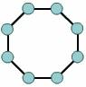
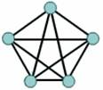

HỌC VIỆN CÔNG
NGHỆ BƯU CHÍNH VIỄN THÔNG
KHOA CÔNG NGHỆ THÔNG TIN
1
BÀI GIẢNG
MẠNG MÁY TÍNH
(Dành cho sinh viên hệ Đại học chính qui
chuyên ngành Công
nghệ thông tin)
Người biên
soạn: ThS. Nguyễn Xuân Anh
HÀ NỘI – 08/2024
MỤC LỤC
CHƯƠNG 1: GIỚI THIỆU........................................................................ 7
1.1 Mạng máy tính và Internet................................................................. 7
1.2 Phân loại mạng máy tính................................................................... 8
1.3 Hình trạng mạng............................................................................... 8
1.3.1 Hình trạng vật lý......................................................................... 9
1.3.2 Hình trạng logic........................................................................ 10
1.4 Kết nối vào mạng Internet............................................................... 10
CHƯƠNG 2: KIẾN TRÚC VÀ HIỆU NĂNG MẠNG............................ 13
2.1 Các phương pháp chuyển mạch....................................................... 13
2.1.1 Chuyển mạch kênh................................................................... 13
2.1.2 Chuyển mạch thông điệp.......................................................... 14
2.1.3 Chuyển mạch gói...................................................................... 15
2.2 Phân tầng và chức năng................................................................... 15
2.2.1 Kiến trúc phân tầng.................................................................. 16
2.2.2 Mô hình tham chiếu OSI.......................................................... 17
2.2.2.1 Các tiến trình ngang hàng................................................... 18
2.2.2.2 Giao diện giữa các tầng....................................................... 19
2.2.2.3 Tổ chức các tầng................................................................ 20
2.2.3 Chức năng các tầng trong mô hình OSI..................................... 20
2.2.3.1 Tầng vật lý......................................................................... 20
2.2.3.2 Tầng liên kết dữ liệu........................................................... 21
2.2.3.3 Tầng mạng......................................................................... 21
2.2.3.4 Tầng vận tải....................................................................... 22
2.2.3.5 Tầng phiên......................................................................... 23
2.2.3.6 Tầng trình diễn................................................................... 23
2.2.3.7 Tầng ứng dụng................................................................... 24
2.2.4 Mô hình TCP/IP....................................................................... 24
2.2.4.1 Tầng truy nhập mạng......................................................... 26
2.2.4.2 Tầng Internet...................................................................... 26
2.2.4.3 Tầng vận tải....................................................................... 26
2.2.4.4 Tầng ứng dụng................................................................... 27
2.2.5 So sánh mô hình OSI và mô hình TCP/IP................................ 28
2.3 Tên miền và địa chỉ......................................................................... 29
2.3.1 Các dịch vụ tên miền................................................................ 29
2.3.2 Cơ chế hoạt động của dịch vụ
tên miền.................................... 31
2.3.3 Bản ghi dịch vụ tên miền.......................................................... 33
2.4 Nguyên tắc thiết kế Internet............................................................. 35
2.5 Các yếu tố tạo nên hiệu năng mạng................................................. 39
2.5.1 Các yếu tố đánh giá hiệu năng mạng......................................... 40
2.5.2 Vai trò của việc đánh giá hiệu năng mạng
máy tính................... 40
2.5.3 Các phương pháp đánh giá hiệu năng mạng.............................. 41
CHƯƠNG 3: TẦNG ỨNG DỤNG.......................................................... 44
3.1 Khái niệm và cài đặt các giao thức tầng
ứng dụng............................ 44
3.1.1 Mô hình dịch vụ của tầng ứng dụng......................................... 45
3.1.2 Mô hình khách chủ.................................................................. 47
3.1.3 Mô hình ngang hàng................................................................. 47
3.2 Các giao thức thường dùng tại tầng ứng
dụng.................................. 47
3.2.1 Giao thức HTTP....................................................................... 48
3.2.1.1 Tổng quan về giao thức HTTP........................................... 48
3.2.1.2 Khuôn dạng của bản tin HTTP.......................................... 51
3.2.1.3 Tương tác người dùng với
máy chủ.................................... 54
3.2.1.4 GET có điều kiện............................................................... 55
3.2.1.5 Web caches........................................................................ 56
3.2.2 Giao thức truyền tập tin FTP..................................................... 58
3.2.3 Giao thức chuyển thư điện tử.................................................... 60
3.2.3.1 Giao thức SMTP................................................................ 61
3.2.3.2 Giao thức POP3................................................................. 69
3.2.3.3 Giao thức IMAP................................................................. 70
3.3 Một số ứng dụng thường dùng........................................................ 71
3.3.1 Trình duyệt web....................................................................... 71
3.3.2 Phần mềm đọc thư điện tử........................................................ 72
3.3.3 Các phần mềm đa
phương tiện................................................. 73
3.3.4 Tiện ích truy nhập từ xa............................................................ 73
CHƯƠNG 4: TẦNG VẬN TẢI............................................................... 74
4.1 Ghép kênh và phân kênh, các giao thức TCP và UDP..................... 74
4.1.1 Ghép kênh và phân kênh.......................................................... 74
4.1.2 Giao thức TCP......................................................................... 78
4.1.3 Giao thức UDP......................................................................... 79
4.1.3.1 Cấu trúc dữ liệu của giao
thức UDP.................................... 80
4.1.3.2 Cách tính kiểm tra tổng trong UDP.................................... 81
4.2 Các nguyên lý truyền dữ liệu tin cậy................................................ 81
4.2.1 Xây dựng giao thức truyền dữ liệu tin
cậy................................. 82
4.2.1.1 Truyền dữ liệu trên kênh hoàn toàn
tin cậy......................... 82
4.2.1.2 Truyền dữ liệu tin cây trên kênh
truyền có lỗi bit................ 83
4.2.1.3 Truyền dữ liệu tin cây khi có
lỗi mất đoạn tin..................... 86
4.3 Điều khiển lưu lượng...................................................................... 89
4.4 Nâng cao hiệu năng bằng đường ống
Pipeline................................. 90
4.4.1 Giao thức quay lui-N................................................................ 91
4.4.2 Giao thức lặp có lựa chọn......................................................... 95
CHƯƠNG 5: LẬP TRÌNH SOCKET...................................................... 99
5.1 Khái niệm về socket........................................................................ 99
5.1.1 Mô hình khách/chủ.................................................................. 99
5.1.2 Các kiến trúc khách/chủ.......................................................... 100
5.1.2.1 Khách/chủ hai tầng........................................................... 100
5.1.2.2 Khách/chủ ba tầng............................................................ 101
5.1.2.3 Kiến trúc khách/chủ n- tầng............................................. 101
5.1.3 Mô hình truyền tin socket....................................................... 101
5.2 Java sockets.................................................................................. 103
5.2.1 Socket cho phía máy chủ........................................................ 103
5.2.2 Socket cho tiến trình trên máy khách...................................... 105
5.3 Máy chủ đa xử lý.......................................................................... 106
5.4 Lập trình socket
với ngôn ngữ C................................................... 107
CHƯƠNG 6: GIAO THỨC TCP........................................................... 108
6.1 Cấu trúc đơn vị dữ liệu của giao
thức TCP.................................... 108
6.2 Truyền dữ liệu tin cậy................................................................... 110
6.3 Điều khiển luồng.......................................................................... 113
6.4 Quản lý kết nối............................................................................. 114
6.5 Điều khiển tắc nghẽn.................................................................... 117
CHƯƠNG 7: TẦNG MẠNG VÀ GIAO THỨC IP............................... 121
7.1 Mô hình dịch vụ tầng mạng.......................................................... 121
7.1.1 Nguyên lý chuyển mạch tầng mạng......................................... 122
7.1.2 Lịch sử chuyển mạch gói và chuyển mạch
ảo.......................... 125
7.2 Nguyên tắc định tuyến.................................................................. 126
7.2.1 Giải thuật xây dựng bảng định
tuyến dựa trên trạng thái đường truyền 127
7.2.2 Giải thuật xây dựng bảng định
tuyến dựa trên vector khoảng cách 130
7.3 Định tuyến phân cấp..................................................................... 134
7.4 Giao thức IP.................................................................................. 135
7.4.1 Địa chỉ IP phiên bản 4............................................................ 136
7.4.1.1 Địa chỉ và định
tuyến....................................................... 139
7.4.1.2 Khuôn dạng gói dữ liệu IP............................................... 141
7.4.1.3 Tách và
tập hợp gói tin IP............................................... 143
7.4.2 Địa chỉ IP phiên bản 6............................................................ 145
7.4.2.1 Khuôn dạng gói tin IP phiên bản 6................................... 145
7.4.2.2 Giao thức ICMP cho gói tin IP phiên bản 6...................... 147
7.4.3 Chuyển từ IP phiên bản 4 sang phiên bản 6............................ 147
7.5 Định tuyến trên mạng Internet....................................................... 147
7.5.1 Giao thức RIP......................................................................... 148
7.5.2 Giao thức OSPF..................................................................... 149
7.5.3 Giao thức BGP....................................................................... 150
7.6 Các giao thức khác........................................................................ 150
7.6.1 Giao thức ICMP..................................................................... 150
7.6.2 Cấp phát địa chỉ IP................................................................. 151
7.6.2.1 Giao thức RARP.............................................................. 152
7.6.2.2 Giao thức BOOTP........................................................... 152
7.6.2.3 Giao thức DHCP.............................................................. 152
7.6.3 Giao thức chuyển đổi địa chỉ.................................................. 153
7.6.3.1 Giao thức ARP................................................................. 153
7.6.3.2 Chuyển đổi địa chỉ
mạng.................................................. 154
7.7 Chia mạng.................................................................................... 155
CHƯƠNG 8: TẦNG LIÊN KẾT DỮ LIỆU........................................... 158
8.1 Mô hình dịch vụ tầng liên kết dữ liệu............................................ 158
8.2 Giao thức đa truy nhập.................................................................. 160
8.2.1 Kỹ thuật phân chia kênh truyền.............................................. 162
8.2.2 Giao thức đa truy nhập........................................................... 163
8.2.2.1 Giao thức ALOHA thuần túy........................................... 164
8.2.2.2 Giao thức ALOHA phân khe thời gian............................. 164
8.2.2.3 Đa truy nhập cảm nhận sóng mang................................... 166
8.3 Các công nghệ kết nối................................................................... 166
8.3.1 Công nghệ Ethernet................................................................ 167
8.3.1.1 Cấu trúc khung dữ liệu Ethernet...................................... 167
8.3.1.2 Dịch vụ truyền số liệu
không liên kết............................... 169
8.3.1.3 Dải tần cơ sở và mã hoá Manchester................................. 169
8.3.1.4 Giao thức CSMA/CD....................................................... 170
8.3.1.5 Hiệu suất công nghệ Ethernet........................................... 171
8.3.1.6 Các tiêu chuẩn truyền dẫn trong công
nghệ Ethernet......... 172
8.3.2 Kết nối mạng diện rộng.......................................................... 174
8.3.2.1 Giao thức PPP.................................................................. 175
8.3.2.2 Giao thức điều khiển kênh
truyền..................................... 176
8.4 Các thiết bị mạng cục bộ............................................................... 177
8.4.1 Bộ tập trung........................................................................... 177
8.4.2 Thiết bị chuyển mạch............................................................. 178
8.4.2.1 Nguyên lý lọc và chuyển tiếp............................................ 179
8.4.2.2 Xây dựng bảng chuyển mạch............................................ 180
8.4.2.3 Các phương pháp chuyển mạch........................................ 181
8.4.2.4 Giao thức STP................................................................. 181
8.4.2.5 So sánh
thiết bị chuyển mạch và thiết bị định
tuyến........ 183
8.4.2.6 Kết nối các đoạn mạng..................................................... 183
8.5 Kết nối không dây........................................................................ 183
8.5.1 Các mô hình kết nối mạng không dây..................................... 184
8.5.2 Ưu và nhược điểm của kết nối
không dây............................... 185
BÀI TẬP TỔNG HỢP........................................................................... 187
Chúng ta đang sống
trong thời đại mà việc sử dụng công
nghệ đã và đang dần thay đổi cuộc
sống, việc toàn cầu hóa của mạng Internet đã
đạt được những thành tựu ngoài sức
tưởng tượng của bất kỳ ai. Những thói
quen xã hội, thương mại, chính trị và giao
tiếp cá nhân cũng nhanh chóng thay đổi để theo
kịp sự phát triển của mạng toàn cầu.
Nhiều dự án khởi nghiệp đã và đang bắt
đầu bằng cách sử dụng mạng Internet,
những sản phẩm và dịch vụ mới đã
tận dụng ưu thế tiểm năng mạng,
mạng Internet đã chứng tỏ vai trò ngày càng quan
trọng trong đời sống xã hội. Chương này
sẽ giới thiệu chung về mạng và ảnh
hưởng của nó tới đời sống xã hội
hiện đại, những khái niệm chung về
mạng máy tính và một số đặc trưng về
kiến trúc mạng.
Giao tiếp với người khác là một trong
những nhu cầu thiết yếu của mỗi con
người, nó chỉ đứng sau các nhu cầu về
không khí, nước, thực phẩm và vật dụng che thân. Các
phương pháp chia sẻ thông tin liên tục thay
đổi và phát triển, ban đầu là những
cuộc nói chuyện trực tiếp, sau đó là những
tín hiệu, ấn phẩm, điện thoại, vô
tuyến… và hiện nay là các mạng xã hội, mỗi
sự phát triển đã cải thiện và nâng cao chất
lượng truyền thông. Với mỗi bước
tiến bộ của công nghệ truyền thông, sự sáng
tạo và tương tác của các mạng dữ liệu
bùng nổ đã có những ảnh hưởng sâu rộng
tới đời sống xã hội.
Ban đầu do hạn chế về băng thông nên
dữ liệu truyền qua mạng chỉ giới hạn
trong việc trao đổi thông tin dựa trên các ký tự
giữa các hệ thống máy tính, ngày nay băng thông đã
mở rộng hơn rất nhiều để có thể
mang các thông tin đa phương tiện giữa các
loại thiết bị khác nhau. Sự hội tụ về
mạng đã cho phép người dùng có thể tương
tác trực tiếp với nhau gần như theo thời
gian thực. Với tính chất đó, truyền thông trên
mạng Internet đã khuyến khích hình thành các cộng
đồng toàn cầu, trao đổi thông tin giữa các
thành viên trong cộng đồng không còn bị giới
hạn bởi không gian và thời gian. Mạng máy tính là
một hệ thống bao gồm các máy tính được
nối kết với nhau để trao đổi thông tin,
việc kết nối các máy tính với nhau nhằm mục
đích sau:
-
Chia
sẻ phần cứng: người sử dụng có
thể dùng chung các thiết bị phần cứng như
máy in, máy vẽ. Cao hơn nữa, người dùng có
thể tận dụng năng lực xử lý của các
máy tính khác.
-
Chia
sẻ dữ liệu: Dữ liệu được
quản lý tập trung, như vậy sẽ đảm
bảo an toàn và toàn vẹn dữ liệu.
-
Trao
đổi thông tin: việc trao đổi thông tin như
thư điện tử, đăng tin lên các trang thông tin
điện tử một cách dễ dàng, nhanh chóng và
tiện lợi.
Nếu nhiều mạng máy tính với nhau gọi là
kết nối liên mạng, việc kết liên mạng trên
phạm vi toàn cầu đã hình thành nên mạng Internet.
Sự phát triển của mạng Internet đã vượt
xa những dự đoán của những người sáng
lập, nó đã làm thay đổi lối sống của
nhân loại. Những tương tác phức tạp của
các thiết bị điện tử và môi trường
tryền dẫn đã hình thành nên một mạng
lưới hoàn toàn trong suốt đối với
người dùng và đồng hành cùng với họ trong
mọi hoạt động xã hội.
Mạng
máy tính có thể được đặt trên một khu
vực nhất định, ví dụ: trong một căn
phòng, một tòa nhà, một quốc gia hay trên phạm vi toàn
cầu. Dựa trên phạm vi địa lý người ta
phân thành các loại mạng cục bộ (LAN - Local Area Network), mạng khu vực (Campus), mạng thành
phố (MAN -Metropolitan Area Network), mạng diện rộng (WAN
- Wide Area Network), trong đó khái
niệm mạng cục bộ
và mạng diện rộng thường hay được
nhắc tới. Mạng cục bộ kết nối các máy
tính trong một khu vực bán kính hẹp, thông thường
dưới 1 Km. Mạng cục bộ thường có
băng thông lớn được thiết kế
để kết nối các máy tính trong một toà nhà, cho
phép dùng chung những thiết bị ngoại vi như máy in,
máy chiếu… và có thể chia sẻ các tài nguyên trên mỗi
máy tính như ổ đĩa, phần mềm, tài nguyên
dữ liệu, các thiết bị được kết
nối liên tục và việc quản lý mạng do chủ
sở hữu tự quyết định. Mạng diện
rộng kết nối các máy
tính có phạm vi lớn hơn 1 Km, nó cho phép cung cấp các
dịch vụ công cộng như truy nhập web, chuyển
tập tin hay dịch vụ thư điện tử… Thông thường
mạng diện rộng vận hành dựa trên nền
tảng mạng viễn thông, kết nối liên mạng
được thực hiện qua các kênh dùng chung và
việc quản lý do nhà cung cấp dịch vụ viễn
thông đảm nhiệm. Mạng khu vực thường
kết nối các máy tính trong phạm vi một vài tòa nhà
của một cơ quan hoặc một doanh nghiệp.
Mạng thành phố trải rộng trên phạm vi một
thành phố hoặc một khu vực và dùng để
kết nối hai hay nhiều mạng cục bộ với
nhau trên các kênh truyền riêng. Như vậy, khác với
việc kết nối liên mạng sử dụng mạng
diện rộng, tính bảo mật trong hệ thống
mạng thành phố được đảm bảo
tốt hơn.
Ngoài tiêu
chí phân loại dựa trên khoảng cách địa lý,
dựa trên tiêu chí về mục đích sử dụng và các
dịch vụ cung cấp có thể xuất hiện các khái
niệm mạng khác như: mạng lưu trữ (SAN - Storage
Area Network), mạng Internet, mạng riêng ảo (VPN - Virtual Private
Network). SAN là mạng chuyên dụng tốc độ cao dùng
để chuyển dữ liệu giữa các máy chủ và
các thiết bị lưu trữ, với việc sử
dụng kênh truyền riêng sẽ tránh được xung
đột với các máy khách. Mạng SAN luôn phải
đảm bảo về hiệu năng, tính sẵn sàng và
qui mô cho hệ thống dữ liệu lớn. Mạng
Internet là mạng của các mạng được kết
nối với nhau trên phạm vi toàn cầu, người
sử dụng kết nối với mạng của nhà cung
cấp dịch vụ Internet (ISP - Internet Service Providers). Mạng
riêng ảo được hình thành bằng cách kết nối
máy tính của các mạng khác nhau dựa trên nền tảng
mạng công cộng, như vậy các máy tính thuộc
mạng khác nhau có thể chia sẻ tài nguyên và sử
dụng các dịch vụ như trong mạng cục
bộ.
Hình
trạng mạng (Network Topology)
định nghĩa cấu trúc
của mạng, nghĩa là nó qui định cách liên kết các
máy tính với nhau, hình trạng mạng được phân
làm hai loại: hình trạng vật lý và hình trạng logic. Hình
trạng vật lý trả lời cho câu hỏi các máy tính
được nối với nhau như thế nào, nó phản
ánh cấu trúc hình học của mạng. Hình trạng logic
trả lời cho câu hỏi bằng cách nào các máy tính truy
nhập được môi trường truyền dẫn
để trao đổi thông tin với nhau, nói cách khác mạng
vận hành theo nguyên tắc nào.
Hình
trạng vật lý có 3 dạng cấu trúc cơ bản là: dạng
tuyến (Bus Topology),
dạng vòng (Ring Topology) và dạng hình sao (Star Topology). Từ ba dạng cấu trúc cơ bản trên
sẽ tạo lập các hình thạng mạng khác như:
dạng sao mở rộng, dạng phân cấp (Hierarchical) và dạng
hỗn hợp (Mesh).
|
Hình trạng
cơ bản
|
Hình trạng
mở rộng
|
|
Dạng tuyến
|
Dạng hình sao mở rộng
|
|

Dạng vòng
|
Dạng phân cấp, dạng cây
|
|
Dạng hình sao
|

Dạng hỗn hợp
|
Hình 1.1 Các hình trạng vật lý
Dạng tuyến:
Tất cả các máy tính
trong mạng đều được nối với nhau
trên một trục đường dây cáp chính, hai
đầu mút của dây cáp được bịt bởi
một thiết bị gọi là kết cuối (Terminator)
có tác dụng giữ cho các tín hiệu di chuyển trên dây
giảm suy hao. Loại hình trạng này dùng ít dây cáp
nhất và dễ lắp đặt, tuy nhiên khi có sự
hỏng hóc ở đoạn nào đó thì rất khó phát
hiện, chỉ cần
một điểm trên đường dây bị
đứt thì toàn bộ mạng sẽ ngừng hoạt
động.
Dạng vòng:
Đường dây cáp
được thiết kế làm thành một vòng khép kín,
tín hiệu chạy quanh theo một chiều nào đó.
Mạng dạng vòng tiết kiệm dây dẫn nhưng
đường dây phải khép kín, nếu bị ngắt
ở một nơi nào đó thì toàn bộ mạng sẽ
ngừng hoạt động.
Dạng hình sao:
Dạng hình sao bao gồm
một điểm trung tâm, các máy tính trao đổi thông tin
với nhau đều phải chuyển qua trung tâm này. Dạng
hình sao có ưu điểm sau:
-
Hoạt động theo nguyên lý nối
song song nên nếu có một thiết bị nào đó ở
một nút thông tin bị hỏng thì mạng vẫn hoạt
động bình thường.
-
Cấu trúc mạng đơn giản.
-
Dễ dang mở rộng qui mô mạng.
Nhược điểm
của mạng hình sao:
-
Khả nǎng mở rộng mạng hoàn
toàn phụ thuộc vào khả nǎng của trung tâm, khi
trung tâm có sự cố thì toàn mạng ngừng hoạt
động.
-
Mạng yêu cầu nối độc
lập riêng rẽ từng thiết bị ở các nút thông
tin đến trung tâm, khoảng cách từ máy đến
trung tâm thường
dưới 100m.
Dạng sao mở
rộng kết nối các dạng hình sao với nhau
bằng cách sử dụng các thiết bị tập trung
(hub) hoặc thiết bị chuyển mạch (switch).
Dạng phân cấp tương tự như dạng sao
mở rộng, tuy nhiên thay cho việc liên kết tập
trung nó sử dụng dạng phân cấp. Dạng hỗn
hợp liên kết các thiết bị với nhau nhằm
cung cấp các kênh dư thừa để đảm
bảo khả năng dự phòng hoặc phân tải cho
hệ thống.
Hình trạng logic
quyết định phương thức các thiết
bị mạng liên lạc với nhau qua môi trường
truyền dẫn, có thể thực hiện bằng phương
pháp quảng bá hoặc sử dụng thẻ bài. Trong hình thức
quảng bá, kênh truyền được chia sẻ cho
tất cả các máy tính, khi một máy tính gửi tin thì
dữ liệu được chuyển lên môi trường
truyền dẫn và tất cả các máy tính khác sẽ
nhận được tin đó. Ở đây không có
bất cứ thứ tự ưu tiên nào, mọi thành viên
đều có quyền như nhau, thành viên nào chiếm
được đường truyền trước thì sẽ
được phục vụ và tại một thời
điểm chỉ cho phép một thành viên được
phép sử dụng đường truyền. Như vậy
tiềm ẩn trong hình trạng này là khả năng xảy
ra xung đột trong mạng, công nghệ Ethernet là
đại diện điển hình cho hình trạng này.
Phương
pháp sử dụng thẻ bài không có nút điều phối,
một bản tin đặc biệt gọi là thẻ bài (token)
được lần lươt chuyển cho mỗi nút
mạng theo một thứ tự xác định
trước. Ví dụ, nút thứ nhất gửi thẻ bài
tới nút thứ hai, nút thứ hai gửi thẻ bài
tới nút thứ ba... nút thứ N gửi thẻ bài tới
nút thứ nhất. Khi một nút nhận được
thẻ bài, nó chỉ giữ thẻ bài khi có dữ liệu
cần gửi, nếu không nó sẽ ngay lập tức
chuyển thẻ bài tới nút kế tiếp. Nếu nút có dữ liệu cần gửi,
khi nhận được thẻ bài, nó gửi đi
lượng dữ liệu trong thời gian cho phép và sau
đó chuyển thẻ bài tới nút kế tiếp. Hai
đại diện cho hình trạng này là công nghệ vòng thẻ bài (Token Ring) và giao
diện dữ liệu phân tán bằng cáp quang (FDDI - Fiber
Distributed Data Interface), ví dụ mạng Arcnet sử dụng
thẻ bài trên nền tảng hình trạng vật lý
dạng tuyến.
Cùng với sự phát triển của
mạng Internet, người ta đã có nhiều cách thức
để kết nối vào Internet. Mỗi cách có ưu
điểm và nhược điểm riêng, tuỳ thuộc
vào phần cứng, phần mềm và chi phí phải
trả. Thực tế, chúng ta có thể gộp chung thành 3
loại hình dịch vụ kết nối cơ bản sau:
- Kết nối
trực tiếp, địa chỉ cố định
- Kết nối
trực tiếp, địa chỉ thay đổi
- Kết nối
gián tiếp
Kết nối trực tiếp, địa chỉ cố
định:
Đây là các loại kết nối mà
người sử dụng có thể truy cập vào Internet
vào bất cứ lúc nào, máy tính sẽ được cung
cấp cho một địa chỉ tĩnh và không bị
không thay đổi trong một thời gian dài. Tốc
độ là ưu điểm lớn nhất của
loại hình này là địa chỉ cố định và
băng thông tương đối ổn định. Chúng
ta có thể thấy kết nối qua modem cáp (cable modem),
ISDN ... là những ví dụ điển hình về loại
kết nối này. Tuy nhiên loại hình kết nối này
thường có chi phí cao, cả về giá cước
cũng như thiết bị dùng cho việc kết
nối.
Kết nối trực tiếp, địa chỉ thay
đổi:
Mỗi lần kết nối, máy tính
sẽ được cấp cho một địa chỉ
để phục vụ cho phiên làm việc, địa
chỉ này chỉ tồn tại trong thời gian kết
nối. Loại kết nối này thường dùng trong
mạng công cộng. Ưu điểm là giá thành tương
đối thấp, tuy nhiên hạn chế của loại
kết nối này là tốc độ không ổn
định, nguyên nhân là do phải chia sẻ tài nguyên kênh
truyền.
Kết nối gián tiếp, không cố định:
Đây là kết nối Internet mà máy
tính của người dùng không kết nối một cách
trực tiếp vào mạng, mà nó được kết
nối vào một máy tính khác đang thực sự nối
Internet, cách này thường thấy ở các phòng dịch
vụ Internet công cộng. Tốc độ cũng tuỳ
thuộc vào loại kết nối Internet mà máy chủ
đang có cũng như số máy tính khách đang kết
nối vào máy chủ. Hơn nữa, loại hình này có
thể không cung cấp đầy đủ các chức
năng cho máy khách, tất cả đều tuỳ
thuộc vào chính sách bảo mật được thiết
lập trên máy chủ.
Căn cứ vào nhu cầu sử
dụng, người dùng có thể lựa chọn các
phương tiện kết nối sau:
-
Kết nói
qua mạng điện thoại công cộng (PSTN): Dùng modem quay số, tốc
độ chậm, chất lượng không tốt, tuy
nhiên đây là mạng bao phủ rộng lớn, kể
cả các vùng hẻo lánh. Nếu kết nối qua
đường dây điện thoại thì tốc
độ hạn chế dưới 56 Kbps, thực tế
chỉ đạt 33.6 Kbps.
-
Kênh
thuê bao (leased line). Thuê
đường dây riêng của công ty viễn thông, tùy
thuộc vào việc sử dụng cáp đồng hay cáp
quang tốc độ có thể đạt từ 64 Kbps
đến 1 Gbps.
-
Mạng
dịch vụ tích hợp số (ISDN - Integrated Service Digital
Nework). Sử dụng truyền dẫn số thay chao tín
hiệu tương tự do đó tốc độ có
thể đạt 144 Kbps đến 2 Mbps.
-
Chuyển
tiếp khung (Frame relay): Phù hợp với các dịch
vụ truyền số liệu, tốc độ truyền
dẫn đạt 44 Mbps.
-
Chế
độ truyền dẫn không đồng bộ (ATM -
Asynchoronous Transfer Mode): ATM sử dụng cáp quang làm môi
trường truyền dẫn và do đó tốc độ
cao, rất thích hợp các dịch vụ đòi hỏi
băng thông rộng.
-
Kênh
vệ tinh (satellite links): Truyền tín hiệu qua vệ tinh
địa tĩnh, chỉ phù hợp với những khu
vực khó triển khai kênh truyền băng thông rộng
bằng các đường dây hữu tuyến.
-
Mạng di động: Hình thức này đang ngày càng phổ biến,
đặc biệt khi các công ty thông tin viễn thông di
động đã triển khai công nghệ 2G, 3G và 4G, công
nghệ 5G đang trong giai đoạn thử nghiệm và hy
vọng tốc độ có thể đạt 10 Gbps.
Mạng máy tính đóng vai
trò quan trọng trong đời sống xã hội, qui mô
của mạng ngày càng mở rộng và cùng với nó là sự
phát triển của các dịch vụ trên mạng. Thay vì
việc phát triển các hệ thống riêng và duy nhất
để phân phát các dịch vụ mới, công nghệ
mạng đã phát triển các phương tiện
để phân tích nền tảng mạng hiện hành và
cải tiến nó, điều này đảm bảo duy trì
mạng hiện hành nhưng vẫn có thể phát triển
các dịch vụ mới với chi phí hợp lý. Trọng
tâm nghiên cứu về mạng là vấn đề sử
dụng các mô hình tổng quát nào có thể chấp nhận
được để mô tả các chức năng
mạng, các mô hình này cung cấp khung cơ bản
để hiểu các mạng hiện hành và tạo
điều kiện cho việc phát triển các công nghệ
mới hỗ trợ các nhu cầu trao đổi thông tin
trong tương lai. Chương này sẽ giới thiệu
tổng quan phương pháp truyền tin trên mạng sau
đó sẽ tập trung phân tích kiến trúc phân tầng
mạng dựa trên mô hình tham chiếu OSI và mô hình thực tế TCP/IP.
Trao đổi thông tin
bắt đầu bằng việc các thông tin
được gửi từ một thiết bị
đến thiết bị khác, con người trao
đổi thông tin bằng cách sử dụng các
phương pháp truyền tin khác nhau, tất cả các
phương pháp này đều có ba thành phần chung:
Nguồn, đích và kênh truyền tin. Nguồn là chủ
thể cần gửi thông tin, đích là chủ thể
tiếp nhận thông tin, kênh truyền bao gồm tất
cả các phương tiện cung cấp đường
đi để thông tin có thể chuyển chính xác từ nguồn
đến đích. Để phân phát thông tin từ
nguồn đến đích, thông tin có thể sẽ
phải di chuyển qua nhiều thiết bị và môi
trường truyền dẫn khác nhau, điều này
đòi hỏi phải có những phương pháp chuyển
mạch để đảm bảo thông tin
được phân phát một cách chính xác và hiệu quả
nhất.
Khi có hai đối tượng cần trao
đổi thông tin với nhau thì giữa chúng sẽ
thiết lập một kênh cố định và
được duy trì cho đến khi một trong hai bên
ngắt liên lạc, dữ liệu chỉ được
truyền theo con đường cố định đó. Chuyển
mạch kênh hoạt động theo mô hình của hệ
thống điện thoại công cộng. Ví dụ, hai máy A
và B cần phải trao đổi thông tin với nhau.
Để có thể giao tiếp với máy B, máy A phải
thực hiện một cuộc gọi. Nếu máy B
chấp nhận cuộc gọi thì một kênh truyền
được thiết lập dành riêng cho việc trao
đổi thông tin giữa máy A và máy B. Tất cả các tài
nguyên được cấp cho cuộc gọi này như
băng thông đường truyền, khả năng
của các bộ chuyển đổi thông tin đều
được dành riêng cho cuộc gọi, không chia sẻ
cho bất kỳ cuộc gọi nào khác ngay cả khi máy A và
B không gửi thông tin cho nhau.
Băng
thông sẽ được chia thành nhiều phần
bằng nhau và sẽ gán cho các cuộc gọi. Khi một
cuộc gọi sở hữu phần băng thông đó,
mặc dù không sử dụng
đến hoặc không sử dụng hết nó cũng
không chia sẻ băng thông này cho các cuộc gọi khác.
Việc phân chia băng thông của kênh truyền có thể
thực hiện kỹ thuật phân chia theo tần số
(FDMA-Frequency Division Multi Access) hay phân chia theo thời gian
(TDMA- Time Division Multi Access).
Hình 2.1 Mạng
chuyển mạch kênh
Chuyển mạch kênh có hiệu
suất không cao do phải mất thời gian để
thiết lập kênh truyền, hiệu suất sử
dụng kênh truyền thấp vì có những thời
điểm kênh truyền đã được thiết
lập nhưng lại không được sử dụng
hoặc sử dụng rất ít, trong khi đó các thực
thể khác có nhu cầu truyền dữ liệu vẫn
phải nằm trong hàng đợi.
Thông điệp là chuỗi các ký tự với khuôn
dạng nhất định, mỗi thông điệp
gồm hai phần: Phần thông tin điều khiển và
phần nội dung cần chuyển, phần thông tin
điều khiển phải chỉ định rõ đích
đến của thông điệp. Căn cứ vào thông tin
điều khiển, mỗi nút trung gian sẽ quyết
định chuyển thông điệp tới nút kế
tiếp, như vậy đường đi của các
thông điệp sẽ không cố định.
Hình 2.2
Chuyển mạch thông điệp
So với chuyển mạch kênh,
hiệu suất sử dụng đường truyền
của chuyển mạch thông điệp cao hơn, cơ
chế truyền tin linh hoạt hơn vì có thể
đặt ưu tiên cho từng thông điệp. Tuy nhiên, do
không qui định độ lớn của mỗi bản
tin nên khó qui định thống nhất thời gian đáp
ứng của mỗi thông điệp, khi có lỗi xảy
ra thì phải truyền lại toàn bộ thông điệp
đó.
Trong phương pháp chuyển mạch gói, dữ
liệu trao đổi giữa hai máy tính được
phân thành những gói tin có kích thước tối đa xác
định. Gói tin của những phiên làm việc khác nhau
sẽ chia sẻ băng thông của kênh truyền. Nếu
lượng dữ liệu cần truyền đi
vượt quá khả năng đáp ứng của kênh
truyền thì sẽ xảy ra trường hợp mỗi
gói tin chiếm dụng toàn bộ băng thông của kênh
truyền. Trong trường hợp này, các thiết bị
định tuyến sẽ lưu lại các gói tin chưa
gửi vào hàng đợi chờ cho đến khi kênh
truyền rỗi sẽ lần lượt gửi đi.

Hình 2.3 Chuyển
mạch gói
Phương pháp chuyển mạch gói
cho phép tận dụng kênh truyền tốt hơn, do
đó có thể đáp
ứng nhiều người
sử dụng hơn mà không cần phải nâng cấp
hệ thống phần cứng. Ví dụ: giả
sử một đường
truyền có tốc độ 2 Mbps, mỗi người dùng
được cấp băng thông 100 Kbps và chỉ hoạt
động tối đa 10% tổng thời gian. Nếu
dùng phương pháp chuyển mạch kênh sẽ chỉ
đáp ứng tối đa 20
người sử dụng, trong khi đó nếu dùng
phương pháp chuyển mạch gói thì có thể đáp
ứng cho khoảng 200 người sử dụng.
Chuyển gói thích hợp cho dịch vụ truyền dữ
liệu lớn nhưng cần phải có cơ chế
điều khiển tắc nghẽn và mất mát dữ
liệu. Thông lượng phụ thuộc vào số
lượng người dùng đồng thời nên một số ứng dụng
về âm thanh và hình ảnh sẽ có chất lượng
không ổn định.
Quá trình trao đổi thông tin trực diện hay qua
mạng đều phải tuân thủ một số các qui
tắc xác định trước, các qui tắc đó
gọi là giao thức. Giao thức là tập hợp các qui
ước về định dạng dữ liệu và các
thủ tục để hai bên có thể gửi và nhận
thông tin chính xác, do đó giao thức sẽ chứa
đựng các đặc điểm riêng của mỗi
loại hội thoại. Ví dụ, hai người trao
đổi thông tin với nhau phải qui ước sử
dụng ngôn ngữ nào, phương tiện truyền
tải thông tin (trực tiếp, qua điện thoại hay
qua thư...). Trong thực tế việc trao đổi
thông tin qua mạng sẽ phức tạp hơn nhiều, nó
cần phải sử dụng rất nhiều các giao
thức khác nhau. Các giao thức liên quan với nhau cần
thiết trong việc trao đổi thông tin gọi là
bộ giao thức, chúng được nạp trong phần
cứng và phần mềm của các thiết bị
mạng.
Để hình dung tương tác giữa các giao thức
khác nhau người ta thường sử dụng kiến
trúc phân tầng, khi đó vấn đề trao đổi
thông tin giữa nguồn và đích sẽ được
giải quyết bằng việc tương tác giữa các
tầng liền kề, tầng trên sử dụng các
dịch vụ do tầng dưới cung cấp và mỗi
tầng sẽ thực hiện một số chức
năng nhất định, các chức năng không
được phép trùng lặp. Sử dụng mô hình phân
tầng giúp cho việc thiết kế giao thức
đơn giản hơn vì chỉ cần định
nghĩa các giao diện với hai tầng liền kề
với nó, thúc đẩy tính cạnh tranh giữa các nhà
sản xuất, bảo đảm khả năng cải
tiến thay đổi một giao thức mà không hề
ảnh hưởng tới giao thức của các tầng
khác.
Trong kiến trúc phân tầng, mỗi
hệ thống thành phần của mạng được
xem như một cấu trúc đa tầng, trong đó
mỗi tầng được xây dựng trên tầng dưới
nó. Số lượng các tầng cũng như tên và
chức năng của mỗi tầng tuỳ thuộc vào ý
tưởng của người thiết kế. Mục
đích của việc phân tầng là để chuyên môn hóa các
chức năng dịch vụ. Mỗi tầng khi sử
dụng dịch vụ không cần quan tâm đến cách
thực hiện của các tầng dưới.
Hình 2.4 Kiến trúc
phân tầng
Vấn đề thiết kế trong
kiến trúc phân tầng phải bảo đảm các nguyên
tắc sau:
-
Trong một mạng số lượng
tầng và chức năng/nhiệm vụ của mỗi
tầng phải như nhau.
-
Ngoại trừ tầng thấp
nhất, dữ liệu không được truyền
trực tiếp từ tầng thứ i của hệ
thống này sang tầng thứ i của hệ thống kia.
Bên gửi phải chuyển dữ liệu đến
tầng dưới nó, đến tầng thấp nhất
sẽ chuyển cho tầng thấp nhất của bên
nhận và dữ liệu lại được chuyển
tiếp cho tầng cao hơn.
-
Liên kết giữa hai tầng thấp
nhất gọi là liên kết vật lý, liên kết của
tất cả các tầng cao hơn gọi là liên kết
logic.
-
Giao tiếp giữa hai tầng liền
kề gọi là giao diện, chúng trao đổi dữ
liệu với nhau qua các điểm truy nhập dịch
vụ.
-
Các tầng tương ứng giao
tiếp với nhau dựa trên các qui tắc nhất
định gọi là giao thức, mỗi tầng có thể
gồm nhiều giao thức.
-
Giao thức là tập các tiêu chuẩn
để trao đổi dữ liệu giữa hai hệ
thống máy tính hoặc hai thiết bị máy tính với
nhau. Mỗi giao thức phải qui định đơn
vị dữ liệu của giao thức (PDU – Protocol Data
Unit) và tập các qui tắc để trao đổi dữ liệu:
Gửi/nhận, qui định tốc độ,
phương pháp truyền (một hướng, hai
hướng hay hai hướng luân phiên), các qui tắc
xử lý khi găp lỗi.
-
Dữ liệu của tầng trên khi
chuyển qua tầng dưới có thể sẽ
được tách thành những đơn vị dữ
liệu nhỏ hơn và đồng thời được
thêm các thông tin điều khiển để phù hợp
với giao thức truyền tin của tầng
dưới. Bên nhận, mỗi tầng tương ứng
sẽ bóc tách thông tin điều khiển và tập hợp
các đơn vị dữ liệu để chuyển lên
tầng cao hơn.
Khi áp dụng xây dựng mạng máy
tính, kiến trúc phân tầng được thể hiện
dưới hai loại mô hình cơ bản: Mô hình giao
thức và mô hình tham chiếu. Mô hình giao thức gắn
chặt chẽ với cấu trúc của một bộ giao
thức nào đó, chúng thể hiện các tính năng giao
tiếp giữa mạng người dùng với mạng
dữ liệu. Mô hình tham chiếu chỉ mang tính chất
tham khảo, nó cung cấp các khuyến nghị để
duy trì tính nhất quán trong tất cả các loại giao
thức và dịch vụ mạng. Mô hình tham chiếu không
hướng tới việc đặc tả chi tiết
giao thức trên mỗi tầng và cũng không qui
định chính xác các dịch vụ của kiến trúc mạng,
mục tiêu cơ bản của mô hình tham chiếu là
trợ giúp cho hiểu các chức năng và tiến trình
xử lý. Mô hình TCP/IP thuộc loại mô hình giao thức vì
nó mô tả các chức năng xuất hiện trên mỗi
tầng của các giao thức, mô hình liên kết hệ các thống
mở (OSI - Open Systems Interconnection) thuộc loại mô hình
tham chiếu. TCP/IP hay OSI chỉ là những mô hình cơ
bản, trong thực tế khi thảo luận hoặc
thiết kế giao thức/dịch vụ, nhà sản
xuất có thể xây dựng các mô hình riêng cho mỗi
sản phẩm của mình dựa trên các khuyến nghị
hoặc tiêu chuẩn của hai mô hình trên.
Tổ chức Quốc tế về
chuẩn hoá ISO (International Organization for Standardization)
được thành lập năm 1946 và chính thức
hoạt động vào ngày 23/2/1947 nhằm mục đích
xây dựng các tiêu chuẩn về sản xuất,
thương mại và thông tin. Xuất phát từ thực
tế mỗi hãng xây dựng các giao thức riêng nhằm
tạo thế độc quyền cho các sản phẩm
của mình, tổ chức ISO đã thiết kế mô hình
liên kết các hệ thống nhằm cung cấp nền
tảng xây dựng các giao thức cho các hệ thống
mở. Đây là mô hình để các hệ thống khác nhau
có thể trao đổi thông tin với nhau mà không cần
thay đổi bất cứ phần cứng hoặc
phần mềm nào của mỗi hãng sản xuất.
Sự phát triển nhanh chóng của mô
hình TCP/IP đã làm cho tập các giao thức mô hình OSI trở
nên lỗi thời, tuy nhiên một vài giao thức của mô
hình này vẫn được sử dụng và mô hình
bảy tầng OSI cũng đã đóng góp đáng kể cho
sự phát triển giao thức và các sản phẩm
mạng. Các tầng được
thiết kế riêng biệt nhưng liên quan chặt chẽ
với nhau, mỗi tầng định nghĩa một phần của quá trình truyền thông tin trên
mạng. Nắm vững những quy tắc cơ bản
của mô hình OSI là tiền đề vững chắc
để thiết kế và phát triển các hệ thống
thông tin trên mạng. Mô hình OSI
gồm 7 tầng sau:
-
Tầng
vật lý (Physical layer)
-
Tầng
liên kết dữ liệu (Datalink layer)
-
Tầng
mạng (Network layer)
-
Tầng
vận tải (Transport layer)
-
Tầng
phiên (Session layer)
-
Tầng
trình diễn (Presentation layer)
-
Tầng
ứng dụng. (Application layer).

Hình 2.5 Mô hình tham chiếu OSI
Hình 2.5 minh họa mối quan hệ
giữa các tầng khi thông tin của người sử
dụng được gửi từ máy tính PC1 đến máy tính PC2. Người
sử dụng trên máy tính PC1 gửi tin cho người
sử dụng tại máy tính PC2, thông tin sẽ lần
lượt được chuyển từ tầng
ứng dụng qua các tầng trung gian để xuống
tầng vật lý của máy tính PC1, sau đó đi
qua nhiều nút trung gian khác trước khi đến máy
tính PC2, những nút trung gian này thường chỉ liên quan
đến tầng vật lý, tầng liên kết dữ
liệu và tầng mạng của mô hình OSI). Tại máy tính
PC2, thông tin sẽ lại lần lượt
được chuyển tiếp từ tầng vật lý qua
các tầng trung gian để đến tầng ứng
dụng.
Khi
xây dựng mô hình, các nhà thiết kế đã phân tích quá
trình truyền dữ liệu thành những chức năng
cơ bản nhất. Những chức năng nào có mục
đích sử dụng liên quan đến nhau được
gộp thành từng nhóm và gọi là tầng trong mô hình tham
chiếu OSI. Như vậy, mỗi tầng được
xác định chức năng và nhiệm vụ riêng
biệt. Với cách thiết kế như vậy, mô hình
tham chiếu OSI khá toàn diện và linh hoạt, đồng
thời đảm bảo tính trong suốt giữa các hệ
thống.
2.2.2.1
Các tiến trình ngang hàng
Trong các thiết
bị mạng, mỗi tầng sử dụng các dịch
vụ do tầng bên dưới cung cấp. Ví dụ,
tầng mạng sử dụng các dịch vụ do tầng
liên kết dữ liệu cung cấp và đến
lượt mình lại cung cấp dịch vụ cho
tầng vận tải. Giữa các máy tính, tầng N trên một
thiết bị giao tiếp với tầng N trên thiết
bị khác. Những giao tiếp này được tiến
hành theo các quy tắc và quy ước đã được
thỏa thuận trước và chúng được gọi
là giao thức.
Tại tầng vật lý, toàn bộ
dữ liệu được chuyển thành chuỗi các bít
và điều chế thành các tín hiệu dạng phù hợp
với môi trường truyền dẫn nhằm bảo
đảm chuỗi các bit đó có thể đến
được bên nhận. Tại các tầng cao hơn trên
máy gửi, dữ liệu được chuyển
xuống các tầng bên dưới để đến
tầng vật lý, tại máy tính đích luồng bít
nhận được tại tầng vật lý sẽ
được chuyển thành byte và tiếp tục đi
lên các tầng cao hơn. Khi chuyển qua mỗi tầng trên
máy gửi, dữ liệu sẽ được thêm các thông
tin điều khiển của tầng tương ứng trước
khi chuyển tiếp xuống tầng dưới. Thông tin
điều khiển có thể thêm vào trước hoặc
sau mỗi bản tin, nếu thêm vào trước gọi là đầu
(header), các thông tin điều khiển được thêm
vào cuối gọi là đuôi (trailer). Theo khuyến nghị
của mô hình OSI, tất cả các tầng đều thêm
thông tin điều khiển vào trước mỗi bản
tin, riêng tầng liên kết dữ liệu thêm thông tin
điều khiển vào cả trước lẫn sau
bản tin.
|
|
|
|
|
|
Dữ liệu
tầng 7
|
|
|
7
|
|
|
|
|
|
|
Dữ liệu
tầng 7
|
|
|
|
|
|
|
|
|
|
|
|
|
|
|
|
|
|
|
|
|
|
|
|
|
H6
|
Dữ liệu
tầng 7
|
|
|
6
|
|
|
|
|
|
H6
|
Dữ liệu
tầng 7
|
|
|
|
|
|
|
|
|
|
|
|
|
|
|
|
|
|
|
|
|
|
|
|
H5
|
Dữ liệu tầng 6
|
|
|
5
|
|
|
|
|
H5
|
Dữ liệu tầng 6
|
|
|
|
|
|
|
|
|
|
|
|
|
|
|
|
|
|
|
|
|
|
|
H4
|
Dữ liệu tầng 5
|
|
|
4
|
|
|
|
H4
|
Dữ liệu tầng 5
|
|
|
|
|
|
|
|
|
|
|
|
|
|
|
|
|
|
|
|
|
|
H3
|
Dữ liệu tầng 4
|
|
|
3
|
|
|
H3
|
Dữ liệu tầng 4
|
|
|
|
|
|
|
|
|
|
|
|
|
|
|
|
|
|
|
|
|
H2
|
Dữ liệu tầng 3
|
T2
|
|
2
|
|
H2
|
Dữ liệu tầng 3
|
T2
|
|
|
|
|
|
|
|
|
|
|
|
|
|
|
|
|
|
|
|
011101011110100100011011
|
|
1
|
|
011101011110100100011011
|
|
Bên gửi
|
Mạng
|
Bên nhận
|
Hình 2.6 Thêm và tách thông tin điều
khiển tại các tầng
Tại bên nhận, quá trình thực hiện ngược
lại so với bên gửi, các tiêu đề
được bóc tách dần dần khi chuyển dữ
liệu từ tầng thấp lên tầng cao. Ví dụ,
tầng liên kết dữ liệu loại bỏ các thông tin
điều khiển sẽ là dữ liệu của
tầng mạng và được chuyển lên tầng trên.
Quá trình tương tự như vậy sẽ
được thực hiện ở các tầng khác,
đến tầng ứng dụng sẽ có được
bản tin của tầng ứng dụng bên gửi.
2.2.2.2
Giao diện giữa các tầng
Trên cùng một máy tính, hai
tầng kề nhau trao đổi dữ liệu với nhau
qua các giao diện, tầng trên yêu
cầu dịch vụ của tầng
dưới thông qua giao diện gọi là điểm truy nhập
dịch vụ (SAP- Service Access Point). Tại mỗi
điểm truy nhập dịch vụ người ta qui
định phương pháp và khuôn dạng dữ liệu trao đổi giữa hai
tầng kề nhau trên cùng một thiết bị.
Định nghĩa giao diện giữa các tầng một
cách rõ ràng sẽ cho phép thay đổi nghiệp vụ
tại một tầng mà không ảnh hưởng
đến các tầng khác.
2.2.2.3
Tổ chức các tầng
Có thể chia bảy tầng
thành ba nhóm: Nhóm hỗ trợ mạng, nhóm hỗ trợ
người sử dụng và nhóm trung gian. Nhóm hỗ
trợ mạng bao gồm ba tầng thấp của mô hình
OSI: tầng vật lý, tầng liên kết dữ liệu và tầng mạng, chúng đảm
nhiệm về các vấn đề liên quan đến
mặt vật lý khi truyền dữ liệu từ một thiết bị này
đến một thiết bị khác,
ví dụ những đặc tả về điện, các kết
nối vật lý, định địa chỉ vật lý,
định thời gian truyền…. Nhóm hỗ trợ
người sử dụng bao gồm ba tầng cao nhất
của mô hình OSI: tầng phiên, trình diễn, ứng dụng,
chúng cung cấp các tính năng tương tác giữa các
hệ thống phần mềm tách biệt. Nhóm trung gian gồm
các tầng nằm giữa hai nhóm trên cụ thể trong mô
hình OSI đó là tầng vận tải nó đảm bảo việc chuyển dữ
liệu tin cậy giữa các thiết bị đầu
cuối. Nói chung, các tầng trên của mô hình OSI
thường được
thực hiện bởi phần mềm trong khi nhóm các
tầng dưới được được
triển khai dưới sự kết hợp của cả
phần cứng và phần mềm, tầng vật lý
hầu như được triển khai bởi phần
cứng.
Hình 2.5 mô tả tổng quan các
tầng trong mô hình OSI, mỗi tầng đều
định nghĩa đơn vị dữ liệu (PDU -
Protocol Data Unit) của giao thức trong tầng đó. Quá
trình trao đổi thông tin được bắt
đầu tại tầng ứng dụng, sau đó
chuyển xuống các tầng dưới. Tại mỗi
tầng, ngoại trừ tầng ứng dụng và tầng
vật lý, thông tin điều khiển sẽ được
thêm vào đơn vị dữ liệu. Khi đơn vị
dữ liệu chuyển đến tầng vật lý, chúng
được chuyển thành tín hiệu phù hợp với
môi trường truyền dẫn và truyền đi trên
đường truyền vật lý. Đến trạm
nhận, tín hiệu đi đến tầng vật lý và
được chuyển ngược lại thành chuỗi
các bít. Các đơn vị dữ liệu sau đó sẽ
được chuyển từ tầng vật lý lên các
tầng trên trong mô hình OSI. Khi đi qua mỗi tầng, các
thông tin điều khiển sẽ bị loại bỏ và
đến tầng ứng dụng sẽ được
bản tin giống như bản tin gốc tại tầng
ứng dụng của bên gửi.
2.2.3.1 Tầng
vật lý
Tầng vật lý thực hiện các
chức năng cần thiết để truyền
luồng bit dữ liệu đi qua các môi trường
truyền đẫn, nó giải quyết các vấn
đề liên quan đến đặc điểm kỹ
thuật về cơ và điện của giữa giao
diện của thiết bị mạng với môi
trường truyền dẫn. Để thực hiện
vai trò này, lớp vật lý cần phải xác định các thủ tục
và các chức năng mà các thiết bị vật lý và
thiết bị giao tiếp cần phải tuân thủ. Tầng
vật lý thực hiện các chức
năng sau:
-
Đảm
bảo giao tiếp với môi trường truyền
dẫn: Tầng vật lý xác
định các đặc tính giao diện giữa các thiết bị
mạng và môi trường truyền dẫn.
-
Biểu
diễn dữ liệu dưới dạng bit: dữ liệu tầng vật lý là luồng bit
liên tục 0 và l. Để truyền đi, các bit phải
được mã hóa thành các tín hiệu điện, quang
hoặc tần số vô tuyến.
-
Tốc
độ truyền dẫn: Qui
định số lượng bit được gửi đi trong
một đơn vị thời gian và khoảng thời
gian để truyền đi một bit.
-
Đồng
bộ: Máy gửi và nhận
phải được đồng bộ hóa ở mức
bit.
-
Quản
lý kênh truyền: Tầng vật lý
liên quan đến việc kết nối các thiết bị
vào môi trường truyền
thông. Trong cấu hình
điểm-điểm, hai thiết bị
được nối với nhau qua một đường
truyền dành riêng. Trong cấu hình điểm-nhiều
điểm, một đường truyền
được nhiều thiết bị dùng chung.
-
Hình
trạng vật lý: Hình trạng
vật lý xác định cách nối các thiết bị với nhau
để tạo thành mạng. Có ba hình trạng cơ
bản: dạng bus, dạng vòng và dạng sao.
-
Chế
độ truyền dẫn: Tầng vật lý cũng xác định
hướng truyền dữ liệu giữa hai thiết
bị: đơn công (simplex), bán
song công (haif-duplex) hay song công (full-duplex). Trong chế
độ đơn công, một thiết bị chỉ có
thể gửi hoặc nhận dữ liệu. Chế độ
đơn công là truyền thông một chiều. Trong chế
độ bán song công, một thiết bị có thể
gửi và nhận dữ liệu, nhưng không phải
tại cùng một thời điểm. Trong chế độ song công, một
thiết bị có thể nhận và gửi dữ liệu tại cùng một thời điểm.
2.2.3.2
Tầng liên kết dữ liệu
Tầng liên kết dữ
liệu đảm bảo truyền tin tin cậy giữa
hai thiết bị vật lý kết nối trực tiếp
với nhau, dữ liệu tại tầng này gọi là khung
(Frame). Tầng liên kết dữ
liệu đảm nhiệm các chức năng sau:
-
Tạo khung dữ liệu: Tầng liên
kết dữ liệu chia gói tin nhận được
từ tầng mạng thành các đơn vị dữ
liệu gọi là các khung dữ liệu.
-
Quản lý địa chỉ vật
lý:
Tầng liên kết dữ liệu phải xác định,
gói tin cần chuyển có đích là thiết bị trong
mạng nội bộ hay mạng khác. Nếu gói dữ
liệu được chuyển đến thiết
bị khác trong mạng nội bộ, nó thêm địa
chỉ vật lý của thiết bị đích vào khung
dữ liệu. Nếu gói tin cần chuyển ra ngoài
mạng nội bộ, nó thêm địa chỉ vật lý của cổng mặc
định.
-
Kiểm soát lưu lượng: Nếu
tốc độ nhận dữ liệu nhỏ hơn
tốc độ gửi dữ liệu, tầng liên
kết dữ liệu phải thực hiện một kỹ thuật kiểm
soát lưu lượng để ngăn ngừa tình
trạng quá tải tại nơi nhận.
-
Kiểm soát lỗi: Tầng liên
kết dữ liệu làm tăng tính tin cậy cho tầng
vật lý bằng cách sử dụng một kỹ thuật
phát hiện và truyền lại các khung bị lỗi hoặc bị
mất. Nó cũng sử dụng kỹ thuật ngăn
ngừa hiện tượng lặp khung. Kiểm soát lỗi thường
được thực hiện bằng cách thêm một thông
tin điều khiển vào phần cuối của khung,
thông thường người ta sử dụng kỹ thuật
kiểm tra vòng (CRC – Cyclic Redandunce Check).
-
Kiểm soát truy cập: Khi nhiều
thiết bị được nối với cùng một
đường truyền, các giao thức ở tầng liên
kết dữ liệu cần xác
định xem thiết bị nào được quyền
sử dụng đường truyền tại một
thời điểm xác định.
2.2.3.3
Tầng mạng
Tầng mạng chịu
trách nhiệm chuyển dữ liệu giữa các thiết
bị đầu cuối của người sử
dụng, đơn vị dữ liệu của tầng
mạng gọi là gói tin (packet). Nếu như tầng vận
tải đảm bảo liên kết giữa các tiến
trình đầu cuối thì tầng mạng chỉ
đảm bảo liên kết các thiết bị đầu
cuối của người sử dụng. Theo định
nghĩa ban đầu, tầng mạng giải quyết các
vấn đề vận chuyển các gói tin qua mạng.
Một số ví dụ về các giao thức như vậy
là X.25, và giao thức Host/IMP của mạng ARPANET. Với
sự xuất hiện của khái niệm liên mạng, các
chức năng mới đã được bổ sung cho
tầng này, đó là chức năng định tuyến cho
dữ liệu từ mạng nguồn đến mạng
đích. Nhiệm vụ này thường đòi hỏi việc
định tuyến cho gói tin qua một mạng
lưới các mạng máy tính. Tầng mạng đảm nhiệm các chức năng
sau:
-
Quản lý địa chỉ logic: Địa chỉ vật lý của tầng
liên kết dữ liệu đã
đảm bảo tính duy nhất trong toàn mạng, tuy nhiên
nó chỉ giải quyết được vấn
đề địa chỉ trong mạng cục bộ. Nếu
gói dữ liệu được chuyển đến
một mạng khác, cần phải có một hệ
thống địa chỉ khác nhằm phân biệt được hệ thống gửi và
hệ thống nhận. Tầng mạng bổ sung thêm thông tin điều khiển vào mỗi
gói dữ liệu gửi đi, trong đó chứa
địa chỉ logic của thiết bị đầu
cuối của bên nhận và bên gửi.
-
Định tuyến: Khi các mạng
hoặc các nút riêng rẽ được nối với nhau tạo
thành một liên mạng (mạng của các mạng)
các thiết
bị. Các thiết
bị kết nối trung gian
(thiết bị định tuyến - router) phải xác
định tuyến đường cho các gói dữ liệu để
chúng đến được nơi
nhận cuối cùng.
2.2.3.4
 Tầng vận tải
Tầng vận tải
 Tầng vận
tải chịu trách nhiệm chuyển toàn bộ bản
tin từ nơi gửi
đến nơi nhận một cách toàn vẹn. Nói cách
khác, tầng vận tải đảm bảo liên kết
giữa các tiến trình trên các máy tính khác nhau trong môi
trường mạng. Có hai loại liên kết: Liên kết có
hướng (Connection Oriented) và liên kết vô hướng
(Connectionless). Đối
với liên kết có hướng, tầng vận tải
tạo ra một kết nối logic giữa hai cổng
đầu cuối: tất cả dữ liệu của
cùng một bản tin được truyền theo
đường kết nối đó. Kết nối có
hướng gồm ba giai đoạn: thiết lập liên
kết, truyền dữ liệu, giải phóng liên kết.
Do phải truyền tất cả các dữ liệu trên
một kết nối, tầng vận tải còn phải
kiểm soát thứ tự truyền, lưu lượng,
phát hiện và sửa lỗi. Tầng vận tải đảm nhiệm các chức
năng sau:
Tầng vận
tải chịu trách nhiệm chuyển toàn bộ bản
tin từ nơi gửi
đến nơi nhận một cách toàn vẹn. Nói cách
khác, tầng vận tải đảm bảo liên kết
giữa các tiến trình trên các máy tính khác nhau trong môi
trường mạng. Có hai loại liên kết: Liên kết có
hướng (Connection Oriented) và liên kết vô hướng
(Connectionless). Đối
với liên kết có hướng, tầng vận tải
tạo ra một kết nối logic giữa hai cổng
đầu cuối: tất cả dữ liệu của
cùng một bản tin được truyền theo
đường kết nối đó. Kết nối có
hướng gồm ba giai đoạn: thiết lập liên
kết, truyền dữ liệu, giải phóng liên kết.
Do phải truyền tất cả các dữ liệu trên
một kết nối, tầng vận tải còn phải
kiểm soát thứ tự truyền, lưu lượng,
phát hiện và sửa lỗi. Tầng vận tải đảm nhiệm các chức
năng sau:
-
Thiết
lập liên kết logic giữa các tiến trình trên thiết
bị đầu cuối của người dùng: Mỗi máy tính
thường chạy nhiều chương trình tại
cùng một thời điểm, việc chuyển bản tin không
chỉ đơn thuần là truyền dữ liệu
từ một máy tính này sang máy
tính khác mà phải chuyển bản tin từ một tiến trình trên máy tính này đến tiến trình tương
ứng trên một máy tính khác. Để đảm
nhiệm chức năng này, một loại thông tin
điều khiển được thêm vào tầng vận
tải gọi là cổng (port), mỗi cổng sẽ
tương ứng với một tiến trình tại
tầng phiên.
-
Phân đoạn
và tái hợp: dữ liệu
tại tầng ứng dụng thường có dung
lượng lớn, để vận chuyển
được hiệu quả, máy tính phải chia mỗi bản
tin thành đoạn
dữ liệu nhỏ hơn và chúng
được truyền độc lập với nhau.
Mỗi đoạn tin được gán một số thứ tự, số thứ tự này giúp
cho tầng vận tải phía nhận tái hợp các đoạn lại
thành bản tin hoàn
chỉnh.
-
Kiểm
soát kết nối: Tại tầng
vận tải người ta sử dụng hai kỹ
thuật truyền dữ liệu: kết nối có
hướng hoặc kết nối vô hướng. Kết
nối có hướng gửi yêu cầu kết nối
đến tầng vận tải của máy nhận,
nếu được chấp thuận thì mới
chuyển các đoạn dữ liệu, sau khi truyền xong
dữ liệu phải gửi tiếp yêu cầu hủy
kết nối. Kết nối vô hướng không phải
gửi yêu cầu kết nối trước khi truyền
dữ liệu (datagram), do đó kết nối vô
hướng sẽ không tin cậy bằng kết nối có
hướng, tính tin cậy trong truyền dữ liệu vô
hướng do các tiến trình tầng trên đảm
nhiệm.
-
Kiểm
soát lưu lượng: Tầng vận
tải chịu trách nhiệm kiểm soát lưu
lượng giữa hai máy tính đầu cuối của
người sử dụng. Để thực hiện
chức năng này, phần thông tin điều khiển
của đoạn tin phải có thành phần kiểm soát
lượng dữ liệu được phép gửi
đi.
-
Kiểm
soát lỗi: Tầng vận tải
chịu trách nhiệm kiểm soát lỗi tại các thiết bị đầu cuối của người
sử dụng. Tất cả các đoạn tin gửi
đi phải được đảm bảm đến
đích chính xác, nếu có lỗi thì phải truyền lại.
2.2.3.5
Tầng phiên
Tầng phiên đóng vai trò
kiểm soát hội thoại giữa các tiến trình trên tầng
ứng dụng qua mạng, nó đảm bảo nhiệm
vụ thiết lập, duy trì và đồng bộ hóa tính
tương tác giữa các tiến trình đồng cấp
trên các máy tính khác nhau. Tầng phiên
đảm nhiệm các chức năng sau:
-
Kiểm soát hội thoại: Tầng phiên
cho phép hai tiến trình cùng tham gia vào một cuộc hội
thoại. Nó cho phép truyền thông giữa hai tiến trình
được thực hiện hoặc theo kiểu bán song
công hoặc theo kiều song công. Ví dụ, hội thoại
giữa một thiết bị đầu cuối với
một máy chủ có thể theo kiểu bán song công.
-
Đồng bộ hóa: Tầng phiên
cho phép một tiến trình thêm các mốc gọi là điểm đồng bộ (synchronization
point) vào luồng dữ liệu. Ví dụ,
nếu hệ thống cần gửi đi một tập
tin lớn gồm N trang, cứ sau M trang nên chèn thêm các
điểm đồng bộ để đảm bảo
rằng việc nhận
từng cụm M trang được thực hiện
độc lập. Trong trường hợp này nếu như có lỗi
khi đang truyền đi trang thứ P x M+1, việc
truyền lại sẽ được bắt đầu
từ trang P x M+1, không cần phải
truyền lại các trang từ 1 đến trang P x M.
2.2.3.6
Tầng trình diễn
Tầng trình diễn
thực hiện các nhiệm vụ liên quan đến cú
pháp và ngữ nghĩa của
các thông tin được trao đổi giữa hai hệ
thống. Tầng trình diễn có nhiệm vụ:
-
Mã
hóa/Giải mã dữ liệu (Encode/Decode): Các tiến trình trên hai thiết bị trao
đổi các thông tin dưới nhiều dạng khác nhau
(xâu kí tự, số, âm thanh, hình ảnh…), các thông tin này sau đó được chuyển sang
dạng byte để truyền đi. Do các hệ thống
máy tính khác nhau sử dụng các chẩn mã hóa khác nhau, tầng trình diễn
chịu trách nhiệm đảm bảo tính trong suốt
đối với người sử dụng trên các hệ
thống sử dụng cách mã hóa khác nhau đó. Tầng trình
diễn tại phía gửi chuyển thông tin theo khuôn dạng
của mình thành thông tin theo
khuôn dạng chung. Tầng trình diễn tại máy nhận
sẽ chuyển thông tin trong khuôn dạng chung thành thông tin
theo khuôn dạng của máy nhận.
-
Nén/Giải
nén: Nén dữ liệu là quá trình làm làm giảm số
lượng bit cần thiết phải vận chuyển
trên đường truyền vật lý, từ đó nâng cao
hiệu suất truyền tin. Nén dữ liệu ngày càng
trở nên quan trọng, đặc biệt trong việc
truyền các dữ liệu đa phương tiện âm
thanh, hình ảnh.
-
Mã
hóa/Giải mã bảo mật (Encrypt/Decrypt): Hệ thống phải có khả năng
đảm bảo tính bí mật khi chuyển những thông
tin quan trọng. Do vậy phía gửi sẽ biến đổi
thông tin ban đầu (bản rõ) thành
một dạng khác (bản mã hóa) và gửi nó đến
phía nhận - đây là tiến trình mã hóa. Phía nhận
thực hiện quá trình ngược lại bằng cách
chuyển bản tin nhận được
(bản mã hóa) thành nguyên dạng ban đầu (bản rõ),
quá trình này được gọi là giải mã.
2.2.3.7
Tầng ứng dụng
Tầng ứng dụng cung cấp các
tiện ích để người dùng truy cập vào
mạng như: các dịch vụ như gửi thư
điện tử, chuyển tập tin và truy cập từ
xa…. Tầng ứng dụng cũng cung cấp các
phương thức cho các ứng dụng khác (ví dụ truy
nhập cơ sở dữ liệu mô hình khách/chủ…).
Tầng ứng dụng là tầng cao nhất trong mô hình OSI,
do đó nó tạo ra dữ liệu thực sự chứ
không có các thông tin điều khiển. Tầng ứng dụng cung
cấp các dịch vụ sau:
-
Thiết
bị đầu cuối ảo của mạng: một thiết bị đầu cuối ảo của
mạng là phiên bản phần mềm của một
thiết bị đầu cuối vật lý, cho phép
người đùng đăng nhập vào một máy từ
xa.
-
Quản
lý, truy cập và chuyển tập tin: ứng dụng này cho phép người dùng truy nhập
tập tin, quản lý các tập trên một máy tính khác.
-
Các
dịch vụ khác: Hai dịch
vụ phổ biến nhất là thư điện tử
và truy nhập web. Dịch vụ thư điện tử
cho phép hai hoặc nhiều người người trao
đổi thư với nhau qua mạng. Dịch vụ truy
nhập web cho phép người dùng đọc tin tức trên
các trang thông tin điện tử. Nói chung các dịch vụ
loại này rất nhiều và ngày càng đa dạng.
Mô hình OSI là mô hình tham chiếu được ISO xây
dựng nhằm tạo một chuẩn phục vụ
việc nối kết các hệ thống mở. Tuy nhiên mô
hình OSI chỉ dừng lại ở mức độ lý
thuyết, trong thực tế mô hình TCP/IP đang
được sử dụng rộng rãi nhất hiện
nay và còn gọi là mô hình Internet, hầu hết tất
cả các hệ điều hành đều có cài đặt
bộ giao thức TCP/IP. Bộ giao thức này
được đặt tên theo hai giao thức chính
của nó là giao thức điều khiển vận tải
(TCP - Transmission Control Protocol) và giao thức liên mạng (IP -
Internet protocol).
Bộ giao thức TCP/IP do Cơ quan chỉ
đạo các dự án nghiên cứu quốc phòng tiên
tiến (DARPA
- Defense Advanced Research Projects Agency) của Bộ quốc phòng
Hoa Kỳ đề xuất từ những năm
đầu thập niên 1970. Sau khi đã hoàn thành việc xây
dựng mạng thông tin toàn cầu đầu tiên cho
quân đội Hoa Kỳ (ARPANET
- Advanced Research Projects Agency Network) , DARPA bắt đầu công việc
trên một số những kỹ thuật truyền thông
dữ liệu khác. Về mặt lịch
sử, mô hình TCP/IP ra đời trước khi có mô hình OSI.
Giống như mô hình OSI, mô hình cũng được phân
thành bốn tầng, mỗi tầng gồm bộ giao
thức đảm nhiệm các chức năng riêng
biệt. Tuy số lượng tầng ít hơn, nhưng mô
hình TCP/IP vẫn phải đảm nhiệm đầy
đủ các chức năng đã nêu trong mô hình OSI. Mô hình TCP/IP chia theo 4 tầng: tầng truy nhập
mạng, tầng Internet, tầng vận tải và tầng ứng
dụng.
|
|
Mô hình OSI
|
|
Mô hình TCP/IP
|
|
|
|
Tầng ứng dụng
|
|
Tầng ứng dụng
|
|
|
|
Tầng trình diễn
|
|
|
|
|
Tầng phiên
|
|
|
|
|
Tầng vận tải
|
|
Tầng vận tải
|
|
|
|
Tầng mạng
|
|
Tầng Internet
|
|
|
|
Tầng liên kết dữ liệu
|
|
Tầng truy nhập mạng
|
|
|
|
Tầng vật lý
|
|
|
Hình 2.7 Các tầng
trong bộ giao thức TCP/IP
Mô
hình TCP/IP là mô hình giao thức với các tiêu chuẩn mở,
các qui định chuẩn và các giao thức trên diễn
đàn công khai và tài liệu của chúng được ghi
trong các văn bản gọi là yêu cầu bình luận RFC (Requests
for Comments). Các RFC bao gồm các đặc tả chính
thức về các giao thức truyền dữ liệu và các
nguồn mô tả việc sử dụng các giao thức. Các
văn bản này cũng chứa các tài liệu kỹ
thuật và tổ chức mạng Internet, bao gồm các
đặc tả kỹ thuật và chính sách do ủy ban công
nghệ Internet (IETF - Internet Engineering Task Force ) soạn
thảo.
Mô
hình TCP/IP mô tả tính năng của các giao thức
được cài đặt trên bên máy gửi lẫn máy
nhận, chúng tương tác với nhau để phân phát
thông tin của các ứng dụng đầu cuối
đến đầu cuối, quá trình được
thực hiện qua bảy bước:
-
Tạo
dữ liệu ở tầng ứng dụng bên gửi.
-
Phân
đoạn và đóng gói dữ liệu lớp ứng
dụng sau đó chuyển xuống tầng dưới.
-
Chuyển
đổi dữ liệu và đưa tới môi
trường truyền dẫn.
-
Vận
chuyển dữ liệu qua các mạng, đó là môi
trường truyền dẫn và các thiết bị trung
chuyển.
-
Nhận
dữ liệu từ mạng
-
Bóc tách
và tập hợp dữ liệu
-
Chuyển
dữ liệu lên tầng ứng dụng của bên
nhận.
Khuôn
dạng dữ liệu trên mỗi tầng gọi là
đơn vị dữ liệu của giao thức (PDU -
Protocol Data Unit). Khi dữ liệu của ứng dụng
được chuyển xuống ngăn xếp giao
thức để truyền qua môi trường mạng,
tại mỗi tầng thông tin điều khiển sẽ
được thêm vào dữ liệu của tầng trên,
quá trình này gọi là đóng gói dữ liệu. Đơn
vị dữ liệu PDU trên mỗi tầng có tên gọi
khác nhau: tầng ứng dụng gọi chung là dữ
liệu, tầng vận tải gọi là đoạn
(Segment), tầng Intetnet gọi là gói (Packet) và tầng truy nhập mạng
gọi là khung (Frame).
2.2.4.1
Tầng truy nhập mạng
Đây là tầng thấp nhất
của mô hình TCP/IP, chịu trách nhiệm nhận các gói tin
của tầng trên Internet và việc truyền phát chúng trên
một mạng xác định. Theo quan điểm hiện
nay mô hình TCP/IP không còn bao gồm các đặc tả
vật lý, nói cách khác tầng liên kết cũng không còn bao
gồm vấn đề về phần cứng hay việc
truyền tín hiệu vật lý nữa. Tuy nhiên trong các
trường hợp triển khai cụ thể, tầng
truy nhập mạng sẽ được chia thành hai
tầng con thực hiện các chức năng của
tầng liên kết dữ liệu và tầng vật lý
của mô hình OSI.
Đối với truy nhập
mạng qua modem quay số, các gói IP thường
được truyền bằng cách sử dụng giao
thức PPP. Đối với truy nhập Internet băng
thông rộng (broadband) như ADSL hay modem cáp, giao thức PPPoE
thường được sử dụng. Mạng dây
cục bộ (local wired network) thường sử dụng
Ethernet, còn mạng không dây cục bộ thường dùng
chuẩn IEEE 802.11. Đối với các mạng diện
rộng (wide-area network), các giao thức thường
được sử dụng là PPP đối với các
đường T-carrier hoặc E-carrier, Frame relay, ATM
(Asynchronous Transfer Mode), hoặc giao thức packet over SONET/SDH
(POS). Tầng truy nhập mạng kết hợp của các
thành phần vật lý thực sự như các bộ
lặp, cáp mạng và các thiết bị nối khác.
2.2.4.2
Tầng Internet
Tầng Internet tương ứng
với tầng mạng trong mô hình OSI, nó đảm bảo
liên kết logic giữa hai thiết bị đầu
cuối của người sử dụng. Các giao thức
trong tầng này nhận dữ liệu từ tầng vận tải cùng
với một địa chỉ của máy đích mà gói tin
sẽ được gửi tới đóng gói dữ
liệu và thực hiện nhiệm vụ chọn
đường để chuyển tiếp gói tin
đến địa chỉ đích. Trong bộ giao
thức liên mạng, giao thức IP thực hiện
nhiệm vụ cơ bản dẫn đường dữ
liệu từ nguồn tới đích. Giao thức IP có
thể chuyển dữ liệu theo yêu cầu của
nhiều giao thức tầng trên khác nhau, mỗi giao
thức trong đó được định danh bởi
một số hiệu giao thức duy nhất.
Về lý thuyết thì các giao thức
tầng trên của tầng IP sẽ thuộc về
tầng vận tải tuy nhiên thực tế một số
giao thức chạy trên nền tảng giao thức IP
vẫn được xếp vào tầng Internet, ví dụ
giao thức ICMP (Internet Control Message Protocol) và giao thức giao thức IGMP (Internet Group
Management Protocol). Điều này minh họa một sự
bất tương thích giữa tầng Internet trong mô hình TCP/IP
và và tầng mạng của mô hình OSI. Tất cả các giao
thức định tuyến, chẳng hạn giao thức
BGP (Border Gateway Protocol), giao thức OSPF (Open Shortest Path First)
và giao thức RIP (Routing information protocol), đều
thực sự là một phần của tầng mạng,
mặc dù chúng có thể có vẻ thuộc về phần
trên của chồng giao thức.
2.2.4.3
Tầng vận tải
Nhiệm vụ trước tiên
của tầng vận tải là đảm bảo liên kết
giữa các tiến trình trên các thiết bị đầu
cuối của người sử dụng. Tầng vận
tải cũng có thể điều chỉnh lưu
lượng truyền thông tin, nó cũng cung cấp một
sự vận chuyển tin cậy, đảm bảo
rằng dữ liệu đến đích không bị
lỗi. Để làm như vậy, phần mềm giao
thức cung cấp tính năng để bên nhận có
thể gửi lại các thông báo xác nhận về việc
thu dữ liệu và bên gửi có thể truyền lại
các đoạn tin bị mất hoặc bị lỗi.
Nhiệm vụ của tầng vận
tải là kết hợp các khả năng truyền bản
tin từ tiến trình đầu cuối đến tiến
trình đầu cuối mà không phụ thuộc vào mạng
bên dưới, kiểm soát lỗi, phân mảnh dữ
liệu và điều khiển lưu lượng. Việc
truyền bản tin giữa các tiến trình trên các thiết
bị đầu cuối của người sử
dụng tại tầng vận tải gồm hai loại:
-
Kết nối có hướng (connection-oriented) hay còn gọi là có
liên kết, ví dụ giao thức TCP.
-
Kết nối vô hướng (connectionless)
hay còn gọi là kết nối không liên kết, ví dụ giao
thức UDP.
Tầng vận tải có thể
được xem như một cơ chế vận
chuyển thông thường, nghĩa là trách nhiệm của
một phương tiện vận tải là đảm
bảo rằng hàng hóa/hành khách của nó đến đích
an toàn và đầy đủ. Tầng vận tải cung
cấp dịch vụ kết nối các ứng dụng
với nhau thông qua việc sử dụng các cổng TCP và
UDP. Do giao thức IP chỉ cung cấp dịch vụ chuyển
dữ liệu theo cách tốt nhất có thể
được (best effort delivery), tầng vận tải là
tầng đầu tiên giải quyết vấn đề
tin cậy. TCP là một giao thức kết nối có hướng, nó
giải quyết nhiều vấn đề độ tin
cậy để cung cấp một dòng dữ liệu
đáng tin cậy:
-
Dữ liệu đến đích đúng
thứ tự
-
Sửa lỗi dữ liệu ở mức
độ tối thiểu
-
Loại bỏ dữ liệu trùng lặp
-
Gửi lại các gói tin bị thất
lạc hoặc bị lỗi
-
Kiểm soát lưu lượng truyền
tin
UDP là một giao thức kết
nối vô hướng. Giống như giao thức IP, nó là
một giao thức nỗ lực tối đa phân phát
dữ liệu và không tin cậy. Giao thức này
thường được dùng cho các dịch vụ không yêu
cầu đòi hỏi độ chính xác cao. RTP (Real-time
Transport Protocol - giao thức vận tải thời gian
thực) là một giao thức được thiết
kế cho dữ liệu thời gian thực, nếu
chiếu theo mô hình OSI thì đó là giao thức tầng phiên vì
nó sử dụng các dịch vụ của giao thức UDP
của tầng vận tải, tuy nhiên nó vẫn được
xếp vào giao thức thuộc tầng vận tải trong
mô hình TCP/IP.
2.2.4.4
Tầng ứng dụng
Đây là tầng cao nhất trong
cấu trúc phân tầng của mô hình TCP/IP, nó bao gồm ba
tầng trên của mô hình OSI. Tầng này bao gồm tất
cả các chuơng trình ứng dụng sử dụng các
dịch vụ sẵn có thông qua một chồng giao
thức TCP/IP. Các chương trình ứng dụng
tương tác với một trong các giao thức của
tầng vận tải để truyền hoặc nhận
dữ liệu. Mỗi chương trình ứng dụng
lựa chọn một kiểu giao thức thích hợp cho
công việc của nó. Tầng ứng dụng là nơi các
chương trình mạng thường dùng nhất làm việc
nhằm liên lạc giữa các nút trong một mạng. Giao
tiếp xảy ra trong tầng này là tùy theo các ứng
dụng cụ thể và dữ liệu được
truyền từ chương trình, trong định dạng
được sử dụng nội bộ bởi ứng
dụng này, và được đóng gói theo một giao
thức tầng vận tải.
Trong mô hình TCP/IP, không có tầng nào
nằm giữa ứng dụng và các tầng vận tải,
tầng ứng dụng trong bộ TCP/IP phải bao gồm
các giao thức hoạt động như các giao thức
tại tầng trình diễn và tầng phiên của mô hình
OSI. Việc này thường được thực
hiện qua các thư viện lập trình.
Dữ liệu thực để
gửi qua mạng được truyền cho tầng
ứng dụng, nơi nó được đóng gói theo giao
thức tầng ứng dụng. Từ đó, dữ
liệu được truyền xuống giao thức
tầng thấp tại tầng vận tải. Hai giao
thức tầng thấp thông dụng nhất là TCP và UDP.
Mỗi ứng dụng sử dụng dịch vụ
của một trong hai giao thức trên đều cần có
cổng. Hầu hết các ứng dụng phổ biến
đều có các cổng riêng biệt (HTTP - Giao thức
truyền siêu văn bản dùng cổng 80; FTP - Giao thức
truyền tập tin dùng cổng 20, 21, ...)
Bộ giao thức trong mô hình TCP/IP
đã được sử dụng trước khi mô hình
OSI được công bố. Trong khi mô hình TCP/IP đã
được triển khai thực tế cho các hệ
thống mạng, thì mô hình OSI chủ yếu đưa ra
các khuyến nghị và thường để diễn
tả chức năng và hoạt động của
mạng. Hai mô hình này tuy có liên quan với nhau nhưng không
hoàn toàn giống nhau.
Điểm khác biệt đầu
tiên dễ thấy nhất là số lượng của các
tầng, mô hình TCP/IP xuất phát từ dự án DARPA của
Bộ Quốc Phòng Mỹ với bộ giao thức IP
chỉ có bốn hoặc năm tầng trong khi đó mô hình
OSI lại dùng bảy tầng. Tầng truy nhập mạng
có thể được coi như là một tầng riêng
biệt nhưng cũng có thể được phân tách ra
thành hai tầng, tầng vật lý và tầng liên kết
dữ liệu.
So sánh tên của chúng một cách
chặt chẽ cho thấy hai tầng tầng trình diễn
và tầng phiên đã gộp lại vào tầng ứng
dụng. Tầng vận tải giữ nguyên chức
năng cũng như tên gọi của nó, tầng mạng
đổi tên thành tầng Internet và chức năng của
chúng tương đương nhau. Hai tầng liên kết
dữ liệu và tầng vật lý trong mô hình OSI
được gộp lại thành tầng truy nhập
mạng trong mô hình TCP/IP.
Các tầng của mô hình OSI không có
nhiều chức năng đủ để phản ánh
hoạt động của mô hình TCP/IP. Chẳng hạn,
cần phải có một tầng nằm giữa tầng
mạng và tầng vận tải để chỉ ra
nơi tồn tại của giao thức ICMP và IGMP.
Tương tự như vậy cũng cần phải có
một tầng ở giữa tầng mạng và tầng
liên kết dữ liệu dành cho giao thức ARP (Address
Resolution Protocol) và giao thức RARP (Reverse Address Resolution
Protocol).
Bảng sau tóm tắt một số giao
thức và vị trí của chúng trong mô hình OSI. Để
thuận tiện, các phần tiếp theo sẽ trình bày các
giao thức theo mô hình TCP/IP, đôi khi cũng sẽ dùng mô
hình OSI để giải thích nguyên lý làm việc của các
thiết bị trên mạng.
|
Tầng
|
Mô
hình OSI
|
Mô
hình TCP/IP
|
Giao
thức
|
|
7
|
Tầng
ứng dụng
|
Tầng ứng dụng
|
HTTP, SMTP, SNMP, FTP, Telnet, ECHO, SIP, SSH,
NFS, RTSP, XMPP, Whois, ENRP
|
|
6
|
Tầng trình diễn
|
XDR, ASN.1, SMB, AFP, NCP
|
|
5
|
Tầng phiên
|
ASAP, TLS, SSH, ISO 8327 / CCITT X.225, RPC,
NetBIOS, ASP
|
|
4
|
Tầng
vận tải
|
Tầng
vận tải
|
TCP, UDP, RTP, SCTP, SPX, ATP, IL
|
|
3
|
Tầng mạng
|
Tầng Internet
|
IP, ICMP, IGMP, IPX, BGP, OSPF, RIP, IGRP, EIGRP,
ARP, RARP, X.25
|
|
2
|
Tầng
liên kết dữ liệu
|
Tầng
truy nhập mạng
|
Ethernet 802.2, Token ring, HDLC, Frame relay,
ISDN, ATM, 802.11 WiFi, FDDI, PPP
|
|
1
|
Tầng
vật lý
|
Ethernet 802.3
(10BASE-T, 100BASE-T, 1000BASE-T), SONET/SDH, T-carrier/E-carrier, 802.11
|
Mỗi con người có
thể được xác định theo nhiều cách như: nhận biết qua tên
trong giấy khai sinh, số chứng minh thư, số
hộ chiếu…. Dù có nhiều cách nhận biết để phân
biệt mọi người nhưng phương thức
nhận biết nào phụ thuộc vào hoàn cảnh. Ví
dụ, công an sử dụng số chứng minh
thư nhân dân chứ không sử dụng tên trong khi đó
mọi người thích nhớ tên nhau hơn là số
hiệu chứng minh thư. Máy tính trên mạng cũng có
thể được xác định bằng tên máy tính
hoặc tên miền, tên máy tính tương đối dễ
nhớ đối với con người nhưng cung
cấp ít thông tin về vị trí
của nó trên mạng. Hơn nữa tên máy tính bao gồm
nhiều ký tự và có độ dài thay đổi nên vấn
đề định tuyến sẽ trở nên phức
tạp. Vì vậy vị trí của mỗi máy tính
được xác định thông qua địa chỉ logic,
trong mô hình TCP/IP đó là địa chỉ IP. Địa
chỉ IP gồm có 32 bit (phiên bản 4) hoặc 128 bit (phiên
bản 6) và có cấu trúc phân cấp, để đơn
giản chúng ta sẽ chỉ nói đến địa
chỉ IP phiên bản 4.
Để tham gia trao đổi thông
tin trên mạng, mỗi thiết bị phải
được đánh dấu bằng địa chỉ,
đó là chuỗi các con số rất khó nhớ đối
với con người. Ví dụ, mỗi người
sẽ rất dễ nhớ tên miền của trang tin
điện tử Học viện Công nghệ Bưu chính
Viễn thông www.ptit.edu.vn hơn
là nhớ địa chỉ 203.162.10.108 của nó. Hệ
thống tên miền (DNS - Domain Name System) thực hiện
chức năng chuyển đổi tên miền thành
địa chỉ IP, nó sử dụng hệ thống các
máy chủ để thực hiện nhiệm vụ này. DNS
sử dụng cơ sở dữ liệu phân tán cài
đặt trên hệ thống phân cấp các máy chủ tên
miền và cho phép máy tính và máy chủ tên trao đổi thông
tin phục vụ mục đích xác định địa
chỉ IP. Giao thức trao đổi tên miền DNS thuộc
tầng ứng dung và chạy trên nền giao thức UDP
với số hiệu cổng là 53.
Thông thường DNS được
các giao thức tầng ứng dụng khác như HTTP, SMTP và
FTP sử dụng để xác định địa
chỉ IP của máy tính dựa trên tên miền do
người dùng đưa vào. Điều gì xảy ra khi
người sử dụng muốn truy nhập vào trang
www.ptit.edu.vn? Để gửi được bản tin
HTTP yêu cầu tới máy chủ web thì máy tính của
người sử dụng phải xác định
được địa chỉ IP của www.ptit.edu.vn.
Điều này được thực hiện như sau:
máy tính của người sử dụng gọi ứng
dụng DNS. Trình duyệt sẽ lấy ra tên miền www.ptit.edu.vn từ địa chỉ URL trên
trình duyệt và chuyển nó cho tiến trình DNS trên máy khách. Tiến
trình DNS máy khách gửi một yêu cầu chứa tên miền
www.ptit.edu.vn tới máy chủ DNS đã được
đăng ký trong cấu hình địa chỉ. Nhận
được yêu cầu này, máy chủ DNS sẽ tìm
kiếm trong cơ sở dữ liệu của mình, nếu
không tìm thấy sẽ gửi chuyển tiếp yêu cầu
đó đến máy chủ tên miền cấp cao hơn và
quá trình được lặp lại cho đến khi tìm
thấy địa chỉ của tên miền hoặc không
có máy chủ nào có thể phân giải được tên
miền đó. Kết quả là tiến trình DNS máy khách
sẽ nhận được một bản tin trả
lời từ máy chủ DNS chứa địa chi IP cần
xác định hoặc không thể phân giải
được tên miền. Nếu phân giải
được tên miền, trình duyệt sẽ mở
một kết nối TCP tới tiến trình HTTP máy chủ
trên máy tính có địa chỉ IP vừa được xác
định. Các ứng dụng Internet sử dụng
dịch vụ DNS sẽ mất thêm thời gian phân giải
tên miền, tuy nhiên địa chỉ IP đã
được phân giải thường được ghi
tạm trên máy chủ DNS cục bộ trong một thời
gian nhất định và như vậy làm giảm tải
cho hệ thống DNS cũng như độ trễ
của ứng dụng. Bên cạnh dịch vụ xác
định địa chỉ IP từ tên máy, DNS cung cấp
một số dịch vụ quan trọng như đặt
bí danh cho máy tên miền, phân tải xử lý tên miền …
Máy tinh có thể có một
hoặc nhiều bí danh, ví dụ tên
máy chủ trang thông tin điện tử của
Học viện Công nghệ Bưu chính Viễn thông www.ptit.edu.vn có
thể có hai
bí đanh là www.ptit.edu.vn
và ptit.edu.vn. Tên bí danh thường
dễ nhớ hơn tên thật. Một ứng dụng có
thể yêu cầu DNS xác định tên thật cũng
như địa chỉ IP của một
tên bí danh. Địa chỉ của thư điện
tử cần dễ nhớ. Ví dụ nếu trên máy chủ
của học viện Công nghệ bưu chính viễn thông
(trang thông tin điện tử là www.ptit.edu.vn) thì địa
chỉ hộp thư điện tử của các thành viên
sẽ là XXX@ptit.edu.vn. Ứng
dụng có thể sử dụng DNS để xác
định tên đầy đủ của một bí danh
cũng như địa chỉ IP của máy tính đó. Trên
thực tế, DNS cho phép đặt tên miền cho các
dịch vụ của một máy chủ, ví dụ Học
viện Công nghệ Bưu chính viễn thông có tên miền là
ptit.edu.vn thì các dịch vụ cơ bản như trang web có
tên miền là www.ptit.edu.vn, thư
điện tử là mail.ptit.edu.vn…
DNS thực hiện việc phân
tán tải cho các máy chủ, đặc biệt là các máy
chủ được nhân
bản (các máy chủ có
nội dung giống
hệt nhau), những trang
có nhiều người truy cập như yahoo.com
được đặt trên nhiều máy chủ giống
hệt nhau, mỗi máy chủ là một hệ thống
đầu cuối khác nhau và địa chỉ IP cũng
khác nhau. Đối với các máy chủ giống hệt nhau như
vậy, một nhóm địa chỉ IP sẽ gắn với tên
đầy đủ của một máy nào đó, cơ
sở dữ liệu DNS chứa toàn
bộ nhóm địa chỉ IP đó. Khi máy khách gửi truy
vấn DNS để xác định địa chỉ IP thì
máy chủ sẽ gửi toàn bộ nhóm địa chỉ IP
đó nhưng hoán đổi thứ tự của chúng, thông thường máy khách gửi bản
tin HTTP tới máy tính có địa chỉ IP được
liệt kê đầu tiên trong nhóm. Sự hoán chuyển
vị trí các địa chỉ IP mà DNS thực hiện
đã phân tải cho các máy chủ. Việc
hoán chuyển của DNS cũng được ở
dụng cho hệ thống thư điện tử khi
nhiều máy chủ thư điện tử có chung bí danh.
DNS được đặc tả trong RFC 1034 và RFC 1035 và
cập nhật trong một số RFC khác.
Giống như các giao thức
HTTP, FPT hay SMTP, giao thức DNS nằm ở tầng ứng dụng vì nó hoạt động giữa hai
thực thể truyền thông đầu cuối sử dụng mô hình khách/ chủ, sử
dụng một giao thức ở tầng vận tải
để trao đổi
bản tin DNS giữa hai
đầu cuối. Tuy nhiên vai
trò của DNS khác tất nhiều so với các dịch
vụ Web, truyền tập tin hay thư
điện tử. DNS không phải ứng dụng được người dùng trực tiếp sử
dụng mà DNS chỉ cung cấp
một dịch vụ Internet thiết yếu cho các ứng dụng,
đó là chuyển đổi tên miền sang địa chỉ IP.
Máy trạm gửi bản tin truy
vấn tên miền đến máy chủ DNS đã
được đăng ký trong phần cấu hình
địa chỉ IP, trong bản tin chứa tên miền cần
xác định địa chỉ
IP. Sau một khoảng thời gian nào đó – từ
vài phần nghìn giây đến vài chục giây, máy trạm
nhận được bản tin trả lời của DNS
chứa địa chỉ IP cần xác định. Vì
vậy, với máy khách thì DNS
là một dịch vụ xác định IP đơn
giản và dễ hiểu.
Nhưng triển khai dịch vụ đó thực sự rất
phức tạp, bao gồm nhiều máy chủ tên miền
đặt khắp nơi trên thế giới và một giao
thức ở tầng ứng dụng xác định cách thức trao đổi thông tin giữa các máy chủ tên
miền.
Để triển khai DNS,
người ta có thể đưa ra một kiến trúc
đơn giản sau: có một máy chủ chứa tất
cả các ánh xạ tên và địa
chỉ IP. Theo thiết kế tập trung này, máy khách
chỉ cần gửi tất cả các truy vấn tới máy
chủ duy nhất và máy chủ này sẽ trực tiếp trả
lời mọi truy vấn. Mặc dù tính đơn giản
của thiết kế này rất hấp dẫn nhưng nó
hoàn toàn không thích hợp cho mạng Intemet với số lượng
lớn và ngày càng tăng các máy tính. Thiết kể tập
trung như vậy nảy sinh một số vấn
đề sau:
-
Điểm
hỏng duy nhất: nếu
máy chủ tên miền duy nhất ngừng làm việc cũng
có nghĩa là toàn bộ mạng Internet ngừng hoạt
động.
-
Khối lượng xử lý lớn:
một
máy chủ tên miền duy nhất
phải xử lý tất cả các truy
vấn DNS (cho tất cả các bản tin yêu cầu từ
hàng tỉ máy tính trên toàn cầu).
-
Cơ sở
dữ liệu tập
trung ở xa: máy chủ tên miền duy
nhất không thể gần tất cả các máy khách.
Nếu máy chủ tên miền đặt ở Hoa Kỳ thì
tất cả truy vấn từ các nước
khác phải chuyển tới phía bên kia trái đất và có
thể qua một đường
kết nối chậm và tắc nghẽn. Hậu quả là
các ứng dụng phải chịu độ trễ rất
lớn.
-
Bảo
trì: máy chủ tên miền phải ghi nhớ thông tin
về tất cả các tên
miền trên mạng Intemet. Khi đó cơ sở dữ
liệu sẽ rất lớn
và máy chủ tên miền phải cập nhật
thường xuyên thông tin cho mọi tên miền mới,
đồng thời phải giải quyết các vấn đề kiểm chứng và xác
nhận khi người dùng sử dụng cơ sở
dữ liệu tập trung.
Như vậy, một cơ
sở dữ liệu tập trung trên một máy chủ tên
miền duy nhất không phù hợp khi quy mô hệ thống
lớn. Do đó, hệ thống máy chủ têm miền được
thiết kế phân tán, đó là một ví dụ điển
hình về triển khai cơ sở dữ liệu phân tán
trên mạng Internet. Để giải quyết vấn
đề quy mô mạng, DNS sử dụng nhiều máy
chủ tên miền tổ chức phân cấp và phân tán trên
toàn cầu. Không có máy chủ tên miền nào chứa tất
cả tên và địa chỉ IP
các tên miền trên mạng Internet, những thông tin này
được phân tán trên
nhiều máy chủ tên miền. Có ba loại máy chủ
tên miền: máy chủ tên miền cục bộ, máy chủ
tên miền gốc và máy chủ tên miền ủy quyền.
Các máy chủ tên miền đó trao đổi thông tin với nhau và với các máy tính khác.
Máy chủ tên miền cục bộ:
Mỗi nhà cung cấp dịch
vụ Internet (ISP) đều
có máy chủ tên miền
cục bộ (còn
được
gọi là máy chủ tên miền mặc
định). Khi máy tính trong cơ quan tạo ra một bản tin
truy vấn DNS thì đầu tiên bản tin đó
được gửi tới máy chủ tên miền đó.
Địa chỉ IP của máy chủ tên miền cục
bộ phải được cấu hình trong máy tính
của người sử dụng (trong máy tính chạy
hệ điều hành windows, gõ lệnh ipconfig /all). Loại
máy chủ tên miền thường gần với máy trạm,
trong trường hợp tại cơ quan của một
tổ chức, nó có thể ở trên cùng mạng nội
bộ. Với các ISP thì khoảng cách giữa máy chủ tên
miền và các máy tính của
người sử dụng chỉ là vài thiết bị
định tuyến. Nếu máy tính yêu cầu xác
định địa chỉ của một máy tính khác
trong cùng một ISP thì máy chủ tên miền cục bộ có
thể ngay lập tức xác định được
địa chi IP mà không phải liên hệ với bất
kỳ máy chủ tên miền nào khác.
Máy chủ tên miền gốc:
Trên mạng Intemet có 13 máy
chủ tên miền gốc, hầu hết đều đặt tại Bắc
Mỹ. Khi máy chủ tên miền cục bộ không có thông
tin về tên miền được yêu cầu thì máy
chủ tên miền cục bộ sẽ đóng vai trò máy
khách DNS và gửi câu hỏi truy vấn tới một trong số các máy chủ tên miền gốc.
Nếu máy chủ tên miền gốc có thông tin của tên
miền được hỏi, nó sẽ gửi một bản
tin trả lời đến máy chủ tên miền cục
bộ và sau đó thông tin này được máy chủ tên
miền cục bộ gửi trả lời cho máy trạm
đã yêu cầu. Nếu máy
chủ tên miền gốc không có thông tin tên miền đó, nó
sẽ tìm kiếm thông tin về máy chủ tên miền
quản lý tên miền đã yêu cầu.
Máy chủ tên
miền ủy quyền:
Mỗi máy tính
phải đăng ký tới một máy chủ tên miền
ủy quyền. Thông thường máy chủ tên miền
ủy quyền một máy tính
là một máy chủ tên miền trong miền ISP của máy tính đó, thực tế
mỗi máy tính phải có ít nhất hai máy chủ tên miền
ủy quyền để đề phòng trường
hợp một máy chủ tên miền bị hỏng. Có
thể định nghĩa, máy
chủ tên miền ủy quyền của một máy tính là máy
chủ tên miền luôn lưu trữ bản ghi DNS cho phép xác định địa chỉ
IP của máy tính đó từ tên. Khi máy chủ tên miền
ủy quyền nhận được truy vấn từ máy
chủ tên miền gốc, nó sẽ gửi một bản
tin DNS trả lời chứa ánh xạ được yêu
cầu, sau đó máy chủ tên miền gốc gửi ánh
xạ đó tới máy chủ và máy chủ tên miền
cục bộ lại tiếp tục gửi ánh xạ
đó tới máy tính yêu cầu. Nhiều máy chủ tên
miền vừa là máy chủ tên miền cục bộ
vừa là máy chủ tên miền ủy quyền.
Xét ví dụ đơn giản
sau: Giả sử trạm muốn có địa chỉ IP
của máy tính tên miền là www.yahoo.com, giả sử máy
chủ gốc của miền
là opendns.com và máy chủ tên miền ủy
quyền của www.yahoo.com là
dns.yahoo.com. Đầu tiên
máy trạm gửi
một bản tin truy vấn tới máy chủ tên miền cục bộ dns.vnn.vn. Bản
tin đó chứa tên miền www.yahoo.com cần xác
định địa chỉ IP. Máy chủ tên miền
cục bộ không chứa bản ghi tên miền www.yahoo.com, do đó nó gửi bản tin tới máy
chủ tên miền gốc, nhưng nó phân tích phần
đuôi của tên miền là .com do đó nó gửi tới
máy chủ tên miền gốc chuyên quản lý các tên miền
có phần đuôi là .com, trong trường hợp này nó
gửi đến máy chủ opendns.com. Máy chủ tên
miền opendns.com không chứa bản ghi về tên miền www.yahoo.com nhưng
lại chứa địa chỉ IP của máy chủ tên
miền ủy quyền dns.yahoo.com của tên miền www.yahoo.com, vì vậy nó
trả về địa chỉ IP của máy chủ
dns.yahoo.com cho máy chủ tên miền cục bộ dns.vnn.vn.
Nhận được địa chỉ IP này, máy chủ
tên miền dns.vnn.vn gửi tiếp bản tin đến máy
chủ dns.yahoo.com để yêu cầu cung cấp
địa chỉ IP của tên miền www.yahoo.com, tại đây
máy chủ tên miền dns.yahoo.com có chứa địa
chỉ IP của máy chủ www.yahoo.com, nó gửi kết quả cho máy
chủ tên miền cục bộ dns.vnn.vn, máy chủ tên
miền dns.vnn.vn sẽ chuyển tiếp cho máy trạm và
đồng thời lưu địa chỉ này trong cơ
sở dữ liệu tạm của nó.
Một đặc tính quan
trọng của DNS là lưu trữ tạm thời các
bản ghi DNS (DNS caching). Trong thực tế, DNS lưu
trữ tạm thời để làm
giảm độ trễ cũng như
làm giảm số bản tin DNS trao đổi trên mạng.
Ý tưởng này rất đơn giản: Khi nhận
được ánh xạ DNS của máy tính nào đó, bên
cạnh việc gửi tiếp bản tin, máy chủ tên
miền sẽ lưu ánh xạ này vào bộ nhớ cục
bộ (ổ địa cứng hay RAM). Với ánh xạ
tên máy - địa chỉ IP được lưu trữ,
nếu có một truy vấn khác yêu cầu địa
chỉ IP của cùng tên máy mà máy chủ tên miền vừa lưu trữ, máy chủ
tên miền sẽ xác định được địa
chỉ áp mong muốn, ngay cả khi nó không phải là máy
chủ tên miền ủy quyền cho máy tính đó. Để tránh bị lạc
hậu, thông tin lưu trữ tạm
thời sẽ bị xoá bỏ sau một khoảng thời
gian nhất định (thường là 48 giờ).
Máy chủ
tên miền cũng triển khai cơ sở dữ
liệu phân tán, ghi lại các bản ghi tài nguyên cho các ánh
xạ tên máy một địa chỉ IP. Mỗi bản tin
trả lời DNS chứa một hay nhiều bản ghi tài
nguyên, chi tiết trong RFC 1034, RFC 1035. Bản ghi tài nguyên
gồm 4 trường sau: Tên (Name), Giá trị (Value),
Loại (Type) và thời gian sống (TTL). Trường TTL
cho biết thời gian tồn tại của bản ghi tài
nguyên, dùng để xác định thời điểm có
thể xoá bản ghi tài nguyên khỏi bộ nhớ lưu
trữ. Ý nghĩa của
trường Name và Value phụ thuộc vào trường
Type:
- Type = A: Trường Name chứa tên máy và trường
Value chứa địa chỉ IP của máy đó.
Bản ghi kiểu
A là ánh
xạ Tên máy
với Địa chỉ
IP chuẩn.
- Type = NS: trường Name là tên miền và trường
Value là tên máy của máy chủ tên miền ủy quyền
của các máy tính trong miền đó. Bản ghi này
thường được sử dụng để
gửi tiếp các truy vấn DNS.
- Type = CNAME:
trường Value là tên đầy đủ của máy có
tên bí danh đặt trong trường Name. Bản ghi
kiểu này cho phép xác định tên đầy đủ
của một máy tính từ tên bí danh.
- Type = MX: trường Value là tên máy của
máy chủ thư điện tử có tên bí danh đặt
trong trường Name.
Máy chủ tên miền ủy
quyền cho một máy tính khác thì nó sẽ chứa bản
ghi kiểu A của máy tính đó. Nếu không phải là máy
chủ tên miền ủy quyền của máy tính
được yêu cầu thì nó sẽ chứa một
bản ghi kiểu NS cho miền của máy tính này và cũng
có một bản ghi kiểu A xác định địa
chỉ IP của máy chủ tên miền và đặt trong trường
giá trị của bản ghi NS. Bản tin DNS gồm hai loại:
bản tin truy vấn và bản tin trả lời, cả hai kiểu bản tin này có chung
khuôn dạng trên hình 2.8.
0
15 16
31
|
Số
hiệu bản tin
|
Cờ
|
|
Số lượng
bản ghi
phần truy
vấn
|
Số
lượng bản ghi
phần trả
lời
|
|
Số
lượng bản ghi
phần
ủy quyền
|
Số
lượng bản ghi
phần
thông tin thêm
|
|
Phần
truy vấn
|
|
Phần
trả lời
|
|
Phần
ủy quyền
|
|
Phần
thông tin thêm
|
Hình 2.8 Khuôn dạng bản tin DNS
Mười
hai byte đầu tiên là phần tiêu đề của
bản tin gồm các trường sau:
-
Trường
đầu tiên là một định danh 16 bit cho mỗi bản
tin yêu cầu, 16 bit định danh này được ghi
lại vào bản tin trả lời, cho phép máy khách xác
định được đó là câu trả lời cho bản
tin truy vấn nào.
-
Trường cờ
gồm 16 bit, mỗi bit tương ứng với một
cờ. Bit dầu tiên là cờ truy vấn/trả lời (QR)
xác định bản tin là yêu cầu (0) hay là trả
lời (1). Cờ authoritiative được đặt
trong bản tin trả lời khi máy chủ tên
miền là máy chủ tên miền ủy quyền của tên
máy tính cần xác định địa chỉ IP, cờ
mong muốn truy vấn đệ quy (recursive-desired query)
được đặt khi máy khách (máy trạm hay máy
chủ tên miền) mong muốn máy chủ tên miền thực
hiện truy vấn đệ quy khi nó không có bản ghi
đó, cờ chấp nhận đệ quy (recursion-available
) được đặt trong bản tin trả lời
nếu máy chủ tên miền đó hỗ trợ đệ
quy. Trong phần tiêu đề cũng có 4 trường
số lượng, các trường này xác định
số lượng các bản ghi trong 4 phần dữ
liệu sau phần tiêu đề.
-
Phần truy
vấn chứa thông tin về
câu hỏi được tạo ra, nó bao gồm
trường tên chứa tên đang được hỏi và trường
kiểu xác định kiểu câu hỏi cho tên máy tính
đó kiểu A cho tên máy tính, kiểu
MX cho máy chủ thư điện tử.
-
Phần
trả lời từ máy chủ tên miền chứa các
bản ghi tài nguyên cho tên được yêu cầu
trước đó. Mỗi bản ghi tài nguyên có 4
trường: Loại (A, NS, CNAME, MX), tên, giá trị và
thời gian sống. Bản tin trả lời có thể có
nhiều bản ghi tài nguyên vì tên máy tính có thể ứng
với nhiều địa chỉ IP. Phần ủy
quyền (authonty section)
chứa các bản
ghi của các máy chủ ủy quyền.
-
Phần
phụ trợ chứa các bản ghi khác, ví dụ
trường trả lời trong bản tin trả lời
một truy vấn MX sẽ chứa tên đầy
đủ của máy chủ thư điện tử có tên
bí danh đặt ở trong trường Name. Phần
phụ trợ có thể có một bản ghi kiểu A cung
cấp địa chỉ IP cho chính máy chủ thư
điện tử đó.
Các
phần trên mô tả cách thức lấy dữ liệu trong
cơ sở dữ liệu DNS, vậy làm thế nào để
đưa được dữ liệu vào cơ sở
dữ liệu? Cho tới gần đây, nội dung của
máy chủ DNS được cấu hình tĩnh, ví dụ, thông qua tập tin cấu hình
được người quản trị hệ thống
tạo ra gần đây, lựa chọn UPDATE
được đưa vào giao thức DNS cho phép dữ
liệu được tự động thêm vào hay xoá
bỏ khỏi cơ sở dữ liệu thông qua bản
tin DNS. RFC 2136 đặc
tả quá trình cập nhật
động của DNS.
Khi
cấu hình thiết bị mạng, chúng ta cung cấp
một hoặc nhiều địa chỉ máy chủ DNS
để máy khách sử dụng khi cần thực hiện
phân giải tên miền, những địa chỉ này do nhà
cung cấp dịch vụ khuyến nghị sử dụng.
Hệ điều hành cung cấp một số tiện ích
liên quan tới dịch vụ tên miền, người dùng
có thể thực hiện các tiện ích này để tìm ra
nguyên nhân không phân giải được tên miền.
Tiện ích nslookup sẽ hiển thị máy chủ tên
miền đã cấu hình trong máy tính, nslookup Tên_Miền
sẽ cho biết địa chỉ của tên miền
cần phân giải. Tiện ích ipconfig /displaydns hiển
thị tất cả các bản ghi DNS hiện nay đang
được lưu tạm trong hệ điều hành
của máy khách.
Mạng Internet thực chất là mạng của các
mạng được kết nối trên toàn cầu, do
đó việc thiết kế mạng Internet thường
dựa trên mô hình phân cấp. Công việc thiết kế bao
gồm thiết kế cho mạng diện rộng và
mạng nội bộ, dù là loại nào thì đều
phải tuân thủ các bước cơ bản sau:
Xác định yêu cầu:
Trước khi thiết kế cần phải xác
định các yêu cầu đối với mạng bao
gồm:
-
Yêu cầu
kỹ thuật.
-
Yêu cầu
về hiệu năng.
-
Yêu cầu
về ứng dụng.
-
Yêu cầu
về quản lý mạng.
-
Yêu cầu
về an ninh và an toàn mạng.
-
Yêu cầu
ràng buộc về tài chính, thời gian thực hiện, yêu
cầu về chính trị của dự án, xác định
nguồn nhân lực, xác định các tài nguyên đã có và có
thể tái sử dụng.
Mục
đích của giai đoạn này là nhằm xác định
mong muốn của khách hàng trên mạng mà chúng ta sắp xây
dựng. Những câu hỏi cần được trả
lời trong giai đoạn này là:
·
Xây
dựng mạng để làm gì? Sử dụng cho mục
đích gì?
·
Các máy
tính nào sẽ được nối mạng?
·
Những
người nào sẽ được sử dụng
mạng, mức độ khai thác sử dụng mạng
của từng người / nhóm người ra sao?
·
Trong
tương lai gần (3 đến 5 năm tới) có
nối thêm máy tính vào mạng không, nếu có thì nối
ở đâu, số lượng bao nhiêu?
Phương
pháp thực hiện của giai đoạn này là phỏng
vấn khách hàng, nhân viên các phòng mạng có máy tính sẽ
nối mạng. Thông thường các đối
tượng mà phỏng vấn không có chuyên môn sâu hoặc
không có chuyên môn về mạng, cho nên hạn chế sử
dụng những thuật ngữ chuyên môn để trao
đổi với họ. Chẳng hạn nên hỏi khách
hàng “Bạn có muốn
người trong cơ quan bạn gửi thư nội
bộ không?”, hơn là hỏi “Bạn có muốn cài đặt máy
chủ thư điện tử trong mạng không? ”. Những câu trả lời của khách hàng
thường không có cấu trúc, rất lộn xộn, nó
xuất phát từ góc nhìn của người sử
dụng, không phải là góc nhìn của kỹ sư mạng.
Người thực hiện phỏng vấn phải có
kỹ năng và kinh nghiệm trong lĩnh vực này,
phải biết cách đặt câu hỏi và tổng hợp
thông tin.
Một
công việc cũng hết sức quan trọng trong giai
đoạn này là “Quan sát địa hình” để xác định những nơi
mạng sẽ đi qua, khoảng cách xa nhất giữa hai
máy tính trong mạng, dự kiến đường đi
của dây mạng, quan sát hiện trạng công trình kiến
trúc nơi mạng sẽ đi qua. Địa hình đóng
vai trò quan trọng trong việc chọn công nghệ và
ảnh hưởng lớn đến chi phí xây dựng và
vận hành mạng. Chú ý đến ràng buộc về
mặt thẩm mỹ cho các công trình kiến trúc khi chúng ta
triển khai đường dây mạng bên trong nó. Giải
pháp để nối kết mạng cho 2 tòa nhà tách rời
nhau bằng một khoảng không phải đặc
biệt lưu ý.
Sau khi
khảo sát địa hình, cần vẽ lại địa
hình hoặc yêu cầu khách hàng cung cấp cho chúng ta sơ
đồ thiết kế của công trình kiến trúc mà
mạng đi qua. Trong quá trình phỏng vấn và khảo sát
địa hình, đồng thời ta cũng cần tìm hiểu
yêu cầu trao đổi thông tin giữa các phòng ban, bộ
phận trong cơ quan khách hàng, mức độ
thường xuyên và lượng thông tin trao đổi.
Điều này giúp ích ta trong việc chọn băng thông
cần thiết cho các nhánh mạng sau này.
Phân tích yêu
cầu:
Khi đã
có được yêu cầu của khách hàng, bước
kế tiếp cần phải phân tích yêu cầu để
xây dựng bảng “Đặc
tả yêu cầu hệ thống mạng”, trong đó xác định rõ những vấn
đề sau:
-
Những
dịch vụ mạng nào cần phải có? (chia sẻ
tập tin, chia sẻ máy in, dịch vụ web, thư
điện tử, truy nhập Internet hay không?...)
-
Mô hình mạng là gì? (Workgoup hay
Client / Server? ...)
-
Mức
độ yêu cầu an toàn mạng.
-
Ràng buộc
về băng thông tối thiểu trên mạng.
-
Xác
định số lượng nút mạng để
quyết định phương thức phân cấp, chọn
kỹ thuật thiết bị chuyển mạch.
-
Dựa vào
cơ cấu tổ chức để phân đoạn
vật lý đảm bảo hai yêu cầu an ninh và
đảm bảo chất lượng dịch vụ.
-
Dựa vào mô
hình vật lý để lựa chọn môi trường
truyền dẫn.
-
Dự báo các
yêu cầu mở rộng.
Thiết
kế giải pháp:
Người
thiết kế cần phải đưa ra hình trạng
mạng, bao gồm hình trạng vật lý và hình trạng
logic, các cônng nghệ cần sử dụng. Bước kế tiếp trong tiến trình xây
dựng mạng là thiết kế giải pháp để
thỏa mãn những yêu cầu đặt ra trong bảng
Đặc tả yêu cầu hệ thống mạng.
Việc chọn lựa giải pháp cho một hệ
thống mạng phụ thuộc vào nhiều yếu
tố, có thể liệt kê như sau:
·
Kinh phí
dành cho hệ thống mạng.
·
Công
nghệ phổ biến trên thị trường.
·
Thói
quen về công nghệ của khách hàng.
·
Yêu
cầu về tính ổn định và băng thông của
hệ thống mạng.
·
Ràng
buộc về pháp lý.
Tùy thuộc vào mỗi khách hàng cụ thể mà
thứ tự ưu tiên, sự chi phối của các
yếu tố sẽ khác nhau dẫn đến giải pháp
thiết kế sẽ khác nhau. Tuy nhiên các công việc mà giai
đoạn thiết kế phải làm thì giống nhau. Thiết
kế sơ đồ mạng ở mức mô hình liên quan
đến việc chọn lựa mô hình mạng, giao
thức mạng và thiết đặt các cấu hình cho các
thành phần nhận dạng mạng. Mô hình mạng được
chọn phải hỗ trợ được tất
cả các dịch vụ đã được mô tả trong
bảng Đặc tả yêu cầu hệ thống
mạng. Mô hình mạng có thể chọn là nhóm làm việc (Workgroup)
hay vùng (Domain) đi kèm với giao thức TCP/IP, NETBEUI hay
IPX/SPX….
Ví dụ:
·
Một
hệ thống mạng chỉ cần có dịch vụ chia
sẻ máy in và thư mục giữa những người
dùng trong mạng cục bộ và không đặt nặng
vấn đề an toàn mạng thì ta có thể chọn mô
hình Workgroup.
·
Một
hệ thống mạng chỉ cần có dịch vụ chia
sẻ máy in và thư mục giữa những người
dùng trong mạng cục bộ nhưng có yêu cầu quản
lý người dùng trên mạng thì phải chọn mô hình
Domain. Nếu hai mạng trên cần có dịch vụ mail
hoặc kích thước mạng được mở
rộng, số lượng máy tính trong mạng lớn thì
cần lưu ý thêm về giao thức sử dụng cho
mạng phải là TCP/IP. Mỗi mô hình mạng có yêu cầu
thiết đặt cấu hình riêng, những vấn
đề chung nhất khi thiết lập cấu hình cho mô
hình mạng gồm xác định các thành phần nhận
dạng mạng kể cả việc đặt tên Domain,
Workgroup, máy tính, định địa chỉ IP cho các máy,
định cổng cho từng dịch vụ, phân chia
mạng con, thực hiện tìm đường đi cho
thông tin trên mạng.
Cần phải xây dựng
chiến lược khai thác và quản lý tài nguyên mạng ,chiến lược này nhằm
xác định ai được quyền làm gì trên hệ
thống mạng. Thông thường, người dùng trong
mạng được nhóm lại thành từng nhóm và
việc phân quyền được thực hiện trên các
nhóm người dùng. Căn cứ vào sơ đồ
thiết kế mạng ở mức mô hình, kết hợp
với kết quả khảo sát địa hình
bước kế tiếp ta tiến hành thiết kế
mạng ở mức vật lý. Sơ đồ mạng
ở mức vật lý mô tả chi tiết về vị trí
đi dây mạng ở địa hình, vị trí của các
thiết bị nối kết mạng như Hub, Switch,
Router, vị trí các máy chủ và các máy trạm. Từ đó
đưa ra được một bảng dự trù các
thiết bị mạng cần mua. Trong đó mỗi
thiết bị cần nêu rõ: Tên thiết bị, thông số
kỹ thuật, đơn vị tính, đơn giá,…
Lựa
chọn phần cứng, phần mềm: Dựa trên các phân tích yêu cầu và kinh phí dự
kiến cho việc triển khai để lựa chọn
thiết bị của các nhà cung cấp thiết bị
mạng, phần mềm hệ điều hành và các
phần mềm ứng dụng. Một
mô hình mạng có thể được cài đặt
dưới nhiều hệ điều hành khác nhau.
Chẳng hạn với mô hình Domain, ta có nhiều lựa
chọn như: Windows NT, Windows 2003, Netware, Unix, Linux,...
Tương tự, các giao thức thông dụng như TCP/IP,
NETBEUI, IPX/SPX cũng được hỗ trợ trong
hầu hết các hệ điều hành. Chính vì thế ta có
một phạm vi chọn lựa rất lớn. Quyết
định chọn lựa hệ điều hành mạng
thông thường dựa vào các yếu tố như:
·
Giá
thành phần mềm của giải pháp.
·
Sự
quen thuộc của khách hàng đối với phần
mềm.
·
Sự
quen thuộc của người xây dựng mạng
đối với phần mềm.
Hệ
điều hành là nền tảng để cho các phần
mềm sau đó vận hành trên nó. Giá thành phần mềm
của giải pháp không phải chỉ có giá thành của
hệ điều hành được chọn mà nó còn bao
gồm cả giá thành của các phầm mềm ứng
dụng chạy trên nó. Hiện nay có 2 xu hướng
chọn lựa hệ điều hành mạng: các hệ
điều hành mạng của Microsoft Windows hoặc các
phiên bản của Unix, Linux. Sau khi đã chọn hệ
điều hành mạng, bước kế tiếp là
tiến hành chọn các phần mềm ứng dụng cho
từng dịch vụ. Các phần mềm này phải tương
thích với hệ điều hành đã chọn.
Tính toán giá
thành: Tính toán giá thành để
đảm bảo các chỉ tiêu kỹ thuật, các yêu
cầu của ứng dụng, tính khả mở của
hệ thống. Việc tính toán giá thành cần phải xem
xét tới yếu tố đầu tư ban đầu và
chi phí phải trả trong quá trình vận hành hệ
thống.
Triển khai
mẫu thử nghiệm: Triển
khai ở quy mô nhỏ nhưng vẫn minh họa
được toàn bộ các yêu cầu về kỹ thuật,
yêu cầu về ứng dụng làm cơ sở cho việc
đánh giá khả năng và giá thành của mạng
trước khi triển khai trên diện rộng. Khi bản thiết kế đã được
thẩm định, bước kế tiếp là tiến
hành lắp đặt phần cứng và cài đặt
phần mềm mạng theo thiết kế. Cài đặt
phần cứng liên quan đến việc đi dây
mạng và lắp đặt các thiết bị nối
kết mạng (Hub, Switch, Router) vào đúng vị trí như
trong thiết kế mạng ở mức vật lý đã mô
tả. Tiến trình cài đặt phần mềm bao
gồm:
·
Cài
đặt hệ điều hành mạng cho các máy chủ,
các máy trạm
·
Cài
đặt và cấu hình các dịch vụ mạng.
·
Tạo
người dùng, phân quyền sử dụng mạng cho
người dùng.
Tiến
trình cài đặt và cấu hình phần mềm phải tuân
thủ theo sơ đồ thiết kế mạng mức
mô hình đã mô tả. Việc phân quyền cho người
dùng pheo theo đúng chiến lược khai thác và quản lý
tài nguyên mạng. Nếu trong mạng có sử dụng router
hay phân nhánh mạng con thì cần thiết phải thực
hiện bước xây dựng bảng định
tuyến trên các router và trên các máy tính.
Kiểm
thử và đánh giá: Sau khi
đã cài đặt xong phần cứng và các máy tính đã
được nối vào mạng, bước kế
tiếp là kiểm tra sự vận hành của mạng.
Trước tiên, kiểm tra sự nối kết giữa
các máy tính với nhau. Sau đó, kiểm tra hoạt
động của các dịch vụ, khả năng truy
cập của người dùng vào các dịch vụ và
mức độ an toàn của hệ thống. Nội dung
kiểm thử dựa vào bảng đặc tả yêu
cầu mạng đã được xác định lúc
đầu. Đối chiếu với các
yêu cầu xác định ban đầu, nếu không đáp
ứng thì phải lặp lại các bước trên
để tìm ra giải pháp tối ưu nhất có thể.
Đánh giá bản thiết kế mạng cần phải
dựa trên các tiêu chí sau:
-
Đáp ứng yêu
cầu người sử dụng
-
Giá thành thấp
-
Dễ cài
đặt
-
Dễ mở
rộng
-
Dễ cô lập
trong trường hợp xảy ra lỗi
Đối
với thiết kế cho mạng diện rộng
(thường là nhiệm vụ của các nhà cung cấp
dịch vụ Internet), người ta chia thành ba lớp sau:
Lớp lõi: Lớp lõi là trục xương sống
của mạng thường dùng các bộ chuyển
mạch có tốc độ cao, nó yêu cầu độ tin cậy
cao, có công suất dư thừa, có khả năng tự chịu
lỗi, có khả năng thích nghi cao, đáp ứng nhanh,
dễ quản lý, có khả năng lọc gói, hay lọc các
tiến trình đang truyền trong mạng.
Lớp phân phối: Lớp phân phối là gianh giới giữa
lớp truy nhập và lớp lõi của mạng. lớp phân
tán thực hiện các chức năng đảm bảo
gửi dữ liệu đến từng phân đoạn
mạng, đảm bảo an ninh-an toàn, phân đoạn
mạng theo nhóm công tác, chia miền, định tuyến
giữa các mạng, chuyển môi trường truyền
dẫn, định tuyến giữa các miền, tạo
biên giới giữa các miền trong định tuyến
tĩnh và động, thực hiện các bộ lọc gói
tin, thực hiện các cơ chế đảm bảo
chất lượng dịch vụ.
Lớp truy nhập: Lớp truy nhập cung cấp các khả
năng truy nhập cho người dùng cục bộ hay
từ xa truy nhập vào mạng, thường
được thực hiện bằng các bộ chuyển
mạch trong một khu vực nhỏ.
Hiệu năng mạng là khái niệm cho biết
hiệu suất hoạt động của hệ thống
mạng. Hiệu năng chủ yếu được xác
định bởi sự kết hợp của nhiều yếu
tố, có những yếu như: Băng thông, thông
lượng, thời gian đáp ứng, độ trễ,
độ tin cậy, tỉ lệ lỗi, tốc
độ xử lý của phần mềm ứng
dụng, tính sẵn sàng
của hệ thống. Tuỳ theo mục đích nghiên
cứu cụ thể, hiệu năng có thể chỉ bao
gồm một nhân tố nào đó hoặc là sự kết
hợp một số trong các nhân tố nêu trên.
Có thể phân các yếu tố đánh giá hiệu
năng thành hai loại: các yếu tố hướng
tới người sử dụng và các yếu tố hướng
tới hệ thống. Đối với người
sử dụng, thời gian đáp ứng là
yếu tố quan trọng nhất, đặc biệt trong các hệ thống thời gian
thực hoặc các môi trường hệ thống
tương tác. Đó là khoảng thời gian từ khi gửi
một yêu cầu cho đến khi nhận được
kết quả chính xác. Trong các hệ thống tương
tác, đôi khi người ta sử dụng yếu tố thời gian phản ứng của hệ thống thay cho
thời gian đáp ứng, yếu tố này được
tính bằng khoảng thời gian từ khi dữ liệu
yêu cầu đến được hệ thống cho
đến khi yêu cầu chứa trong dữ liệu đó
nhận được khe thời gian phục vụ
đầu tiên. Đây là yếu tố thể hiện
mức độ hiệu dụng của bộ lập
lịch của hệ thống trong việc nhanh chóng cung
cấp dịch vụ cho một yêu cầu mới
đến. Trong các hệ thống mạng máy tính, các
đại lượng thời gian đáp ứng, thời
gian phản ứng của hệ thống đều
được xem là các biến ngẫu nhiên, vì vậy
người ta thường nói về phân bố, kỳ
vọng, phương sai... của chúng.
Các yếu tố hướng tới hệ
thống điển hình là băng thông, thông lượng và thời gian trễ. Băng thông được
định nghĩa là lượng thông tin tối đa có
thể chuyển tải trên mạng trong một đơn
vị thời gian, trong khi đó thông lượng
được định nghĩa là lượng thông tin thực
tế được vận chuyển qua mạng trong
một đơn vị thời gian. Đơn vị thông
tin ở đây có thể là bit, byte hay gói số liệu...
Nếu các đơn vị thông tin đi vào mạng theo
một cơ chế độc lập với trạng thái
của mạng, thì thông lượng cũng chính bằng
tốc độ đến trung bình nếu mạng
vẫn còn có khả năng vận chuyển, không dẫn
đến trạng thái bị tắc nghẽn. Một
số trường hợp người ta sử dụng
đại lượng hệ số sử dụng
đường truyền, đó là tỉ số của thông lượng
trên băng thông. Thời
gian trễ là thời gian trung bình để vận chuyển
một gói số liệu qua mạng từ nguồn tới
đích. Cũng có trường hợp người ta
sử dụng đại lượng thời gian trễ chuẩn hoá, đó là tỉ số của thời gian trễ
trên một tham số thời gian nào đó, thí dụ
thời gian cần thiết để truyền một gói
tin.
Trong suốt lịch sử phát triển của
mạng máy tính, vấn đề đánh giá và dự
đoán hiệu năng mạng luôn thu hút sự quan tâm
của những người nghiên cứu và thiết kế
mạng, mục đích chính là để
nắm được và cải thiện đặc
trưng chi phí và hiệu năng. Yêu cầu đánh giá và dự đoán hiệu
năng mạng đặt ra ngay từ khi người ta
thiết kế kiến trúc của hệ thống cho
đến khi mạng đã được lắp
đặt và đưa vào hoạt động. Trong giai đoạn
đầu của quá trình thiết kế, người ta
thường phải dự đoán hai điều: Thứ
nhất, các ứng dụng sẽ chạy trên mạng và các
yêu cầu dịch vụ mà các ứng dụng này đòi
hỏi hệ thống mạng phải đáp ứng, thứ
hai lựa chọn kiến trúc dựa trên các công nghệ
phần cứng và phần mềm sẽ được phát
triển và đưa ra thị trường trong
tương lai khi hệ thống mạng bước vào
giai đoạn triển khai thực hiện.
Trong giai đoạn thiết kế chi tiết,
việc dự đoán và đánh giá hiệu năng sẽ
trở nên cụ thể hơn. Thí dụ sẽ chọn
đường truyền vật lý như thế nào, các
đặc tính của đường truyền
được chọn sẽ ảnh hưởng thế
nào đến hiệu năng của mạng. Các kỹ
thuật được dùng để dự đoán và
đánh giá hiệu năng mạng trong giai đoạn
thiết kế và triển khai thực hiện có khi chỉ
là các tính toán bằng tay, nhưng cũng có khi là các mô
phỏng rất tinh vi. Việc so sánh hiệu năng dự
đoán với hiệu năng thực tế đạt được
thường giúp cho nhà nghiên cứu thấy được
các khiếm khuyết chính trong thiết kế hoặc các
lỗi trong việc lập trình hệ thống. Ngày nay,
việc dự đoán và đánh giá hiệu năng thường
được người ta coi là một phần không
thể thiếu được của công việc thiết
kế và triển khai thực hiện hệ thống. Sau
khi triển khai hệ thống mạng, hai công việc quan
trọng cần phải thực hiện: Cấu hình
mạng và tinh chỉnh mạng.
Cấu hình mạng: Sau khi mạng đã được
triển khai thực hiện, việc dự đoán và đánh
giá hiệu năng mạng đối với các ứng
dụng cụ thể cũng có ý nghĩa quan trọng.
Nhằm đạt được sự tối ưu hoá,
nhà sản xuất phải chỉ ra được các cách
kết hợp và tổ chức phần cứng và phần
mềm mạng để đem lại một giải pháp
tốt nhất cho các yêu cầu của khách hàng, việc này
thường được gọi là định cấu
hình mạng. Mặc dù có thể vẫn sử dụng các công
cụ và phương pháp đã được sử
dụng trong giai đoạn phát triển hệ thống,
nhưng cần phải bổ sung thêm một số yếu
tố nữa. Đặc điểm môi trường
của người sử dụng sản phẩm mạng
cần được biểu diễn bằng các tham
số định lượng và đưa vào mô hình mô
phỏng hiệu năng.
Điều chỉnh hiệu
suất hoạt động của hệ thống: Sau khi hệ thống mạng đã
được lắp đặt và đi vào vận hành,
người quản trị hệ thống cần phải
làm sao cho hệ thống đạt được hiệu
năng hoạt động tốt nhất, việc này
được gọi là điều chỉnh hiệu
suất hoạt động của hệ thống.
Đối với các hệ thống mạng, việc tìm ra
được điểm làm việc tối ưu và
ổn định trên toàn mạng là rất khó, nó phụ
thuộc vào nhiều yếu tố khác nhau và đòi hỏi
kinh nghiệm thực tiễn của người quản trị
hệ thống.
Có nhiều phương pháp đánh giá hiệu
năng mạng máy tính, có thể chia chúng làm ba loại: mô
hình giải tích, mô phỏng và phương pháp đo
lường.
Phương pháp mô hình giải tích: Trong các mạng
chuyển mạch gói, gói tin là các khối dữ liệu có
chiều dài thay đổi được, được
truyền qua mạng từ nguồn tới đích theo
một con đường nào đó do hệ thống
mạng quyết định. Các tài nguyên mạng sẽ
được chia sẻ giữa các gói số liệu khi chúng
đi qua mạng. Số lượng và chiều dài các gói
số liệu đi vào hoặc đi qua mạng tại
mọi thời điểm, thời gian kéo dài các cuộc
kết nối v.v., tất cả các tham số này nói chung
thay đổi theo thời gian và hiện trạng của
hệ thống mạng. Vì vậy, để nêu ra các tiêu
chuẩn đo lường định lượng về
hiệu năng, cần phải sử dụng các khái
niệm về xác suất để nghiên cứu sự
tương tác của chúng với mạng. Lý thuyết hàng
đợi đóng vai trò then chốt trong việc phân tích
mạng, bởi vì đó là công cụ toán học thích
hợp nhất để phát biểu và giải các bài toán
về hiệu năng. Theo phương pháp này, chúng ta
viết ra các mối quan hệ hàm giữa các tiêu chuẩn
hiệu năng cần quan tâm và các tham số của hệ
thống mạng bằng các phương trình có thể
giải được bằng giải tích.
Phương pháp mô phỏng: Mô phỏng là sự
bắt chước một hay nhiều khía cạnh của
sự vật có thực, bằng một cách nào đó càng
giống càng tốt. Trong vấn đề đánh giá
hiệu năng mạng, mô phỏng được hiểu
là một kỹ thuật sử dụng máy tính điện
tử số để làm các thí nghiệm về mạng có
liên quan đến thời gian. Mô hình mô phỏng giả
lập hành vi hoạt động của mạng, ngay
cả khi người nghiên cứu chỉ quan tâm
đến giá trị trung bình của một số
độ đo trong trạng thái dừng. Cấu trúc và
độ phức tạp của bộ mô phỏng phụ
thuộc vào phạm vi của thí nghiệm mô phỏng, nó
thường được xây dựng có cấu trúc, cho
phép mô-đun hoá chương trình mô phỏng thành tập các chương
trình con, sao cho việc sửa đổi hoặc bổ sung
các chương trình con được dễ dàng. Ngoài ra,
chương trình mô phỏng cũng phải được
xây dựng sao cho đạt được tốc
độ cao nhằm làm giảm thời gian chạy mô
phỏng càng nhiều càng tốt.
Phương pháp đo lường: Đây là
phương pháp xác định hiệu năng dựa trên
việc đo các tham số mạng cấu thành độ
đo hiệu năng cần quan tâm trên mạng thực, việc
đo hiệu năng nhằm thực hiện các nhiệm
vụ sau:
-
Giám sát hiệu năng của mạng.
-
Thu thập số liệu để lập mô hình
dữ liệu vào cho các phương pháp đánh giá hiệu
năng bằng giải tích hoặc mô phỏng.
-
Kiểm chứng các mô hình khác dựa trên các
số liệu đo được.
Đo hiệu năng không chỉ quan trọng
trong các giai đoạn triển khai thực hiện và tích
hợp hệ thống mà còn cả trong các giai đoạn
lắp đặt và vận hành hệ thống. Bởi vì
sau khi lắp đặt và đưa vào sử dụng,
mỗi một hệ thống cụ thể sẽ có
một tải hệ thống và các độ đo
hiệu năng được quan tâm riêng của nó, cho nên
sau khi lắp đặt, người ta thường
phải điều chỉnh cấu hình cho phù hợp. Các
tham số cấu hình sẽ được chọn sau khi
các phép đo hiệu năng cho thấy các tham số
cấu hình này làm cho hệ thống đạt
được hiệu năng tốt nhất. Trong
thực tế, mọi người đều thừa
nhận tầm quan trọng của việc đo và đánh
giá hiệu năng. Chúng ta có thể thấy rõ điều
này qua việc, hầu như tất cả các hệ
thống mạng đều tích hợp bên trong nó các công
cụ đo và đánh giá hiệu năng; nhờ đó có
thể đo hiệu năng bất cứ lúc nào trong
suốt thời gian tồn tại của hệ thống.
So sánh các phương pháp đánh giá hiệu năng:
Phương
pháp mô hình giải tích: Sử dụng mô hình giải tích có thể thay
đổi các tham số hệ thống và cấu hình
mạng trong một miền rộng với chi phí thấp
mà vẫn có thể đạt được các kết
quả mong muốn. Tuy nhiên, các mô hình giải tích mà chúng ta
xây dựng thường là không thể giải
được nếu không được đơn
giản hoá nhờ các giả thiết, hoặc
được phân rã thành các mô hình nhiều cấp. Các mô
hình giải được thường rất đơn
giản hoặc khác xa thực tế, cho nên phương
pháp này thường chỉ được sử dụng
ngay trong giai đoạn đầu của việc thiết
kế mạng, giúp cho người thiết kế dự đoán
được các giá trị giới hạn của
hiệu năng. Ngoài ra, các kết quả của
phương pháp này bắt buộc phải được
kiểm nghiệm bằng kết quả của các
phương pháp khác, như mô phỏng hoặc đo.
Phương pháp mô phỏng: Trong những trường hợp
mô hình giải tích mà chúng ta nhận được, dù đã
được đơn giản hoá, hoặc phân rã nhưng
vẫn không thể giải được bằng toán
học, khi đó chúng ta sẽ chỉ còn một
phương pháp là mô phỏng. Phương pháp mô phỏng
có thể được sử dụng ngay trong giai
đoạn đầu của việc thiết kế
hệ thống mạng cho đến giai đoạn
triển khai thực hiện và tích hợp hệ thống.
Phương pháp này nói chung, đòi hỏi một chi phí
rất cao cho việc xây dựng bộ mô phỏng cũng
như kiểm chứng tính đúng đắn của nó. Tuy
nhiên, sau khi đã xây dựng xong bộ mô phỏng,
người nghiên cứu có thể tiến hành chạy
chương trình mô phỏng bao nhiêu lần tuỳ ý,
với độ chính xác theo yêu cầu và chi phí cho mỗi
lần chạy thường là rất thấp. Các kết
quả mô phỏng nói chung vẫn cần được
kiểm chứng, bằng phương pháp giải tích
hoặc đo lường. Phương pháp mô hình giải
tích và mô hình mô phỏng đóng vai trò rất quan trọng
trong việc thiết kế và triển khai thực hiện
hệ thống, đặc biệt là ở giai đoạn
đầu của dự án.
Phương pháp đo lường: Phương pháp đo chỉ có thể thực
hiện được trên đang hoạt động, nó đòi
hỏi chi phí cho các công cụ đo và cho việc tiến
hành đo. Việc đo cần được tiến hành
tại nhiều điểm trên mạng thực ở
những thời điểm khác nhau và cần lặp đi
lặp lại trong một khoảng thời gian đủ
dài, thậm chí có thể dài đến hàng tháng. Ngoài ra,
người nghiên cứu phải có kiến thức về
lý thuyết thống kê thì mới có thể rút ra
được các kết luận hữu ích từ các
số liệu thu thập được. Mặc dầu
vậy, phương pháp đo lường vẫn có
thể không phát hiện hoặc dự đoán
được các hiện tượng đặc biệt
của mạng.
Hầu hết chúng ta
đều đã sử dụng các dịch vụ mạng
như truy nhập trang tin, thư điện tử hay chia
sẻ tâp tin, các ứng dụng này cung cấp giao diện
người dùng với mạng và cho phép chúng ta tương
tác với mạng một cách thuận tiện nhất.
Hầu hết người dùng chỉ biết truy nhập
và sử dụng chúng mà không cần biết bên trong các
ứng dụng đó hoạt động như thế nào,
tuy nhiên những người làm về công nghệ thông tin
thì cần phải biết tường tận về
phương thức hoạt động của chúng,
phải biết định dạng dữ liệu và cách
các thông điệp được truyền tải qua
mạng. Cơ chế truyền thông qua mạng sẽ
dễ hiểu hơn nếu chúng ta sử dụng mô hình
OSI, chương này sẽ tập trung giới thiệu
về tầng ứng dụng và các thành phần của nó.
Mô hình tham chiếu OSI chia
quá trình xử lý trên mạng gồm bảy tầng, mỗi
tầng thực hiện một số chức năng
nhất định tương ứng cho các dịch
vụ riêng và các giao thức. Mô hình TCP/IP chỉ có bốn
tầng, tầng ứng dụng gộp các chức năng
của ba tầng cao nhất trong mô hình OSI, đó là các
tầng ứng dụng, tầng trình diễn và tầng
phiên. Dù là mô hình nào thì tầng ứng dụng vẫn
đóng vai trò chuyển thông tin của người dùng
giữa máy nguồn và máy đính, nhiều giao thức cho
tầng ứng dụng đã được xây dựng và
vẫn đang phát triển không ngừng.
Ứng dụng mạng là động lực phát
triển của mạng máy tính, đã có nhiều phát minh
đột phá trong việc phát triển các ứng dụng
mạng. Bắt đầu từ thập niên 60, những
ứng dụng đơn giản tương tác với
người dùng qua chế độ dòng lệnh văn
bản đã trở nên phổ biến như truy cập
máy tính từ xa, thư điện tử,
truyền tập tin, nhóm
tin tức và trò
chuyện trên mạng. Hiện
nay, những ứng dụng đa phương tiện
phức tạp hơn như báo điện tử,
điện thoại trực tuyến, hội thảo trực
tuyến, chia sẻ tập tin ngày càng trở nên quen
thuộc.
Mặc dù chương trình ứng dụng mạng có
nhiều loại khác nhau, có thể có nhiều thành phần
tương tác với nhau, nhưng lõi của chúng vẫn là phần mềm.
Phần mềm ứng dụng mạng được cài
đặt phân tán trên các thiết bị đầu cuối
của người sử dụng như máy tính,
điện thoại di động… Ví dụ, với
việc truy nhập trang tin điện tử có hai phần
mềm tương tác với
nhau: phần mềm trình duyệt trong máy tính của
người dùng và phần mềm cho phép truy nhập vào
nội dung được cài đặt trên máy chủ.
Việc kết nối được thực
hiện giữa các tiến trình chứ không phải
giữa các chương trình phần mềm, tiến trình là
một chương trình chạy trên thiết bị
đầu cuối. Khi các tiến trình chạy trên cùng
một thiết bị, chúng sẽ trao đổi dữ
liệu với nhau thông qua cơ chế truyền thông liên
tiến trình, hệ điều hành của thiết bị
đầu cuối người sử dụng sẽ
kiểm soát cơ chế này, việc kết nối như
vậy sẽ được thực hiện bằng cách
trao đổi bản tin qua mạng máy tính. Tiến trình
gửi sẽ tạo và truyền
bản tin qua mạng đến tiến trình nhận, sau
khi xử lý nó có thể phản hồi bên gửi bằng
cách chuyển một bản tin trả lời. Ứng
dụng mạng có các giao thức định nghĩa khuôn
dạng, thứ tự trao đổi các bản tin cũng
như hành vi của mỗi bên khi nhận được bản
tin.
Tầng trình diễn thực hiện ba chức năng
chính: mã hõa/giải mã dữ liệu, nén/giải nén và mã
hóa/giải mã bảo mật. Chức năng mã hóa/giải
mã dữ liệu đóng vai trò như một thông dịch
để đảm bảo bên gửi và bên nhận có
thể hiểu được dữ liệu của nhau.
Chức năng nén/giải nén
nhằm mục đích giảm thiểu lượng thông
tin cần thiết phải chuyển qua các tầng và trên
mạng, nâng cao hiệu năng xử lý của hệ
thống. Chức năng mã hóa/giải mã bảo mật nhằm
đảm bảo độ tin cậy cho dữ liệu
được chuyển từ nguồn đến
đích. Tầng phiên tạo hội thoại giữa các
ứng dụng nguồn và đích, nó xử lý các vấn
đề liên quan đến việc khởi tạo, duy trì
hoạt động và tái tạo lại các phiên trong
trường hợp bị ngắt quãng hoặc tạm
nghỉ trong thời gian dài.
Các chức năng mã hõa/giải mã dữ liệu
được được cụ thể hóa bằng các
tiêu chuẩn mã hóa dữ diệu văn bản như (ASCII,
UNICODE), dữ liệu âm thanh WAV,
dữ liệu hình ảnh BITMAP, đặc điểm chung
của các tiêu chuẩn này là chuyển đổi sự
đa dạng các dữ liệu nguồn thân thiện
với người sử dụng thành chuỗi các byte
dữ liệu thống nhất để dễ dàng
vận chuyển qua mạng và ngược lại. Chức
năng nén/giải nén
được thực thiện qua các tiêu chuẩn: các
dữ liệu văn bản (ZIP, ZAR…), các tiêu chuẩn nén âm
thanh (G711,MP3…) và các tiêu chuẩn cho video (H263, H264, MP4…). Các
chức năng mã hóa/giải
mã bảo mật được thực hiện dựa trên
tiêu chuẩn mã hóa đối xứng TripleDes hoặc mã hóa
bất đối xứng RSA…
Cần phân biệt ứng dụng mạng và giao
thức tầng ứng dụng, giao thức tầng
ứng dụng chỉ là một phần của ứng
dụng mạng, dù cho đó là phần quan trọng. Ví
dụ Web là ứng dụng mạng cho phép người dùng
lấy các thông tin từ máy chủ web nhưng để làm
được điều đó thì ứng dụng
mạng phải sử dụng nhiều giao thức khác nhau
của tầng ứng dụng. Ứng dụng mạng
bao gồm nhiều thành
phần, như tiêu chuẩn định dạng văn
bản HTML, trình duyệt Web (Netscape, Microsoft Internet Explorer, Microsoft Edge, Firefox, Chrome)
chạy trên máy khách, phần mềm máy chủ web (Apache,
Microsoft IIS), và một số giao thức khác thuộc
tầng ứng dụng. Giao thức tầng ứng
dụng của Web - HTTP
(Hypertext Transfer Protocol,
RFC 2616), định nghĩa
cách thức chuyển bản
tin giữa trình duyệt và máy
chủ web, như vậy HTTP chỉ là một
phần của ứng dụng Web.
Một ví dụ khác là ứng dụng thư
điện tử, nó cũng bao gồm nhiều thành
phần: máy chủ thư điện tử có chức
năng như một hòm thư, máy chủ đọc
thư điện tử cho phép người dùng đọc
và gửi thư, chuẩn định nghĩa cấu trúc
của thư điện tử và giao thức tầng
ứng dụng định nghĩa cách thức chuyển bản
tin giữa máy chủ thư điện tử và máy chủ
đọc thư điện tử, cũng như ý nghĩa
của một số trường trong thư (ví dụ các
tiêu đề thư : người nhận, người
gửi…). Giao thức tầng ứng dụng cho thư điện tử là SMTP (Simple Mail Transfer
Protocol, RFC 821), do đó giao
thức SMTP chỉ là một phần của ứng
dụng thư điện tử. Giao thức tầng
ứng dụng định nghĩa cách thức truyền bản
tin giữa các tiến trình ứng dụng chạy trên các
thiết bị khác nhau, nó xác định:
-
Kiểu bản tin
trao đổi, ví dụ như bản tin yêu cầu hay bản
tin trả lời.
-
Cú pháp
của bản tin, ví dụ các trường trong bản tin
cũng như cách xác định chúng.
-
Ý
nghĩa của các trường.
-
Qui
tắc xác định tiến trình gửi và trả lời
bản tin khi nào và như thế nào.
Hình 3.1 Các
ứng dụng trên mạng
Nhiều giao thức tầng ứng dụng
được đặc tả trong các, ví dụ:
đặc tả của HTTP là HTTP RFC 2616. Nếu
người thiết kế trình duyệt tuân theo các qui
tắc của HTTP RFC 2616, trình duyệt sẽ có thể
lấy được các trang WEB từ bất kỳ máy
chủ web nào tuân theo các qui tắc của RFC 2616. Giao
thức đồng bộ thời gian mạng NTP
được mô tả trong tiêu chuẩn RFC 1305 và RFC 7822,
để xây cung cấp các dịnh vu này thì cần có máy
chủ thời gian mạng và phần mềm trên máy khách,
để trao đổi thông tin giữa chúng thì phải
tuân thủ các tiêu chuẩn này.
Trong mô hình khách/chủ (Client/Server), một hay một
số máy tính được thiết lập để cung
cấp các dịch vụ như truyền tập tin, thư
điện tử, trang tin điện tử, in ấn, …
Các máy tính được thiết lập để cung
cấp các dịch vụ được gọi là máy
chủ, còn các máy tính truy nhập để sử dụng
dịch vụ thì được gọi là máy khách, chúng trao
đổi thông tin với nhau bằng cách sử dụng các
giao thức. Ví dụ, trình duyệt Web được cài
đặt trên máy khách và phần cung cấp dịch vụ
Web được cài đặt trên máy chủ. Trong một
số ứng dụng, máy tính có thể thực hiện
cả hai chức năng của máy khách và máy chủ, ví
dụ khi nhận
được yêu cầu của máy khách, máy chủ web
phải gửi yêu cầu truy vấn đến máy chủ
Cơ sở dữ liệu, như vậy máy chủ web
đóng vai trò máy khách trong trường hợp này.
Trong mô
hình ngang hàng (peer-to-peer)
các máy tính trong mạng có thể hoạt động vừa
như một máy khách vừa như một máy chủ. Ví
dụ xét một phiên làm việc từ xa giữa máy A và máy
B. Nếu máy A bắt đầu trước (có nghĩa là
người dùng ở máy A đăng nhập vào máy B), khi
đó máy A chạy phía máy khách và máy B chạy phía máy chủ
của ứng dụng. Mặt khác, nếu máy B bắt
đầu trước thì máy B chạy phía máy khách của
ứng dụng. Dịch vụ FTP được dùng
để truyền tập tin giữa hai máy là ví dụ
khác, sau khi thiết lập phiên làm việc giữa hai máy
tính, mỗi máy đều có thể truyền tập tin
tới máy kia trong suốt phiên làm việc. Tuy nhiên giống
như hầu hết các ứng dụng mạng, máy nào
bắt đầu trước được coi là máy
khách. hơn nữa, máy tính có thể chạy cả phía máy
khách và máy chủ tại cùng một thời điểm. Ví
dụ, máy chủ thư điện tử đóng vai trò máy
khách khi gửi thư và đóng vai trò máy chủ khi nhận
thư.
Các ứng dụng mạng ngày càng đa dạng và
phong phú, phần này sẽ trình bày một số giao thức
dùng trong các ứng dụng phổ biến: Ứng dụng Web,
ứng dụng truyền tập tin, ứng dụng thư
điện tử và dịch vụ tên miền. Ứng
dụng Web được coi là ứng dụng đầu
tiên được sử dụng phổ biến và giao
thức tầng ứng dụng HTTP của nó tương
đối đơn giản. Tiếp theo là ứng
dụng truyền tập tin, nó sử dụng giao thức
FTP có nhiều đặc điểm khác với HTTP. Chúng ta
cũng sẽ nghiên cứu thư điện tử, một trong những
ứng dụng đầu tiên và thông dụng nhất trên
mạng Internet. Thư điện tử ngày nay sử
dụng nhiều giao thức tầng ứng dụng.
Ứng dụng Web, ứng dụng truyền tập tin hay
thư điện tử đều yêu cầu một
dịch vụ truyền tin đáng tin cậy, không có yêu
cầu thời gian và yêu cầu về băng thông. Do
vậy ba ứng dụng này sử dụng giao thức TCP
ở tầng vận tải. Ứng dụng thứ tư
là DNS (Domain Nam System) cung cấp dịch vụ chuyển
đổi tên miền thành địa chỉ IP.
Người dùng không tương tác trực tiếp với
DNS mà yêu cầu dịch vụ DNS gián tiếp thông qua các
ứng dụng khác (ví dụ Web, truyền tập tin và
thư điện tử). Dịch vụ DNS minh họa rõ
việc triển khai một cơ sở dữ liệu phân
tán trên mạng như thế nào.
Cho
đến những năm 1990, Internet chỉ
được sử dụng trong các cơ quan nghiên
cứu, các trường đại học với các
dịch vụ đơn giản như truy cập từ xa, truyền tập
tin, nhận và gửi thư điện tử. Mặc dù
các ứng dụng này đã phổ biến nhưng Internet
về cơ bản vẫn chỉ được biết
tới trong cộng đồng các nhà nghiên cứu. Vào
đầu thập niên 90, ứng dụng quan trọng
nhất của Internet là World Wide Web xuất hiện và nhanh
chóng được cộng đồng người dùng
chấp nhận, nó thay đổi cách thức tương
tác giữa con người và môi trường làm việc.
Chính điều này đã giúp đưa mạng Intemet
từ một trong rất nhiều mạng thông tin (ví
dụ mạng trực tuyến Prodigy, American Onlie hay Compuserve, hệ thống thông tin quốc gia: Minitee/Tranpac ở
Pháp, Private X25, Frame Relay) thành một mạng lớn
nhất toàn cầu.
Sự
phát triển của ngành điện tử viễn thông và
sau đó là công nghệ thông tin đã ảnh hưởng
lớn đến xã hội loài người, đầu
tiên là điện thoại được phát minh vào năm
1870. Điện thoại cho phép hai người nói chuyện
trực tiếp mà không cần
ở trong cùng một khu vực nhỏ để âm thanh có
thể lan truyền qua không khí. Tiếp theo là phát thanh,
truyền hình ra đời vào
những năm 1920-1930 giúp con người thu nhận
một tượng thông tin rất lớn bằng âm thanh và
hình ảnh. Có lẽ công nghệ thứ ba làm thay
đổi cuộc sống và công việc của con
người là Web. Sức lôi cuốn của Web đối
với con người là ở chỗ Web hoạt
động theo yêu cầu, nghĩa là có thể nhận
được thông tin cần thiết vào các thời
điểm cần thiết. Điều này khác so với công
nghệ quảng bá phát thanh và
truyền hình chỉ phát đi những nội dung có
sẵn tại những thời điểm định
trước. Ngoài ra Web có nhiều đặc điểm lý
thú khác, ai cũng có thể dễ dàng đưa các bài
viết của mình, các siêu liên kết và các công cụ tìm
kiếm giúp ta tìm kiểm qua nhiều trang web. Các hình ảnh
đồ họa và hoạt hình khuấy động
thị giác, các thành phần khác như Form, Java applet, Active X
cho phép tương tác tới các trang
web khác.
Giao thức chuyển dữ liệu siêu văn
bản (Hyper Text Transfer Protocol) là giao thức căn bản
sử dụng trong việc trao đổi thông tin giữa
máy khách và máy chủ Web. Các tiến trình máy khách và máy chủ
trên các hệ thống
đầu cuối giao tiếp với nhau thông qua
việc trao đổi các bản tin theo định
dạng của giao thức HTTP. Giao thức HTTP quy
định cấu trúc bản tin cũng như cách thức
trao đổi bản tin giữa máy khách và máy chủ.
Trang Web
chứa các đối tượng, đối tượng
đơn giản chỉ là một tập tin như
ảnh, âm thanh… Đối tượng được xác
định qua định vị tài nguyên cố
định (URL - Uniform Resource Locator). Trang Web chứa một tập tin có cấu
trúc HTML cơ sở và tham chiếu đến các
đối tượng khác. Ví dụ một trang web
chứa một tập tin HTML văn bản và 5 đối tượng
ảnh JPEG khi đó trang web cỏ 6 đối
tượng. Tập tin cơ sở HTML tham chiếu
đến các đối tượng khác thông qua URL mỗi
URL chứa tên của máy chủ và đường dẫn
của đối tượng trên máy chủ đó. Ví
dụ, www.ptit.edu.vn/Portals/0/ptitlogo72.gif
thì www.ptit.edu.vn là tên máy chủ và Portals/0/ptitlogo72.gif là
đường đẫn đến ảnh ptitlogo72.gif
được lưu trên máy chủ.
Trình
duyệt là phần mềm được cài đặt
trên máy khách để người dùng có thể giao tiếp
với máy chủ Web. Hiện nay có rất nhiều phần
mềm trình duyệt nhưng
phổ biến nhất có thể kể đến Nestcape, Internet
Explorer, FireFox, Chrome, Microsoft Edge.... Máy chủ web lưu trữ
các đối tượng và cho phép máy khách xác định chúng
thông qua đường dẫn URL. Phần mềm cài đặt trên máy web chủ phải
có khả năng tiếp nhận, xử lý và trả về
kết quả theo yêu cầu của trình duyệt trên máy
khách.
Giao thức HTTP xác định cách thức trình
duyệt yêu cầu trang web từ máy chủ cũng như cách
thức máy chủ gửi trang web được yêu cầu
tới trình
duyệt. Quá trình trao đổi
giữa máy khách và máy chủ được thực
hiện theo mô hình khách/chủ, hình 2.6 minh họa quá trình này.
Khi người dùng yêu cầu một đối
tượng (ví dụ kích vào một siêu liên kết), trình
duyệt sẽ gửi một bản tin HTTP tới máy
chủ yêu cầu đối
tượng đó. Máy chủ nhận được yêu
cầu sẽ tìm kiếm nội dung và trả lời
bằng cách gửi lại một thông điệp trả lời
chứa đối tượng đã yêu cầu.

Hình 3.2 Tương tác dịch
vụ web theo mô hình khách/chủ
Trước năm 1997, phần lớn các trình
duyệt và máy chủ web sử dụng HTTP 1.0 theo RFC 1945, từ năm 1998 một số trình
duyệt và máy chủ web chuyển sang HTTP 1.1 theo RFC 2616.
Phiên bản mới này tương thích với phiên bản 1.0, nghĩa
là Web máy chủ dùng phiên bản 1.1 có thể nói chuyện
được với trình duyệt sử dụng phiên
bản 1.0 và ngược lại
cả phiên bản 1.0
và 1.1 đều sử dụng TCP làm giao thức ở tầng vận tải. Trình duyệt trên máy khách khởi tạo một
kết nối tới máy chủ, sau khi
thiết lập thành công, tiến trình trên máy khách và máy
chủ web trao đổi thông tin với nhau và kết
nối này sẽ được máy chủ giải phóng sau
khi hoàn thành yêu cầu của máy khách. Giao thức TCP
cung cấp dịch vụ truyền tin tin cậy cho HTTP,
như vậy bản tin của tiến trình máy trạm
sẽ được chuyển tải nguyên vẹn
đến máy chủ và ngược lại. Giao thức HTTP
không giải quyết việc mất mát dữ liệu mà
việc này là trách nhiệm của giao thức TCP.
Một điểm quan trọng là máy chủ gửi
các đối tượng được yêu cầu cho máy khách mà không ghi
lại bất kỳ một thông tin trạng thái nào của máy khách. Nếu máy khách
nào đó yêu cầu lại cùng một đối
tượng thì máy chủ sẽ không thể trả lời
cho máy khách rằng đối tượng đó vừa
được gửi cho máy khách, máy chủ sẽ gửi
lại cho máy khách đối tượng đó như thể nó không biết
việc gửi lần trước. HTTP máy chủ không
nhớ các thông tin về máy khách, vì thế HTTP
được gọi là giao thức không lưu trạng
thái.
Kết nối liên tục và không
liên tục: Giao
thức HTTP hỗ trợ cả hai cách kết nối liên
tục và không liên tục, phiên bản HTTP 1.0 sử dụng kết nối
không liên tục, chế độ mặc định
của HTTP 1.1 là kết nối liên tục.
Kết nối không liên tục: Giả sử trang web có chứa một tập
tin HTML cơ sở và 10 file ảnh JPEG và đồng
thời cả 11 đối tượng này cùng ở trên
một máy chủ, địa chỉ của file HTML này là www.ptit.edu.vn/english/index.html, các bước thực hiện như sau:
1.
Trình duyệt
trên máy khách khởi tạo một kết nối TCP tới
máy chủ có địa chỉ là www.ptit.edu.vn. Cổng 80 là
cổng mặc định được máy chủ web
sử dụng để “Lắng nghe” các yêu cầu lấy từ máy
khách thông qua giao thức HTTP.
2. Trình duyệt trên máy khách gửi bản
tin yêu cầu qua cổng dịch vụ TCP đã được cấp phát ở
bước trước,
thông điệp bao
gồm
đường dẫn
english/index.html.
3.
Tiến trình
máy chủ web nhận được bản tin yêu cầu từ
cổng dịch vụ số 80, lấy đối tượng english/index.html trong bộ nhớ
của mình, đặt
đối tượng này vào trong một bản tin trả lời và gửi trở cho
máy khách.
4. Tiến trình máy chủ web yêu
cầu thực thể TCP kết thúc kết nối
(nhưng chưa đóng lại thực sự cho
đến khi máy khách nhận được bản tin).
5.
Trình duyệt
máy khách nhận được bản tin trả lời,
kết nối được đóng lại. Bản
tin chỉ ra rằng nó chứa một đối tượng
là file HTML. Máy khách sẽ lấy tập tin đó ra từ bản
tin trả lời, tập tin HTML tham chiếu đến 10
đối tượng ảnh JPEG.
6. Bốn bước đầu
được lặp lại cho mỗi đối
tượng ảnh được tham chiếu trong tập
tin HTML.
Khi nhận được bản tin trả lời
có chứa trang Web, trình duyệt sẽ hiển thị
nội dung của trang. Các trình duyệt khác nhau có thể sẽ
hiển thị khác nhau đối với cùng một trang
web, giao thức HTTP không can thiệp cách hiển thị trang
web của máy khách mà nó chỉ
định nghĩa giao thức truyền thông giữa
tiến trình máy khách và máy chủ. Các
bước ở trên sử dụng cách kết nối không
liên tục vì sau khi gửi
đi một đối tượng
thì máy chủ sẽ đóng kết nối TCP lại,
kết nối không được
sử dụng để lấy các đối tượng
khác. Lưu ý rằng mỗi kết
nối TCP chuyển duy nhất một bản tin yêu cầu
và một bản tin trả lời, như vậy trong ví
dụ trên, máy khách yêu cầu toàn bộ đối tượng trên trang web thì sẽ có thể có
tới 11 kết nối TCP được thiết
lập.
Trong ví
dụ trên, chúng ta không hề nói đến việc máy khách
nhận được 10 tập tin ảnh JPEG qua 10 liên
kết TCP riêng rẽ hay một số tập tin
được nhận qua cùng một kết nối.
Trên thực tế, người dùng có thể cấu hình cho
trình duyệt điều khiển mức độ song song
của các kết nối. Chế độ mặc
định của trình duyệt
thường là từ 5 đến 10 kết nối TCP song
song và mỗi kết nối kiểm
soát một cặp bản tin yêu
cầu/trả lời. Nếu người dùng không thích thì có thể đặt số
kết nối song song tối đa là 1, trong trường
hợp này 10 kết nối được thiết lập
riêng lẻ. Trong chương sau chúng ta sẽ thấy
rằng cách kết nối song song làm giảm thời gian
trả lời.
Kết
nối liên tục: Có một vài nhược
điểm trong kết nối không liên tục: Khi liên
kết mới
được tạo ra, phía máy khách và máy chủ phải
tạo ra vùng đệm để lưu dữ liệu và các
biến số của phiên làm việc, điều này sẽ tăng tải cho máy chủ khi có nhiều
máy khách cùng yêu cầu một lúc. Với
cách kết nối liên tục, máy chủ không đóng liên
kết TCP sau khi gửi bản
tin trả lời, các bản tin yêu cầu và trả lời
sau đó giữa cùng một máy khách và máy chủ
được gửi qua cùng một kết nối. Trong ví
dụ trên, toàn bộ đối tượng trong trang Web
(một tập tin HTML và 10 tập tin ảnh JPEG)
được truyền nối tiếp nhau trên cùng một
kết nối TCP. Ngoài ra, các trang web
khác trên cùng máy chủ có thể được truyền qua
một kết nối TCP. Thông thường máy chủ
sẽ đóng liên kết khi liên kết không được
sử dụng trong một khoảng thời gian nào đó.
Chế độ làm việc mặc
định của phiên bản HTTP 1.1 là gửi liên tục, trình
duyệt trên máy khách gửi yêu cầu khi nó nhận
được một tham chiếu (ví dụ một siêu
liên kết, hay tham chiếu đến tập tin ảnh) vì
vậy máy khách có thể gửi các yêu cầu liên tiếp và
máy chủ nhận được yêu cầu thì nó sẽ
gửi các đối tượng nối tiếp nhau.
Các đặc tả HTTP 1.0 (RFC 1945) và HTTP 1.1 (RFC 2016) qui
định khuôn dạng bản tin yêu cầu và trả
lởi của giao thức HTTP.
Bản tin yêu cầu HTTP: Một bản tin yêu cầu thường có
dạng sau:
GET /english/index.html
HTTP/1.l Host: www.ptit.edu.vn
Connection: close
User-agent:Mozzilla /4. 0
Accept- language:En
(extra carry return line feed)
Hình 3.3 Khuôn dạng chung của bản tin yêu cầu
Trước
hết ta thấy rằng bản tin được
viết bằng mã ASCII vì thế bất kỳ máy tính thông thường nào cũng có thể
đọc được. Thứ hai, bản tin gồm 5
dòng và mỗi dòng đều kết thúc bởi lặp ký
tự trở về đầu dòng (CR=0x13) và xuống dòng
(LF-0x10), trong thực tế một bản tin có thể có nhiều dòng hơn.
Dòng đầu tiên của bản tin được gọi là dòng yêu cầu, các dòng sau
gọi là tiêu đề. Dòng yêu cầu có 3 trường:
trường phương thức, trường URL và
trường phiên bản HTTP. Trường phương
thức nhận một trong ba giá trị: GET, POST và PUT, thông
thường các yêu cầu sử
dụng phương thức GET, phương thức này
được trình duyệt sử dụng để yêu
cầu đối tượng có địa chỉ URL, trường
phiên bản xác định phiên bản giao thức HTTP. Phương
thức GET là yêu cẩu của máy khách gửi đến
máy chủ để lấy dữ liệu web, phương
thức POST dùng để
gửi các thông điệp cần đẩy dữ
liệu lên máy chủ, phương thức PUT đẩy
tài nguyên hoặc nội dung từ máy khách lên máy chủ.
Trong ví
dụ trên thì trình duyệt yêu cầu đối tượng
english/index.html vả sử dụng phiên bản HTTP 1.1. Bây
giờ hãy xét các trường trong tiêu đề, Host: www.ptit.edu.vn
là địa chỉ của máy tính
có chứa đối tượng
được yêu cầu. Ý nghĩa của trường
Connection: close là trình duyệt yêu
cầu máy chủ không sử dụng cách kết nối liên
tục và yêu cầu máy chủ đóng kết nối
lại sau khi đã gửi đi đói tượng
được yêu cầu, mặc đù máy khách sử
dụng phiên bản HTTP 1.1 nhưng nó không sử dụng
kết nối liên tục.
Trường User-agent là phần mềm trình duyệt
của người sử dụng,
phần mềm trình duyệt ở đây là Mozzila, một sản phẩm
của hãng Nestcape. Trường này rất quan trọng vì
máy chủ có thể gửi các bản khác nhau của cùng một đối tượng đến
các trình duyệt khác nhau, các bản đối tượng
này đều được xác định qua cùng một
địa chỉ URL duy nhất. Cuối cùng là
trường Accept language trong ví đụ này người
sử dụng yêu cầu bản tiếng Anh của
đối tượng nếu máy chủ có bản này, trong
trường hợp không có thì máy chủ gửi đi
bản mặc định.
Khuôn dạng tổng quát của bản tin có thêm
trường Entity Body sau các dòng tiêu đề, trường
này không được sử dụng trong phương
thức GET nhưng được sử dụng trong
phương thức POST. Trình duyệt trên máy khách sử
dụng phương thức POST khi người dùng
điền vào một biểu mẫu, ví dụ khi muốn
tìm kiếm qua một máy tìm kiếm như Google. Với
phương thức POST người dùng vẫn yêu cầu
trang web nhưng nội dung cụ thể phụ thuộc
vào nội dung điền trong biểu mẫu. Nếu giá trị của trường phương
thức là POST thì phần thân của thực thể sẽ
chứa nội dung mà
người dùng điền
vào biểu mẫu. Phương thức
HEAD cũng tương tự
như phương thức POST, khi nhận được
yêu cầu với phương thức POST máy chủ sẽ
gửi lại bản tin HTTP trả lời nhưng không
gửi đối tượng
được yêu cầu, thường
người ta sử dụng phương thức HEAD
để gỡ lỗi.
Bản tin trả lời: Sau đây là một ví dụ
về bản tin trả lời, bản tin này có thể là
trả lời cho bản tin yêu cầu trên.
HTTP/1.1
200 OK
Connection: close
Date : Thu,
01 Dec 2011 11:00:15 GMT Máy chủ Apache/1. 3. 0 (unix)
Last
modified :Mon, 14 Nov 2011 19:29:04 GMT Connect length : 8611
Connect
type: text/html
( data. . .
. . . . )
Bản tin trên gồm có 3
phần : Dòng đầu tiên là dòng trạng thái, 6 dòng tiêu
đề và cuối cùng là phần thân chứa đối
tượng được yêu cầu đó là phần nội
dung của trang. Dòng trạng thái có 3 trường :
trường phiên bản của giao thức, mã trạng
thái và trường trạng thái bản tin trả lời.
Trong ví dụ này thì dòng trạng thái cho biết máy chủ
sử dụng phiên bản HTTP 1.1 và trạng thái là sẵn
sàng, máy chủ đã nhận được yêu cầu và
gửi đối tượng được
yêu cầu. Trường Connection: close báo cho máy khách biết
máy chủ sẽ đóng kết
nối sau khi gửi đi bản tin. Trường Date cho
biết thời gian khi máy chủ tạo ra bản tin và
gửi đi, chú ý rằng đây không phải là thời gian khi đối
tượng được tạo ra hay lần cuối
cùng đối tượng
được cập nhật. Đó là thời
điểm mà máy chủ tìm thấy đối tượng
trong hệ thống file của mình, chèn đối
tượng vào bản tin trả lời và gửi đi.
Trường server cho biết bản tin trả lời này
được tạo ra từ phần mềm máy chủ
web Apache, ý nghĩa của nó giống với trường User agent trong
bản tin yêu cầu. Trường Last modified là thời gian
cuối cùng đối tượng được cập
nhật. Trường Content lenght: cho biết độ dài của đối
tượng được gửi. Content type xác
định kiểu của đối tượng là tập tin văn bản HTML, kiểu
của đối tượng được đặt
ở đây chứ không phải trong phần mở
rộng của tên tập tin.
Hình 3.4 Khuôn dạng bản tin
trả lời
Nhận được
một bản tin yêu cầu HTTP 1.0, máy chủ cũng
sẽ không sử dụng kết nối liên tục ngay
cả khi máy chủ dùng phiên bản 1.1, máy chủ sẽ
đóng kết nối ngay sau khi gửi đối
tượng, điều này cần thiết vì máy khách
sử dụng phiên bản HTTP 1.0 sẽ chờ máy chủ
đóng kết nối lại. Khuôn dạng chung của
một bản tin trả lời được minh họa
trên hình 3.4, khuôn dạng này tương thích với ví dụ
trên. Tuy nhiên cần phải nói thêm về mã trạng thái và ý
nghĩa của chúng, mã trạng thái cùng với cụm
từ đi sau cho biết kết quả của yêu
cầu. Sau đây là một vài giá trị thông dụng và ý
nghĩa của chúng:
200 OK: Yêu cầu được đáp ứng và
dữ liệu được yêu cầu nằm trong bản
tin
301 Moved
permanetly: cho biết đối
tượng đã được chuyển và URL mới
của đối tượng được
đặt trong trường
Location của bản tin trả lời, phần mềm
tại máy khách sẽ tự động lấy đối
tượng tại URL mới, đây là
hiện tượng chuyển hướng thường
gặp khi duyệt web.
400 Bad Request: máy chủ không hiểu được yêu
cầu từ máy khách
404 Not found: đối tượng không được
lưu trên
máy chủ
505 HTTP version
not support: máy chủ không hỗ
trợ giao thức của máy khách.
Mặc dù giao thức HTTP khá mềm dẻo, tuy nhiên
giao thức này không có bảo mật, các thông điệp
POST đưa lên máy chủ dưới dạng văn
bản rõ ràng để có thể tiếp nhận và
đọc được, tương tự như
vậy bản tin trả về cũng không được
mã hóa bảo mật. Để tăng cường tính
bảo mật hệ thống, giao thức HTTPS được sử dụng khi truy
nhập trang tin điện tử, giao thức này sử
dụng cơ chế chứng thực và mã hóa dữ
liệu trên đường truyền.
Máy
chủ web không lưu giữ trạng thái, điều này
đơn giản hoá kiến trúc và làm tăng hiệu
suất hoạt động, tuy nhiên các máy chủ muốn
phân biệt người dùng không chỉ vì muốn hạn
chế sự truy nhập mà còn vì máy chủ muốn
phục vụ theo định danh người dùng. Giao
thức HTTP cho phép sử dụng cơ chế chứng
thực và cookies (những
tập tin một trang web gửi đến máy người
dùng và được lưu lại thông qua trình duyệt khi
người dùng truy cập trang web đó) để máy
chủ phân biệt người dùng.
Authentication (Xác thực): Nhiều máy chủ yêu cầu người dùng
phải cung cấp tên và mật khẩu để có
thể truy cập vào tài nguyên trên máy chủ. Yêu cầu này
được gọi là xác thực, HTTP có các mã trạng
thái và
trường để thực hiện quá trình kiểm
chứng. Giả sử máy khách yêu cầu một
đối tượng từ máy chủ và máy chủ yêu
cầu máy khách cung cấp tên và mật khẩu. Đầu
tiên máy khách vẫn gửi một bản tin yêu cầu thông
thường, máy chủ sẽ trả lời với bản
tin có phần thân rỗng và trường mã trạng thái là
401 đòi hỏi phải có xác thực. Trong bản tin
trả lời này có trường xác định
phương thức kiểm chứng mà người
đùng phải thực hiện, thông thường là
đưa tên và mật khẩu. Nhận được bản
tin này, máy khách yêu cầu người
dùng cung cấp tên và mật khẩu. Sau đó, máy khách
sẽ gửi lại bản tin
yêu cầu có trường xác thực trong tiêu đề, trường này
chứa tên và mật khẩu của người dùng. Sau
khi nhận được đối tượng
đầu tiên, máy khách tiếp tục gửi tên và mật
khẩu trong các bản tin kế tiếp, thường thì
cho đến khi người dùng đóng trình duyệt
lại. Khi trình duyệt còn mở, tên và mật khẩu
được lưu lại trong cache để
người dùng không phải nhập lại, theo cách này máy
chủ có thể phân biệt các người dùng.
Cookies: Cookie là kỹ thuật được
máy chủ sử dụng để ghi lại dấu
vết của người truy cập và được
đặc tả trong RFC 2109. Lần đầu tiên
người dùng truy nhập vào một máy chủ nào đó
có sử dụng cookie, bản tin trả lời của máy
chủ có trường Set-cookies trong tiêu đề cùng
với một chuỗi ký tự do máy chủ web tạo ra.
Khi nhận được bản tin trả lời, máy
khách xác định được trường Set-cookies và
chuỗi ký tự đi kèm, trình duyệt sẽ thêm một
dòng vào cuối tập tin cookie và một tập tin
đặc biệt trên máy máy
khách, nội dung thường chứa tên máy chủ và chuỗi
ký tự cookie. Một thời gian sau, máy khách gửi
thông điệp yêu cầu
đến máy
chủ, máy khách sẽ tự
động chèn trường Cookies trong tiêu
đề của bản tin yêu cầu với giá trị là
chuỗi giá trị cookie lưu trong tập tin cookie. Máy
chủ web sử dụng cookie cho nhiều mục đích:
-
Nếu máy chủ yêu cầu kiểm
chứng nhưng không muốn đòi hỏi người dùng
đăng nhập qua tên và mật khẩu thì có thề
sử dụng cookie cho mỗi lần người dùng truy
cập vào máy chủ.
-
Máy
chủ sử dụng cookie nếu muốn ghi nhớ các
hoạt động của
người dùng, phục vụ mục đích quảng cáo.
-
Nếu
người sử dụng mua hàng trên mạng thì máy chủ
sử dụng cookie để ghi lại những gì mà người
sử dụng đã mua.
Sử dụng cookie gây khó khăn cho người dùng
không có máy tính cố định mà truy cập vào máy chủ
từ nhiều máy khác nhau, máy chủ sẽ coi đó là
những người dùng khác nhau.
Lưu giữ lại các đối tượng vào
vùng đệm để lần sau tái sử dụng
sẽ tiết kiệm thời gian chờ từ khi gửi
yêu cầu đến khi nhận đối tượng và
làm giảm lưu lượng
thông tin truyền trên mạng Internet. Web cache được triển
khai trên trình duyệt của máy khách hay trên vùng đệm
của máy chủ. Mặc dù web cache làm giảm thời gian
chờ nhận đối tượng nhưng vấn
đề nảy sinh là bản sao của đối
tượng được lưu giữ trên máy khách có
thể đã cũ, nói cách khác đối tượng trên
máy chủ có thể đã thay đổi từ khi máy khách
lấy đối tượng đó về. Tuy nhiên HTTP có
cơ chế cho phép sử dụng cache trong khi vẫn
đảm bảo đối tượng trong cache không
bị lỗi thời.
Hình 3.5 Máy khách yêu cầu
đối tượng thông qua đệm
Cơ chế này chính là GET có điều kiện,
một bản tin HTTP được gọi là có
điều kiện nếu thông
điệp sử dụng
phương thức GET
và thông điệp có
trường thời gian
cập nhật gần nhất trong phần tiêu đề.
Ví dụ, trình duyệt yêu cầu
một đối tượng từ máy chủ mà trong
cache của nó chưa có:
GET
/english/index.html HTTP/1.0
User-agent :Mozilla/4.0
Sau đó
máy chủ gửi bản tin trả lời kèm với
đối tượng
HTTP /1.0 200 OK
Date : Thu, 01
Dec 2011 11:00:15
Server :
Apache/1.3.0 (Unix)
Last-modified:
Mon, 14 Nov 2011 19:29:04
Content-type :image/gif
(data …….)
Trình duyệt hiển thị đối tượng
đồng thời lưu lại đối tượng
trong cache cục bộ cùng với thời gian trong
trường thời gian cập nhật gần nhất kèm
theo đối tượng. Một tuần sau,
người sử dụng lại yêu cầu đối
tượng này trong khi đối tượng đã
được lưu trên cache, nhưng đối
tượng có thể đã
bị thay đổi trong thời gian 1 tuần nên trình
duyệt phải thực hiện kiểm tra bằng cách gửi
một bản tin GET có điều kiện, cụ thể trình
duyệt gửi đi:
GET
/english/index.html HTTP/1.0
User-agent : Mozỉlla
/4.0
If-modified-since
: Thu, 01 Dec 2011 11:00:15
Giá trị
trường
If-modified-since là giá trị của
trường Last- modified
trong tiêu đề mà máy chủ đã gửi cho máy khách
tuần trước. Bản tin GET có điều kiện
yêu cầu máy chủ chỉ gửi đối tượng cho máy khách nếu
như đối tượng đó được cập
nhật sau thời gian được chỉ ra trên. Giả
sử đối tượng đó không thay đổi gì
từ Thu, 01 Dec 2011 11:00:15 thì máy chủ sẽ gửi cho máy
khách bản tin:
HTTP /1.0 304 Not
modified
Date : Thu, 08
Dec 2011 12:05:17
Server: Apache
11. 3. 0 (Unix) (empty entity body)
Bản
tin trả lời này không kèm
theo đối tượng. Việc gửi kèm đối tượng chi làm
lãng phi đường truyền và làm tăng thời gian máy khách phải chờ
để nhận được đối tượng,
đặc biệt khi đối tượng
có kích thước lớn. Giá trị trường trạng
thái là 304 Not modified báo cho máy khách biết đối
tượng mà máy khách lưu trong cache giống đối tượng gốc tại máy chủ, do đó
máy khách có thể sử dụng lại đối tượng này.
Web cache
là thực thể đáp ứng yêu cầu từ máy khách, máy
tính làm nhiệm vụ Web cache có ổ đĩa riêng lưu
trữ bản sao các đối tượng đã từng
được yêu cầu. Người sử dụng có
thể cấu hình cho trình duyệt sao cho tất cả các yêu cầu
đều được gửi đến web cache
trước, khi đó tất cả yêu cầu của trình
duyệt về một đối tượng nào đó sẽ
được chuyển đến webcache trước.
Giả sử trình duyệt yêu
cầu đối tượng là một tập tin
ảnh có địa chỉ là
http://www.ptit.edu.vn/campus.gif
-
Trình
duyệt khởi tạo một kết nối TCP và gửi
yêu cầu tới web cache
-
Web cache
sẽ kiểm tra và tìm đối tượng, nếu tìm
được thì web cache sẽ gửi đối
tượng cho máy khách qua kết nối TCP đã
được thiết lập.
-
Nếu
web cache không có đối tượng đó thì nó sẽ
khởi tạo một kết nối từ máy chủ
thật sự chứa đối tượng, ở
đây là www.ptit.edu.vn, sau đó webcache gửi bản tin yêu
cầu tới cho máy chủ này thông qua kết nối TCP
vừa khởi tạo. Sau khi nhận được yêu
cầu từ web cache, máy chủ sẽ gửi lại
đối tượng cho web cache.
-
Khi
nhận được đối tượng, webcache
sẽ lưu lại bản sao của đối
tượng và gửi đối tượng trong bản
tin HTTP trả lời cho máy máy khách thông qua kết nối
TCP đã được thiết lập trước đó.
Như
vậy web cache vừa là máy khách vừa là máy chủ, nó
đóng vai trò máy chủ khi nhận yêu cầu và trả
lời, đóng vai trò máy khách khi gửi yêu cầu và
nhận bản tin trả lời. Web cache được sử dụng
rộng rãi để giảm thời gian chờ
đợi cho máy khách, trong trường hợp cache có
đối tượng
được yêu cầu
thì đối
tượng này sẽ
ngay lập tức được chuyển
tới máy khách. Như vậy web cache giảm
tải cho mạng bằng cách giảm lượng dữ
liệu gửi trên đường truyền ra mạng
Intemet, cơ quan không cần
phải nâng cấp đường truyền và giảm chi
phí, Web cache làm giảm lượng thông tin Web trao
đổi trên Internet, do đó tăng hiệu suất hoạt động của tất cả các
ứng dụng. Năm 1998, theo thống kê hơn 75% thông tin
được truyền trên mạng là ứng dụng web,
vì vậy giảm tải web cải thiện đáng kể
hiệu suất toàn bộ mạng Intemet. Mạng Internet
với nhiều web cache giúp cho việc nhanh chóng phát tán thông
tin, thậm chí ngay cho những nhà cung cấp thông tin có
tốc độ máy chủ chậm hay tốc độ
kết nối chậm. Nếu một nhà cung cấp có
một nội dung cần phổ biến thì nội dung này
ngay lập tức được chuyển đến các
web cache và yêu cầu của người dùng tớ mọi
nơi được đáp ứng nhanh chóng.
Cache cộng tác: Có thể kết hợp nhiều
web cache đặt ở các vị trí khác nhau trên
mạng nhằm nâng cao hiệu suất tổng
thể. Ví dụ, cache của một cơ quan có thể
được cấu hình sao cho các yêu cầu của nó
được gửi từ cache của nhà cung cấp
dịch vụ Intemet cấp quốc gia. Khi đó nếu
cache của cơ quan không có đối tượng
được yêu cầu thì nó sẽ gửi bản tin yêu
cầu HTTP đến cache của ISP. Cache ở ISP sẽ
tìm đối tượng trong hệ thống lưu
trữ của mình hoặc tại chính máy chủ có lưu
giữ đối tượng, sau đó nó sẽ gửi
đối tượng trong bản tin trả lời HTTP
tới cache của cơ quan. Cache của cơ quan lại
gửi đối tượng từ trình duyệt yêu
cầu, mỗi lần đối tượng khi qua cache
đều được sao chép lại.
Một ví dụ về
cache cộng tác là hệ thống NLANR, hệ thống này có
nhiều máy làm nhiệm vụ web cache ở Mỹ, cung
cấp dịch vụ cho các web cache của các tổ
chức và các khu vực trên
toàn thế giới, Cache này
lấy đối tượng từ cache khác bằng cách
kết hợp sử dụng giao
thức HTTP và ICP (Intemet Caching Protocol). ICP là giao thức
ở tầng ứng dụng cho phép một cache nhanh chóng
xác định một cache khác có một đối
tượng nào đó hay không, và nếu có thì cache có thể
sử dụng giao thức HTTP để lấy đối tượng về, ICP
được sử dụng rộng rãi trên rất
nhiều hệ thống cache liên hợp.
Một kiểu cộng
tác khác là cụm cache, thường
đặt trên cùng một mạng cục bộ. Cache
được thay thế bởi cụm cache khi một
cache duy nhất không đáp ứng hiệu quả khi có quá
nhiều yêu cầu hay khi dung lượng thiết bị
nhớ hạn chế. Tuy nhiên khi trình duyệt yêu cầu
một đối tượng thì vấn đề nẩy
sinh là yêu cầu được gửi đến cache nào
trong cụm cache này. vấn đề này có thể
được giải quyết bằng cách tìm kiếm theo
hàm băm. Đơn giản nhất, trình duyệt thực
hiện phép băm trên địa chỉ URL, trình duyệt
sẽ căn cứ vào kết quả để gửi yêu
cầu đến một trong các cache trong cụm. Nếu
tất cả trình duyệt dùng cùng một thuật toán
băm, đối tượng không bao giờ
được lưu trên các cache khác nhau trong cụm.
Nếu đối tượng thực sự
được lưu trữ trong cụm thì trình duyệt
luôn có thể gửi yêu cầu đến cache thích hợp,
tìm kiếm theo
hàm băm là
cốt lõi của
giao thức CARP (Cache Array
Routing).
FTP (File
Transfer Protocol) là giao thức truyền tập tin tin cậy giữa
hai máy tính. Giao thức này xuất hiện từ những
năm 1971 nhưng vẫn còn được sử dụng
rộng rãi cho đến tận ngày nay, các tiêu chuẩn
truyền tin của giao thức FTP được mô tả
trong RFC 959, hình 3.6 minh họa các dịch vụ này. Trong phiên
làm việc FTP, máy tính của người dùng trao
đổi tập tin đặt trên máy tính khác.
Để truy nhập tới
máy tính khác, người dùng phải đăng nhập thông
qua việc cung cấp tên người dùng và mật
khẩu. Sau khi những thông tin này được kiểm
chứng thì công việc truyền tập tin từ hệ
thống tập tin trên máy tính của mình đến hệ
thống tập tin ở đầu kia mới có thể
thực hiện được.
Hình 3.6 Giao thức FTP cho phép
truyền tập tin giữa hai máy tính
Người
dùng tương tác với máy chủ FTP thông qua phần mềm ứng
dụng được cài đặt trên máy khách, đầu
tiên người dùng nhập tên hoặc địa chỉ
máy chủ cung cấp dịch vụ FTP, tiến trình trên máy
khách khởi tạo một kết nối TCP tới
tiến trình FTP máy chủ sau đó người dùng đưa
các thông tin về tên và mật khẩu để máy chủ
kiểm chứng. Sau khi được máy chủ xác
định, người đùng mới có thể thực
hiện việc trao đổi tập tin giữa hai hệ
thống.
HTTP và FTP đều là giao thức truyền tập
tin và có rất nhiều đặc
điểm chung như cả hai đều sử
dụng các dịch vụ TCP của tầng vận tải,
tuy vậy hai giao thức này có những điểm khác nhau
cơ bản. Điểm khác nhau nổi bật nhất là
FTP sử dụng hai kết
nối TCP song song, một
đường
truyền thông tin điều
khiển và một đường truyền dữ
liệu. Các thông tin
điều khiển như thông tin định danh
người dùng, mật khẩu truy nhập, lệnh thay
đổi thư mục, lệnh “put” hoặc “get” tập
tin giữa hai máy tính được trao đổi qua
đường truyền thông tin điều khiển.
Đường truyền dữ liệu để
truyền tập tin dữ liệu thực sự. Vì FTP phân
biệt luồng thông tin điều khiển với
luồng dữ liệu nên nó dược gọi là gửi
thông tin điều khiển ngoài băng. Giao thức RTSP
dùng để truyền âm thanh và hình ảnh liên tục
cũng sử dụng cách gửi thông tin điều
khiển kiểu ngoài băng. Giao thức HTTP gửi tiêu
đề của bản tin và
tập tin dữ liệu trên cùng một kết nối TCP,
vì vậy mà HTTP được gọi là gửi thông tin
điều khiển trong băng. Trong phần tiếp theo
ta sẽ thấy giao thức gửi thư điện
tử SMTP cũng sử dụng truyền thông tin
điều khiển kiểu trong băng, đường
truyền thông tin điều khiển và đường
truyền dữ liệu của giao thức FTP
được minh họa trong hình 3.7.
Hình 3.7 Hai kênh truyền của giao
thức FTP
Khi
người dùng bắt đầu một phiên làm việc
FTP, đầu tiên FTP sẽ thiết lập một
đường kết nối thông tin điều khiển
TCP qua cổng 21, phía máy khách của giao thức FTP
truyền thông tin về định danh người dùng và
mật khẩu cũng như lệnh thay đổi thư
mục qua kết nối này. Khi người dùng có một yêu
cầu trao đổi tập tin, máy chủ FTP mở
một kết nối TCP để truyền dữ
liệu qua cổng 20, FTP truyền dữ liệu tập
tin qua kết nối này và ngay sau khi truyền xong thì đóng
kết nối. Nếu trong cùng phiên làm
việc người dùng có yêu cầu truyền tập tin
thì FTP sẽ mở một kết nối khác. Như vậy với FTP, luồng thông tin điều khiển được mở và tồn
tại trong suốt phiên làm việc của người dùng, nhưng mỗi kết nối dữ liệu được
tạo ra cho mỗi một yêu cầu truyền tập tin,
phương pháp này thuộc loại kết nối dữ
liệu là không liên tục.
Trong
suốt phiên làm việc, máy chủ FTP phải lưu giữ
các thông tin về trạng thái của người dùng,
đặc biệt nó phải kết hợp các thông tin điều
khiển với tài khoản của người dùng. Máy
chủ cũng lưu giữ thư mục hiện thời
mà người dùng truy nhập cũng như cây thư
mục của người dùng, việc ghi nhớ các thông
tin trạng thái của mỗi phiên làm việc hạn chế đáng
kể tổng số phiên làm việc đồng thời. Giao
thức HTTP không lưu giữ trạng thái nên nó không ghi
lại bất kì thông tin nào về
trạng thái của người dùng.
Các
lệnh FTP: Yêu cầu từ máy khách đến máy chủ
và kết quả trả về được gửi thông
qua kết nối điều khiển và được mã
hoá bằng bảng mã ASCII 7 bit. Do
vậy giống như lệnh trong giao thức
HTTP, người ta có thể
đọc được lệnh FTP. Trường hợp
các lệnh viết liên tục thì ký tự
trở về đầu dòng CR và ký tự xuống dòng LF
được sử dụng để phân biệt các
lệnh yêu cầu và trả lời. Mỗi câu lệnh
chứa 4 kí tự ASCII in hoa, một số lệnh có tham
số, sau đây là một số câu lệnh hay dùng:
USER username: sử dụng
để gửi thông tin tên tài khoản của người dùng cho máy
chủ.
PASS password: dùng để
gửi mật khẩu cho máy chủ.
LIST: dùng
để yêu cầu máy chủ gửi một danh sách các
tập tin trong thư
mục hiện thời. Danh
sách này được gửi thông qua một kết nối
dữ liệu TCP.
RETR filename: dùng để
lấy một tập tin
từ thư mục hiện thời trên máy máy
chủ.
STOR filename: dùng để
tải một tập tin vào
thư mục hiện thời trên máy chủ.
Thông thường có quan hệ 1-1 giữa lệnh của
người dùng và lệnh của FTP, ứng với
mỗi lệnh từ máy khách là một trả lời
của máy chủ. Câu trả lời là một mã ba chữ
số và có thể có một thông báo kèm theo, điều này
tương tự như trường mã trạng thái trong bản
tin trả lời HTTP, sau đây là một số câu trả
lời thường gặp:
331 username OK, password requiered
125 connection already open; Transfer
staring
425 canDt open data connection
452 error writing file
Cùng
với dịch vụ Web, thư điện tử là
một trong những ứng dụng Internet thông dụng nhất.
Gần giống thư tín thông thường, thư
điện tử là dịch vụ không đòi hỏi
đồng bộ, mọi người gửi và
đọc thư khi thấy thuận tiện, không cần
theo kế họach trước. Nhưng khác với thư
tín thường, thư điện tử được
phân phát nhanh chóng và dễ gửi với chi phí thấp. Hơn
nữa những bản tin thư điện tử ngày nay có thể chứa
đựng các loại thông tin khác nhau, tử văn bản,
hình ảnh, âm thanh, video cho đến các đường
dẫn liên kết đến một trang tin nào đó.
Hệ
thống thư điện tử gồm tiến trình
thư điện tử của người dùng trên máy
khách, tiến trình quản lý
thư điện tử máy chủ và giao
thức chuyển thư đơn giản (SMTP - Simple Mail
Transfer Protocol), phần mềm thư điện
tử của người dùng cho phép nhận/gửi,
lưu giữ và soạn thảo. Giả sử A cần
gửi thư cho B, sau khi soạn thảo và thực
hiện thao tác gửi thư tiến trình thư
điện tử trên máy tính của A sẽ gửi thư
tới máy chủ thư điện tử của A, tại
đây thư được đặt vào trong hàng
đợi để xử lý chuyển đến hộp
thư của B. Khi B muốn đọc thư tiến trình
thư điện tử của người dùng trên máy tính
của B sẽ lấy trong
hộp thư từ máy chủ thư điện tử
của B.
Máy chủ thư điện tử là thành phần
cốt lõi trong hệ thống thư điện tử, nó
có nhiệm vụ quản lý hộp thư của mỗi thành viên, thực hiện
tiếp nhận các yêu cầu chuyển thư và chuyển
tiếp thư điện tử giữa các máy chủ.
Thư được tạo ra tại máy khách được
chuyển đến máy chủ thư điện tử
của người gửi, rồi tới máy chủ thư
điện tử của người nhận và cuối
cùng được chuyển vào hộp thư của
người nhận. Máy chủ thư điện tử
của người gửi cần phải xử lý trường
hợp máy chủ thư điện tử của
người nhận gặp sự
cố, nếu không thể chuyển tiếp thư nó
sẽ giữ những thư đó trong hàng đợi và
sẽ cố gắng gửi lại sau một số
lần nhất định, sau vài lần nếu vẫn
không thành công thì máy chủ sẽ huỷ bỏ thư và
gửi thư báo cho người gửi.
Hình 3.8 Hệ thống thư
điện tử
SMTP (Simple Mail Transfer Protocol) là giao thức gửi
thư điện tử của tầng ứng dụng, sử dụng
dịch vụ truyền dữ liệu tin cậy của TCP để truyền
thư từ máy chủ thư điện tử của
người gửi đến máy chủ thư
điện tử của người nhận. Giống các
giao thức khác ở tầng ứng dụng, SMTP hoạt
động theo mô hình khách/chủ, khi thực hiện vai trò
chuyển tiếp thư thì đóng vai trò khách và khi thực
hiện nhiệm vụ tiếp nhận thư thì đóng
vai trò chủ. .
Giao thức SMTP là trái tim của dịch vụ thư
điện tử và được đặc tả trong
RFC 821, nó thực hiện chuyển các bản tin thư
điện tử từ máy chủ của người gửi
đến máy chủ thư điện tử của
người nhận. Giao thức SMTP ra đời
trước HTTP khả lâu, đặc tả SMTP có từ
năm 1982. Mặc dù có
nhiều ưu
điểm về tính
đơn giản trong hoạt động, giao thức SMTP
vẫn là một kỹ thuật cũ nên chắc chắn
có những đặc tính lạc hậu. Ví dụ SMTP
đòi hỏi phần thân của tất cả các bản
tin thư điện tử phải mã hoá theo bảng mã
ASCII 7 bit, sự hạn chế này là do trong những năm
đầu thập kỷ 80, với số đường
truyền ít ỏi không ai
gửi thư cùng với những tập tin đính
kèm có kích thước lớn. Trong kỷ nguyên đa
phương tiện ngày nay, việc giới hạn mã ASCII
7 bit là một hạn chế lớn vì dữ liệu đa
phương tiện nhị phân phải được chuyển
sang mã ASCII trước khi được gửi đi qua
SMTP và sau đó lại phải giải mã thành mã nhị phân
sau khi thư đến đích. Để minh họa hoạt
động cơ bản của SMTP, hãy xét ví dụ sau
giả sử A muốn gửi cho B một bản tin ASCII
đơn giản:
-
Đầu
tiên, A sử dụng phần mềm soạn thảo thư
của mình, đánh địa chỉ hộp thư
người nhận (B@ptit.edu.vn),
soạn nội dung cần gửi và thực hiện
chức năng gửi thư đi.
-
Tiến
trình thư điện tử trên máy của A gửi thư
tới máy chủ thư điện tử của A.
tại đây thư được đặt vào hàng
thư đợi gửi .
-
Tiến
trình khách của SMTP chạy trên máy chủ thư
điện tử của A thấy thư trong hàng
đợi, nó tạo kết nối TCP tới SMTP máy
chủ trên máy chủ thư điện tử của B.
-
Sau giai
đoạn khởi tạo 3 bước, SMTP máy khách
gửi thư của A qua kết nối TCP.
-
Tại
máy chủ thư điện tử của B, SMTP máy chủ
nhận thư và đặt thư vào hộp thư của
B.
-
Cuối
cùng, khi thuận tiện B sẽ sử dụng phần
mềm trên máy tính của mình
để nhận và đọc thư.
SMTP
Internet
Máy chủ thư
điện tử của A Máy
chủ thư điện tử của B
Hình 3.9 Trao đổi thư
giữa hai máy chủ thư điện tử
Giao thức SMTP không sử dụng máy chủ thư
điện tử trung gian để gửi thư, nếu
máy chủ thư điện tử của B bị hỏng
thì thư vẫn còn trong máy chủ thư điện
tử của A và đợi cho lần gửi sau, bản tin không được gửi qua máy
chủ thư điện tử trung gian. SMTP có nhiều
đặc điểm tương tự như những
quy tắc trong giao tiếp trực diện của con
người. Đầu tiên, SMTP máy khách thiết lập
kết nối TCP với cổng 25 tại SMTP máy chủ, trong
trường hợp máy chủ không làm việc, máy khách
sẽ cố gắng thử lại lần sau. Ngay khi
kết nối được thiết lập, máy chủ
và máy khách thực hiện một vài thủ tục bắt tay. Quá trình này tương
tự như hai người tự giới thiệu về
bản thân trước khi tiến hành nói chuyện. Trong
thủ tục trao đổi, SMTP máy khách thông báo với
SMTP máy chủ địa chỉ người gửi và địa
chỉ người nhận. Ngay sau quá trình giới
thiệu, máy khách sẽ gửi thư bằng dịch
vụ truyền dữ liệu tin cậy của TCP. Sau
đó, máy khách sẽ lặp lại các bước này khi
vẫn còn bản tin khác
để gửi từ máy chủ,
còn nếu không, máy khách yêu cầu TCP đóng kết
nối lại.
Ví dụ sau là đoạn hội thoại giữa máy
khách (C) và máy chủ (S). Tên máy tính máy khách là yahoo.com và máy
chủ là ptit.edu.vn. Dòng hội thoại mở đầu bằng chữ C: là
đoạn hội thoại máy khách gửi qua socket TCP và
dòng hội thoại bắt đầu với chữ S: là
đoạn hội thoại máy chủ gửi đi thông qua
socket TCP. Đoạn hội thoại bắt đầu ngay
sau khi thiết lập được kết nối TCP:
S: 220 ptit.edu.vn
C: 250 Hello yahoo.com
S: 250 Hello …,
pleased to meet you
C: MAIL FROM: <A@yahoo.com >
S: 250 A@yahoo.com . . Sender ok
C: RCPT TO: <B@ptit.edu.vn >
S: 250 B ptit.edu.vn .
. .Recipient ok
C : DATA
S: 354 Enter
mail, end with “…”
C: Mạng
máy tính là gì?
S: 250 Message
accepted for delivery
C : QUIT
S: 221 ptit.edu.vn closing connection.
Trong ví
dụ trên, máy khách gửi một bản tin “Mạng máy tính
là gì?” từ máy chủ thư điện tử yahoo.com
tới máy chủ thư điện tử ptit.edu.vn. Máy khách
sử dụng
5 câu lệnh: HELO (viết tắt của HELLO), MAIL FROM, RCPT
TO, DATA và QUIT, ý nghĩa của những câu lệnh này có thể đoán được qua
tên gọi của chúng. Máy chủ
gửi trả kết quả thực
hiện mỗi lệnh, mỗi câu trả lời gồm
một mã trạng thái và một
lời giải thích tiếng. Ở đây SMTP sử
dụng kết nối liên tục: Nếu có nhiều
thư để gửi từ cùng một máy chủ thư
điện tử thì máy chủ thư điện tử
gửi sẽ gửi tất cả các thư trên cùng
một kết nối TCP, với mỗi bản tin máy khách
bắt đầu tiến trình gửi bằng lệnh HELO yahoo.com
và chỉ gửi lệnh QUIT sau khi gửi tất cả
thư.
Giao
thức SMTP và HTTP đều được sử dụng
để gửi tập tin giữa các máy tính, HTTP
chuyển tập tin hoặc đối tượng từ máy chủ web
đến trình duyệt trên
máy khách trong khi đó SMTP
chuyển bản tin giữa các máy chủ thư
điện tử. Khi truyền tập tin cả hai giao
thức HTTP và SMTP cùng sử dụng kết nối liên
tục, điểm khác biệt cơ bản giữa hai giao thức là HTTP là giao thức
kiểu kéo, máy khách lấy thông tin từ máy chủ về
trong khi đó SMTP lại là giao thức theo kiểu
đẩy, máy khách chủ
động gửi thông tin lên máy chủ. Ngoài dữ
liệu văn bản, bản tin còn có thể chứa các
kiểu dữ liệu khác như âm thanh hình ảnh, HTTP
đặt các đối tượng này trong các bản tin
riêng rẽ để gửi, với SMTP tất cả các
đối tượng này
được đặt trong cùng một thư điện tử.
Khi A
gửi thư cho B, A sẽ đặt thư vào phong bì, ghi
rõ địa chỉ gửi và địa chỉ nhận,
nhân viên bưu điện sẽ đóng dấu ngày tháng vào
phong bì. Thư điện tử cũng giống như
vậy, bên cạnh nội dung bức thư cũng cần
có địa chỉ người gửi và địa
chỉ người nhận. Những thông tin phụ
trợ này sẽ được đặt trong các dòng tiêu
đề. Các dòng tiêu đề và phần thân của
thư được tách biệt với nhau bằng
lặp ký tự CR-LF. RFC 822 đặc tả đầy
đủ các dòng tiêu đề cũng như ý nghĩa
của chúng. Giống HTTP, tiêu đề gồm từ khoá,
theo sau là dấu hai chấm và một giá trị nào đó.
với SMTP có một số trường bắt buộc,
một số trường không bắt buộc. Tiêu
đề phải có trường From và trường To, một số trường như Subject có thể có hoặc không,
những trường này khác những lệnh SMTP mà đã
được đề cập. Các lệnh là một
phần trong giai đoạn khởi tạo của SMTP trong
khi các trường nằm ngay trong thư. Một bức
thư thường có tiêu đề như sau:
From: A@yahoo.com
To: B@ptit.edu.vn
Subject: Ý nghĩa
cuộc đời
Sau phần tiêu đề bản tin là một dòng trống, tiếp
đến là thân bản tin mã
hóa dạng ASCII. Bản tin kết thúc bằng một dòng
chỉ chứa một dấu chấm câu. Phần
tiêu đề bản tin được đặc tả
trong RFC 822 phù hợp cho việc gửi văn bản nhưng lại không đầy
đủ để gửi thư chứa nội dung đa phương tiện,
đó là thư có đính kèm
ảnh, âm thanh hoặc video. Để gửi dữ liệu không thuộc dạng
văn bản ASCII, user agent gửi phải gửi thêm một số trường trong tiêu
đề của thư. Những trường này được đặc tả
trong RFC 2045 và RFC 2046, là phần mở rộng MIME (Multipurpose Intemet Man Extension) cho
RFC 822.
Hai trường MIME hỗ
trợ multimedia là Content-Type và
Content- Transfer-encoding. Trường
Content-Type cho phép phía nhận thực hiện các thao tác thích
hợp trên thư nhận được. Ví dụ, nếu
chỉ ra thân bản tin chứa ảnh JPEG, user agent
nhận có thể gửi thân bản tin tới chương
trình giải nén JPG. Để gửi bản tin văn
bản không mã hoá theo bảng mã ASCII (ví dụ văn bản
tiếng Trung Quốc, Nhật bản), người ta
phải mã hoá nó theo bảng mã ASCII mà không làm ảnh hưởng
tới SMTP. Trường Content-Transfer- encoding xác
định phần thân bản tin
đã được mã hoá theo
bảng mã ASCII và phương pháp mã hoá được
sử dụng. Vì vậy khi
user agent nhận được một bản tin
với hai tiêu đề trên, đầu tiên nó sử
dụng giá trị của tiêu đề Content-Transfer-encoding
để chuyển
đổi thân bản tin về dạng ban đầu không
theo định dạng ASCII và sau đó sử dụng
trường Content-Type để xác định thao tác
thực hiện kế tiếp.
Xét ví dụ sau, giả sử A
muốn gửi một ảnh JPEG cho B, để thực
hiện điều này A sử dụng phần mềm
Eudora, nhập địa chỉ hộp thư của B chủ đề của thư và
chèn ảnh JPEG vào thân bản tin.
Sau khi A gửi thư, user agent của A tạo ra
một bản tin MIME có nội dung sau:
From: A@yahoo.com
To: B@ptit.edu.vn
Subject: My picture. MIME-Version: 1.0
Content-Transfer-encoding: base64
Content-Type: Image/jpeg
(base64 encoded data . . .
...base64 encoded data)
Với bản tin MIME trên, chúng
ta thấy rằng user agent của A mã hoá ảnh JPEG sử
dụng kỹ thuật mã hoá base64. Đây là một trong những kỹ thuật mã hoá chuẩn
trong MIME [RFC 2045] để biến đổi sang
định dạng mã ASCII 7 bit. Khi B đọc thư, user agent của B
xử lý bản tin MIME này.
Thấy trường Content- Transfer-endcoding: base64, nó thực hiện giải mã thân bản tin đã
được mã hoá bằng kỹ thuật base64. Trường Content-Type: image/jpeg
giúp cho user agent của B xác
định rằng thân của bản tin phải
được giải nén theo chuẩn JPEG. Cuối cùng, bản tin
chứa trường MIME-Version xác định phiên bản
MIME đang được sử dụng, bản tin
cũng phải tuân theo khuyến nghị RFC 822/SMTP. Theo
đặc tả MIME trong khuyến nghị RFC 2046,
trường Content-Type có khuôn dạng sau:
Content-Type: type/subtype; parmeters
Phần tham số sau
dấu chấm phẩy có thể không bắt buộc. Trong
khuyến nghị RFC 2046, trường Content-Type được sử dụng để xác
định kiểu dữ liệu trong phần thân của bản
tin MIME, gồm hai giá trị: kiểu dữ liệu và
kiểu con. Sau phần kiểu và kiểu con là phần tham
số. Nói chung, kiểu cao nhất được sử
dụng để khai báo kiểu dữ liệu chung, kiểu con xác định
định dạng đặc biệt trong kiểu dữ
liệu chung. Các tham số
bổ nghĩa cho kiểu và không
ảnh hưởng tới bản chất kiểu dữ liệu. tập
hợp tham số phụ thuộc vào kiểu và kiểu con.
Được thiết kế để có
thể mở rộng, số lượng các lặp type/subtype và những tham số đi
kèm trong MIME ngày càng tăng. Để bảo đảm là tập hợp này
phát triển có trình tự, được đặc
tả rõ ràng, MIME cần
thiết lập quá trình đăng ký với IAAN (Internet
Assigned Numbers Authority) là cơ quan đăng ký trung
tâm. Tiến trình
đăng ký kiểu dữ liệu được
đặc tả trong
khuyến nghị RFC 2048. Hiện nay, mới có định
nghĩa cho bẩy nhóm dữ liệu chính. với mỗi kiểu lại có một danh sách các kiểu con và
danh sách này đang tăng lên hàng năm. Dưới đây là 5 nhóm dữ liệu chính:
-
Văn bản (Text): Kiểu văn bản được sử
dụng để xác định thân bản tin chứa
thông tin dạng văn bản một kiểu con
thường gặp là plain (trơn). Văn bản trơn
không có lệnh hay chỉ dẫn định dạng khuôn
dạng và do đó không cần phần mềm đặc
biệt nào để hiển thị. Nếu nhìn tiêu
đề MIME của thư
trong hộp thư bạn có thể sẽ thấy trên tiêu
đề có trường
text/plain;
charset”-us-ascii” hay text/plain;
charset=“ISO-8859-1”. Những tham số này xác định
bộ mã mà bản tin sử dụng. Một kiểu con khác cũng rất thông
dụng là text/html. Kiểu con
html yêu cầu máy chủ thư điện tử thông
dịch những thẻ HTML
gắn trong bản tin. Điều này cho phép user agent
nhận hiển thị bản tin dưới dạng
một trang Web (với font, hyperlink, applet và v. v. v).
-
Ảnh
(Image): Kiểu ảnh
được dùng để xác định thân bản tin
là ảnh. Hai kiểu con thông dụng là image/gif và
image/jpeg. Với kiểu con
image/gif, muốn hiển thị ảnh, user agent phải giải nén
ảnh GIF.
-
Âm
thanh (Audio): Kiểu audio yêu cầu
nội dung được gửi ra thiết bị âm thanh,
kiểu con thông dụng là basic (mã theo luật 8-bit cơ sở) và định
dạng 32 kps được
đặc tả trong RFC 1911.
-
Video: Kiểu video có kiểu con là
mpeg và quicktime.
-
Kiểu
ứng dụng (Application): Kiểu
ứng dụng dành
cho dữ liệu không thuộc bất
kỳ kiểu nào khác. Nó thường được áp
dụng cho loại dữ liệu phải qua
một ứng dụng khác xử lý trước khi
người nhận có thể sử dụng được. Ví dụ
khì người gửi gắn
một tài liệu văn bản Microsoft Word vào thông điệp thư điện tử, user
agent đặt giá trị
application/msword vào
trường type/subtype. Khi user agent thấy giá trị application/msword trong trường
type/subtype, nó khởi động
ứng dụng Microsoft Word và chuyển phần thân bản tin MIME
cho ứng dụng đó. một kiểu con quan
trọng khác là octerstream, kiểu con này thường
được dùng khi thân bản tin chứa dữ liệu
nhị phân tuỳ ý. Khi nhận kiểu con này, phần
mềm ứng dụng đọc thư điện tử
sẽ yêu cầu người nhận lựa chọn
để lưu bản tin dưới dạng tập tin để
xử lý sau.
Có một kiểu MIME
đặc biệt quan trọng là kiểu đa phần, bản
tin thư điện tử cũng như trang Web có thể
chứa nhiều đối tượng
như văn bản, hình ảnh, âm thanh..., Web gửi
mỗi đối tượng trong một bản tin trả lời độc lập
nhưng thư điện tử đặt tất cả
các đối tượng trong cùng
một bản tin. Đặc biệt, khi bản tin đa
phương tiện có nhiều đối tượng thì bản
tin đó có kiểu là multipart/mixed. Khi nhận
được một bản tin mà trường content-type
có giá trị multipart/mixed, user agent nơi nhận biết bản
tin nhận được chứa
nhiều đối tượng. Khi nhận
được thông điệp như vậy, user agent phải xác
định rõ:
-
Điểm đầu
và điểm cuối của đối tượng.
-
Cách mã hoá các đối tượng
không theo bảng mã ASCII.
-
Kiểu của mỗi đối tượng.
Công việc này được
thực hiện nhờ ký tự phân cách giữa các
đối tượng và
trường Content-type, Content-Transfer-Endcoding đứng
trước mỗi đối tượng trong bản tin.
Xét ví dụ sau: Giả sử A muốn gửi bản tin
bao gồm một đoạn văn bản ASCII,
một ảnh JPEG và cuối cùng là một đoạn
văn bản ASCII cho B. Sử dụng user
agent của mình, A đánh một đoạn văn bản, chèn ảnh JPEG sau đó đành
tiếp đoạn văn bản còn
lại. kết quả là user agent của A tạo ra một
bản tin như sau:
From: A@yahoo.com.
To: B@ptit.edu.vn
Subject: My Picture with commentary
MIME-Version: 1.0
Content-Type:mu/tipartlmixed; Boundary=StartOfNextPart
--StartOfNextPart
Dear B ,
Please find a picture.
- StartOfNextPart
Content-Transfer-Encoding: base64
Content-Type: image/jpeg
base64 encoded data …base64 encoded data
--StartOfNextPart Let me know if you would like the recipe.
Qua bản
tin trên chúng ta thấy rằng trường Content-Type trong
tiêu đề xác định cách thức phân biệt các
phần khác nhau trong cùng một bản tin. Việc phân tách được
bắt đầu bằng 2 dấu gạch ngang và kết
thúc bằng cặp ký tự CR-LF. Bản
tin thư điện tử gồm nhiều phần, lõi
của bản tin là phần thân chứa dữ liệu
thực sự được chuyển tớ người
gửi đến người
nhận. với bản tin nhiều phần, thân bản tin
gồm nhiều phần và trước mỗi phần có
một hoặc vài trường xác định kiểu.
Đứng trước thân bản
tin là lặp CRLF và một số
trường. Những trường như From:, To:, và
Subject: được đặc tả trong RFC 822 và những
trường như Content-type: và
Content- Transfer- endcoding: là
tiêu đề MIME. Nhưng chính máy chủ thư
điện tử nhận bản tin cũng chèn vào bản
tin một số trường khác, ví dụ Received ở
đầu bản tin, trường này xác định tên
của máy chủ SMTP gửi bản tin, tên của máy
chủ SMTP nhận bản tin và thời gian khi bản tin tới đích. Người
đọc sẽ đọc được bản tin
như sau:
Received: from yahoo.com by ptit.edu;
10 Dec 11 18:37:39 GMT
From: A@yahoo.com
To: B@ptit.edu.vn Subject: My Picture. MIME-Version:1.0
Content-Transfer-encoding: base64
Content-Type: image/jpeg
base64 encoded data . . . . .
… base64 encoded data
Thực ra
tất cả mọi
người khi đùng
thư điện tử
đều nhìn thấy
trường Received đứng trước bản
tin thư điện tử, trường này có thể nhìn
thấy trực tiếp trên màn hình hoặc khi in thư. Có
thể có những bản tin có nhiều trường
Received và trường Return-Path phức tạp…. đó là vì bản
tin này có thể
được chuyển tiếp qua nhiều máy chủ thư điện
tử trước khi đến tay người nhận.
Ví dụ nếu B cấu hình máy chủ thư
điện tử của mình ptit.edu.vn gửi chuyển tiếp tất cả các thư
của B tới google.com khi
đó tất cả các thư của B khi lấy từ google.com sẽ có
những trường sau:
Received: from ptit.edu.vn by
google.com; Dec 2011 18:03:01 GMT
Received: from B by ptit.edu.vn ; 10 Dec
2011 18:03:07 GMT
Những
trường này cho phép người nhận theo dõi vết
đường đi của thư qua nhiều SMTP máy chủ cũng
như thời gian thư tới mỗi máy chủ. Mỗi
khi SMTP gửi thư từ máy chủ
thư điện tử của A tới máy chủ thư
điện tử của B, thư được
đặt trong hộp thư của B. Ban đầu
để đọc thư thì B
phải đăng nhập vào
máy chủ thư điện tử và sử dụng
một chương trình đọc thư nào đó cài ngay
trên máy chủ thư điện tử. Ngày nay mọi
người thường đọc thư qua một phần mềm
chạy trên máy tính cá nhân của mình, người sử
dụng có được nhiều tính
năng cao cấp hơn kể cả việc gửi và
nhận những bản tin đa phương tiện. Giả sử B
là người nhận chạy phần mềm
đọc thư trên máy tính cá
nhân. Có thể cài đặt máy chủ thư điện
tử ngay trên may tính cá nhân của
B, tuy nhiên cách này có nhiều nhược điểm: máy
chủ thư điện tử quản lý nhiều hộp
thư, thực hiện cả chức năng máy khách và máy
chủ của SMTP. Nếu cài máy chủ thư điện
tử trên máy tính cá nhân của B
thì PC đó lúc nào cũng phải bật và kết
nối vào Intemet để có thể nhận thư mới,
mà thư thì có thể đến bất cứ lúc nào, điều
này không thực tế với đa số
người sử dụng Internet. Thông thường,
người sử dụng chạy chương trình đọc
thư trên máy tính cá nhân, truy cập vào hộp thư trên
một máy chủ thư điện tử dùng chung, máy
chủ thư điện tử này luôn luôn kết nối
tới Internet và được chia sẻ với nhiều
người dùng khác.
Hình 3.10 Các giao thức sử
dụng trong hệ thống thư điện tử
Do phần mềm thư điện tử chạy
trên máy khách và máy chủ thư điện tử
được quản lý bởi các nhà cung cấp dịch
vụ nên cần có một giao thức cho phép phần
mềm thư điện tử và máy chủ thư
điện tử trao đổi với nhau. Xét
trường hợp A gửi thư cho B, phần mềm
thư điện tử trên máy khách của A sẽ
khởi tạo một kết nối TCP tới máy chủ
thư điện tử của B, gửi những lệnh
khởi tạo SMTP, tải thư lên bằng lệnh DATA và
sau đó đóng kết nối. Cách tiếp cận này hoàn
toàn có thể thực hiện được nhưng ít khi
được đùng vì nó không hỗ trợ trường
hợp máy chủ thư điện tử phía nhận
bị trục trặc. Trên thực tể, phần mềm
thư điện tử gửi khởi tạo SMTP
để tải thư của A tới chính máy chủ thư
điện tử của người gửi chứ không
phải là máy chủ thư điện tử của
người nhận thư. Máy chủ thư điện
tử của A sau đó sẽ
thiết lập một phiên làm việc SMTP tới máy
chủ thư điện tử của B để gửi tiếp thư
từ máy chủ thư
điện tử của B. Nếu máy chủ thư
điện tử của B ngừng làm việc thì máy chủ thư điện
tử của A sẽ giữ thư lại và sau đó
cố gắng gửi lại.
Phần mềm thư điện tử chạy trên
máy tính cá nhân của B lấy bản tin trong hộp thư
trên máy chủ thư điện tử của mình như
thế nào? Giải pháp là phải có một giao thức
lấy thư cho phép chuyển thư từ máy chủ
thư điện tử của B tới máy tính cục bộ.
Hiện nay có 2 giao thức lấy thư thông dụng là POP3
(Post Once Protocol - Versíon 3) và IMAP (Internet Mail Access Protocol). Phần
mềm thư điện tử của B không thể sử dụng SMTP
để lấy thư bởi vì lấy thư giống
như việc “kéo” trong khi SMTP là một giao thức
“đẩy”. SMTP được dùng để chuyển
thư giữa các máy chủ thư điện tử hay
giữa phần mềm thư điện tử của
người gửi và máy chủ thư điện tử
của người gửi. POP3 hay IMAP được
đùng để chuyển thư từ máy chủ thư điện
tử tới phần mềm thư điện tử của
người nhận.
POP3 được đặc tả trong RFC 1939 là
giao thức lấy thư đơn giản và có rất ít
chức năng, phần mềm thư điện
tử POP3 được
khởi tạo kết nối TCP tới máy chủ thư
điện tử qua cổng 110. Sau khi
thiết lập được kết nối, POP3 thực
hiện xác thực, xử lý và cập nhật. Đầu tiên,
tiến trình thư điện tử trên máy khách sử
dụng tên và mật khẩu để xác nhận
người sử dụng sau đó sẽ lấy danh sách
thư có trong hộp thư của người dùng, nó có
thể đánh dấu các thư để xoá hay hủy
bỏ đánh đấu xoá, khi máy khách kết thúc phiên làm
việc, máy chủ thư
điện tử xoá tất cả các thư
được đánh dấu xóa. Trong giai
đoạn xử lý, tiến trình
thư điện tử của máy khách gửi lệnh và
máy chủ trả lời kết quả
thực hiện của mỗi lệnh đó, mỗi
lệnh có hai trạng thái kết quả: +OK thông báo
lệnh vừa gửi được thực hiện
đúng và ERR thông báo lệnh
vừa gửi không thực hiện được. Giả
sử máy chủ thư điện tử tên mail.ptit.edu.vn,
thực hiện lệnh telnet để kiểm thử
như sau:
telnet mail.ptit.edu.vn 110
+OK PTIT POP3 Gateway service is ready
user B
+OK
pass xxxx
+OK user successfully logged on
Nếu
đánh sai 1 lệnh thì máy chủ POP3 sẽ đáp lại
bằng bản tin –ERR. Người sử dụng có thể cấu
hình tiến trình thư điện tử ở một trong
hai chế độ “Tải và xoá” (download and delete) hay
“tải và giữ” (download and keep). Chuỗi lệnh
được tiến trình thư điện tử
gửi phụ thuộc vào cấu hình này. Trong chế
độ đầu, tiến trình thư điện
tử sẽ phát ra chuỗi lệnh list, retr và dele. Giả
sử người dùng có 2 bản tin trong hộp thư
của mình. Trong đoạn hội thoại dưới
đây C: là máy khách và S: là máy chủ thư điện tử,
khi đó giai đoạn xử lý công
việc sẽ như sau:
C: list
S: 1 498
S: 2 912
S: .
C : retr 1
S : (blah blah . . .
S: …
S: … blah) S: .
C: dele 1
C: retr 2
S : (blah blah . . . .
S: …
S: ..blah)
C: dele 2
C : quit
S: +OK POP3 sever signing off
Đầu
tiên, tiến trình thư điện tử máy khách yêu
cầu máy chủ thư điện tử liệt kê kích
thức của tất cả thư
lưu trữ trong hộp thư, sau đó đưa ra yêu
cầu lấy và xoá tìm thư trong hộp thư. Lưu ý
rằng sau giai đoạn kiểm chứng người
đùng chỉ còn 4 câu lệnh và list, retr, dele và quit, cú pháp
của chúng được mô tả
trong RFC 1939. Sau khi xử lý lệnh quit, máy chủ POP3 vào
giai đoạn cập nhật và xoá
thư 1, 2 trong hộp thư. Trường hợp tải
và xóa, nếu người nhận lấy thư từ những
địa điểm khác nhau, thư nhận
được sẽ nằm rải rác trên nhiều máy.
Đặc biệt, nếu người nhận đã
lấy thư từ máy tính ở nhà thì sau đó sẽ không
thể đọc lại thư đó trên máy tính ở
cơ quan. Trong chế độ tải và giữ, tiến
trình thư điện tử vẫn để lại
thư trên máy chủ sau khi đã tải về, khi đó
người nhận vẫn có thể đọc thư
từ nhiều máy khác nhau. Trong phiên làm việc POP3 giữa tiến
trình trên máy khách và máy chủ, máy chủ POP3 sẽ ghi nhớ một vài thông tin trạng thái, ví
dụ các thư đã bị đánh dấu xoá. Tuy nhiên máy
chủ POP3 không chuyển thông tin trạng thái giữa các
phiên làm việc khác nhau. Ví dụ không có thư nào
được đánh đấu xoá ở đầu
mỗi phiên làm việc, điều này
làm đơn giản công việc xây dựng một máy
chủ POP3
Sau khi
tải thư về từ máy tính cá nhân, người
nhận có thể tạo những thư mục chứa
thư và chuyển thư vào trong các thư mục đó và có
thể xoá hoặc chuyển thư giữa các thư
mục hay tìm kiếm thư theo tên người gửi và chủ
đề thư. Phương thức như vậy
bất tiện với người sử dụng muốn
đọc thư từ nhiều nơi vì họ thích duy trì
phân cấp thư mục trên máy chủ thư điện
tử để có thể truy cập được
từ bất kỳ máy tính nào, giao thức POP3 không đáp
ứng được yêu cầu này, phải sử dụng giao thức IMAP
được mô tả trong RFC 2060.
Giống
như POP3, IMAP cũng là giao thức lấy thư nhưng
có nhiều đặc tính và do đó phức tạp hơn,
cho phép người dùng thao tác trên những hộp thư
ở xa một cách dễ dàng. IMAP cho phép người dùng
tạo những thư mục thư khác nhau trong hộp
thư, người dùng có thể đặt thư vào trong
thư mục hay dịch chuyển thư từ thư
mục này đến những thư mục khác. IMAP
cũng có lệnh cho phép tìm kiếm trên thư mục theo tiêu chí xác
định. IMAP phức tạp hơn POP3 nhiều vì máy
chủ IMAP phải duy trì hệ thống thư mục cho
mọi
người dùng. Những thông tin trạng thái như
thế phải được máy chủ thư
điện tử lưu giữ cho tất cả các phiên
làm việc. IMAP có một đặc tính quan trọng là có
những lệnh cho phép tiến trình nhận thư chỉ lấy
một số thành phần trong thư, có thể lấy
phần tiêu đề hoặc một phần nội dung
thư, điều này rất có ích khi
kết nối giữa máy khách và máy chủ chậm,
người dùng có thể không cần
tải tất cả thư trong hộp thư của mình,
đặc biệt có thể tránh tải những thư
chứa nội dung âm thanh hay hình ảnh có kích thước lớn.
Phiên làm
việc IMAP gồm 3 giai đoạn: giai đoạn thiết lập
kết nối giữa máy khách và máy
chủ IMAP, giai đoạn máy chủ
chấp nhận kết nối và giai đoạn
tương tác máy khách máy chủ. Tương tác khách/chủ của IMAP tương tự
nhưng phong phú hơn nhiều tương tác trong POP3. Máy
chủ luôn ở một trong bốn trạng thái. Trạng
thái chưa kiểm chứng là trạng thái khởi
đầu, khi đó người dùng phải đăng
nhập hệ thống trước khi thực hiện các
lệnh. Trạng thái đã kiểm chứng, người
dùng phải chọn một thư mục trước khi
gửi lệnh, trạng thái lựa chọn cho phép
người dùng sử dụng những lệnh có thể
tác động tới bản tin như lấy, xoá, chuyển
thư, cuối cùng là trạng
thái thoát khi kết thúc phiên làm việc.
Trình duyệt web là một phần mềm ứng
dụng cho phép người sử dụng xem và tương
tác với các văn bản, hình ảnh, đoạn phim,
nhạc, trò chơi và các thông tin khác ở trên một trang
web của một địa chỉ web trên mạng toàn
cầu hoặc mạng nội bộ. Văn bản và hình
ảnh trên một trang web có thể liên kết tới các
trang web khác của cùng một địa chỉ web hoặc
địa chỉ web khác. Trình duyệt web cho phép
người sử dụng truy cập các thông tin trên các
trang web một cách nhanh chóng và dễ dàng thông qua các liên
kết đó. Trình duyệt web đọc định
dạng HTML để hiển thị, do vậy một
trang web có thể hiển thị khác nhau trên các trình
duyệt khác nhau.
Trình duyệt web thường giao tiếp với máy
chủ web bằng cách sử dụng giao thức HTTP
để lấy nội dung các trang web. HTTP cho phép các trình
duyệt web gửi thông tin đến các máy chủ web,
cũng như lấy các trang web về. HTTP được
sử dụng rộng rãi nhất là HTTP/1.1 được
định nghĩa trong tài liệu RFC 2616. Các trang
được xác định bằng cách thức của
một URL (Uniform Resource Locator), được coi như
một địa chỉ bắt đầu bằng
cụm http:// để báo cho biết sử dụng giao
thức HTTP.
Định dạng tập tin của một trang web
thường là HTML và tương tác với máy chủ
bằng giao thức HTTP, sử dụng kiểu nội dung
MIME. Phần lớn các trình duyệt hỗ trợ nhiều
định dạng tập tin khác bên cạnh HTML, như là
các định dạng ảnh JPEG, PNG, GIF... và có thể
mở rộng để hỗ trợ nhiều hơn
nhờ các ứng dụng hỗ trợ. Sự kết
hợp của kiểu nội dung HTTP và đặc tả
giao thức URL cho phép các nhà thiết kế trang web có
thể đưa văn bản, âm thanh và dữ liệu đa
phương tiện vào trang web.
World Wide Web là một thư viện khổng lồ
với nhiều nội dung được lưu trữ
trong các máy chủ trên khắp thế giới. Cùng với
www, người sử dụng có thể làm được
nhiều việc hơn là chỉ đọc thông tin như
một tạp chí thông thường. Ðể truy nhập trang
web cần phải có một phần mềm gọi là trình
duyệt web (Web browsers). Các trình duyệt web phổ biến
nhất hện nay có thể kể đến Microsoft Edge,
Chrome hay FireFox, những phần mềm này có thể được
tải về dễ dàng từ mạng Internet.
Ðể
truy nhập một trong rất nhiều các trang tin
điện tử này, người sử dụng phải
khởi động trình duyệt và nhập vào địa
chỉ của trang Web. Tất cả các tài nguyên trên Internet
đều có địa chỉ URL, ví dụ
http://www.microsoft.com. Http là viết tắt của HyperText
Transfer Protocol, nó thông báo cho trình duyệt đây là một tài
liệu Web và trình duyệt sẽ dùng giao thức truyền
siêu văn bản để truy xuất thông tin. Tiếp
theo là cụm từ www.microsoft.com tên miền của máy
chủ mà người sử dụng cần truy nhập,
đó chính là địa chỉ của máy chủ chứa
thông tin trên mạng Internet. Tên miền thông thường
không thay đổi nên chúng ta có thể nhớ địa
chỉ các máy tính trên mạng một cách dễ dàng. Thực
tế địa chỉ là một loạt các chữ
số và máy tính phải tìm trong một danh sách lớn các
địa chỉ và tìm ra địa chỉ khớp
với nó. Mọi từ theo sau tên vùng đều là
đường dẫn đến thư mục và tập
tin mà trình duyệt cần truy nhập.
Trên trang
thông tin đã được được tải về
sẽ bao gồm các thành phần cơ bản của
một trang Web như là văn bản, hình ảnh và một
vài từ với những màu sắc khác nhau. Những
từ có màu khác này thường là những liên kết
đến các trang khác, nếu nhấn chuột vào liên
kết thì nội dung trang tương ứng sẽ
được tải về. Đôi khi việc liên kết
này cũng được bố trí trên các hình
ảnh/biểu tượng, khi đó nếu ấn vào hình
ảnh hoặc biểu tượng trên sẽ
được nối đến một địa
chỉ khác giống như là những cụm từ
đổi màu. Khi duyệt Web, người sử dụng
có thể mở liên tiếp từ trang này sang trang khác, từ
liên kết này đến liên kết khác, nếu muốn
quay lại một trang đã qua thì nhấn nút quay lui, hầu
hết mọi trình duyệt đều có chức năng
này trên thanh công cụ của trình duyệt. Thông thường,
người sử dụng cần phải hiểu và sử
dụng thành thạo các chức năng sau:
·
Nút Home sẽ đưa về trang
mặc định, người sử dụng có thể tự
đặt trang này theo yêu cầu.
·
HyperLink (khi đưa chuột vào
đây con trỏ chuột sẽ chuyển thành hình bàn tay):
Ðây là một liên kết, nhấn chuột vào sẽ dẫn tới một trang khác. Các liên kết
này thường có màu khác với màu của phần văn bản
khác. Một liên kết đã được ấn sẽ
có màu khác với màu ban đầu của nó, điều này
giúp bạn nhận biết những trang nào người
dùng đã xem.
·
Addresss: là nơi điền địa
chỉ của trang Web muốn truy nhập.
·
Navigation bar (thanh điều hướng)
được thiết kế để giúp người
dùng chọn nhanh một số trang Web mà chỉ cần nhấn
nút. Trên thanh có nhiều phần khác nhau tương ứng với
các địa chỉ.
Thư điện
tử là phương pháp gửi một bức thư qua
mạng Internet, việc gửi thư điện tử có
những ưu thế hơn hẳn phương pháp
gửi thư thông thường, người sử
dụng có thể gửi nó bất cứ lúc nào trong ngày mà
không cần phải rời khỏi nhà hay phòng làm việc và
nó sẽ được đưa tới hộp thư
người nhận trong vài phút sau đó. Ðể sử
dụng thư điện tử,
người sử dụng phải truy nhập vào trang Web
mail của nhà cung cấp dịch vụ thư điện
tử và thao tác theo hướng dẫn của nhà cung
cấp dịch vụ này. Đa số các máy tính của
người sử dụng cài đặt phần mềm
đọc thư điện tử, ví dụ Outlook Express. Ðịa
chỉ thư điện tử thường
gồm tên, theo sau là dấu @ và sau đó là tên miền
của nhà cung cấp dịch vụ thư điện
tử. Phần tên do người sử dụng tự qui
định, phần tên miền phải tuân thủ theo tên
miền của nhà cung cấp dịch vụ, ví dụ
@yahoo.com là tên miền của Yahoo.
Phần mềm đa phương tiện là một
thuật ngữ đặc thù để chỉ những
phần mềm máy tính có chức năng thực thi các
tập tin đa phương tiện. Hầu hết các phần
mềm đa phương tiện đều hỗ trợ
một số các định dạng tập tin, trong đó
có cả các tập tin âm thanh, hình ảnh hoặc video.
Một số phần mềm đa phương tiện
lại chỉ tập trung vào các định dạng âm thanh
hoặc video và được gọi tương ứng
với đó là phần mềm
âm thanh hoặc video. Những nhà sản xuất ra các
trình ứng dụng này thường chú trọng vào việc
cung cấp cho người dùng những trải nghiệm
tốt nhất về các định dạng mà họ
tập trung hướng đến.
Phần mềm đa phương tiện quen
thuộc với nhiều người dùng nhất là Windows
Media Player được tích hợp sẵn trên các hệ
điều hành của họ. Người dùng Mac OS X có
thể dùng Quicktime Player để xem các định
dạng Quicktime và iTunes để thực thi nhiều
định dạng dữ liệu đa phương
tiện khác nhau. Winamp là trình đa phương tiện
chạy trên hệ điều hành Windows, nó cũng hỗ
trợ cả Apple iPod và nhiều thiết bị di
động như Creative's Zen. Với các bản phân
phối của Linux, cũng có một số lượng
đa dạng các trình đa phương tiện như VLC,
MPlayer, xine hay Totem.
Telnet (viết tắt của TErminaL NETwork) là một
tiện ích mạng giao diện dòng lệnh được
dùng để cung cấp những phiên giao dịch
đăng nhập vào các máy trên mạng, tạo cảm giác
như một thiết bị cuối được
gắn vào một máy tính khác. Tiện ích Telnet thường
sử cổng dịch vụ số 23 của giao thức
TCP, nó được cài đặt sẵn trong hầu
hết các hệ điều hành, song với sự tiến
triển gần đây, giao thức SSH (Secure Shell) có ưu
thế hơn trong việc truy cập từ xa. Tương
tự Telnet, rlogin là tiện ích được cài
đặt phổ biến trên hệ điều hành Unix,
giao thức sử dụng cũng không được
bảo mật, sử dụng cổng số 513. Khác
với telnet và rlogin, tiện ích SSH là một
chương trình tương tác giữa máy chủ và máy
khách có sử dụng cơ chế mã hoá đủ mạnh
nhằm ngăn chặn các hiện tượng nghe
trộm, đánh cắp thông tin trên đường
truyền. SSH là một giao thức mạng
dùng để thiết lập kết nối có bảo
mật, nó cung cấp cho người dùng cách thức
để thiết lập kết nối mạng
được mã hoá để tạo một kênh kết
nối riêng.
Các mạng máy tính
được kết nối với nhau trên toàn cầu và hình
thành mạng Internet, nó cung cấp các dịch vụ
truyền thông liên tục và tin cậy. Ngày nay, chỉ
cần một máy tính được kết nối
mạng Internet, người ta có thể đồng
thời sử dụng nhiều dịch vụ như
đọc các trang tin điện tử, gửi thư, trò
chuyện và các giao dịch tài chính… , dữ liệu từ
các ứng dụng đó được đóng gói và
chuyển chính xác đến đích đúng theo yêu cầu
của người sử dụng. Theo mô hình TCP/IP, tầng
vận tải tiếp nhận dữ liệu từ
tầng ứng dụng và dữ liệu đó sẽ
được chuyển xuống tầng Internet, ở bên
nhận dữ liệu từ tầng Internet lại
chuyển cho tầng vận tải để chuyển lên
ứng dụng tương ứng. Tầng vận tải
đảm nhiệm vận chuyển dữ liệu
tầng ứng dụng từ các thiết bị đầu
cuối của người sử dụng, nói cách khác nó
đảm bảo truyền thông tin cậy giữa các tiến
trình chạy trên các máy tính khác nhau qua mạng máy tính.
Nằm giữa tầng
ứng dụng và tầng Internet, tầng vận tải là
tầng trung tâm trong kiến trúc phân tầng với
nhiệm vụ cung cấp dịch vụ truyền thông
giữa các tiến trình chạy trên các máy tính khác nhau. Giao
thức tầng vận tải cung cấp kênh truyền
logic giữa các tiến trình chạy trên các máy tính, gọi
là logic vì không tồn tại một đường
truyền vật lý thực sự giữa hai tiến trình. Các tiến trình
sử dụng đường truyền ảo này
để trao đổi bản tin mà không phải quan tâm
đến hạ tầng của môi
trường vật lý thực sự. Tầng vận
tải cho phép tại một thời điểm trên
một thiết bị đầu cuối nhiều ứng
dụng trao đổi thông tin qua mạng, nếu cần
thiết nó có thể đảm bảo truyền thông tin
cậy. Để cung cấp khả năng truyền thông
tin cậy, tầng vận tải cài đặt các cơ
chế xử lý lỗi, ngoài ra nó còn có khả năng
điều khiển lưu lượng và xử lý
nghẽn mạng.
Ở bên gửi, tầng
vận tải chia bản tin mà nó nhận được
từ tiến trình tầng ứng dụng thành các
đoạn và đưa vào đơn vị dữ liệu
của giao thức tầng vận tải. Công việc
được thực hiện
bằng cách chia bản tin thành nhiều đoạn
nhỏ, bổ sung vào đầu mỗi đoạn tiêu
đề của tầng vận tải để tạo
ra các đoạn tin và chuyển xuống tầng Internet,
tại đây mỗi đoạn tin có thể tiếp
tục được chia nhỏ hơn để có
thể đặt trong gói dữ liệu của tầng này.
Ở bên nhận, tầng vận tải nhận gói dữ
liệu từ tầng Internet, loại bỏ phần tiêu
đề của đoạn tin, ghép chúng lại thành
một bản tin hoàn chỉnh và chuyển lên tầng ứng
dụng của tiến trình bên nhận. Có thể có
nhiều giao thức hoạt động ở tầng
vận tải, mỗi giao thức có thể cung cấp các
dịch vụ với chất lượng khác nhau cho
ứng dụng. Tất cả giao
thức tầng vận
tải đều cung
cấp dịch vụ
ghép kênh và phân kênh, ngoài ra
tầng vận tải còn có thể cung cấp các dịch
vụ khác cho tiến trình ứng dụng như truyền
dữ liệu tin cậy.
Ghép kênh/phân kênh không phải là chức năng chính
của tầng vận tải nhưng nó lại là công
việc rất cần thiết để nhiều ứng
ứng dụng mạng có thể đổng thời trao
đổi thông tin với nhau. Phân tích quá trình dữ
liệu được chuyển từ tiến trình
ứng dụng bên gửi đến tiến trình ứng
dụng bên nhận có thể thấy kỹ thuật ghép kênh/phân
kênh được thực hiện bắt đầu
từ tầng vận tải, trong khi tầng Internet
đảm bảo liên kết giữa thiết bị
đầu cuối với thiết bị đầu
cuối thì tầng vận tải đảm bảo liên
kết giữa các tiến trình đầu cuối với
nhau. Ở bên gửi, dữ liệu của các tiến trình
tầng ứng dụng sẽ tầng vận tải
tiếp nhận và chia nhỏ thành từng đoạn để
chuyển xuống tầng Internet, một quá trình
ngược lại sẽ được thực hiện
tại bên nhận, tầng vận tải nhận các gói
dữ liệu từ tầng Internet và có trách nhiệm
tập hợp các dữ liệu thành từng đoạn
gửi tới tiến trình của ứng dụng tương
ứng.
Hình 4.1 Dịch vụ ghép kênh/phân kênh
Giả sử tại
một thời điểm máy tính của người
sử dụng đang tải trang tin điện tử,
chạy một phiên FTP và hai phiên Telnet, như vậy có tất
cả bốn tiến trình đang chạy tại tầng
ứng dụng: hai tiến trình Telnet, một tiến trình
FTP và một tiến trình HTTP. Yêu cầu của
người dùng sẽ được các tiến trình
tầng ứng dụng chuyển xuống tầng vận
tải và từ tầng vận tải xuống tầng
Internet. Tầng Internet sẽ đảm bảo dữ
liệu của các yêu cầu tầng ứng dụng
chuyển đến đúng thiết bị đầu
cuối nhưng không đảm bảo chuyển
đến tiến trình cung cấp dịch vụ, tầng
vận tải của bên cung cấp dịch vụ sẽ
tiếp nhận các gói tin và chuyển đến các tiến
trình cung cấp dịch vụ tương ứng. Quá trình
thông tin phản hồi từ các tiến trình ứng
cụng cung cấp dịch vụ cũng tương
tự như vậy, tầng vận tải nhận
được dữ liệu do tầng Internet chuyển
lên, nó có trách nhiệm tập hợp các đoạn tin thành
các bản tin và gửi chính xác đến một trong bốn tiến trình
trên.
Mỗi đoạn tin của tầng
vận tải có trường xác định tiến
trình nhận dữ liệu, tầng
vận tải bên nhận sẽ sử dụng
trường này để xác định chính xác tiến
trình nhận và gửi dữ liệu trong đoạn tin
tới tiến trình đó, công việc chuyển dữ
liệu trong đoạn tin tới đúng tiến trình
ứng dụng được gọi là phân kênh. Tại
thiết bị gửi, tầng vận tải nhận
dữ liệu từ nhiều tiến trình ứng dụng
khác nhau, tạo đoạn tin chứa dữ liệu cùng
với một số thông tin tiêu đề và cuối cùng
chuyển đoạn tin xuống tầng mạng, quá trình
trên được gọi là
ghép kênh.
Tầng vận tải
của mô hình TCP/IP sử dụng hai giao thức UDP và TCP, các
giao thức thực hiện việc ghép kênh và phân kênh
nhờ số hiệu cổng nguồn và cổng đích, hai
trường này sẽ xác định một tiến trình
ứng dụng duy nhất chạy trên máy tính, tất nhiên
các giao thức UDP và TCP còn có nhiều trường khác và
sẽ là chủ đề nghiên cứu sau.
32 bits
|
Cổng nguồn
|
Cổng đích
|
|
Các thông tin điều
khiển khác
|
|
Dữ
liệu của tầng ứng dụng
|
Hình 4.2 Trường địa chỉ tiến trình
gửi/nhận trong đoạn tin
Số hiệu cổng
được xác định bằng 16 bit nhị phân,
nhận giá trị từ 0 đến 65535, các giá trị từ
0 đến 1023 là các giá trị dùng cho các dịch vụ
công cộng, tức là chỉ để cho các ứng
dụng thông dụng như HTTP, FTP…, HTTP sử dụng
cổng 80, FTP sử dụng cổng 20 và 21. Khi cung cấp
dịch vụ mạng thì phải xác định số
hiệu cổng cho dịch vụ đó, danh sách các cổng
thông dụng có thể tham khảo trong RFC 1700.
Bảng 4.1: Một số ứng dụng và giao
thức tại tầng vận tải
|
Ứng dụng
|
Giao thức tầng ứng dụng
|
Tầng vận tải tương ứng
|
|
Thư
điện tử
|
SMTP
|
TCP
|
|
Truy cập
từ xa
|
Telnet
|
TCP
|
|
Web
|
HTTP
|
TCP
|
|
Truyền tập tin
|
FTP
|
TCP
|
|
Tập tin máy chủ
|
NFS
|
thường là UDP
|
|
Đa phương tiện
|
Phụ thuộc hãng
sản xuất
|
thường là UDP
|
|
Điện thoại qua Internet
|
Phụ thuộc hãng
sản xuất
|
thường là UDP
|
|
Quản lý mạng
|
SNMP
|
thường là UDP
|
|
Định tuyến
|
RIP
|
thường là UDP
|
|
Tên miền
|
DNS
|
thường là UDP
|
Mỗi tiến trình
chạy trên thiết bị đầu cuối có số
hiệu cổng nhất định nhưng trên một
thiết bị đầu cuối có thể chạy
đồng thời hai tiến trình cùng kiểu, như
vậy số hiệu cổng đích chưa đủ
để phân biệt các tiến trình. Giả sử máy chủ web chạy tiến trình
HTTP xử lý các bản tin yêu cầu, khi máy chủ web
phục vụ nhiều yêu cầu cùng một lúc thì máy
chủ sẽ chạy nhiều tiến trình trên cổng 80
và cần phải xác định số hiệu cổng
nguồn của bên gửi để dữ liệu
được phân phát chính xác đến tiến trình
của ứng dụng bên nhận.
Thông thường, máy tính
nào khởi đầu
trước đóng vai trò máy khách, máy tính kia đóng vai trò
máy chủ. Xét ví dụ một tiến trình người
sử dụng Telnet máy chủ, đoạn tin ở
tầng vận tải khi rời máy khách chuyển đến
máy chủ có số hiệu cổng nguồn là một giá
trị ngẫu nhiên và không được phép trùng với
giá trị của cổng đã có một tiến trình nào
đó sử dụng, số hiệu cổng của
tiến trình nhận mặc định có giá trị là 23.

Hình 4.3 Sử
dụng số hiệu cổng nguồn/đích trong phiên làm
việc khách/chủ
Giả sử máy khách
chọn số hiệu cổng là X thì mỗi đoạn
tin được gửi từ ứng dụng Telnet có
cổng nguồn là X, cổng đích là 23. Khi đoạn
tin tới máy chủ, căn cứ vào số hiệu
cổng là 23, dữ liệu trong đoạn tin đó
sẽ được chuyển đến tiến trình
Telnet để xử lý. Chiều ngược lại,
đoạn tin truyền từ máy chủ tới máy khách
sẽ đảo ngược số hiệu cổng, cổng
nguồn bây giờ sẽ là cổng của ứng dụng
có giá trị 23 còn cổng đích sẽ là X, đó là số hiệu cổng
nguồn trong đoạn tin gửi từ máy khách tới
máy chủ. Khi đến máy khách, căn cứ vào số
hiệu cổng nguồn và đích dữ liệu trong đoạn
sẽ được chuyến tới đúng tiến trình
ứng dụng, hình 4.3 minh họa quá trình trên.
Xét trường hợp
hai máy khách khác nhau cùng thiết lập phiên làm việc
tới một máy chủ và mỗi máy khách đều
chọn cổng nguồn là X, điều này hoàn toàn có thể
xảy ra với những máy chủ cùng một thời điểm có
nhiều người truy nhập, khi đó máy chủ
phải sử dụng địa chỉ IP trong gói dữ
liệu của tầng Internet để phân biệt dữ
liệu thuộc về tiến trình nào và máy nào đã yêu
cầu. Trên hình 4.4, máy C có hai phiên làm việc và máy A có
một phiên làm việc HTTP tới cùng máy chủ B, cả ba
máy đều có địa
chỉ IP phân biệt lần lượt là A, B và C. Máy C
sử dụng hai cổng nguồn X, Y khác nhau cho hai kết
nối HTTP đến B. A chọn
số hiệu cổng
nguồn độc lập với C nên nó có thể gán
cổng nguồn X cho kết nối HTTP của mình, tuy nhiên
máy chủ B vẫn có thể thực hiện phân kênh hai
đoạn tin có cặp cổng giống nhau do địa
chỉ IP nguồn của chúng khác nhau. Tóm lại, bên
nhận sử dụng cả ba giá trị: địa chỉ
IP nguồn, số hiệu cổng nguồn và số
hiệu cổng đích để xác định tiến
trình ứng dụng của bên nhận.
Hình 4.4 Các tiến trình cùng tạo kết nối đến một dịch
vụ
Việc chia nhỏ dữ liệu của tầng
ứng dụng thành từng đoạn để
đảm bảo truyền tin cậy trên mạng và
tập hợp lại thành dữ liệu nguyên bản ban
đầu được các giao thức TCP và UDP thực
hiện theo các hình thức hoàn toàn khác nhau. Mỗi
đoạn trong giao thức TCP chứa số tuần
tự để đảm bảo thứ tự của
dữ liệu trong khi đó giao thức UDP không quan tâm
tới thứ tự của các dữ liệu đó.
Giao thức TCP thuộc tầng
vận tải và được mô tả trong các khuyến
nghị RFC 793, RFC 1122, RFC 1323, RFC 2018, RFC 2581, giao thức này có những
đặc điểm sau:
-
Kết nối có hướng: Trước
khi truyền dữ liệu phải thực hiện thủ
tục thiết lập liên kết, sau khi truyền dữ
liệu xong thì một trong hai bên hoặc cả hai bên gửi
tín hiệu yêu cầu hủy bỏ liên kết.
-
Gán số tuần sự: Mỗi
đoạn tin trước khi gửi đi phải
được gán số tuần tự, dựa vào cơ
chế này mà bên nhận sẽ sắp xếp lại các
đoạn tin chính xác và đồng thời phát hiện
được những đoạn tin bị thất
lạc.
-
Đảm bảo tính tin cậy: Lỗi có
thể xảy ra khi một đoạn tin nào đó bị
thất lạc hoặc nội dung đoạn tin bị
thay đổi, trong cả hai trường hợp trên giao
thức TCP sẽ yêu cầu gửi lại.
-
Điều khiển lưu lượng:
năng lực xử lý của mỗi máy tính chỉ có
hạn nhất định, thường phụ thuộc
ba tài nguyên cơ bản trong mỗi máy tính: tốc
độ CPU, dung lượng bộ nhớ, tốc
độ đọc/ghi thiết bị lưu trữ, ngoài
ra có thể xét thêm các yếu tố khác như số
lượng người dùng, băng thông mạng....
Nếu không có cơ chế điều khiển lưu
lượng thì bên nhận có thể không kịp xử lý
các đoạn tin gửi đến và dẫn đến
tình trạng lỗi như tràn bộ nhớ và thậm chí
có thể làm treo hệ thống.
Giao thức TCP cung cấp dịch
vụ truyền dữ liệu tin cậy, để
đảm bảo truyền tính tin cậy nó sử dụng
nhiều nguyên lý như phát hiện lỗi, đánh số
thứ tự các đoạn tin, sử dụng cơ
chế xác nhận. Giao thức TCP thuộc loại kết
nối có hướng vì trước khi gửi dữ
liệu của lớp ứng dụng phải có thủ
tục thiết lập kênh liên kết, nghĩa là chúng
phải gửi một số đoạn tin đặc
biệt để xác định các tham số cần
thiết cho quá trình truyền dữ liệu.
Giao thức UDP là giao thức thuộc
tầng vận tải và được mô tả trong RFC
768, ngoài chức năng ghép kênh/phân kênh, UDP có cũng cơ
chế phát hiện lỗi nhưng rất đơn
giản, do đó nhiệm vụ phát hiện và sửa
lỗi sẽ do tầng
ứng dụng đảm nhiệm. Có thế nói, nếu
sử dụng UDP thì gần như ứng dụng làm
việc trực tiếp với tầng Internet. Giao thức
UDP tiếp nhận bản tin từ tiến trình của
tầng ứng dụng, chèn thêm một số trường
điều khiển, trong đó có hai trường
địa chỉ cổng nguồn và đích cho chức
năng Ghép kênh/phân kênh để tạo nên dữ liệu
gọi là datagram và được chuyển xuống
tầng Internet. Tầng Internet đặt datagram này trong gói
tin và cố gắng gửi gói tin tới máy tính nhận. Giao
thức UDP không đòi hỏi
bên gửi và bên nhận phải thiết lập liên
kết trước khi trao đổi dữ liệu, vì
vậy UDP được xem là giao thức kết nối
vô hướng hay không liên kết. Giao thức UDP dường
như không có có nhiều ưu điểm như giao
thức TCP: truyền dữ liệu tin cậy, kiểm soát
lưu lượng…, tuy nhiên trên thực tế giao thức
UDP được sử dụng nhiều hơn vì
những đặc điểm sau:
-
Không cần thiết lập liên
kết: Giao thức UDP không cần phải thiết lập liên
kết trước khi truyền dữ liệu, vì vậy
sẽ không phải mất thời gian để thiết
lập đường truyền. Đây chính là nguyên nhân dịch
vụ DNS chạy trên UDP
chứ không phải là TCP, DNS sẽ chạy chậm
nếu sử dụng TCP. Giao thức HTTP sử dụng TCP
vì các đối tượng Web cần được tải về chính xác, do
đó yêu cầu một đường truyền tin
cậy.
-
Không duy trì trạng thái kết nối. TCP ghi nhớ
trạng thái kết nối trên hệ thống đầu
cuối, trạng thái kết nối bao gồm vùng
đệm của bên nhận và bên gửi, các tham số
kiểm soát tắc nghẽn, số tuần tự phát và
số biên nhận. Các thông số đó giúp TCP triển khai
dịch vụ truyền tin tin cậy và cơ chế kiểm soát tắc nghẽn. UDP không phải lưu giữ
những thông tin như vậy, do đó nếu phía máy
chủ sử dụng UDP thì có khả năng phục
vụ đồng thời nhiều máy khách hơn.
-
Thông tin điều khiển ít hơn: Thông tin
điều khiển của đoạn tin TCP tối
thiểu là 20 bytes trong khi UDP chỉ có 8 bytes.
-
Không kiểm soát tốc độ gửi. TCP có cơ chế kiểm
soát tắc nghẽn,
điều chỉnh tốc độ gửi khi xẩy ra
tắc nghẽn. Cơ chế điều chỉnh này có
thể ảnh hưởng tới những ứng dụng
thời gian thực, đó là những ứng dụng
chấp nhận mất mát dữ liệu nhưng lại
đòi hỏi phải có một tốc độ truyền
tối thiểu. Tốc độ truyền dữ liệu
của UDP chỉ bị giới hạn bởi tốc
độ sinh dữ liệu của tầng ứng
dụng, khả năng xử lý thông tin của máy tính và
tốc độ truy nhập mạng. Bên nhận không
nhất thiết phải nhận toàn bộ dữ liệu,
khi nghẽn mạng một phần dữ liệu có
thể bị mất do tràn vùng đệm ở các
thiết bị mạng, tốc độ nhận có
thể bị giới hạn do tắc nghẽn ngay cả
khi tốc độ gửi không bị hạn chế.
Các ứng dụng phổ biến
như: Email, truy cập từ xa, Web và truyền tập tin
chạy trên nền TCP vì chúng cần đến dịch
vụ truyền dữ liệu tin cậy. Tuy nhiên có một
số ứng dụng khác thích
hợp với UDP hơn TCP như: Giao thức cập
nhật bảng định tuyến RIP sử dụng UDP,
bởi vì việc cập nhật được thực
hiện định kỳ, cho nên dù cập nhật bị
mất nhưng sẽ có cập nhật mới sau một
khoảng thời gian ngắn. UDP được sử
dụng để gửi dữ liệu quản trị
mạng SNMP, trong trường hợp này UDP thích hợp
hơn TCP vì các tiến trình quản trị mạng
thường hoạt động khi mạng có sự
cố không thể truyền dữ liệu chính xác hay cơ
chế kiểm soát tắc nghẽn không làm việc. DNS
sử dụng UDP, do đó có thể tránh được
thời gian trễ của giai đoạn thiết lập
kết nối.
Ngày nay UDP thường
được các ứng dụng đa phương
tiện như điện
thoại Internet, hội thảo từ xa, các ứng dụng
thời gian thực. Các ứng dụng này chấp nhận
mất mát, lỗi trên một phần dữ liệu, vì
thế truyền dữ liệu tin cậy không phải là
tiêu chí quan trọng nhất đánh giá sự thành công
của ứng dụng. Hơn nữa các ứng dụng
thời gian thực như điện thoại Internet và
hội thảo từ xa không thích ứng được
với cơ chế kiểm soát tắc nghẽn của
TCP, do đó các ứng dụng đa phương tiện và
thời gian thực thường lựa chọn UDP ở
tầng vận tải. Mặc dù đã triển khai trong
thực tế, song việc các ứng dụng đa
phương tiện sử dụng UDP gây ra nhiều tranh
cãi. UDP không kiểm soát được tắc nghẽn nên đó
là nguyên nhân tiềm ẩn gây nghẽn mạng, khi đó
chỉ rất ít thông tin được chuyển trên
mạng. Nếu tất cả mọi người
đều xem phim trực tuyến thì các gói tin sẽ
bị tràn bộ đệm ở các thiết bị mạng
và không có ai sử dụng được dịch vụ
này, thiếu cơ chế kiểm soát tắc nghẽn là
một trong những nhược điểm của giao
thức UDP.
Cấu trúc
dữ liệu của giao thức UDP được mô
tả trong RFC 768, dữ
liệu của ứng dụng được đưa
vào trường dữ liệu của UDP datagram, ví dụ
đối với dịch vụ phân giải tên miền,
trường dữ liệu chứa bản tin yêu cầu
hay bản tin trả lời. Phần thông tin điều
khiển UDP có bốn
trường, độ lớn
mỗi trường là 2 byte.
 32 bits
32 bits
|
Cổng
nguồn
|
Cổng
đích
|
|
Chiều dài
|
Checksum
|
|
Dữ liệu tầng
ứng dụng
|
Hình 4.5 Cấu trúc UDP datagram
Số
hiệu cổng bao gồm 16 bit cổng nguồn và 16 bit
cổng đích cho phép thiết bị gửi chuyển
dữ liệu tới đúng tiến trình chạy trên
thiết bị nhận. Trường chiều dài cho
biết độ dài tính theo byte của toàn bộ UDP
datagram kể cả
phần thông tin điều khiển. Trường Checksum được bên nhận
sử dụng để kiểm tra trong datagram có lỗi
hay không.
Kiểm
tra tổng trong giao thức UDP được sử
dụng để phát hiện lỗi, nó được
tính như sau: tính giá trị bù một của tổng các
từ 16 bit trong datagram, giá trị nhận được
được đặt vào trường checksum trong UDP
datagram. Giả sử có ba từ 16 bit sau đây:
0110011001100110
0101010101010101 0000111100001111
Tổng hai từ đầu là:
0110011001100110
0101010101010101
1011101110111011
Cộng từ thứ ba vào, ta có:
1011101110111011
0000111100001111
1100101011001010
Cách
lấy bù một là đảo 0 thành 1 và 1 thành 0, vì vậy
kết quả phép lấy bù một của 1100101011001010
là 0011010100110101 và đó là giá
trị checksum. Tại phía
nhận, tất cả bốn từ kể cả checksum
được cộng lại, nếu dữ liệu không có lỗi thì tổng nhận
được phải chuỗi các bit 1, tức là 111111111111 1111. Nếu có một
bít nào đó bằng 0 thì chắc chắn dữ liệu nhận được đã bị lỗi. Mặc dù UDP có thể phát hiện
lỗi nhưng nó không xử lý lỗi, Datagram lỗi có
thể bị loại bỏ nhưng cũng có thể
được chuyển lên tầng ứng dụng kèm theo
cảnh báo.
Truyền
dữ liệu tin cậy là một trong những chức
năng chính của tầng vận tải, tuy nhiên chức
năng này cũng xuất hiện ở tầng liên kết dữ liệu
và tầng ứng dụng. Hình 4.6 là sơ đồ cấu
trúc của quá trình truyền dữ liệu tin cậy, tầng
dưới cung cấp một dịch vụ truyền tin
cậy cho các thực thể ở tầng trên. Trên
đường truyền tin cậy này, dữ liệu không
bị lỗi (nghĩa là không xảy ra hiện tượng
thay đổi giá trị của bất kỳ bit nào), không
bị mất và được nhận theo đúng thứ
tự đã gửi. Để đáp ứng yêu cầu này,
người ta cần đến những giao thức
truyền dữ liệu tin cậy bất chấp các tầng
phía dưới sử dụng các giao thức truyền tin
không tin cậy.
Hình 4.6 Nguyên lý truyền dữ liệu tin cậy
Ví dụ
TCP là giao thức truyền dữ liệu tin cậy nằm
ở phía trên giao thức truyền không tin cậy giữa
hai thiết bị đầu cuối trên mạng. Để
đơn giản chúng ta coi tầng phía dưới là
một đường truyền điểm nối
điểm không tin cậy. Bên gửi
sẽ chuyển dữ liệu từ phía trên xuống qua
hàm rdt-send(), phía nhận sử
dụng hàm rdt_rcv() để lấy
gói dữ liệu từ tầng thấp hơn và thực
hiện các thủ tục cần thiết để
đảm bảo dữ liệu nhận được
chính xác sau đó mới chuyển dữ liệu lên tầng
trên bằng cách gọi hàm deliver_data().
Để tìm hiểu cơ chế truyền dữ
liệu tin cậy, chúng ta sẽ mô tả trạng thái
của phía nhận và phía gửi bằng kỹ thuật máy
trạng thái hữu hạn (FSM - finite state machine). Máy
trạng thái hữu hạn là một đồ thị có
hướng của các sự kiện, hành động và
trạng thái, đây là các cách đơn giản để
biểu diễn tình trạng trong đó nhiều sự
kiện có thể xảy và sự xuất hiện của
chúng sẽ đem lại các kết quả khác nhau. Các máy
trạng thái vận hành theo một số quy tắc xác
định, tại mỗi thời điểm một
hệ thống luôn ở một trạng thái nào đó và
tại một thời điểm chỉ có một
trạng thái được kích hoạt. Khi một sự
kiện xuất hiện máy có thể sẽ chuyển sang
trạng thái mới tương ứng với sự
kiện.
Giao thức đơn giản nhất rdt 1.0 sử dụng kênh truyền
dữ liệu tin cậy ở tầng thấp hơn,
nghĩa là không xảy ra lỗi bit hoặc mất mát gói tin
ở tầng dưới, đây là trường hợp lý
tưởng của kênh truyền. Bên gửi chỉ
việc tiếp nhận dữ liêu từ tầng trên sau
đó đóng gói và chuyển xuống tầng dưới,
bên nhận thực hiện lấy dữ liệu từ
tầng dưới sau đó bóc tách thông tin điều
khiển và phân phát dữ liệu lên tầng trên. Máy
trạng thái hữu hạn của bên gửi và bên nhận
đều chỉ có một trạng thái, chờ tầng
trên gọi hoặc chờ tầng dưới gọi. Mặc
dù mỗi máy trạng thái hữu hạn trong hình 4.7 chỉ
có một trạng thái nhưng vẫn cần đến
sự chuyển trạng thái để quay về chính
trạng thái cũ, sự
kiện kích hoạt
việc chuyển trạng thái được đặt
phía trên đường kẻ
nằm ngang, đó là sự kiện yêu cầu gửi
dữ liệu hoặc yêu cầu nhận gói tin. Phía bên
dưới đường kẻ nằm ngang là những
hành động mà thực thể phải thực hiện
ngay khi sự kiện đó xảy ra, thực hiện
trước khi thực thể chuyển sang trạng thái
mới. Với rdt1.0, việc gửi đơn giản
chỉ là nhận dữ liệu từ tầng trên thông qua
sự kiện rdt_send(data), tạo
ra đoạn dữ
liệu bằng hàm
make_data (packet,data) và gửi đoạn dữ
liệu lên kênh truyền. Trong thực tế,
sự kiện rdt_send(data) là kết quả của một
thủ tục, ví dụ khi ứng dụng phía trên sử
dụng hàm rdt_send().
Hình 4.7 Giao thức cho kênh
truyền tin cậy hoàn toàn
Việc nhận
gói dữ liệu từ kênh
truyền bằng sự kiện rdt_rcv(packet), trích xuất
dữ liệu ra khỏi gói dữ
liệu bằng hàm extract
(packet,data) và đưa dữ
liệu lên
tầng trên. Trong
thực tế,
sự kiện rdt_rcv(packet)
là kết quả của một thủ tục, ví dụ khi
ứng dụng phía trên sử dụng hàm rdt_rcv(). Giao
thức đơn giản rdt 1.0 không có sự khác biệt giữa
dữ liệu với gói tin, như vậy tất cả gói
tin đều được truyền từ phía gửi
cho phía nhận. Với kênh truyền tin cậy, phía nhận
không cần thiết phải phản hồi cho phía gửi vì nó chắc
rằng không có lỗi bit hay
mất gói tin xảy ra và tốc độ gửi nhận các
gói tin như nhau.
Một dạng
kênh truyền thực tế hơn là gói tin trên kênh
truyền có thể bị lỗi, thường bit bị
lỗi xảy ra trên đường truyền vật lý
của mạng. Giả sử tất cả các gói dữ
liệu truyền đi đều đến
được đích và theo đúng thứ tự gửi
mặc dù các bit trong gói dữ liệu có thể bị lỗi. Xuất
phát từ thực tế cuộc hội thoại giữa
hai người, nếu người nghe đã rõ thì xác
nhận, ngược lại sẽ yêu cầu người
nói nhắc lại, cơ chế này đã được áp
dụng cho rdt 2.0. Trong mạng máy tính, giao thức truyền
tin cậy dựa trên cơ chế truyền lại như
vậy được gọi là các giao thức yêu cầu
nhắc lại tự động (ARQ - Automatic Repeat Request).
Các giao thức ARQ cần phải có ba khả năng sau
để xử lý trường hợp có lỗi bit:
-
Phát
hiện lỗi: Cơ chế
cho phép bên nhận phát hiện được khi nào trong gói
tin có bit bị lỗi, kỹ thuật CRC thường được
sử dụng để
thực hiện công việc này.
-
Phản
hồi từ phía nhận: Khi
phía gửi và phía nhận
nằm trên các thiết bị đầu cuối khác nhau -
có thể cách nhau hàng nghìn km, cách duy nhất để phía
gửi biết được kết quả
gửi là phía nhận gửi thông tin phản hồi thông báo tình trạng nhận cho phía gửi. Báo
nhận đúng ACK và báo nhận sai NAK trong ví dụ trên chính
là các thông tin phản hồi. Giao thức rdt 2.0 yêu cầu
phía nhận gửi phản hồi các bản tin ACK hay NAK
cho phía gửi. Đoạn dữ liệu phản hồi chỉ
cần sử dụng một bit, ví dụ giá trị 0
ứng với NAK và giá trị 1 ứng với ACK.
-
Truyền
lại: Đoạn dữ
liệu bị lỗi sẽ được bên gửi phát
lại.
Hình 4.8 Giao thức cho kênh
truyền có lỗi bit
Trong giao thức rdt 2.0, bên gửi có hai trạng thái,
trạng thái chờ dữ liệu từ tầng trên
chuyển xuống và trạng thái đợi phản
hồi ACK hoặc NAK từ bên nhận. Nếu nhận
được ACK từ rdt_rcv(rcvpkt) && isACK(rcvpkt)
tương ứng với sự kiện này, bên gửi
biết được đoạn dữ liệu
chuyển đến đích an toàn, vì vậy nó trở về
trạng thái đợi dữ liệu từ tầng trên
để chuyển tiếp. Nếu nhận
được NAK, bên gửi sẽ gửi lại đoạn
dữ liệu rồi quay lại trạng thái đợi
phản hồi ACK hoặc NAK cho đoạn dữ liệu
vừa gửi lại. Khi bên gửi ở trong trạng thái
chờ phản hồi, nó không thể nhận thêm dữ
liệu từ tầng trên chuyển xuống, chỉ
chấp nhận dữ liệu từ tầng trên chuyển
xuống khi nhận được ACK và chuyển trạng
thái. Bên gửi không gửi thêm dữ liệu cho đến
khi nó chắc chắn rằng bên nhận đã nhận
đúng đoạn dữ liệu đã gửi. Giao
thức rdt 2.0 với cách hoạt động như vậy
thuộc kiểu dừng và chờ (stop and wait).
Máy
trạng thái hữu hạn bên nhận trong giao thức rdt
2.0 chỉ có một trạng thái duy nhất, đó là
trạng thái chờ tầng dưới gọi. Khi nhận
được đoạn dữ liệu, bên nhận sẽ
kiểm tra xem đoạn dữ liệu nhận
được có lỗi bit hay không, nếu
xảy ra lỗi sẽ phản hồi NAK, ngược
lại sẽ phản hồi ACK. Trong hình 4.8, kết
quả phép tính rdt_rcv (rcvpkt) && corrups(rcvpkt) tương ứng với sự kiện
đoạn dữ liệu nhận được bị lỗi. Giao thức
rdt 2.0 vẫn còn nhược điểm chưa tính
đến khả năng chính đoạn tin xác nhận ACK
hoặc NAK có lỗi. Chính đoạn tin phản hồi
cũng cần phải có trường kiểm tra lỗi
để bên gửi (lúc này lại là bên nhận) có khả
năng phát hiện lỗi. Vấn đề ở đây
là khi đoạn tin xác nhận bị lỗi, bên gửi
không thể nhận biết nó là ACK nay NAK, do đó không xác
định được đoạn dữ liệu nó
gửi từ đích có bị lỗi hay không, có ba giải
pháp xử lý ACK hoặc NAK bị lỗi:
-
Dùng xác
nhận khác tương tự như ACK, tuy nhiên có thể
xảy ra lỗi liên hoàn, do đó giải pháp này khó có
thể áp dụng.
-
Thêm vào
trường kiểm tra
một số bit để không những cho phép bên
nhận phát hiện mà còn sửa được các bit
lỗi. Đây hoàn toàn có thể là giải pháp trung gian cho
những kênh truyền có lỗi nhưng không xử lý
được trường hợp toàn bộ đoạn
dữ liệu bị mất.
-
Bên
gửi phát lại đoạn dữ liệu nếu phát
hiện lỗi trong đoạn tin xác nhận, tuy nhiên
phương pháp này có thể dẫn đến sự trùng
lặp dữ liệu. Bên nhận không biết
được ACK/NAK mà nó gửi phản hồi có bị
lỗi trên đường truyền không, vì thế nó không
xác định được gói dữ liệu vừa
nhận được là đoạn dữ liệu
mới hay đoạn dữ liệu cũ.
Hình 4.9 Máy
trạng thái hữu hạn bên gửi trong rdt 2.1
Giải pháp đơn giản nhất cho vấn
đề này là thêm một trường số thứ
tự cho đoạn dữ liệu, phía gửi đánh
số thứ tự cho các đoạn dữ liệu và gửi
kèm cùng với đoạn dữ liệu đó. Bên nhận
chỉ cần kiểm tra số thứ tự để
xác định đoạn dữ liệu nhận
được là đoạn mới hay đoạn gửi
lại. Với giao thức dừng và chờ đơn
giản, chỉ cần một bit số thứ tự. Bên
nhận có thể xác định bên gửi gửi lại
đoạn dữ liệu đã gửi lần
trước (số thứ tự của đoạn
dữ liệu nhận được trùng với số
thứ tự của đoạn
dữ liệu nhận được lần trước)
hay đoạn dữ liệu mới (có số thứ
tự khác nhau, tăng lên theo module 2). Giả thiết toàn
bộ đoạn dữ liệu không bị mất trên kênh
truyền, trong đoạn dữ liệu xác nhận không
cần chỉ ra số thứ tự của đoạn
dữ liệu mà chúng xác nhận. Bên gửi biết
rằng đoạn dữ liệu ACK/NAK (có thể bị
lỗi hoặc không) là xác nhận cho đoạn dữ
liệu gần nhất nó gửi.
Hình 4.10 Máy trạng thái hữu
hạn bên nhận trong rdt 2.1
Trong rdt
2.1, máy trạng thái hữu hạn của bên gửi và
nhận đều có số trạng thái tăng gấp
đôi vì trạng thái giao thức phải biểu diễn đoạn
dữ liệu được
gửi và đoạn dữ liệu
đang chờ nhận có số thứ tự là 0 hay 1. Các
hành động trong trạng thái đoạn dữ liệu
có số thứ tự 0 được gửi hoặc
được chờ nhận ngược với
trạng thái đoạn dữ liệu có số thứ
tự 1 được gửi hay đang đợi. Giao thức rdt 2.1 sử dụng cả xác
nhận đúng ACK và xác nhận sai NAK. NAK được
gửi khi nhận được đoạn dữ
liệu bị lỗi hay không đúng số thứ tự,
có thể không cần sử dụng NAK: thay vì việc gửi NAK thì
chỉ cần gửi ACK cho đoạn dữ liệu
cuối cùng đã được nhận đúng. Nếu
nhận hai ACK cho cùng một đoạn dữ liệu bên
gửi xác định được bên nhận không
nhận đúng đoạn dữ liệu sau đoạn
dữ liệu
đã biên nhận ACK hai
lần. Giao thức TCP sử dụng sự kiện “ba lần nhận được ACK trùng nhau” để kích hoạt việc gửi lại
rdt 2.2 là giao thức truyền dữ liệu tin cậy trên
kênh truyền có bít lỗi không sử dụng NAK.
Dữ liệu trên kênh truyền không những bị
lỗi mà còn có thể bị thất lạc, đây là tình
huống khá phổ biến trong mạng máy tính. Lúc này giao
thức cần phải giải
quyết hai vấn
đề: làm thế nào để phát hiện đoạn
dữ liệu bị mất và làm gì khi mất đoạn
dữ liệu. Sử dụng cơ chế phát hiện
lỗi nhờ checksum, số thứ tự, xác nhận ACK
và truyền lại đoạn dữ liệu đã
được phát triển trong giao thức rdt 2.2 cho phép
chúng ta giải quyết được vấn đề
thứ hai, để giải quyết vấn đề
thứ nhất, chúng ta cần đến một cơ
chế mới.
Hình 4.11 Máy
trạng thái của bên gửi trong rdt 3.0
Có nhiều giải pháp xử lý trường hợp
mất mát dữ liệu, dưới đây trình bày
giải pháp lựa chọn bên gửi là nơi phát hiện
và xử lý. Giả sử bên gửi gửi đi đoạn
dữ liệu nhưng chính đoạn dữ liệu
đó hoặc xác nhận ACK cho nó bị mất trên
đường truyền. Trong cả hai trường
hợp, bên gửi đều không nhận được
biên nhận cho đoạn dữ liệu đã gửi.
Giải pháp được đưa ra là sau khi gửi
một khoảng thời gian nào đó mà không nhận
được xác nhận ACK, có thể đoạn dữ
liệu bị mất, bên gửi sẽ gửi lại.
Vấn đề cần phải xác định
thời gian bên gửi phải đợi trong bao lâu
để chắc chắn rằng đoạn dữ
liệu đã bị mất? Ít nhất bên gửi phải
đợi trong khoảng thời gian đủ để đoạn
tin đi đến đích, bên nhận xử lý và thông
tin xác nhận quay lại. Rất khó dự đoán và
ước lược thời gian này, tốt nhất
phải xử lý mất đoạn tin ngay khi có thể,
đợi một khoảng thời gian dài đồng nghĩa
với việc chậm trễ khi xử lý đoạn tin
bị mất. Trong thực tế, bên gửi sẽ
chọn một khoảng thời gian đợi nào đó,
mặc dù không đảm bảo chắc chắn
đoạn tin bị mất. Nếu không nhận
được ACK trong khoảng thời gian này, bên gửi
sẽ gửi lại đoạn dữ liệu. Nếu
đoạn dữ liệu đến trễ, bên gửi
sẽ gửi lại đoạn dữ liệu ngay cả
khi đoạn dữ liệu đó và cả ACK đều
không bị mất, điều này gây ra trùng lặp dữ
liệu tại bên nhận. Tuy nhiên, nhờ số thứ
tự của mỗi đoạn tin mà giao thức rdt 2.2
đã có đủ khả năng để ngăn chặn
hiện tượng trùng lặp này.
Đối với bên gửi, truyền lại là
giải pháp chung nhất, bên gửi không cần biết đoạn
dữ liệu hay xác nhận ACK bị mất, hoặc
chỉ đơn giản là chúng đến trễ, dù là
trường hợp thì thao tác truyền lại sẽ là
cách đơn giản nhất. Để thực hiện
cơ chế truyền lại theo thời gian, một
bộ định thời đếm ngược
được sử dụng để nhắc bên gửi
thời gian đợi đã hết, vì vậy bên gửi
phải có khả năng khởi tạo bộ đếm
thời gian mỗi khi gửi đoạn dữ liệu,
đánh dấu đoạn dữ liệu gửi lần
đầu hay truyền lại,
ngắt của bộ đếm thời gian đưa
ra những hành động thích hợp.
|
|
|
|
a. Vận hành bình thường
|
b. Mất gói tin
|
|
|
|
|
c. Mất ACK
|
d. Quá thời gian
|
Hình 4.12 Hoạt động
của giao thức rdt 3.0
Sự trùng lặp các đoạn
dữ liệu do bên gửi tạo ra, sự mất mát các đoạn
dữ liệu hay thông tin xác nhận đều gây khó
khăn cho bên gửi khi xử lý thông tin xác nhận ACK.
Nếu nhận được ACK, làm thế nào để bên
gửi biết được ACK đó là xác nhận cho đoạn
dữ liệu gửi đi gần nhất hay ACK xác nhận
cho đoạn dữ liệu nào đó đã gửi từ
trước nhưng đến trễ? Giải pháp
đơn giản là thêm vào đoạn
tin ACK trường số thứ tự xác nhận. Giá
trị của trường này là số thứ tự
của chính đoạn dữ liệu đã nhận
được. Bằng cách kiểm tra giá trị
trường xác nhận, bên gửi có thể xác
định được số thứ tự của đoạn
dữ liệu được xác
nhận. Thời điểm nhận đoạn
dữ liệu chậm hơn thời điểm gửi đoạn
dữ liệu vì tính đến
thời gian đoạn dữ liệu lan toả trên
đường truyền. Hình 4.12 b-d thể hiện
tiến trình bên gửi xác định thời điểm bộ
đếm thời gian được thiết lập và
thời điểm quá thời gian. Vì số thứ tự
của đoạn dữ liệu thay đổi lần
lượt giữa 0 và 1 nên đôi khi giao thức rdt 3.0
được gọi là giao thức một bit luân
chuyển.
Điều khiển
lưu lượng là hành động thay đổi tốc
độ chuyển dữ liệu giữa bên gửi và bên
nhận để tránh hiện tượng bên nhận không
kịp xử lý. Nhiệm vụ của nó là đảm bảo
rằng bên gửi không thể tiếp tục truyền
dữ liệu nhanh hơn mức mà bên nhận có thể
tiếp thu được. Điều khiển lưu
lượng được thực hiện bằng cách bên
nhận thông báo cho bên gửi biết về khả năng
xử lý dữ liệu của nó.
Điều khiển
tắc nghẽn thực hiện nhiệm vụ đảm
bảo cho mạng có khả năng vận chuyển lưu
lượng đưa vào, đây là vấn đề toàn
cục trên mạng, liên quan đến hành vi của mọi
nút mạng, quá trình chứa và chuyển tiếp trong mỗi
nút mạng và các yếu tố khác có khuynh hướng làm
giảm thông lượng của mạng. Điều
khiển lưu lượng và điều khiển tắc
nghẽn là hai khái niệm khác nhau nhưng liên quan chặt
chẽ với nhau. Điều khiển lưu lượng
là để tránh tắc nghẽn, còn điều khiển tắc
nghẽn là để giải quyết vấn đề
tắc nghẽn hoặc có dấu hiệu tắc nghẽn
sắp xảy ra.
Việc triển khai giải pháp
điều khiển lưu lượng và điều
khiển tắc nghẽn có thể thực hiện trên các
thuật toán riêng biệt, đôi khi cả hai thuật toán
này cùng được cài đặt trong một giao
thức, thể hiện ra như là một thuật toán duy
nhất, thí dụ trong giao thức TCP. Điều khiển
lưu lượng ở một vài tầng trong mạng:
Tầng vận tải, tầng mạng và tầng liên
kết dữ liệu. Điều khiển lưu
lượng ở tầng vận tải còn gọi là
điều khiển lưu lượng đầu cuối
đến đầu cuối nhằm tránh cho bộ
đệm của bên nhận không bị tràn. Điều khiển
lưu lượng trên từng chặng sẽ tránh cho
từng đường truyền khỏi bị tắc
nghẽn. Tuy nhiên, việc điều khiển lưu
lượng trên từng chặng sẽ có ảnh
hưởng đến các chặng khác, do đó nó cũng
có tác dụng tránh tắc nghẽn cho các đường
truyền có nhiều chặng. Trong mô hình tham chiếu OSI,
điều khiển lưu lượng theo từng
chặng được thực hiện ở tầng mạng
và tầng liên kết dữ liệu.
Giải pháp điều khiển
lưu lượng được sử dụng rộng
rãi nhất là dùng cơ chế cửa sổ trượt, có
thể áp dụng tại một hay nhiều tầng
của mạng như tầng
liên kết dữ liệu, tầng mạng nhưng phổ
biến nhất là tầng vận tải. Cơ chế điều
khiển lưu lượng bằng cửa sổ
trượt cho phép bên gửi phát đi liên tiếp một
số đơn vị dữ liệu nhất định
rồi dừng lại và
chờ thông báo về kết quả nhận trước
khi tiếp tục phát các đơn vị dữ liệu
tiếp theo. Bên nhận điều khiển lưu
lượng bằng cách kìm lại hay gửi ngay biên
nhận, đó là một đơn vị dữ liệu có
chứa thông tin điều khiển để báo cho bên
gửi biết về việc đã nhận một hay
một số đơn vị dữ liệu. Tại
mọi thời điểm, bên gửi phải ghi nhớ
danh sách chứa số tuần tự các đơn vị
dữ liệu đã gửi, các đơn vị dữ
liệu này được coi là đang nằm trong cửa
sổ gửi. Tương tự, bên nhận cũng duy trì
một danh sách gọi là cửa sổ nhận, tương
ứng với các đơn vị dữ liệu liệu
mà nó đã nhận. Hai cửa sổ gửi và nhận không
nhất thiết phải có độ lớn bằng nhau. Người
ta đã đề xuất và sử dụng một số
phương thức quản lý cửa sổ khác nhau: biên
nhận riêng rẽ cho mỗi đơn vị dữ liệu nhận được,
biên nhận ở cuối cửa sổ, biên nhận ở
đầu cửa sổ v.v.
Mặc dù hoạt động đúng nhưng hiệu suất hoạt
động của rdt 3.0 chưa cao, điểm yếu
của vấn đề là do thao tác dừng và chờ. Sau
khi gửi đoạn dữ liệu, bên gửi dừng gửi
dữ liệu để chờ nhận thông báo trả
lời của bên nhận. Nếu kết quả đúng,
bên gửi sẽ gửi đoạn tin kế tiếp, nếu
kết quả sai bên gửi sẽ gửi lại đoạn
dữ liệu đó. Để ước lượng
hiệu suất của giao thức chờ và gửi, hãy xét
trường hợp lý tưởng với hai thiết
bị đầu cuối, một ở bờ biển phía
đông, một ở bờ biển phía tây nước
Mỹ. Thời gian trễ giữa hai thiết bị, dù tín
hiệu lan truyền với tốc độ ánh sáng, trong
thực tế độ trễ trên các thiết bị
mạng lớn hơn rất nhiều, là Pprop xấp xỉ 15 ms. Giả
sử hai thiết bị được kết nối
bằng đường truyền tốc độ C =1 Gbit/s.
Kích thước của đoạn dữ liệu SP=1Kbyte/đoạn,
thời gian cần thiết để truyền toàn bộ đoạn
dữ liệu trên kênh
truyền tốc độ 1 Gbps được tính bởi
công thức:
Với giao thức dừng
và chờ, nếu phía gửi bắt đầu gửi đoạn
dữ liệu tại thời
điểm t = 0 thì tại thời điểm t = 8
microsecond, bit cuối cùng mới được bên gửi
đẩy ra đường truyền. Tiếp theo
phải mất 15 ms để cả đoạn dữ
liệu đi từ phía gửi sang phía nhận như
vậy bit cuối cùng của gói dữ liệu đến
đích tại thời điểm t = 15.008ms. Để
đơn giản, ta giả thiết gói ACK có cùng độ
dài với đoạn dữ liệu và bên nhận gửi
ngay bản tin xác nhânh ACK khi nhận được bit
cuối cùng của đoạn dữ liệu. Như
vậy bit cuối cùng của đoạn tin xác nhận ACK
được truyền tới đích tại thời
điểm t = 30.016 ms, trong khoảng thời gian này bên
gửi chỉ hoạt động trong 0.016 ms. Nếu
định nghĩa hiệu
suất của bên gửi là
tỷ lệ thời gian bên gửi hoạt động chúng ta có hiệu suất Usender
rất thấp:
Điều đó có nghĩa là bên
gửi chỉ hoạt động trong khoảng 0.15
phần nghìn thời gian. Theo cách tính khác bên gửi gửi 1
Kbyte trong 30,016 milisecond tương đương với
tốc độ truyền là 33 Kbyte/s thấp hơn
nhiều so với tốc độ có thể là 1 Gigabit/s.
Người sử dụng này phải trả một
số tiền khổng lồ để thuê
đường truyền 1 Gigabit/s nhưng cuối cùng
chỉ nhận được một đường
truyền có tốc độ 33 Kbyte/s, đây là một ví
dụ sống động minh họa việc phần
mềm có thể đã hạn chế các khả năng
của phần cứng. Trong trường hợp này chúng ta
đã bỏ qua thời gian xử lý
của các giao thức tầng dưới ở cả phía gửi và phía nhận cũng
như thời gian xử lý và thời gian trễ của gói
tin tại các thiết bị định tuyến. Nếu
tính cả những yếu tố này thì hiệu suất
hoạt động thực sự sẽ còn thấp hơn
rất nhiều.
Giải
pháp cho vấn đề hiệu suất sẽ là cho phép
phía gửi gửi đồng thời nhiều đoạn
dữ liệu mà không cần phải đợi bản tin
xác nhận. Có thể hình dung các đoạn dữ liệu
nối tiếp nhau trên đường truyền từ bên gửi sang bên nhận giống
như nước chảy trong một đường
ống. Vì thế kỹ thuật gửi liên tiếp này
được gọi là kỹ thuật
đường ống
(pipeline), hỹ thuật này làm tăng
hiệu suất của giao thức lên nhiều lần, tuy
nhiên nó đòi hỏi những yêu cầu sau:
-
Khoảng
số thứ tự phải tăng, bởi vì mỗi gói
dữ liệu được
truyền đi (không tính các đoạn dữ
liệu truyền lại) phải có một số thứ
tự duy nhất. Trên đường truyền có thể
có đồng thời
nhiều đoạn dữ liệu
được gửi chưa được biên nhận.
-
Bên
gửi và bên nhận có thể phải sử dụng
bộ đệm cho nhiều đoạn dữ
liệu. Ít nhất bên gửi có vùng đệm cho các đoạn dữ liệu đã
được truyền đi nhưng chưa
được xác nhận. Bên nhận cũng có thể
cần vùng đệm cho cả các đoạn
dữ liệu đã nhận đúng nhưng chưa
chuyển lên tầng trên.
Yêu cầu về khoảng số thứ tự
cần thiết cũng như về vùng đệm phụ
thuộc vào cách giao thức xử lý việc mất dữ
liệu, dữ liệu bị lỗi, bị trễ. Có hai
cách tiếp cận chính được trình bày ở
đây: Quay lui N (Go-Back-N) và
lặp có lựa chọn.
Trong giao thức quay lui-N, bên gửi cho phép truyền
đi đồng thời
nhiều đoạn dữ liệu mà
không phải đợi xác nhận. Tuy nhiên tổng số đoạn dữ liệu không phải là
vô hạn mà bị giới hạn bởi giá trị N,
đó là số lượng tối đa đoạn dữ
liệu chưa được xác nhận trong
đường ống. Hình 4.13 là khoảng số thứ
tự trong giao thức quay lui-N. Định nghĩa base là
số thứ tự của đoạn dữ
liệu đã được truyền đi lâu nhất
chưa được xác nhận và next seqnum là số
thứ tự nhỏ nhất chưa được sử
dụng, đó là số thứ tự cho đoạn
tiếp theo sẽ gửi. Có bốn khoảng số
thứ tự như sau: Khoảng [0,base-1] ứng với
số thứ tự của các đoạn
dữ liệu đã được truyền đi và
đã được xác nhận. Khoảng [base, nextseqnum-1]
ứng với các đoạn dữ
liệu đã được gửi
đi nhưng chưa
được xác nhận.
Khoảng [nextseqnum, base +N- 1] có thể được
sử dụng làm số thứ tự cho các đoạn sẽ được gửi
nếu như có dữ liệu từ tầng trên chuyển
xuống. Khoảng từ [base+n] trở lên chưa
được sử dụng cho đến khi nhận
được các bản tin xác nhận các đoạn tin đã gửi.
Hình 4.13 Khoảng số thứ
tự của bên gửi trong giao thức quay lui-N
Trong hình 4.13, khoảng cho phép số thứ tự
của những đoạn dữ liệu đã được
gửi nhưng chưa được biên nhận có
thể xem là một “cửa sổ” kích thước N
nằm trong phạm vi số thứ tự. Khi giao thức
vận hành, cửa sổ này có thể “trượt” trên toàn
bộ khoảng số thứ tự, vì vậy N
thường được xem là độ lớn cửa
sổ và giao thức GBN là giao
thức cửa sổ trượt. Tại sao ngay từ
đầu phải giới hạn số lượng
tối đa các đoạn dữ
liệu được gửi mà chưa cần xác nhận
bởi giá trị N? tại sao không để giá trị N
này là vô hạn? Lý do đơn giản là để kiểm
soát lưu lượng.
Trong
thực tế, số thứ tự của đoạn
dữ liệu được đặt trong một trường có độ dài cố
định trong phần thông tin điều khiển
của đoạn dữ liệu. Nếu k là độ
lớn trường số thứ tự tính theo bit của
đoạn dữ liệu thì khoảng số thứ
tự sẽ là [0,2k - 1]. Vì
khoảng số thứ tự bị giới hạn, nên tất cả các thao tác trên số
thứ tự sẽ được thực hiện theo
module 2k (khoảng số
thứ tự có thể xem là một vòng tròn với 2k giá trị, sau giá trị 2k-1 là giá trị 0). Giao thức rdt 3.0 chỉ
sử dụng 1 bit làm số thứ tự nên khoảng
số thứ tự là [0,1].
Hình 4.14 Máy trạng thái hữu
hạn mở rộng của bên gửi trong GBN
Gọi
là máy trạng thái hữu hạn mở rộng vì được
thêm vào các biến base và nextseqnum, các thao tác và hành
động có điều kiện liên quan đến các
biến này. Trong giao thức GBN, bên gửi phải đáp
ứng ba sự kiện sau:
-
Có
dữ liêu từ trên chuyển xuống : khi rdt_send()
được phía trên sử dụng để chuyển
dữ liệu xuống, bên gửi phải kiểm tra xem
cửa sổ đã đầy chưa, tức là đã có N
gói dữ liệu gửi đi chưa được biên
nhận không. Nếu cửa sổ chưa đầy, bên
gửi tạo đoạn dữ liệu và sau đó gửi đi và đồng
thời cập nhật các
biến. Nếu cửa sổ đầy, bên gửi không
chấp nhận dữ liệu từ tầng trên và thông báo
cửa sổ đã đầy, khi đó tầng trên
sẽ phải gửi lại.
Trong thực tế, bên gửi sẽ đưa dữ
liệu vào vùng đệm nhưng
chưa gửi ngay hoặc có cơ chế đồng
bộ sử dụng cơ chế đèn hiệu hay cờ
và chỉ cho phép tầng ứng dụng sử dụng rdt_send() khi cửa
sổ chưa đầy.
-
Nhân
được một ACK: trong giao thức GBN, giá trị xác
nhận đoạn tin có số
thứ tự n sẽ mang giá trị tích luỹ, nghĩa là
toàn bộ gói dữ liệu có số thứ tự nhỏ hơn
hoặc bằng n đều đã
được bên nhận nhận đúng.
-
Hết thời gian
đợi: tên giao thức quay lui-N bắt nguồn
từ hành vi của bên gửi
khi đoạn dữ liệu bị mất hay đến
trễ. Giống như trong giao thức dừng và chờ, bộ
đếm thời gian được sử dụng
để xử lý việc mất đoạn dữ
liệu hay thông tin xác nhận. Khi hết thời gian
đợi, bên gửi sẽ gửi lại tất cả
các đoạn dữ liệu đã được gửi
đi trước đó nhưng chưa được xác
nhận. Trong hình 4.14, bên gửi chỉ sử dụng duy
nhất một bộ đếm thời gian, có thể xem
là thời gian của đoạn dữ liệu đã
được truyền đi lâu nhất nhưng chưa
được xác nhận. Nếu ACK nào đó
được nhận nhưng vẫn còn đoạn dữ liệu gửi đi chưa
được xác nhận thì bộ đếm thời gian
sẽ được khởi động lại. Nếu
tất cả các đoạn dữ liệu đã gửi
đều được xác nhận thì có thể
ngừng bộ đếm thời gian.
Các hành động của bên nhận trong giao thức
GBN đơn giản, nếu nhận được
đúng đoạn dữ liệu và đoạn dữ
liệu này đúng thứ tự thì bên nhận gửi bản
tin xác nhận ACK cho đoạn dữ liệu nhận
được và chuyển dữ liệu trong đoạn dữ
liệu này lên tầng trên. Trong tất cả các
trường hợp còn lại, bên nhận loại bỏ đoạn
dữ liệu và gửi lại ACK cho đoạn dữ
liệu đúng thứ tự cuối cùng nó nhận
được. Chú ý rằng đoạn dữ liệu
được chuyển lên tầng trên một lần duy
nhất nên nếu đoạn dữ liệu thứ k
được nhận và chuyển lên trên thì nghĩa là
tất cả các đoạn dữ liệu có số
thứ tự nhỏ hơn k cũng đã được
chuyển lên. Sử dụng ACK tích luỹ là sự lựa
chọn tốt nhất cho giao thức GBN. Trong giao
thức GBN, bên nhận loại bỏ đoạn tin không
theo thứ tự.
Dường
như lãng phí khi loại bỏ đoạn tin đã
nhận đúng nhưng không đúng thứ tự, có vài
nguyên nhân cho hoạt động trên. Bên nhận phải
chuyển dữ liệu lên tầng trên theo đúng thứ
tự. Giả sử đoạn tin N đang
được đợi nhận nhưng đoạn tin
thứ (N+1) lại đến
trước. Trong trường hợp này, để
dữ liệu chuyển lên hợp lệ, bên nhận có thể lưu
tạm đoạn tin (N+1) và chỉ chuyển đoạn tin
này bên tầng trên sau khi đã nhận đúng đoạn tin
thứ N. Tuy nhiên theo quy tắc truyền lại của bên
gửi, nếu đoạn tin thứ N bị mất thì đoạn
tin này và cả đoạn tin N+l sẽ được
truyền lại.
Hình 4.15 Máy trạng thái hữu
hạn mở rộng của bên nhận trong GBN
Như
vậy, bên nhận có thể loại
bỏ đoạn tin N+1. Ưu điểm của
giải pháp này là bên nhận triển khai vùng đệm
(buffer) đơn giản bởi không cần lưu lại
các đoạn tin không đúng thứ tự. Nếu bên
gửi phải ghi nhớ các cận của
cửa sổ (base, base+n) và vị trí nextseqnum trong cửa
sổ, thì bên nhận chỉ phải nhớ số thứ
tự của đoạn tin hợp lệ tiếp theo. Giá
trị này được giữ trong biến số
thứ tự chờ nhận expectedseqnum. Tất nhiên,
nhược điểm của việc loại bỏ
đoạn tin đã nhận đúng nhưng không theo
thứ tự là khi truyền lại đoạn tin có
thể bị mất hay lỗi, do đó phải truyền
đi truyền lại nhiều lần.
Hình 4.16 Giao thức Go-Back-N trong quá
trình hoạt động
Với độ lớn giới hạn, bên gửi
sẽ chỉ được gửi các gói tin tớ 0
đến 3 nhưng sau đó phải đợi biên
nhận cho các đoạn tin này trước khi tiếp
tục gửi tiếp. Khi nhận được các ACK
liên tiếp nhau (ví dụ ACK0 và ACK1), cửa sổ sẽ
trượt về phía trước, bên gửi có thể
truyền đoạn tin mới (lần lượt là pkt4
và pkt5). Ở phía bên nhận, đoạn tin số 2 bị
mất, do đó đoạn tin 3,4,5 gửi đến không
theo đúng thứ tự và
bị loại bỏ. Với GBN, có một chú ý quan
trọng là triển khai GBN tương tự FSM mở
rộng, hình thức triển khai bao gồm nhiều
thủ tục khác nhau, mỗi thủ tục thực
hiện một nhóm các hành động nào đó đáp
lại các sự kiện khác nhau có thể xảy ra.
với lập trình hướng sự kiện, các thủ
tục sẽ được các thủ
tục khác gọi hay là kết quả của việc
gọi ngắt. Ở phía bên gửi, sự kiện có
thể là:
-
Thực thể tầng trên
truyền dữ liệu
xuống qua thủ
tục rdt_send()
-
Ngắt
khi thời gian đợi hết
-
Tầng
dưới chuyển dữ liệu bên qua hàm rdt_rcv().
Trong
thực tế, TCP là giao thức dựa theo GBN, tuy nhiên có
sự khác biệt giữa GBN và TCP, nhiều phiên bản TCP
lưu lại các đoạn không theo thứ tự nhận
đúng. Trong phương án nâng cấp TCP, sử dụng xác
nhận có lựa chọn [RFC 258] cho phép bên nhận có
thể xác nhận tuỳ ý một đoạn tin không theo thứ tự
chứ không sử dựng giá trị xác nhận tích luỹ.
Xác nhận có lựa chọn chính là lớp giao thức
gửi liên tiếp thứ hai: Lặp có lựa chọn, có thể xem TCP
là sự kết hợp của cả hai giao thức GBN và
SR.
Giao thức GBN khắc phục được
hiệu suất thấp của giao thức dừng và
chờ, tuy nhiên trong một vài tình huống, chính hiệu
suất của giao thức GBN cũng rất thấp. Ví
dụ khi kích thước cửa sổ và thời gian
truyền một đoạn tin lớn, có thể có
nhiều đoạn tin ở trên đường
truyền, một đoạn tin bị lỗi có thể
khiến GBN phải truyền lại nhiều đoạn
tin.
Hình 4.17 Khoảng số thứ
tự của bên gửi và bên nhận
Giao thức lặp có lựa chọn (SR - Selective
Repeat) tránh việc truyền lại không cần thiết
bằng cách bên gửi chỉ gửi lại các đoạn
tin mà nó cho là có lỗi hoặc mất. Để truyền
lại từng đoạn tin khi cần thiết, bên
nhận cần biên nhận cho từng đoạn tin
nhận đúng. Vẫn sử dụng lại kích
thước cửa sổ là N để giới hạn
tổng số đoạn tin chưa được
biên nhận trên đường truyền. Tuy nhiên khác
với GBN, bên gửi sẽ nhận được biên
nhận ACK cho một số đoạn tin trong cửa
sổ.
Bên nhận của giao
thức lặp có lựa chọn sẽ xác nhận cho
bất kỳ đoạn tin nhận đúng, cho dù không theo
đúng thứ tự. Đoạn tin không đúng thứ
tự vẫn được lưu giữ lại cho đến
khi tất cả các đoạn tin còn thiếu (đoạn
tin có số thứ tự nhỏ hơn) được
chuyển đến, khi đó tất cả các đoạn
tin sẽ được chuyển lên tầng trên theo
đúng thứ tự.
Sự kiện và phản ứng của bên gửi
-
Dữ
liệu nhận được từ phía trên: Khi nhận
được dữ liệu từ phía trên, bên gửi SR
kiểm tra số thứ tự sẽ gửi. Nếu
số thứ tự sẽ gửi nằm trong cửa
sổ gửi, dữ liệu được đóng gói và
gửi đi, ngược lại thì dữ liệu
được lưu giữ trong bộ đệm
hoặc gửi trả lên tầng trên để gửi sau,
giống GBN.
-
Hết
thời gian đợi: Bộ đếm thời gian
lại được sử dụng để phát
hiện mất đoạn tin, tuy nhiên mỗi đoạn tin
gửi đi có một bộ đếm thời gian riêng,
bởi vì chỉ có duy nhất một đoạn tin
được gửi lại khi hết thời gian
đợi. Có thể sử dụng đồng hồ
hệ thống giữ vai trò đồng bộ cho các bộ
đếm thời gian.
-
Nhận
được ACK: Nếu nhận được ACK, bên
gửi đánh dấu đoạn tin đã được
chuyển đúng. Nếu số thứ tự của đoạn
tin vừa được xác nhận bằng send_base, cửa
sổ sẽ trượt tới đoạn tin có số
thứ tự nhỏ nhất chưa được xác
nhận. Nếu cửa sổ di chuyển và còn các đoạn
tin chưa được truyền thì các đoạn tin
đó sẽ được gửi.
Hình 4.18 SR trong quá trình hoạt động
Sự kiện và phản ứng
của bên nhận
-
Nhận đúng đoạn tin với
số thứ tự trong khoảng [rcv_base,rcv_base+N-1: Đoạn tin nhận
được nằm trong cửa sổ nhận, bên
nhận gửi xác nhận cho đoạn tin này. Nếu đoạn
tin đó chưa được
nhận từ trước, nó sẽ được ghi lại trong
bộ đệm, nếu đoạn
tin đó có
số thứ tự
bằng với cận
dưới của cửa
sổ nhận (rcv_base trong hình 4.17) thì nó cùng các đoạn
tin có số thứ tự liên tiếp đã lưu giữ
từ trước (bắt đầu từ rcv_base) được
chuyển lên tầng trên. Cửa
sổ nhận sẽ trượt về phía
trước một khoảng bằng với khoảng
số đoạn tin đã chuyển lên tầng trên. Ví
dụ trên hình 4.18 khi nhận được đoạn
tin có
số thứ tự
rcv_base 2 thì đoạn
tin này
cùng với đoạn tin rcv_base+1 và đoạn
tin rcv_base+2 được chuyển lên tầng trên.
-
Nhận được đoạn tin với
số thứ tự
trong [rcv_base-N,rcv_base-1]:
gửi xác nhận lại cho đoạn tin mặc dù đã
biên nhận từ trước.
-
Các
trường hợp khác: Bỏ qua đoạn tin.
Hình 4.19 Truyền lại hay gói mới
Trong bước hai, bên nhận phải xác nhận
lại chứ không
được bỏ qua đoạn tin đến với
số thứ tự nhỏ hơn giá trị biên của
cửa sổ hiện thời, điều này hết
sức cần thiết. Ví dụ với không gian số
thứ tự của bên gửi và bên nhận trong hình 4.17,
nếu không nhận được ACK từ bên nhận xác
nhận đoạn tin send_base đã được
nhận, bên gửi sẽ gửi lại đoạn tin
send_base, dù rõ ràng bên nhận đã nhận được đoạn
tin đó. Nếu bên nhận không xác nhận đoạn tin
này, cửa sổ bên gửi có thể sẽ không bao giờ
trượt lên phía trước. Ví dụ này minh họa
một đặc điểm quan trọng của giao
thức SR và nhiều giao thức tương tự khác,
sự xác định của bên gửi và bên nhận về
cái gì đã được nhận, cái gì chưa
được nhận không phải luôn luôn giống nhau. Với
giao thức SR, điều này có nghĩa là cửa sổ bên
gửi và bên nhận không bao giờ trùng khớp nhau.
Thiếu
sự đồng bộ giữa cửa sổ bên gửi
và bên nhận có thể gây hậu quả nghiêm trọng khi
khoảng số thứ tự nhỏ. Ví dụ điều gì có thể xảy ra với khoảng số
thứ tự là 4, các gói tin được đánh số là
0, 1, 2 và 3 , độ lớn cửa sổ là 3. Giả
sử các gói tin từ 0, 1 , 2 được truyền
đi và nhận chính xác tại phía bên nhận. Bên nhận
gửi biên nhận cho 3 gói tin này. Khi đó, cửa sổ
bên nhận tiến lên các gói tin thứ 4,5 và 6 với số
thứ tự tương ứng là 3, 0, 1. Bây giờ xem xét
hai trường hợp. Trường hợp đầu tiên,
hình 3.26(a), ACK của 3 gói tin đầu tiên bị mất,
bên gửi truyền lại các gói tin đó. Khi đó bên
nhận nhận được tiếp theo gói tin có số
thứ tự 0 lại chính là gói tin 0 đầu tiên
được gửi ban đầu.
Trường hợp thứ
hai, hình 4.19(b),
ACK cho ba đoạn
tin được chuyển
đi thành công. Như vậy cửa sổ bên gửi
sẽ trượt về phía trước và gửi đi
các đoạn tin 4, 5, và 6 với số thứ tự
tương ứng là 3, 0, 1. Nếu đoạn tin với
số thứ tự 3 bị
mất, lúc ấy đoạn tin có số thứ tự 0 đến, đoạn
tin này chứa dữ liệu mới không phải đoạn
tin 0 truyền lại. Rõ ràng có một bức “màn chắn”
giữa bên gửi và bên nhận vì bên nhận không thể
“nhìn” thấy hành động từ bên gửi, bên nhận
chỉ quan sát được đoạn tin nào nó nhận
được hay gửi đi. Hai trường hợp
trong là tương tự nhau. Không có phương pháp nào phân
biệt được đoạn 0 được
truyền lại hay đoạn 5 được truyền
lần đầu tiên. Rõ ràng nếu kích thước
cửa sổ nhỏ hơn khoảng số thứ tự
một đơn vị thì hệ thống không còn làm
việc đúng đắn. Nhưng độ lớn
cửa sổ nên là bao nhiêu? Người ta chứng minh được
rằng độ lớn cửa sổ phải bé hơn
hoặc bằng một nửa khoảng số thứ
tự với giao thức SR.
Giả thiết môi trường truyền không tin
cậy ở dưới dẫn đến việc các đoạn
tin có thể bị giữ lại trên đường
truyền, ít khi xảy ra khi kênh truyền giữa phía
gửi và phía nhận là một môi trường vật lý
thực sự. Tuy nhiên khi kênh truyền này lại là một
mạng máy tính thì việc một đoạn tin bị
giữ lại trên kênh truyền hoàn toàn có thể xảy ra,
hệ quả của nó là xuất hiện một đoạn
tin với số thứ tự hay số xác nhận là X
trong khi cả cửa sổ nhận và gửi đều
không chứa X. Trong trường hợp này, kênh truyền
bị coi là một bộ
đệm, có thể tuỳ ý phát lại đoạn tin
ở bất cứ thời điểm nào. Vì số
thứ tự có thể được sử dụng
lại nên trong một số trường hợp sẽ
xảy ra hiện tượng trùng lặp đoạn tin.
Giải pháp trong thực tế là bảo đảm số
thứ tự không được sử dụng lại cho
đến khi bên gửi có thể tương đối
chắc chắn về đoạn tin với số thứ
tự X được gửi trước đây không còn
tồn tại trong mạng. Điều này được
thực hiện với giả thiết một đoạn
tin không thể tồn tại trong mạng trong một
khoảng thời gian lớn hơn một khoảng
thời gian cố định nào đó, thời gian
sống lớn nhất của đoạn tin xấp
xỉ là 3 phút [RFC 1323].
Socket là một
phương pháp để thiết lập kết nối
truyền tin giữa một chương trình yêu cầu
dịch vụ và một chương trình cung cấp
dịch trên mạng máy tính. Theo định nghĩa các
chức năng mỗi tầng trong mô hình OSI, tầng
mạng đảm nhiệm liên kết giữa các thiết
bị đầu cuối thì tầng vận tải
đảm nhiệm liên kết giữa các tiến trình
chạy trên những thiết bị đó. Mỗi socket là
một điểm cuối trong một kết nối và có
thể được xem như kết hợp của
tầng mạng và tầng vận tải, do đó nó
phải bao gồm một cặp địa chỉ logic
của tầng mạng và số hiệu cổng của
tầng vận tải. Một socket trên máy yêu cầu
dịch vụ được tạo ra để gọi
một socket thường trực trên máy cung cấp
dịch vụ, sau khi thiết lập liên kết thì các tiến
trình trên có thể trao đổi dữ liệu để
sử dụng dịch vụ.
Khái niệm lập trình
socket do trường đại học Berkeley để
xuất vào những năm 1980, xuất hiện lần
đầu tiên trong hệ điều hành Unix là Berkeley
Sockets Interface, một chương trình được
thiết kế để giúp máy tính nối mạng có thể
trao đổi thông tin với nhau. Giữa những năm
1990, Microsoft đã tạo riêng socket của mình chạy trên
nền hệ điều hành Windows nên gọi là WinSock,
nhờ vậy các ứng dụng Windows có thể trao
đổi thông tin với nhau
qua mạng máy tính.
Mô
hình khách/chủ cung cấp một cách tiếp cận
tổng quát để chia sẻ tài nguyên trong các hệ
thống phân tán, trong đó tiến trình cung cấp dịch
vụ gọi là tiến trình chủ và ngược lại
tiến trình sử dụng dịch vụ gọi là tiến
trình khách. Nếu tài nguyên sẽ được quản lý
bởi một tập các tiến trình chủ thì và mọi
tiến trình khách muốn truy xuất tài nguyên đó thì
phải thông qua tiến trình chủ. Bản thân các tiến
trình chủ cũng cần phải truy xuất tới các
tài nguyên dùng chung được quản lý bởi một
tiến trình khác, vì vậy một số tiến trình có
thể đóng cả hai vai trò khách và chủ. Các tiến
trình khách gửi yêu cầu tới tiến trình chủ, nếu
yêu cầu hợp lệ thì tiến trình chủ sẽ
thực hiện yêu cầu và trả về kết quả
cho tiến trình khách. Mô hình
truyền tin khách/chủ hướng tới việc cung
cấp dịch vụ, quá trình trao đổi dữ
liệu bao gồm:
-
Tiến
trình khách gửi yêu cầu tới tiến trình chủ
-
Tiến
trình chủ kiểm tra và xử lý yêu cầu của
tiến trình khách
-
Tiến
trình chủ gửi kết quả xử lý yêu cầu cho khách
Mô
hình khách/chủ thực chất gồm hai bước
truyền thông điệp và một bước xử lý,
như vậy nảy sinh vẫn đề đồng
bộ giữa khách và chủ. Tiến trình khách phải
ở trạng thái chờ cho đến khi nhận
được kết quả trả về từ tiến
trình chủ. Mô hình khách/chủ thường được
cài đặt dựa trên các thao tác cơ bản là gửi và
nhận. Quá trình giao tiếp giữa khách và chủ có
thể diễn ra theo chế độ đồng bộ
hoặc không đồng bộ.
Trong
chế độ đồng bộ, khi tiến trình khách
hoặc chủ ra lệnh gửi dữ liệu, việc
thực thi của tiến trình sẽ bị tạm
ngừng cho tới khi tiến trình nhận ra lệnh
nhận dữ liệu. Tương tự đối
với bên nhận, nếu tiến trình nào đó ra lệnh
nhận dữ liệu mà tại thời điểm đó
chưa có dữ liệu thì việc thực thi của
tiến trình cũng sẽ bị tạm ngừng cho
tới khi có dữ liệu gửi tới.
Trong
chế độ không đồng bộ, khi tiến trình khách
hay chủ ra lệnh gửi dữ liệu, việc
thực thi của tiến trình vẫn được tiếp
tục mà không quan tâm đến việc có tiến trình nào
ra lệnh nhận dữ liệu đó hay không. Tương
tự cho trường hợp nhận dữ liệu, khi
tiến trình ra lệnh nhận dữ liệu, nó sẽ
nhận dữ liệu hiện có, việc thực thi
của tiến trình vẫn được tiến hành mà
không quan tâm đến việc có tiến trình nào ra lệnh
gửi dữ liệu tiếp theo hay không.
Hình
5.1 Tương tác giữa máy khách và máy chủ
Khi
phát triển các ứng dụng mạng, lập trình viên
cần chú ý tiến trình ở trạng thái bị chờ vì
nó có thể dẫn đến tình huống một tiến
trình nào đó sẽ rơi vào vòng lặp vô hạn.
Trong ứng dụng khách/chủ hai tầng, khối lượng
công việc xử lý được dành cho phía khách trong khi tiến trình chủ chỉ đơn giản
đóng vai trò như là chương trình kiểm soát
luồng vào ra giữa ứng dụng và dữ liệu. Có
thể tìm thấy những ứng dụng loại này
như dịch vụ truy nhập từ xa, truyền
tập tin, thậm chí là cả dịch vụ Web tĩnh.
Kiến trúc này có nhược điểm sau:
-
Tăng lưu lượng thông tin lưu
chuyển trên mạng: Trong quá trình xử lý, tiến trình khách cần nhiều thông tin phụ
trợ do đó phải gửi nhiều yêu cầu tới
tiến trình chủ.
-
Giảm hiệu năng xử lý: các máy
trạm thường có cấu hình thấp hơn các máy
chủ.
-
Khó khăn trong việc bảo trì và nâng
cấp hệ thống: muốn bảo trì và nâng cấp
hệ thống phải thay đổi cả phía khách
lẫn chủ.
Kiến trúc khách/chủ
ba tầng hạn chế các nhược điểm
của kiến trúc khách/chủ hai tầng bằng cách thêm
một tầng mới tách biệt việc xử lý dữ
liệu với việc cung cấp dịch vụ. Trong
kiến trúc ba tầng, một ứng dụng
được chia thành ba tầng tách biệt nhau về
mặt. Tầng đầu tiên là tầng trình diễn
thường chỉ đóng vai trò hiển thị các thông
tin cho người sử dụng. Tầng thứ hai,
thực thi các công việc xử lý nghiệp vụ.
Tầng thứ ba chứa dữ liệu cần thiết
cho ứng dụng, dữ liệu này có thể bao gồm
bất kỳ nguồn thông tin nào (Oracle, SQL Server hoặc tài liệu XML…). Về
cơ bản, tầng thứ ba
thực hiện các lời gọi hàm/thủ tục
để truy xuất dữ liệu cần thiết.
Sự tách biệt giữa chức năng xử lý với
giao diện đã tạo nên sự độc lập và linh
hoạt cho việc phát triển các ứng dụng.
Nhiều giao diện người dùng được xây
dựng và triển khai mà không làm thay đổi logic ứng
dụng.
Kiến trúc ba tầng
được ứng dụng tương đối
phổ biến, tuy nhiên trong một số tình huống chúng
ta có thể mở rộng thành kiến trúc n-tầng.
Việc thêm mỗi tầng sẽ phức tạp hơn
trong vấn đề xử lý, tăng giá thành sản
phẩm phần mềm. Về cơ bản việc phân
tầng phải đảm bảo các nguyên tắc sau:
-
Tầng ứng dụng:
quản lý tương tác của người dùng với
ứng dụng.
-
Tầng trình diễn: Xác
định cách thức hiển thị giao diện
người dùng và cách quản lý các yêu cầu của
người dùng.
-
Tầng nghiệp vụ: Mô hình
hóa các quy tắc nghiệp vụ.
-
Tầng dịch vụ hạ
tầng: Cung cấp các chức năng cần thiết phục
vụ cho tầng nghiệp vụ
Hai giao thức TCP và UDP là
các giao thức tầng vận tải để truyền
dữ liệu, mỗi giao thức có những ưu và
nhược điểm riêng. Giao thức TCP là giao thức
có liên kết, nó có độ tin cậy truyền tin cao
nhưng tốc độ truyền tin bị hạn
chế do phải có giai đoạn thiết lập và
giải phóng liên kết, khi đoạn tin có lỗi hay
bị thất lạc thì giao thức TCP phải thực
hiện truyền lại. Giao thức UDP thuộc loại
không liên kết, có tốc độ truyền tin nhanh hơn
vì không cần phải thiết lập và giải phóng liên
kết. Khi lập trình cho giao thức TCP thì sử dụng các socket dạng
luồng, còn đối với giao thức UDP sẽ sử dụng DatagramSocket
và DatagramPacket.
Hình 5.2 Các bước cơ bản của tiến
trình khách/chủ
Truyền tin có liên kết nghĩa là cần phải có
giai đoạn thiết lập và giải phóng liên kết
trước và sau khi truyền tin. Dữ liệu
được truyền trên mạng máy tính dưới
dạng các gói tin, mỗi gói tin chứa thông tin điều
khiển bao gồm địa chỉ logic kèm theo giá trị
cổng nguồn và đích. Tuy nhiên do các gói tin có chiều
dài hữu hạn nên bên gửi thường phải phân
chia dữ liệu thành nhiều gói tin và khôi phục lại
dữ liệu ban đầu từ các gói ở bên nhận.
Trong quá trình truyền tin có thể có thể có một hay
nhiều gói bị mất hay bị hỏng và cần
phải truyền lại hoặc các gói tin đến không
theo đúng thứ tự. Để giải quyết
những vấn đề này, bên gửi phải chia dữ
liệu thành các gói và thêm thông tin điều khiển, bên
nhận phải phân tích thông tin điều khiển và
quản lý danh sách các gói tin nhận được, ...
rất nhiều công việc cần phải thực
hiện và việc phát triển phần mềm mạng
trở nên phức tạp. Tuy nhiên, những công việc
phức tạp đó đã được socket xử lý,
chúng cho phép người lập trình xem một liên kết
mạng như là một luồng mà có thể đọc
dữ liệu ra hay ghi dữ liệu vào từ luồng
này. Socket coi tất cả các thao tác gửi/nhận
tương tự như thao tác đọc/ghi tập tin
trên ổ đĩa máy tính, các thao tác mức thấp hoàn
toàn trong suốt đối với người lập
trình. Một socket có thể thực hiện bảy thao tác
cơ bản:
-
Kết nối với một máy ở xa
-
Gửi dữ liệu
-
Nhận dữ liệu
-
Ngắt liên kêt
-
Gán cổng
-
Nghe dữ liệu đến
-
Chấp nhận liên kết từ các máy
ở xa trên cổng đã
được gán.
Mỗi khi liên kết
được thiết lập, một kênh truyền logic
được hình thành giữa các hai tiến trình mạng
và chúng có thể trao đổi thông tin với nhau theo
chế độ song công. Khi việc truyền dữ
liệu hoàn thành, một hoặc cả hai tiến trình
sẽ gửi yêu cầu ngắt
liên kết. Với sự phát triển của công nghệ
thông tin, lập trình viên có nhiều lựa chọn khác
để phát triển các ứng dụng mạng như:
gọi thủ tục từ xa (Remote Procedure Call - RPC), Java
RMI, CORBA, dịch vụ web…, nhưng socket vẫn tiếp
tục đóng vai trò quan trọng trong việc duy trì các
luồng truyền thông trên mạng máy tính. Các ứng
dụng có liên quan đến mạng máy tính đều
viết ở lớp bên trên socket.
Trong Java, thư viện
Java.net.Socket là lớp được dùng trong việc
tạo ra các socket phía khách và java.net.ServerSocket
được dùng cho phát triển ứng dụng phía chủ.
Với những thư viện này, lập trình viên có
thể nhanh chóng tạo ra các socket mà không cần phải
vất vả trong việc tạo các và quản lý các liên
kết tại tầng vận tải. Lớp Socket của
Java được sử dụng bởi cả tiến
trình khách và tiến trình
chủ, chúng cung cấp các phương thức để
thiết lập liên kết và truyền dữ liệu. Lớp
ServerSocket được cung cấp các phương
thức để tiến trình chủ lắng nghe các yêu
cầu được gửi đến từ tiến
trình khách.
Lớp ServerSocket trong thư viện
java.net cung cấp các phương thức để
viết các ứng dụng phía server bằng ngôn ngữ Java.
Nó cho phép tạo các đối tượng ServerSocket
mới, các phương thức để lắng nghe các
liên kết trên một cổng xác định, và các
phương thức trả về một Socket khi thiết
lập thành công một liên kết và sẵn sàng cho việc
gửi và nhận dữ liệu. Vòng đời của
một server bao gồm:
1.
Một ServerSocket mới
được tạo ra trên một cổng xác định
bằng cách sử dụng phương thức ServerSocket(số
hiệu cổng), số hiệu cổng phải tuân
thủ các qui định của
IANA (Assigned Numbers Authority). Nếu số hiệu
cổng bằng 0 thì hệ thống tự gán cổng,
nếu cổng đã sử dụng thì hệ phương
thức sẽ báo lỗi.
2.
ServerSocket lắng nghe liên
kết đến trên cổng đó bằng cách sử
dụng phương thức accept(). Phương thức
accept() ở trạng thái phong tỏa cho tới khi tiến
trình khách gửi một yêu cầu thiết lập liên
kết, nếu chấp nhận nó trả về một
đối tượng Socket cho tiến trình máy khách để
thiết lập một liên kết giữa tiến trình khách và
tiến trình chủ.
3.
Tùy thuộc vào kiểu tiến
trình chủ, hoặc phương thức getInputStream(),
getOutputStream() hoặc cả hai được gọi
để nhận các luồng vào ra để truyền tin
với tiến trình khách.
4.
Tiến trình chủ và khách tương
tác theo một giao thức thỏa thuận sẵn cho
tới khi một trong hai phía hoặc cả hai phía gửi
yêu cầu hủy bỏ liên kết.
5.
Tiến trình chủ, tiến trình khách hoặc
cả hai gửi yêu cầu hủy bỏ liên kết
6.
Tiến trình chủ trở về bước hai và
đợi yêu cầu thiêt lập liên kết tiếp theo.
Tạo socket cho tiến
trình chủ: Ví dụ: tạo một server socket cho
cổng 8080:
try
{
ServerSocket
httpd = new ServerSocket(8080);
}
catch(IOException e)
{
System. err.println(e);
}
Chấp nhận và hủy liên kết:
Một đối tượng ServerSocket hoạt
động trong một vòng lặp chấp nhận các liên
kết. Mỗi lần lặp nó gọi phương
thức accept(), phương thức này trả về
một đối tượng Socket thể hiện liên
kết giữa tiến trình khách và chủ phục vụ
cho việc truyền tin
giữa chúng. Khi hoàn thành một giao tác, tiến trình
chủ gọi phương thức close() của
đối tượng socket. Nếu tiến trình khách ngắt liên kết trong khi tiến
trình chủ vẫn đang hoạt động, các luồng
vào ra kết nối tiến trình chủ với tiến
trình khách sẽ
đưa ra ngoại lệ InterruptedException trong lần
lặp tiếp theo.
Khi hoàn thành thiết lập liên kết và sẵn sàng
chấp nhận các yêu cầu liên kết của phía khách thì
phải gọi phương thức accept() của lớp
ServerSocket. Phương thức này ở trạng thái bị
phong tỏa, nó dừng quá trình xử lý và đợi cho
tới khi tiến trình khách được kết nối.
Khi tiến trình khách thực
sự kết nối, phương thức accept() trả
về đối tượng Socket, sử dụng các
phương thức getInputStream() và getOutputStream() để
truyền tin với tiến trình khách, ví dụ:
try
{
ServerSocket theServer = new ServerSocket(8080);
while(true)
{
Socket con = theServer.accept();
PrintStream p = new
PrintStream(con.getOutputStream());
p.println(“Ready
connected”);
con.close();
}
}
catch(IOException
e)
{
System.err.println(e);
}
Khi kết thúc làm việc
với một đối tượng ServerSocket thì cần
phải đóng lại đối tượng này, sử
dụng phương thức public void close() throws IOException.
Ví dụ cài đặt một tiến trình chủ cung
cấp thời gian hệ thống như sau:
import java.net.*;
import java.io.*;
import
java.util.Date;
public class
daytimeServer
{
public final static int daytimePort
=13;
public static void main(String[]args)
{
ServerSocket theServer;
Socket con;
PrintStream p;
Try
{
theServer =
new ServerSocket(daytimePort);
try
{
p=
new PrintStream(con.getOutputStream());
p.println(new
Date());
con.close();
}
catch(IOException e)
{
theServer.close();
System. err.println(e);
}
}
catch(IOException e)
{
System.
err.println(e);
}
}
}
Hàm Socket(string host, int port)
tạo một socket TCP, trong đó host là địa chỉ
hoặc tên miền (trong trường hợp này phải
sử dụng dịch vụ DNS) và port là số hiệu
cổng cung cấp dịch vụ
của tiến trình chủ. Ví dụ:
Try
{
Socket s = new
Socket( “www.ptit.edu.vn”,80);
}
catch(UnknownHostException
e)
{
System.err.println(e);
}
catch(IOException
e)
{
System.err.println(e);
}
Một số phương thức
thường dùng:
Đối tượng
Socket có một số trường thông tin riêng mà ta có
thể truy nhập tới chúng thông qua các phương
thức trả về các thông tin này.
|
Phương
thức
|
Ý nghĩa
|
|
getInetAddress()
|
Trả về địa chỉ đích
|
|
getPort()
|
Trả về số hiệu cổng
đích
|
|
getLocalAddress()
|
Trả về địa chỉ nguồn
|
|
getLocalPort()
|
Trả về số hiệu cổng
nguồn
|
|
getInputStream()
|
Trả về một luồng nhập
để đọc dữ liệu từ một socket
vào chương trình
|
|
getOutputStream()
|
Trả về một luồng xuất thô
để ghi dữ liệu từ ứng dụng ra
đầu cuối của một socket
|
Đóng Socket:
Các socket được
đóng một cách tự động khi một trong hai
luồng đóng lại, hoặc khi chương trình
kết thúc, hoặc khi socket được thu hồi. Tuy
nhiên, lập trình viên không nên để hệ thống
tự đóng socket, đặc biệt là khi các
chương trình chạy trong khoảng thời gian vô
hạn. Mỗi khi một Socket đã bị đóng lại,
ta vẫn có thể truy xuất tới các trường thông
tin InetAddress, địa chỉ cục bộ, và số
hiệu cổng cục bộ thông qua các phưong thức
getInetAddress(), getPort(), getLocalHost(), và getLocalPort(). Tuy nhiên khi ta gọi các phương
thức getInputStream() hoặc getOutputStream() để
đọc dữ liệu từ luồng đọc
InputStream hoặc ghi dữ liệu OuputStream thì xuất
hiện ngoại lệ IOException. Lập trình viên có thể
sử dụng các phương thức sau để đóng
kết nối:
public void close() throws IOException
public void shutdownInput() throws IOException
public void shutdownOutput() throws IOException
Phương thức
close() đóng cả các luồng nhập và luồng xuất
từ socket. Trong một số trường hợp ta
chỉ muốn đóng một nửa kết nối,
hoặc là luồng nhập hoặc là luồng xuất.
Bắt đầu từ Java 1.3, các phương thưc
shutdownInput() và shutdownOutput() cho phép ta thực hiện
điều này.
Mỗi ứng dụng
cung cấp dịch vụ trên máy chủ thường
phải phục vụ đồng thời yêu cầu
của nhiều tiến trình trên máy khách, nếu xử lý
tuần tự thì thời gian chờ của máy khách sẽ
kéo dài và đôi khi vượt quá khoảng thời gian
chờ cho phép và dẫn đến tình trạng lỗi.
Để giải quyết vấn đề này, các ứng
dụng trên máy chủ thường được xây
dựng theo kiểu đa tiến trình, mỗi tiến trình
lại được xây dựng dựa trên nguyên lý xử
dụng đa luồng. Về
bản chất, luồng là đơn vị nhỏ
nhất của tiến trình được định
thời bởi hệ điều hành và được bao
hàm trong các tiến trình thực thi của máy tính. Mỗi luồng
có một ngăn xếp lời gọi cho các phương
thức, tham số và biến cục bộ của luồng
đó.
Với
cơ chế đa luồng, các ứng dụng có thể
thực thi đồng thời nhiều dòng lệnh cùng lúc,
nó có thể làm nhiều công việc đồng thời. Có
thể hiểu một cách đơn giản, hệ
điều hành với cơ chế đa nhiệm cho phép
nhiều ứng dụng chạy song song thì ứng dụng cũng
cho phép nhiều luồng thực hiện song song. Tuy nhiên,
lập trình viên cần lưu ý
việc tạo và quản lí các tiến trình tốn
nhiều tài nguyên hệ thống hơn rất nhiều so
với việc tạo ra một luồng, do đó giải
pháp thường được áp dụng là tạo ra
nhiều luồng xử lý song song. Trong ngôn ngữ lập
trình Java, thư viện lớp java.lang.Thread cung cấp các lớp để
quản lý luồng.
Mặc
dù các luồng chia sẻ các tài nguyên của tiến trình
những vẫn có thể được thực thi một
cách độc lập, đa luồng hữu dụng khi áp
dụng cho lập trình đa nhiệm, khi một tiến
trình gặp sự cố, toàn bộ hệ thống sẽ
vẫn an toàn. Đặc biệt hữu dụng trong
trường hợp một tiến trình duy nhất sinh ra
nhiều luồng con của một hệ thống đa
nhiệm, các ứng dụng đa luồng chạy nhanh
hơn trên các máy tính hỗ trợ xử lý song song. Tuy nhiên,
việc sử dụng đa luồng không hề đơn
giản, khó khăn trong lớn nhất là việc quản
lí đồng thời nhiều luông và phải lưu ý
vấn đề tương tranh trong hệ thống,
một trong những nguyên nhân cơ bản dẫn
đến hiện tượng khóa chết.
Các hàm phục
vụ cho lập trình socket với ngôn ngữ C nằm trong
thư viện socket.h. Giống như lập trình socket trong
Java, lập trình viên cần phải xây dựng ứng
dụng phía chủ và khách. Các
bước tạo lập một socket phía máy chủ bao
gồm:
-
Tạo một socket
bằng cách gọi hàm socket().
-
Nhúng socket đến
địa chỉ của máy chủ sử dụng hàm bind(),
bao gồm địa chỉ máy chủ và số hiệu cổng mà dịch
vụ sẽ cung cấp.
-
Nghe các yêu cầu kết nối đến từ
client bằng cách sử dụng hàm listen().
-
Tiếp nhận các
kết nối sử dụng hàm accept().
-
Trao đổi thông tin với
client bằng các hàm read() và
write().
-
Đóng kết nối
bằng hàm close().
Các bước thiết lập một
socket phía client gồm:
-
Tạo một socket bằng hàm socket().
-
Gửi yêu cầu kết nối
đến server bằng hàm connect().
-
Trao đổi thông tin
với server
bằng các hàm
read()
và write().
-
Đóng kết nối
bằng hàm close().
Cùng với giao thức
UDP, giao thức TCP là một
trong các giao thức cốt lõi của bộ giao
thức tầng vận tải trong mô hình TCP/IP. Giao thức này không những
đảm bảo truyền dữ liệu một cách
đáng tin cậy và đúng thứ tự mà còn có khả
năng điều khiển tốc độ truyền
dữ liệu. Giao thức TCP hỗ trợ nhiều giao
thức tầng ứng dụng để cung cấp các
dịch vụ phổ biến trên Internet
như dịch
vụ web, thư điện tử,
truyền tập tin, truy nhập từ xa…. Chương này
sẽ giới thiệu chi tiết hơn về cấu trúc
dữ liệu và các phương thức thực hiện
để cung cấp các tính năng truyền dữ
liệu tin cậy và kiểm soát lưu lượng.
Đơn vị dữ liệu của giao thức
TCP gọi là đoạn dữ liệu, nó bao gồm các
trường thông tin
điều khiển và dữ liệu của tầng
ứng dụng. Khi cần gửi dữ liệu có kích
thước lớn, ví dụ tập tin hình ảnh, nó
phải chia dữ liệu thành các đoạn có kích
thước nhỏ hơn hoặc bằng kích thước
tối đa của đoạn dữ liệu.
|
00
|
01
|
02
|
03
|
04
|
05
|
06
|
07
|
08
|
09
|
10
|
11
|
12
|
13
|
14
|
15
|
16
|
17
|
18
|
19
|
20
|
21
|
22
|
23
|
24
|
25
|
26
|
27
|
28
|
29
|
30
|
31
|
|
Cổng
nguồn
|
Cổng đích
|
|
Số tuần
tự
|
|
Số xác
nhận
|
|
Độ
dài thông tin điều khiển
|
Dự
trữ
|
Thông báo
tắc nghẽn tường minh
|
Các bit
điều khiển
|
Cửa sổ
|
|
Kiểm tra
tổng
|
Con trỏ khẩn
cấp
|
|
Thông tin điều khiển thêm (tùy chọn)
|
|
Dữ
liệu tầng trên
|
Hình 6.1 Cấu trúc đoạn
dữ liệu của giao thức TCP
Hình 6.1 minh họa cấu trúc của đoạn tin
giao thức TCP, phần thông tin điều khiển bao
gồm:
-
Cổng
nguồn, cổng đích: Thể hiện số hiệu
cổng nguồn, số hiệu cổng đích để
thực hiện dịch vụ ghép kênh/phân kênh dữ
liệu cho các ứng dụng tầng trên.
-
Số
tuần tự: Thể hiện thứ tự đoạn tin
bên gửi được sử
dụng để hỗ trợ cho dịch vụ
truyền dữ liệu tin cậy, trường này có quan
hệ mật thiết với cờ điều khiển
SYN. Nếu cờ SYN được thiết lập giá
trị 1 thì đó là giá trị khởi tạo số
tuần tự của đoạn tin đầu tiên, nếu
cờ SYN có giá trị bằng 0 thì đó là số tuần
tự tích lũy của đoạn tin.
-
Số
tuần tự xác nhận: Thể hiện số thứ
tự xác nhận được bên nhận sử dụng
trong việc cung cấp dịch vụ truyền dữ
liệu tin cậy. Số thứ tự xác nhận báo cho
bên gửi biết bên nhận đang chờ đoạn tin
số bao nhiêu, điều đó đồng nghĩa
với việc đã nhận thành công tất cả các
đoạn tin có số hiệu thấp hơn.
-
Độ
dài phần thông tin điều khiển: 4 bit xác định
độ dài của phần thông tin điều khiển (mỗi
đơn vị là 4 bytes), thông thường phần thông
tin điều khiển có kích
thước 20 bytes.
-
Thông
báo tắc nghẽn tường minh: cho phép thông báo tường minh tình
trạng tắc nghẽn trên mạng giữa đầu
cuối với đầu cuối.
-
Các bit
điều khiển: Bit ACK được sử dụng
để chỉ ra rằng giá trị đặt trong
trường xác nhận là đúng. Các bit RST, SYN và FIN được sử
dụng trong việc thiết lập hay đóng kết
nối. Khi bit PSH được bật, thì đây là
dấu hiệu đề yêu cầu bên nhận phải
chuyển dữ liệu lên tầng trên ngay lập tức.
Cuối cùng, bit URG dùng để báo hiệu dữ liệu
trong đoạn tin của tầng trên là khẩn cấp.
Vị trí byte cuối cùng của dữ liệu khẩn
cấp được xác định bởi con trỏ
dữ liệu khẩn 16 bit, phải báo cho tầng trên
biết có dữ liệu khẩn và đặt con trỏ
vào cuối dữ liệu khẩn.
-
Cửa
sổ: Trường độ
lớn cửa sổ 16 bit được sử
dụng để kiểm soát
lưu lượng, đó là số lượng byte dữ
liệu tối đa mà bên nhận có thể chấp
nhận được.
-
Kiểm
tra tổng: Giá trị kiểm tra lỗi, được
tính bằng phần bù của tổng chuỗi 16 bit.
-
Con
trỏ khẩn cấp: Cho biết vị trí byte cuối
cùng của dữ liệu khẩn cấp.
-
Thông
tin điều khiển thêm: Trường
này được sử dụng để bên gửi và bên
nhận có thể thương lượng giá trị kích
thước tối đa của đoạn dữ
liệu hoặc giá trị gia tăng của cửa
sổ trong mạng cao tốc,
lựa chọn nhãn thời gian.
Giao thức TCP đòi hỏi phải thiết lập liên
kết trước khi bắt đầu trao
đổi dữ liệu của tầng trên, sau khi hoàn
thành trao đổi dữ liệu phải thực hiện
hủy bỏ liên kết, như vậy một phiên làm
việc của TCP bao gồm ba bước: Thiết
lập liên kết, truyền dữ liệu và hủy
bỏ liên kết. Máy khách yêu cầu thiêt lập liên kết
bằng cách gửi đoạn tin SYN tới máy chủ, số
thứ tự của đoạn tin được gán cho
một giá trị ngẫu nhiên X. Máy chủ trả lời
bằng cách gửi cho máy khách đoạn tin SYN-ACK, số
thứ tự của đoạn tin được gán cho
một giá trị ngẫu nhiên Y, số thứ tự
của đoạn tin xác nhận phải bằng X + 1. Để
hoàn tất quá trình bắt tay ba bước, máy khách tiếp
tục đoạn tin ACK với số thứ tự X + 1 và
số thứ tự xác nhận bằng Y + 1.
Số thứ tự của đoạn tin đang
gửi và số thứ tự đoạn tin xác nhận
dùng để giải quyết vấn đề lặp tin
khi phải gửi lại những đoạn tin bị lỗi
hay thất lạc hoặc đến sai thứ tự. Giao
thức TCP cho phép các bên nhận biết được
trạng thái kênh truyền và khả năng tiếp nhận
các đoạn tin, từ đó có thể sử dụng các
thuật toán để điều khiển lưu
lượng và ngăn ngừa tắc nghẽn, ví dụ
sử dụng cơ chế cửa sổ trượt.
Tầng dưới của giao thức TCP là giao
thức IP, nó không đảm bảo tính chính xác cũng
như thứ tự của các đoạn tin. Các gói tin IP
có thể bị tràn tại bộ đệm của
thiết bị định tuyến và đo đó không bao
giờ đến được đích, dữ liệu có
thể đến không đúng thứ tự hay các bit trong
gói tin có thể bị thay đổi. Các đoạn dữ
liệu của tầng vận tải được
đặt trong gói tin IP để truyền qua mạng chúng
hoàn toàn có thể bị mất hoặc bị thay
đổi giá trị, nói cách khách giao thức TCP tạo ra
một đường truyền dữ liệu tin cậy
trên nền giao thức IP không tin cậy. Dịch vụ
truyền dữ liệu tin cậy của TCP đảm
bảo dòng dữ liệu tới tiến trình nhận không
có lỗi, liên tục, không trùng gặp và đúng thứ
tự, nghĩa là dòng byte nhận được giống
hệt dòng byte gửi đi.
Giao thức TCP cung cấp dịch vụ truyền
dữ liệu tin cậy bằng cách sử dụng cơ
chế phối hợp số tuần tự, xác nhận
số tuần tự ACK và đồng hồ xác
định thời gian quá hạn mỗi đoạn tin
cần phải phản hồi. Giao thức TCP xác nhận
cho dữ liệu đã được nhận chính xác bằng cách
gửi lại số tuần tự nhận của đoạn
tin kế tiếp đang chờ nhận, giá trị đó
là số tuần tự của đoạn tin đã
nhận chính xác cộng thêm 1. Giao thức TCP cũng
thực hiện việc gửi liên tục bằng cơ
chế đường ống, cho phép bên gửi có thể
gửi nhiều đoạn tin mà chưa cần
nhận xác nhận ngay, cơ
chế này cho phép nâng cao đáng kể hiệu suất
của đường truyền. Số lượng
tối đa các đoạn tin được gửi chưa cần biên nhận
ngay phụ thuộc vào cơ chế kiểm soát lưu
lượng và kiểm soát tắc nghẽn của giao
thức TCP.
Để đơn giản, giả thiết kết
nối TCP vận chuyển dữ liệu từ máy A đến
máy B. Tại máy A, thực thể TCP lấy dữ liệu
của tầng ứng dụng để đóng gói trong các
đoạn dữ liệu và chuyển cho tầng mạng.
Ngay sau
khi chuyển đoạn tin cho tầng
mạng, TCP khởi động đồng hồ thời gian cho
đoạn tin đó. Thời gian đợi kết thúc mà
vẫn chưa nhận được xác nhận cho
đoạn tin đã gửi sẽ sinh ra một ngắt
thời gian, khi đó máy A phải xử lý bằng cách
truyền lại đoạn tin.
Nhận được một đoạn tin
chứa giá trị trường xác nhận ACK hợp
lệ, thực thể TCP phải xác định đó là
ACK lần đầu tiên nhận được hay chỉ
là ACK trùng lặp. Trong trường hợp là ACK đầu
tiên thì bên gửi sẽ biết rằng tất cả các
đoạn tin có số thứ tự nhỏ hơn giá
trị ACK vừa nhận được đã
được chuyển chính xác đến bên nhận. Khi
đó, bên gửi có thể cập nhật biến trạng
thái TCP kiểm soát số thứ tự của đoạn
tin cuối cùng mà nó cho rằng đã được
nhận chính xác và theo đúng thứ tự tại bên
nhận.
Khi nhận đoạn tin có số thứ tự
lớn hơn số thứ tự đang chờ, nó phát
hiện thiếu đoạn tin nào đó, giao thức TCP
không sử dụng xác nhận NAK nên nó xác nhận lại
đoạn tin đúng thứ tự cuối cùng mà nó
nhận được và dẫn đến hiện
tượng trùng lặp ACK. Nếu bên gửi TCP nhận
được ACK trùng lặp cho cùng một đoạn
tin, nó cho rằng đoạn tin ngay sau đoạn tin
được biên nhận đã bị lỗi, TCP thực
hiện cơ chế truyền lại nhanh, gửi lại
đoạn tin đó trước khi đồng hồ
thời gian của của đoạn tin lỗi thực
hiện ngắt.
|
Sự kiện
|
Hành động bên nhận
|
|
Đoạn tin đến có
số thứ tự là số thứ tự mong muốn.
Tất cả dữ liệu đến số thứ
tự mong muốn đã được biên
nhận. Không có khoảng trống trong dữ
liệu nhận được
|
Đợi một thời
gian nhất định (500ms), nếu không có đoạn
tin mới thì gửi ACK
với số tuần tự biên nhận là số thứ
tự của đoạn tin đến trước khi
chờ +1.
|
|
Đoạn tin đến có
số thứ tự là số thứ tự mong muốn.
Đoạn tin đến trước đang đợi
gửi biên nhận. Không có
khoảng trống trong dữ liệu nhận
được
|
Ngay lập tức gửi
ACK.
|
|
Đoạn tin không đúng
thứ tự đến, có
số thứ tự cao
hơn số thứ tự
mong muốn
nhận. Phát hiện
có khoảng trống
dữ liệu.
|
Ngay lập tức gửi ACK
trùng lặp và
chỉ ra số thứ tự của
đoạn tin mong muốn nhận tiếp theo.
|
|
Đoạn dữ liệu
đến lấp đầy một phần hoặc toàn
bộ trống trong dữ liệu nhận
được
|
Ngay lập tức gửi
đi ACK xác nhận
cho đoạn dữ
khoảng liệu đúng
thứ tự
liên tục lớn nhất
nhận được
|
Qui trình xử lý khi gửi
đoạn tin của TCP
sendbase
= initial_sequence;
nextseqnum
= initial_sequence;
while (true)
{ switch (event)
{ Nhận
được dữ liệu tầng trên:
{ Tạo đoạn tin
với số tuần tự nextseqnum;
Chuyển
xuống tầng Internet;
Nextseqnum++;
break;
}
Quá
thời gian mà chưa nhận được phản
hồi cho đoạn dữ liệu với số tuần
tự y:
{ Gửi
lại đoạn tin có số tuần tự y; Tính
thời gian quá hạn cho đoạn tin với số
tuần tự y;
break;
}
Nhận được ACK
với số tuần tự y:
{ if (y > sendbase)
{
Hủy tất cả đồng hồ cho các
đoạn tin có số thứ tự nhỏ hơn y;
sendbase = y;
}
else
{
Tăng biến x đếm số lần lặp ACK
của đoạn tin với số tuần tự y;
If (x == 3)
{Gửi lại đoạn tin có
số tuần tự y; Tính thời gian quá hạn cho
đoạn tin với số tuần tự y;}
}
break;
}
}
Giả sử
máy A đang chờ một đoạn tin ACK từ máy B
với giá trị xác nhận 100, đoạn tin gửi
từ máy A đã đến máy B nhưng ACK gửi từ
máy B đến máy A bị mất. Trong trường
hợp này, khi hết thời gian đợi, máy A truyền
lại một đoạn tin có số tuần tự là 99
cho B. Tất nhiên khi nhận được đoạn tin
truyền lại, máy B sẽ phát hiện sự trùng lặp
nhờ trường số tuần tự, vì vậy
thực thể TCP trên máy B sẽ loại bỏ
đoạn tin truyền
lại này.
|
|
|
|
Hình 6.2 Truyền lại đoạn
tin
|
Hình 6.3 Không cần truyền
lại đoạn tin
|
Hình 6.4 ACK tích lũy tránh việc
truyền lại đoạn tin đứng trước
Giả sử máy A gửi hai đoạn tin liên
tiếp, đoạn tin đầu tiên có số thứ
tự là 92, đoạn dữ liệu thứ hai có số
thứ tự là 100, cả hai đoạn tin này đều
đến máy B nguyên vẹn và máy B gửi xác nhận ACK
riêng rẽ cho từng đoạn tin, ACK cho đoạn tin thứ
nhất có số biên nhận là 100 và cho đoạn tin thứ
hai là 120. Giả thiết cả hai ACK đều không
đến được máy A trước khi hết
thời gian đợi của đoạn tin thứ
nhất. Khi hết thời gian đợi, máy A gửi
lại đoạn tin có số thứ tự 92, nó chỉ
gửi lại đoạn tin thứ hai nếu hết
thời gian đợi trước khi ACK có số xác
nhận 120 hoặc lớn hơn đến. Nếu ACK
thứ hai không mất và đến trước thời
hạn của đoạn tin thứ hai thì máy A sẽ không
phải gửi lại đoạn tin thứ hai.
Trường hợp nếu ACK của đoạn tin
đầu tiên bị mất, nhưng trước khi
hết thời gian đợi của đoạn tin
đầu tiên, máy A nhận được ACK có số xác nhận
120, do đó máy A hiểu rằng mảy B đã nhận
được tất cả các đoạn tin đến
tận đoạn tin thứ 119, vì vậy máy A không
phải gửi lại đoạn tin nào trong hai
đoạn tin trên.
Mặc dù TCP là giao thức
kiểu GBN nhưng chúng
không giống hoàn toàn, điểm khác biệt ở chỗ GBN
truyền tất cả các đoạn tin có số tuần
tự nhỏ hơn hoặc bằng số tuần tự
của đoạn tin bị lỗi trong khi đó TCP
chỉ truyền lại bản tin bị lỗi. Giả
thiết cả hai giao thức cùng chuyển các đoạn
tin 1…N, tất cả đoạn tin này đều
được nhận đúng thứ tự và không có
lỗi. Giả sử ACK
của đoạn tin số M<N bị mất nhưng ACK
của N- 1 đoạn tin còn lại đến bên nhận
trước khi hết thời gian đợi của
từng đoạn tin. Trong trường hợp này, GBN sẽ
truyền lại tất cả các đoạn tin M…N trong khi
đó TCP sẽ truyền
lại nhiều nhất là một đoạn tin có số
tuần tự là thứ M, thậm chí TCP sẽ không
truyền lại đoạn tin thứ M nếu ACK cho
đoạn tin thứ M+1 đến trước khi hết
thời gian đợi của đoạn tin thứ M. RFC 2018 đã đề xuất
mở rộng cơ chế biên nhận của TCP giống
kiểu giao thức lặp có lựa chọn, bên nhận
phải cung cấp cho bên
gửi những thông tin tường minh về các
đoạn tin nào đã được nhận đúng và
các đoạn tin nào bị lỗi hoặc chưa nhận
được.
Khi kết nối TCP nhận được các
đoạn dữ liệu, nó sẽ đặt chúng vào
một vùng nhớ tạm thời gọi là đệm nhận.
Một tiến trình tương ứng của tầng
ứng dụng sẽ đọc dữ liệu từ
bộ đệm này, sau khi đọc xong thì phải
giải phóng bộ đệm để dành cho các
đoạn tin kế tiếp. Vì một lý do nào đó,
tiến trình đọc chưa đọc kịp dữ
liệu trong bộ đệm, khi đó sẽ xảy ra
tình trạng tràn bộ đệm. Để giải
quyết vấn đề này, TCP cung cấp dịch vụ
điều khiển lưu lượng, thực chất
đó là quá trình làm tương thích
về tốc độ gửi/nhận.
Hình 6.5 Cửa sổ và bộ
đệm nhận
Để kiểm soát lưu lượng, TCP bên
gửi sử dụng biến cửa sổ
nhận, đây là giá trị mà bên nhận báo cho bên gửi
biết độ lớn vùng đệm còn rỗi của
nó, mỗi bên đều có giá trị cửa sổ nhận
khác nhau và sẽ thay đổi
trong thời gian kết
nối. Giả sử máy A gửi một tập tin đến
máy B qua kết nối TCP,
Máy B sẽ
khởi tạo bộ
đệm cho kết
nối này với
độ lớn
RcvBuffer. Tiến trình ứng dụng trên B đọc dữ
liệu từ bộ đệm, giả thiết LastByteRead là số thứ tự của byte
cuối cùng trong dòng dữ liệu mà tiến trình ứng
dựng trong máy B đọc từ vùng đệm, LastByteRcvd
là số byte cuối cùng trong dòng dữ liệu đến
từ mạng và được để trong đệm
nhận của máy B. Giao thức TCP không
được phép tràn bộ đệm nên LastByteRcvd - LastByteread < RcvBuffer, cửa sổ
nhận RcvWindow là độ
lớn vùng đệm rỗi:
RcvWindow =
RcvBuffer - [LastByteRcvd - LastByteread]
Vì độ lớn
vùng đệm rỗi
thay đổi theo
thời gian nên
giá trị cửa số
nhận RcvWindow cũng thay đổi, kết nối
sử dụng biến RcvWindow để cung cấp dịch vụ kiểm
soát lưu lượng, giá trị ban đầu bằng
độ lớn vùng đệm nhận. Máy B báo cho máy A
độ lớn vùng rỗi mà nó có trong bộ đệm
là bao nhiêu bằng cách đặt giá trị RcvWindow hiện
thời vào trong trường cửa sổ của các đoạn
tin phản hổi cho máy A.
Máy A cũng có hai biến LastByteSent và LastByteAcked, độ
lệch giữa hai biến này LastByteSent - LastByteAcked là
số lượng dữ liệu chưa được xác
nhận mà A gửi qua kết nối. Bằng cách khống
chế số lượng dữ liệu chưa
được xác nhận nhỏ hơn giá trị RcvWindow,
bên A đảm bảo không làm tràn bộ đệm của
bên B. Do vậy trong suốt thời gian kết nối, A
phải đảm bảo LastByteSent -
LastByteAcked <= RcvWindow
Giả sử bộ đệm ở máy B
đầy, nghĩa là RcvWindow = 0, sau khi thông báo tới máy A
là RcvWindow = 0, máy B không có gì để gửi đến máy
A. Khi tiến trình ứng dụng trên máy B lấy dữ
liệu để xử lý và làm cho bộ đệm
rỗng thì TCP không gửi đoạn tin mới cùng với
giá trị RcvWindow mới đến máy A, TCP chỉ gửi
đoạn tin đến A khi có dữ liệu hoặc ACK
để gửi. Bởi vậy máy A sẽ không bao giờ
được thông báo đã có thêm khoảng trống trong
bộ đệm ở máy B, máy A bị “khoá” và không
truyền thêm dữ liệu. Để giải quyết vấn
đề này, đặc tả TCP yêu cầu máy A tiếp tục gửi
đoạn tin với một byte dữ liệu khi receive
window của máy B bằng 0, những đoạn tin này
sẽ được B xác nhận. Khi bộ đệm
bắt đầu có vùng rỗng thì trong đoạn tin biên
nhận sẽ có cả giá trị RcvWindow khác không. Khác
với TCP, giao thức UDP không có cơ chế kiểm soát
lưu lượng, nó đặt các datagram vào trong một
hàng đợi có độ lớn hữu hạn. Tiến
trình đọc lần lượt từng datagram trong hàng
đợi, nếu tốc
độ đọc của tiến trình không đủ
nhanh thì hàng đợi sẽ
tràn và các datagram đến sau sẽ bị
mất.
Giao thức TCP thuộc loại kết nối có
hướng, do đó một kết nối của nó
phải được thực hiện qua ba giai
đoạn: thiết lập liên kết, truyền dữ
liệu và hủy bỏ liên kết. Để thực
hiện thiết lập liên kết và hủy bỏ liên kết,
các tiến trình TCP trên các thiết bị đầu
cuối của người sử dụng phải trao
đổi các đoạn tin đặc biệt, những
đoạn tin này sử dụng các cờ điều
khiển. Giả sử
tiến trình chạy trên máy khách muốn khởi
tạo một kết nối tới một tiến trình
trên máy chủ, tiến trình trên máy khách yêu cầu thực
thể TCP của nó thiết
lập một kết nối tới tiến trình trên máy
chủ, sau đó thực thể TCP máy khách khởi tạo
kết nối TCP tới thực thể TCP trên máy chủ
qua ba bước sau:
Hình 6.6 Ba bước bắt tay
trong giai đoạn thiết lập kết nối của TCP
Bước 1: Máy khách tạo một
đoạn tin đặc biệt không chứa dữ
liệu của tầng ứng dụng nhưng chứa các
thông tin điều khiển, cờ SYN được
đặt giá trị bằng 1, số tuần tự ban
đầu … và chuyển xuống tầng mạng
để gửi đến máy chủ.
Bước 2: Khi nhận được
đoạn tin SYN, tiến trình TCP của máy chủ
sẽ cấp phát bộ
đệm nhận và các biến TCP phục vụ kết
nối đồng thời gửi đi một
đoạn đặc biệt thông báo chấp nhận
kết nối. Đoạn tin này cũng không chứa
dữ liệu của tầng ứng dụng mà chỉ
thiết lập bit SYN và bit
ACK, do đó gọi là đoạn tin SYNACK, thiết lập
số tuần tự của mình, số tuần tự xác
nhận được tăng thêm một đơn vị,
thiết lập giá trị trường cửa số và các
tham số khác.
Bước 3: Nhận được
đoạn tin SYNACK, tiến trình TCP của máy khách cũng
khởi tạo bộ
đệm và các biến phục vụ kết nối
đồng thời gửi
đoạn tin thứ ba biên nhận với các tham số vit
ACK được đặt bằng 1, số tuần
tự và số xác nhận đều được
tăng thêm một đơn vị.
Sau khi đã thực hiện 3 bước trên, một
kênh truyền logic đã được thiết
lập, máy khách và máy
chủ có thể trao đổi đoạn dữ liệu của
lớp ứng dụng. Như vậy, để thiết
lập được kết nối hai máy phải trao
đổi 3 đoạn tin vì vậy thủ tục kết
nối được xem là quá trình bắt tay ba
bước.
Sau khi truyền xong dữ liệu thì phải giải
phóng tài nguyên mạng, do đó máy khách và máy chủ phải
chuyển sang giai đoạn thứ ba là hủy bỏ
kết nối, việc hủy bỏ kết nối không
nhất thiết phải bắt đầu từ máy khách.
Khi kết nối kết thúc thì các tài nguyên (bộ
đệm và các biến TCP) trong máy được giải
phóng. Ví dụ máy khách quyết định đóng kết
nối, tiến trình ứng dụng máy khách sẽ
đưa ra lệnh đóng, khi đó tiến trình TCP
của máy khách gửi một đoạn tin đặc
biệt đến tiến trình máy chủ, cờ FIN trong đoạn
dữ liệu này được đặt giá trị 1.
Nhận được đoạn tin FIN, máy chủ
lần lượt gửi hai đoạn tin cho máy khách,
một đoạn tin ACK xác
nhận đoạn tin FIN
của máy khách và một đoạn tin kết thúc FIN, cuối
cùng máy khách gửi đoạn tin ACK xác nhận đoạn tin FIN từ
máy chủ.
Hình 6.7 Kết thúc kết nối TCP
Sau bốn bước trên, tất cả nguyên của
hai máy phục vụ cho kết nối đều
được giải phóng. Quá trình trao đổi thông tin được thực
hiện qua các Socket, mỗi socket có thể nhận các
trạng thái sau:
-
LISTEN: Sẵn
sàng tiếp nhận yêu cầu liên kết TCP.
-
SYN-SENT: Đã
gửi một đoạn tin yêu cầu thiết lập
liên kết và đang chờ đoạn tin phản hồi
với các cờ SYN và ACK được thiết lập.
-
SYN-RECEIVED:
Đã gửi được đoạn tin xác nhận
chấp thuận yêu cầu thiết lập liên kết và
đang chờ xác nhận lại.
-
ESTABLISHED:
Liên kết đã được thiết lập và sẵn
sàng nhận/gửi dữ liệu.
-
TIME-WAIT:
Yêu cầu kết thúc liên kết đã được
gửi đi và đang chờ để đảm bảo
phía bên kia nhận được.
Hình 6.8 Quá trình chuyển trạng
thái của máy khách
Trong suốt thời gian kết nối TCP, giao
thức TCP chạy trên mỗi
máy chuyển qua các trạng thái TCP, sử dụng lệnh
netstat –a để kiểm chứng các trạng thái này. Hình
6.8 minh
họa quá trình thay đổi trạng thái TCP xảy
ra bên phía máy khách, TCP máy khách bắt đầu ở
trạng thái đóng CLOSED. Ứng dụng bên phía máy khách
khởi tạo một kết nối TCP bằng cách
gửi đoạn tin SYN đến máy chủ. Sau khi
gửi đoạn tin SYN, TCP máy khách chuyển sang trạng thái SYN_SENT, trạng thái
SYN_SENT thể hiện TCP máy khách đợi đoạn tin
SYNACK. Khi nhận được
đoạn tin này, máy khách chuyển sang trạng thái
ESTABLISHED, ở trạng thái này
máy khách có thể gửi và nhận những đoạn tin
chứa dữ liệu của tầng trên.
Hình 6.9 Quá trình chuyển trạng
thái của máy chủ
Giả sử ứng dụng máy khách quyết
định đóng kết nối, khi đó TCP máy khách
gửi đoạn tin FIN và chuyển sang trạng thái
FIN-WAIT_1, nó thể hiện TCP máy khách đang đợi
đoạn tin xác nhận kết thúc từ phía máy chủ.
Sau khi nhận được đoạn tin này, TCP máy chủ
chuyển sang trạng thái FIN_WAIT_2, nó thể hiện TCP máy chủ
đợi FIN từ máy khách. Sau khi nhận đoạn tin
xác nhận kết thúc từ máy chủ, TCP máy khách gửi
đoạn tin ACK xác nhận đến máy chủ và
chuyển sang trạng thái TIME_WAIT, nó thể hiện kênh
kết nối chưa hoàn toàn bị ngắt và TCP máy khách có
thể gửi lại xác nhận ACK để đề
phòng trường hợp ACK trước bị mất.
Thời gian đợi ở trạng thái TIME_WAIT phụ
thuộc vào phần mềm triển khai TCP, thường là 30 giây. Sau khi
hết thời gian đợi, kết nối chính thức
được đóng và tất cả tài nguyên phía máy khách
được giải phóng.
Một chức năng quan trọng khác của giao
thức TCP là cơ chế kiểm soát tắc nghẽn, cơ
chế này chỉ dưa vào các thiết bị đầu
cuối chứ không dựa vào cơ chế kiểm soát
tắc nghẽn của tầng mạng vì tầng IP không
cung cấp cho TCP các thông tin minh bạch khi có tắc
nghẽn. Kết nối TCP kiểm soát tốc độ
truyền của nó bằng cách giới hạn số
lượng các đoạn tin đã gửi nhưng chưa
được xác nhận. Gọi W là số lượng
cho phép các đoạn tin chưa cần biên nhận,
thường coi như kích thước cửa sổ
trượt của TCP. Trường hợp lý
tưởng, kết nối TCP cho phép truyền với
tốc độ tối đa có thể, càng nhiều
đoạn tin chưa được xác nhận chừng
nào mà chưa xảy ra hiện tượng mất
đoạn tin do tắc nghẽn. Nói chung kết nối TCP
bắt đầu với giá trị W tương
đối nhỏ và sau đó thăm dò kênh truyền còn
dỗi hay không bằng cách tăng dần giá trị W.
Kết nối TCP tiếp tục được tăng W cho
đến khi xảy ra mất dữ liệu, nó
được thể hiện bằng sự kiện
hết thời gian đợi hoặc nhận
được các xác nhận trùng lặp. Khi đó TCP
sẽ giảm W tới một giá trị an toàn và sau đó
lại bắt đầu thăm dò kênh truyền rỗi
bằng cách tăng dần giá trị W.
Mỗi kết nối của TCP có bộ đệm
gửi, bộ đệm nhận và một vài biến
LastByteRead, RcvWin. Cơ chế kiểm soát tắc nghẽn
của TCP bổ sung thêm hai biến nữa là cửa sổ
tắc nghẽn và ngưỡng tắc nghẽn. Cửa
sổ tắc nghẽn ký hiệu là CongWin biểu thị
số lượng dữ liệu tối đa mà
người gửi có thể gửi qua kết nối.
Như vậy lượng dữ liệu được
gửi không được vượt quá CongWin và RcvWin, nghĩa
là:
LastByteSend
- LastByteAcked <= min {CongWin,RcvWin}
Ngưỡng ký hiệu
là Threshold sẽ
ảnh hưởng tới
quá trình tăng
của cửa sổ tắc nghẽn CongWin. Giả
thiết bên gửi cần gửi một lượng
dữ liệu lớn và bộ đệm bên nhận
đủ lớn để có thể chứa
được lượng dữ liệu chuyển
đến, khi đó số lượng dữ liệu
gửi chưa cần được biên nhận chỉ
bị giới hạn bởi CongWin. Khi kết nối TCP
đã được thiết lập giữa hai hệ
thống đầu cuối, tiến trình ứng dụng
gửi chuyển dữ liệu tới bộ đệm
gửi của TCP. TCP chia dữ liệu thành các khối
với kích thước nhỏ hơn hoặc bằng kích
thước tối đa của đoạn dữ
liệu, đặt các
khối dữ liệu trong đoạn tin, và
chuyển chúng xuống tầng mạng, cửa sổ
tắc nghẽn của TCP điều tiết số lượng đoạn tin
được gửi. Ban đầu, CongWin nhận giá
trị 1, TCP gửi đoạn tin đầu tiên và
được xác nhận. Nếu đoạn tin này
được xác nhận trước khi quá thời gian,
phía gửi tăng CongWin và gửi đi hai đoạn
tin. Nếu những
đoạn tin này được xác nhận trong thời
gian đợi của chúng, CongWin lại được tăng
thêm 1 cho
mỗi đoạn tin
được biên nhận. Như vậy giá trị
CongWin đã là 4 và do đó nó có thể gửi liên tiếp
bốn đoạn tin. Thủ tục này được
thực hiện liên tục cho tới khi CongWin vượt
ngưỡng hoặc không nhận được xác
nhận trong thời gian quá hạn đã qui định.
Trong giai đoạn này, cửa sổ tắc nghẽn
CongWin tăng theo hàm số mũ, ban đầu nó nhận
giá trị 1, sau đó tăng lên 2, 4, 8…, đây là giai
đoạn khởi đầu chậm vì giá trị cửa
sổ khởi đầu với giá trị nhỏ, nó
sẽ tăng khá nhanh theo qui luật hạt thóc trên bàn
cờ châu Âu. Giai đoạn khởi đầu chậm
kết thúc khi CongWin vượt ngưỡng, lúc đó giá
trị CongWin sẽ tăng tuyến tính chứ không còn
tăng theo hàm số mũ. Tức là nếu CongWin = W, sau
khi nhận được biên nhận cho W đoạn tin,
giá trị CongWin sẽ tăng
thêm 1, CongWin = W+1, giai đoạn này còn gọi là tránh
tắc nghẽn. Giai đoạn tránh tắc nghẽn
tiếp tục khi vẫn nhận được xác
nhận trong thời gian quá
hạn cho phép. Tuy nhiên giá tri cửa sổ cũng như
tốc độ gửi dữ liệu không thể tăng
mãi. Đến lúc nào đó sẽ xảy ra sự cố
mất đoạn dữ liệu trên mạng, điều
này dẫn đến hiện tượng quá thời gian mà
bên gửi không nhận được phản hồi. Lúc
này giá trị ngưỡng nhận giá trị bằng
một nửa CongWin và CongWin được đặt
bằng 1, bên gửi sẽ tiếp tục tăng nhanh giá trị CongWin theo hàm số
mũ cho đến khi nó vượt ngưỡng.
Hình 6.10 Cửa sổ kiểm soát
tắc nghẽn
Tóm lại, nếu cửa sổ
tắc nghẽn chưa vượt ngưỡng thì giá
trị cửa sổ sẽ tăng
theo hàm mũ, ngược lại sẽ tăng tuyên tính. Khi
hết thời gian đợi, giá trị ngưỡng
bằng một nửa giá
trị cửa sổ tắc nghẽn hiện thời
và cửa nó nhận giá trị 1. Nếu bỏ qua giai
đoạn khởi đầu chậm, TCP tăng
độ lớn cửa sổ theo cấp số cộng
khi mạng chưa bị tắc nghẽn và giảm độ
lớn cửa sổ theo cấp số chia đôi ngay khi xảy
ra hiện tượng tắc nghẽn, vì vậy TCP
được coi là giải thuật AIMD (additive increase,
multiplicative decrease). Độ lớn cửa sổ tắc
nghẽn của TCP được minh họa trong hình 6.10,
ngưỡng ban đầu bằng 8, cửa sổ tắc
nghẽn tăng nhanh theo luỹ thừa 2 trong giai
đoạn khởi đầu chậm và đạt
ngưỡng tại t=3, giá trị cửa sổ tắc
nghẽn tăng tuyến tính đến khi xuất hiện
mất dữ liệu. Giả sử khi dữ liệu
bị mất, cửa sổ tắc nghẽn có giá trị
12, ngưỡng mới được đặt bằng
6 và cửa sổ tắc nghẽn bằng 1, quá trình lại
được tiếp tục. Giải thuật này có tên là
Tahoe do V.Jacobson đề xuất và hiện nay có nhiều
biến thể cho phù hợp với thực tiễn.
Giải thuật toán Reno và Vegas:
Giải thuật điều khiển tắc
nghẽn Tahoe có nhược điểm khi một
đoạn tin bị mất, bên phát có thể phải
đợi trong một khoảng thời gian dài để
gửi lại. Vì vậy một biến thể của giải
thuật Tahoe gọi là Reno đã được triển
khai trong phần lớn các hệ điều hành. Giống như
giải thuật Tahoe, Reno đặt độ lớn
cửa sổ tắc nghẽn bằng 1 khi quá thời gian
qui định mà không nhận được phản
hồi. Tuy nhiên Reno
có cơ chế truyền lại nhanh, bên phát sẽ gửi
lại đoạn tin đã nhận được biên
nhận ba lần ngay cả khi chưa hết thời gian
đợi của đoạn tin này. Reno cũng sử
dụng cơ chế khôi phục nhanh, hiện nay phần
lớn thực thể TCP
sử dụng giải thuật Reno, tuy nhiên cũng đã
xuất hiện một số thuật toán cải tiến
hiệu suất của Reno như thuật toán Vegas.
Tầng mạng của
mô hình OSI tương ứng với tầng Internet trong mô
hình TCP/IP, tuy tên gọi khác nhau nhưng các chức năng
của chúng gần giống nhau, nó phải đảm
bảo chuyển dữ liệu của tầng vận
tải tử nguồn đến đích với chi phí thấp
nhất. Nếu như tầng vận tải đảm
bảo liên kết giữa tiến trình với tiến trình
thì tầng mạng đảm bảo liên kết
đầu cuối với đầu cuối. Chương
này sẽ tập trung giới thiệu vai trò của
tầng mạng, cách chia các mạng thành từng nhóm
để quản lý luồng gói dữ liệu bên trong
mạng, vấn đề định tuyến liên
mạng.
Tầng vận
tải cung cấp dịch vụ truyền thông giữa các
tiến trình đang chạy trên những máy tính khác nhau, nó phải sử dụng dịch vụ
truyền gói tin giữa hai máy tính do tầng mạng cung cấp. Cụ
thể, tầng mạng đóng gói các đoạn tin
của tầng vận tải sau đó chuyển đến
các thiết bị đầu cuối của người
sử dụng.
Hình 7.1 Mạng máy tính và các
thiết bị mạng
Khác
với tầng vận tải, tầng mạng gồm
nhiều máy tính và các thiết bị mạng trung gian, vì vậy giao thức tầng mạng là một
trong những giao thức phức tạp
nhất. Hình 7.1 minh họa một mạng
đơn giản, máy tính của các mạng khác nhau kết
nối với nhau qua các thiết bị định
tuyến. Một máy tính muốn gửi gói tin đến máy
tính không nằm trong cùng một mạng thì gói tin sẽ
được chuyển đến thiết bị
định tuyến gần nhất sau đó gói tin sẽ
lần lượt được định tuyến và
chuyển qua nhiều thiết bị định tuyến
khác trước khi đến đích. Tại máy tính
nhận, tầng mạng sẽ nhận gói tin từ thiết
bị định tuyến gần nó nhất và chuyển lên cho tầng vận
tải. Vai trò chính của thiết bị định
tuyến là xác định đường đi tiếp
theo cho mỗi gói tin và chuyển gói tin từ một
cổng giao diện sang cổng giao diện khác. Vai trò
của tầng mạng là chuvền
gói tin từ máy tính gửi đến máy tính nhận, vì
thế tầng mạng có ba
chức năng quan trọng sau:
Xác định đường đi: Tầng mạng phải xác định các
tuyến đường mà gói tin được truyền từ
nguồn đến đích, giải thuật xác
định đường đi cho mỗi gói tin gọi
là giải thuật định tuyến.
Chuyển
mạch: Khi thiết bị định tuyến nhận
được gói tin, nó phải quyết định
chuyển tiếp đến giao diện thích hợp nhất.
Thiết
lập đường truyền: Tại
tầng vận tải, hai thực thể truyền thông phải có một giai
đoạn thiết lập liên kết trước khi trao
đổi dữ liệu, quá trình này cho phép bên gửi và bên
nhận thiết lập các thông tin trạng thái cần
thiết. Một số kiến trúc mạng như ATM
đòi hỏi các thiết bị định tuyến trên
tuyến đường từ nguồn đến đích
phải thiết lập liên kết trước khi truyền
dữ liệu, tầng Internet trong mô hình TCP/IP không đòi
hỏi công việc này.
Tầng mạng sử dụng mạch ảo (VC -
Virtual Circuit) để truyền các gói tin, về khía
cạnh nào đó mạch ảo tương tự mạng
điện thoại truyền thống, có ba giai
đoạn trong chuyển mạch ảo:
-
Thiết
lập mạch ảo: trong cả giai đoạn thiết
lập, nơi gửi thông báo địa chỉ nhận
với tầng mạng, yêu cầu tầng mạng
thiết lập mạch ảo. Tầng mạng xác
định tuyến đường giữa bên gửi và
bên nhận, tức là chuỗi các cung đường và các
thiết bị chuyển mạch mà tất cả các gói
dữ liệu sẽ đi qua. Điều này yêu cầu
việc cập nhật bảng định tuyến và
dự trữ tài nguyên trong mỗi thiết bị chuyển
mạch.
-
Truyền
dữ liệu: Sau khi thiết
lập được mạch ảo, dữ liệu có thể được chuyển
trong mạch ảo đó.
-
Đóng
mạch ảo: Giai đoạn này bắt đầu khi bên
gửi hoặc bên nhận báo cho tầng mạng yêu cầu
đóng mạch ảo. Tầng mạng sẽ thông báo cho
thiết bị đầu cuối bên kia cũng như các
thiết bị chuyển mạch trên mạch ảo để
cập nhật lại các bảng định tuyến,
giải phóng tài nguyên.
Mạch ảo ở tầng mạng khác với
việc thiết lập kết nối ở tầng
vận tải, thiết lập kết nối ở
tầng vận tải chỉ liên quan đến các
thiết bị đầu cuối của người
sử dụng. Hai thiết bị đồng ý thiết
lập kết nối và thoả thuận các thông số
của kết nối ví dụ số thứ tự
khởi tạo, độ lớn cửa sổ kiểm
soát lưu lượng. Hai thiết bị đầu
cuối này sẽ nhận biết được về
sự kết nối ở tầng vận tải, nhưng
các thiết bị chuyển mạch ở giữa thì không
biết các thông tin đó. Trái lại trong tầng mạng
của mạng chuyển mạch ảo, tất cả các
thiết bị chuyển mạch giữa hai thiết
bị đầu cuối đều tham gia vào quá trình
thiết lập mạch ảo, và do đó đều
nhận biết được tất cả các mạch ảo
đi qua. Bản tin trao đổi giữa các thiết
bị đầu cuối yêu cầu khởi tạo hay
kết thúc mạch ảo, bản tin trao đổi
giữa các thiết bị chuyển mạch yêu cầu
cập nhật bảng chuyển mạch gọi là bản
tin báo hiệu, giao thức
được sử dụng để trao đổi những
bản tin này gọi là giao thức báo hiệu.
Hình 7.2 Mô hình dịch vụ chuyển mạch ảo
Trong mô hình chuyển mạch gói, khi thiết bị
đầu cuối muốn gửi gói tin, nó đặt
địa chỉ thiết bị nhận vào gói tin và sau
đó chuyển gói tin vào mạng mà không có giai đoạn
thiết lập mạch ảo. Những thiết bị
trung gian trong mạng chuyển mạch gói không duy trì bất
kỳ trạng thái nào về mạch ảo. Thiết
bị trung gian sẽ định tuyến gói tin đến
đích bằng cách xác định địa chỉ
đích thuộc về mạng nào sau đó thực hiện
tìm kiếm trên bảng định tuyến và chuyển
tiếp gói tin theo tuyến đã tìm được. Vì
bảng định tuyến có thể được
cập nhật liên tục, nên các gói tin được
gửi từ thiết bị đầu cuối này
đến thiết bị đầu cuối khác có thể
đi theo nhiều tuyến đường khác nhau và đến
đích không theo thứ tự, mạng Internet sử dụng mô
hình chuyển mạch gói.
Hình 7.3 Mô hình chuyển mạch gói
Để chuyển đoạn tin của tầng vận
tải, tầng mạng thường đưa ra dịch
vụ chuyển mạch ảo hoặc dịch vụ
chuyển mạch gói nhưng không bao giờ cung cấp
cả hai dịch vụ này. Ví dụ, dịch vụ
của mạng ATM là mạch ảo trong khi mạng Internet
cung cấp dịch vụ chuyển mạch gói. Dịch
vụ chuyển mạch ảo được xếp vào loại
kết nối có hướng vì phải thiết lập và
kết thúc kết nối cũng như việc duy trì thông
tin trạng thái của chúng tại tất cả thiết
bị chuyển mạch, dịch vụ chuyển mạch
gói được xếp vào loại vô hướng. Kiến
trúc mạng Internet chỉ cung cấp duy nhất dịch
vụ chuyển mạch gói, nó chỉ nỗ lực hết
sức để chuyển dữ liệu đến
đính chứ không đảm bảo chắc chắn
dữ liệu có đến đích được hay không,
bảng 7.1 tóm tắt những nét chính của mạng
Internet và mạng ATM.
Bảng 7.1 Tóm tắt đặc điểm
chính của mạng Internet và mạng ATM
|
Mạng
|
Loại
dịch vụ
|
Đảm bảo
băng thông
|
Đảm bảo
không mất dữ liệu
|
Thứ tự
|
Độ trễ
|
Kiểm soát
Tắc nghẽn
|
|
Internet
|
Cố gắng hết
sức
|
Không
|
Không
|
Không
|
Không
|
Không
|
|
ATM
|
CBR
|
Có
|
Có
|
Có
|
Có
|
Không tắc nghẽn
|
|
ATM
|
VBR
|
Có
|
Có
|
Có
|
Có
|
Không tắc nghẽn
|
|
ATM
|
ABR
|
tốc độ
nhỏ nhất
|
Không
|
Có
|
Có
|
Không tắc nghẽn
|
|
ATM
|
UBR
|
Không
|
Không
|
Có
|
Có
|
Không
|
Tầng Internet của mô hình TCP/IP không đảm
bảo thời gian gửi các gói tin giống nhau, các gói tin
không đến đích theo đúng thứ tự và thậm
chí không đảm bảo gói tin đến được
đích. Mạng ATM cung cấp nhiều kiểu dịch
vụ khác nhau, trong cùng một mạng
những kết nối khác nhau có thể được
cung cấp những lớp dịch vụ khác nhau.
Dịch vụ truyền với tốc độ cố
định (CBR - Constant Bit Rate) là dịch vụ ATM
đầu tiên được chuẩn hoá và là lựa
chọn lý tưởng cho việc truyền dữ liệu
đa phương tiện theo thời gian thực. Mục
tiêu của dịch vụ là làm cho kết nối mạng
trông giống như một đường kết nối
thực sự giữa bên gửi và bên nhận. Trong
dịch vụ CBR các đơn vị dữ liệu được
truyền qua mạng với một độ trễ nào
đó, sự thay đổi độ trễ và tỷ lệ các tế
bào bị mất hay đến trễ được
đảm bảo không vượt quá một giá trị
ngưỡng. Tốc độ truyền tối đa
của mỗi kết nối được xác
định trước và bên gửi có thể gửi
dữ liệu với tốc độ này.
Dịch vụ truyền với tốc độ
không xác định (UBR - Unspecified Bit Rate) chỉ đảm
bảo gửi các đơn vị dữ liệu theo
đúng thứ tự mà không đảm bảo tốc
độ cũng như độ trễ, nó chỉ
đảm cố gắng hết sức phân phát các đơn
vị dữ liệu. Dịch vụ UBR không cung cấp
thông tin phản hồi cho bên
gửi về việc các đơn vị dữ
liệu có đến được đích hay không, tính tin
cậy của truyền dữ liệu do các giao thức
ở tầng cao hơn đảm nhiệm.
Dịch vụ truyền với tốc độ
sẵn có (ABR - Available Bit Rate) tương tự như UBR
nhưng bổ sung thêm hai tính năng:
-
Đảm
bảo tốc độ tối thiểu truyền dữ
liệu, nếu tài nguyên của mạng rỗi thì có thể
truyền với tốc độ cao hơn.
-
Phản
hồi thông tin tắc nghẽn, nghĩa là cung cấp thông
tin phản hồi cho bên gửi để điều
chỉnh tốc độ.
ABR không đảm bảo băng thông tối
thiểu nhưng cố gắng truyền dữ liệu
nhanh nhất có thể, như vậy nó phù hợp cho các
ứng dụng truyền dữ liệu yêu cầu
độ trễ thấp.
Dịch vụ truyền
với tốc độ
thay đổi (VBR - variable
bit rate) là dịch vụ thỏa thuận trước
về tỷ lệ mất gói dữ liệu và độ trễ có
thể chấp nhận được. Tốc độ
gửi thực sự được phép thay đổi
theo các tham số do người dùng đưa vào.
Điều này cho phép sử dụng tài nguyên có hiệu
quả hơn, nhưng xét theo các tiêu chí về mất mát
dữ liệu và độ trễ thì VBR tương tự
như CBR.
Lịch sử phát triển của dịch vụ
mạng Internet và ATM phản ánh nguồn gốc của các
nguyên lý chuyển mạch gói và chuyển mạch ảo. Hoạt
động dựa trên mạch ảo và cung cấp dịch
vụ tốc độ cố định, mặc dù sau này
mạng ATM đã chú trọng hơn các dịch vụ
truyền số liệu nhưng nó dường như vẫn
giống mô hình mạng điện thoại công cộng. Với
phương pháp sử dụng mạch ảo và phải hỗ
trợ truyền dữ liệu theo thời gian thực đồng
thời vẫn đảm bảo hiệu năng cho
tất cả các dịch vụ, tầng mạng của mô
hình ATM khá phức tạp.
Ngược lại mạng Internet dựa trên mô hình
TCP/IP xuất phát từ nhu
cầu kết nối các máy tính với nhau. Với
thiết bị đầu cuối phức tạp, kiến
trúc mạng Internet lựa
chọn mô hình dịch vụ mạng đơn
giản nhất có thể và đặt các chức năng
phụ trợ cũng như các ứng dụng mạng
ở tầng cao hơn trên các thiết bị đầu
cuối. Mạng Internet có thể dễ dàng kết nối
các mạng sử dụng những công nghệ rất khác
nhau như vệ tinh, Ethernet,
cáp quang, sóng vô tuyến, các công nghệ này có tốc
độ và tỷ lệ mất mát dữ liệu khác nhau.
Những ứng dụng trên mạng Internet như thư
điện tử, Web và thậm chí cả dịch vụ phân
giải tên miền được triển khai trên các máy
tính và thiết bị đầu cuối, các dịch vụ
mới có thể nhanh chóng được sử dụng
rộng rãi thông qua các giao thức tầng ứng dụng.
Tầng mạng cung
cấp dịch vụ chuyển mạch gói để
chuyển các đoạn dữ liệu của tầng
vận tải giữa hai thiết bị đầu
cuối xác định, để hoàn thành công việc này nó
phải thực hiện bốn bước: gán địa
chỉ logic, chuyển đoạn dữ liệu thành các gói
tin, định tuyến và cuối cùng là tập hợp các
gói tin thành các đoạn tin để chuyển lên tầng
vận tải. Trước tiên tầng mạng phải
cung cấp cơ chế gán địa chỉ các thiết
bị đầu cuối và địa chỉ của
mỗi thiết bị phải duy nhất trên toàn mạng.
Tầng mạng tiếp nhận các đoạn tin của
tầng vận tải và tạo các đơn vị dữ
liệu gọi là gói tin, gói tin không những chứa dữ
liệu của các đoạn tin mà còn chứa các thông tin
điều khiển để có thể chuyển đến
thiết bị nhận. Nếu nguồn và đích
đều trong cùng một mạng thì gói tin sẽ
được chuyển trực tiếp trong mạng
đó, ngược lại gói tin sẽ được
chuyển lên mạng qua các thiết bị định
tuyến để đến thiết bị đích. Khi
gói tin đến thiết bị đích, dịch vụ
tầng mạng sẽ tập hợp các gói tin để
tái tạo lại đoạn tin và chuyển lên tầng
vận tải.
Để truyền gói dữ liệu
từ máy tính này sang máy tính khác, tầng mạng phải
quyết định đường đi hoặc các thiết
bị định tuyến mà gói dữ liệu phải đi qua. Dù mạng
chuyển mạch gói các gói tin khác nhau có thể đi theo các tuyến
đường khác nhau hay mạng mạch ảo tất
cả các gói tin được truyền trên cùng một
tuyến đường định trước thì
tầng mạng đều phải xác định
đường đi cho gói tin, đây là công việc
của các giao thức định tuyến ở tầng
mạng.
Để chuyển một gói tin
từ nguồn đến đích, trong mỗi thiết
bị định tuyến phải tồn tại bảng chỉ
dẫn đường đi cho các gói tin và gọi là
bảng định tuyến. Có hai cách xây dựng bảng
định tuyến, định tuyến tĩnh và
định tuyến động. Định tuyến
tĩnh thường áp dụng cho tuyến đường
rất ít thay đổi hoặc vì một số lý do
về an ninh mạng, trong khi đó định tuyến
động phù hợp với các tuyến đường
khi lưu lượng mạng hay kiến trúc liên kết
mạng thường xuyên thay đổi. Trong định
tuyến động, một tiến tình định kỳ
hoặc theo sự kiện liên tục gửi bản tin
về tình trạng của các tuyến mạng.
Trọng tâm của giao thức
định tuyến là giải thuật xác định
đường đi cho gói tin hay còn gọi là giải thuật
định tuyến. Mục tiêu của giải thuật
định tuyến là xác định đường
đi tốt nhất từ
thiết bị nguồn đến thiết bị đích.
Đường đi tốt nhất có thể là
đường đi có chi phí nhỏ nhất, tuy nhiên trong
thực tế nhiều
vấn đề khác đã làm phức tạp hóa các
thuật toán này, ví dụ các vấn đề liên quan
đến chính sách, giá cả… Ví dụ, thiết bị
định tuyến X thuộc tổ chức Y không
được chuyến tiếp các gói tin được
tạo ra từ mạng của tổ chức Z.
Hình 7.4 Mô hình mạng dưới
dạng đồ thị
Người ta thường sử dụng lý
thuyết đồ thị để áp dụng cho các
giải thuật định tuyến. Hình 7.4 biểu
diễn mô hình mạng dưới dạng đồ
thị, nút của đồ thị thể hiện
thiết bị định tuyến, cung trong lý
thuyết đồ thị
nối các nút thể hiện đường truyền
vật lý giữa các thiết bị định tuyến,
mỗi cung được đặc trưng bởi
đại lượng giá là chi phí của việc gửi
gói tin qua thiết bị định tuyến. Giá có thể
phản ánh mức tắc nghẽn trên đường
truyền, thời gian trễ trung bình hoặc khoảng cách
vật lý giữa hai thiết bị định tuyến.
Để đơn giản chúng ta coi mỗi cung trên
đồ thị có một giá và không quan tâm đến
việc xác định giá đó bằng cách nào. Với mô
hình đồ thị, vấn đề tìm kiếm
tuyến đường từ nguồn đến đích
có chi phí thấp nhất yêu cầu xác định chuỗi
các cung sao cho:
-
Cung
đầu tiên trong tuyến đường xuất phát
từ nguồn.
-
Đích
của cung cuối cùng trong tuyến đường là
đích.
-
Với
mọi i, cung thứ i và i-1 cùng kết nối vào một
nút.
Để đường đi có chi phí nhỏ
nhất thì tổng chi phí của tất cả các cung trên
trên tuyến đường gói tin sẽ đi qua phải
nhỏ nhất. Nếu tất cả các cung có giá như
nhau thì đường đi có giá nhỏ nhất cũng là
đường đi ngắn nhất giữa nguồn và
đích. Ví dụ trên hình 7.4, đường đi có giá
nhỏ nhất giữa nút A và nút C là đường ADEC.
Để tìm đường đi có giá thấp nhất từ A
đến F thì phải lần theo các thiết bị
định tuyến từ A đến F qua nhiều con
đường, có tất cả 12 tuyến
đường khác nhau nối A và F sau đó so sánh giá
của mỗi tuyến đường. Quá trình như
vậy chỉ có thể thực hiện được khi
có đầy đủ thông tin về tất cả các nút
và các cạnh trên đồ thị, cách hoạt động
như vậy gọi là giải thuật tìm
đường tập trung. Giải thuật định
tuyến toàn cục xác định đường đi
với chi phí thấp nhất giữa nguồn và đích
bằng cách sử dụng tất cả thông tin về
tổng thể mạng. Tham số đầu vào của giải
thuật là tất cả các nút, cung và giá của các cung. Rõ
ràng thiết bị định tuyến phải bằng
một cách nào đó thu được các thông tin này
trước khi bước vào giai đoạn tính toán
thực sự. Giải thuật có thể được
chạy tại một nút hoặc chạy trên nhiều nút,
điểm khác biệt giữa các giải thuật này
nằm ở cách thu thập thông tin về trạng thái
của các nút mạng. Trong thực tế người ta
thường dùng phương pháp định tuyến
dựa trên khoảng cách hoặc định tuyến
dựa trên trạng thái.
Không nút nào có đầy đủ thông tin về chi
phí của tất cả các liên kết trên mạng, ban
đầu mỗi nút chỉ biết về chi phí của
các cung có nối trực tiếp với nó. Sau đó, thông
qua các bước tính toán và
trao đổi thông tin với các nút hàng xóm. Hai nút
được gọi là hàng xóm nếu giữa chúng có
một đường kết nối vật lý trực
tiếp, trong thuật ngữ đồ thị gọi là
hai đỉnh kề nhau, mỗi nút xác định
được đường đi có chi phí nhỏ
nhất đến một đích nào đó. Cách làm như
vậy gọi là giải thuật vector khoảng cách vì
mỗi nút không biết được đường
đi cụ thể đến đích mà chỉ biết
đến nút hàng xóm trên đường đến đích
và tổng chi phí cho đường đi đến
đích.
Giải thuật xây dựng bảng định
tuyến dựa trên trạng thái đường truyền
đòi hỏi phải xác định trước cấu
trúc mạng và chi phí của tất cả các liên kết. Điều
này được thực hiện bằng cách mỗi nút
sẽ gửi thông báo quảng bá về định danh
của mình và chi phí của các cung liên kết trực
tiếp đến nó đến tất cả các thiết
bị khác trên mạng. Việc quảng bá rộng rãi
trạng thái đường truyền có thể
được thực hiện ngay cả khi nút không
biết thông tin đầy đủ về các nút khác trên
mạng. Ban đầu nút chỉ biết được
thông tin các hàng xóm của mình cũng như chi phí các cung
đến các hàng xóm, sau đó nó sẽ xác định
được hình trạng của phần còn lại
của mạng khi nhận những thông tin quảng bá
từ các nút khác. Việc quảng bá trạng thái liên
kết làm cho các nút nhận được đầy
đủ thông tin về tổng thể mạng, đó là
cơ sở để mỗi nút chạy giải thuật để
xác định đường đi có chi phí thấp
nhất đến mọi nút trên mạng.
Hình 7.5 Xây dựng bảng
định tuyến dựa trên pháp trạng thái
đường truyền
Cách xây dựng bảng định tuyến dựa
trên trạng thái đường truyền thường
sử dụng giải thuật Dijkstra, nó xác định
đường đi có chi phí thấp nhất từ
một nút nguồn đến tất cả các nút khác trên
mạng. Giải thuật toán Dijkstra có nhiều bước,
sau k bước sẽ xác định được đường
đi có chi thấp nhấp tới nút đích.
Gọi c(i, j) là chi phí liên
kết từ nút i đến nút j, nếu nút i và nút j không có đường kết nối
trực tiếp thì c(i, j)=∞,
để đơn giản chúng ta coi c(i, j)=
c(j, i). Ký hiệu D(v) là
chi phí hiện tại
thấp nhất của tuyến đường đi
từ nút nguồn đến nút v, P(v) là nút phía
trước nút v trên tuyến đường hiện có chi
thấp nhất từ nguồn tới nút v, N là tập hợp các nút
đã xác định được đường đi
ngắn nhất tới đích. Giải
thuật Dijkstra gồm có bước khởi tạo cho vòng
lặp, số các bước bằng tổng số nút trên
mạng, kết quả của giải thuật sẽ là đường
đi ngắn nhất từ nút nguồn đến tất
cả các nút khác trên mạng.
Khởi tạo: N={A}
For (tất cả các nút v)
if v kề A thì D(V)=c(A,v) else D(v)=
∞
Repeat
Tìm w không ở trong N có D(w) nhỏ nhất
Bổ sung w vào N
cập nhật D(v) cho tất cả v
kề với w và không nằm trong N: D(v)=min (D(v), D(w)+c(w,v))
/* giá mới đến v khác cũ giá
cũ đến v hoặc biết được giá đường đi ngắn nhất
đến w cộng với giá tớ w
đến v */
Until tất cả các nút nằm trong N
Xét
đồ thị mạng trong hình 7.4 và tính đường
đi có chi phí thấp nhất từ A đến tất
cả các nút khác, bảng 7.2 cho thấy các kết quả
tính của giải thuật, mỗi dòng trong bảng
ứng với trạng thái của giải thuật sau khi
kết thúc một bước. Trong bước khởi tạo, chi
phí hiện tại thấp nhất của đường
đi từ A đến các nút hàng xóm B, C và D lần
lượt là 2, 5, và 1. Ở đây, chi phí
đến C là 5, đó không phải là đường
đi tốt
nhất mặc dù đó là chi phí của đường
nối trực tiếp từ A đến C. Chi phí
đến E và F được đặt là vô cùng vì
giữa A và E, F không có đường kết nối
trực tiếp.
Trong bước đầu tiên chúng
ta tìm kiếm trên những nút chưa được
đưa vào tập N và xác định nút có chi phí thấp
nhất, đó là nút D với chi phí là 1 và do đó D
được bổ sung vào N. Tiếp theo sẽ cập
nhật D(v) cho tất cả các nút v, kết quả
được trình bày trong dòng thứ 2 trong bảng 4.2. Chi
phí cho đường
đi
đến B không đổi, chi phí cho đường
đi đến C nhận giá trị 5 trong bước
khởi tạo sẽ được cập nhật qua D vì
có giá trị nhỏ hơn là 4. Tương tự như
vậy, chi phí đường đi đến E qua D được tính là 2. Trong bước thứ hai, đường đi đến nút B và E
đều có chi phí thấp nhất và chúng ta bổ sung E vào
tập N, bây giờ N chứa A, D và E. Chi phí đến các
nút chưa nằm trong N (gồm B, C và F), kết quả
cập nhật được thể hiện trên dòng 3,
đường đi đến C và F sẽ qua E. Khi giải
thuật kết thúc, với mỗi nút sẽ xác
định được nút ngay trước nó trên
tuyến đường có chi phí thấp nhất, với
mỗi nút phía trước lại có nút phía trước
nữa, cuối cùng sẽ xác định được
toàn bộ đường đi từ nguồn đến
tất cả các nút đích.
Bảng 7. 2 Bảng trạng thái
các bước cho mạng minh họa trên hình 7.4
|
Bước
|
N
|
D(b), p(B)
|
D(c), p(C)
|
D(D), p(D)
|
D(E), p(E)
|
D(F), p(F)
|
|
0
|
A
|
2, A
|
5, A
|
1, A
|
∞
|
∞
|
|
1
|
AD
|
2, A
|
4, D
|
|
2,D
|
∞
|
|
2
|
ADE
|
2, A
|
3, E
|
|
|
4, E
|
|
3
|
ADEB
|
|
3, E
|
|
|
4, E
|
|
4
|
ADEBC
|
|
|
|
|
4, E
|
|
5
|
ADEBCF
|
|
|
|
|
|
Cần phải xét về độ phức tạp
tính toán của giải thuật trong trường hợp
xấu nhất, với n nút không kể nút nguồn,
để tìm đường đi có chi phí thấp
nhất từ nguồn đến tất cả các đích.
Vòng lặp đầu tiên kiểm tra qua tất cả n nút
để xác định nút w có chi phí nhỏ nhất không
nằm trong N, vòng lặp thứ hai, kiếm tra n - 1 nút
để xác định chi phí thấp nhất, vòng lặp
thứ ba là n - 2 nút…, tổng số các nút cần phải
kiểm tra qua tất cả các bước sẽ là n(n+l)/2
và do đó có thể nói độ phức tạp tính toán
của giải thuật là O(n2). Nếu cải tiến
giải thuật toán bằng cách sử dụng cầu trúc
dữ liệu HEAP thì độ phức tạp chỉ còn
theo hàm logarit của n.
Trước khi kết thúc về giải thuật xây
dựng bảng định tuyến dựa trên trạng
thái đường truyền, hãy xét ví dụ minh họa
một cấu hình mạng như trên hình 7.6. Chi phí của
mỗi cung bằng tải
hiện tại trên nó, như thế chi phí sẽ là
độ trễ mà gói tin
phải trả. Trong trường hợp này, chi phí không có
tính chất đối xứng, nghĩa là c(A, B) chỉ
bằng c(B, A) nếu tải trên cả hai hướng AB là
như nhau. Giả sử hai nút B và D gửi một
đơn vị dữ liệu, nút C gửi khối
lượng dữ liệu là e tới A. Định
tuyến ban đầu được minh họa trên hình 7.5(a),
chi phí của mỗi cung ứng với tải trên cung
đó.

Hình 7.6 Xung đột định tuyến
Trong bước tiếp theo của giải thuật,
nút C với giá liên kết cơ bản đã
được xác định trong hình 7.6a nhận thấy
đường đi
đến A theo chiều kim đồng hồ có chi
phí là 1, trong khi theo chiều
ngược lại có chi phí là 1+e. Do đó,
đường đi đến A có chi phí thấp nhất
của C bây giờ là theo chiều kim đồng hồ.
Tương tự, B nhận thấy đường đi
đến A có chi phí thấp nhất mới cứng theo
chiều kim đồng hồ, kết quả
được thể hiện trên hình 7.6b. Tại
bước tiếp theo, các nút B, C và D nhận thấy
đường đi đến A ngược chiều kim
đồng hồ có chi phí là 0 và tất cả các nút
định lại tuyến đường theo
ngược chiều kim đồng hồ nhưng ở bước
tiếp theo B, C và D lại thay đổi việc
định tuyến theo chiều kim đồng hồ.
Để
ngăn ngừa sự dao động như trên, điều
này luôn xuất hiện với những thuật toán
chọn độ tắc nghẽn hoặc thời gian trễ
làm chi phí cho đường truyền, một giải pháp
được đưa ra là xác định chi phí cho
đường truyền không phụ thuộc vào tải
trên đường đi, một giải pháp khó có khả
năng chấp nhận vì mục tiêu của
định tuyến là tránh những đường
truyền hay tắc nghẽn hoặc những
đường truyền có độ trễ cao. Một
giải pháp khác là làm thế nào để tất cả các thiết
bị định tuyến không chạy giải thuật
tại cùng một thời điểm, giải pháp này
dường như hợp lý
hơn vì nếu các thiết bị định tuyến có
chạy giải thuật toán với cùng chu kỳ thì sẽ
đưa ra những kết quả khác nhau trên mỗi nút.
Cách xây dựng bảng định tuyến dựa
trên vector khoảng cách được xếp vào loại
lặp không đồng bộ phân tán, giải thuật toán
được xem là phân tán vì mỗi nút nhận thông tin
từ những nút có đường kết nối
trực tiếp đến nó, thực hiện các
bước tính toán và gửi kết quả tính toán tới
tất cả các nút hàng xóm. Tính lặp được
thể hiện ở chỗ quá trình này được
thực hiện liên tục cho đến khi không còn thông tin
được trao đổi giữa các cặp hàng xóm. Giải
thuật toán không đòi hỏi các nút phải dừng
hoạt động trong khi trao đổi với những
nút khác, đây chính là đặc điểm không
đồng bộ.
Hình 7.7 Xây dựng bảng định tuyến
dựa trên vector khoảng cách
Cấu trúc dữ liệu
chính trong giải thuật này là bảng khoảng cách
được đặt ở mỗi nút, mỗi hàng
ứng với một nút đích trên mạng và mỗi
cột ứng với một nút có đường kết
nối trực tiếp. Giả sử nút X muốn
định tuyến đến đích Y qua nút hàng xóm Z, trong
bảng khoảng cách của nút X, DX(Y, Z) là tổng của
giá đường liên kết trực tiếp giữa X và
Z- c(x, Z) với giá đường đi bé nhất tới
Z đến Y là Dx(Y, Z) - c(X, Z) +
minw{Dz(Y,w)}. Biểu thức minw trong
đẳng thức trên được lấy trên tất
cả các nút hàng xóm của Z kể
cả nút X. Đẳng thức giúp chúng ta hình dung ý
tưởng của giải thuật, mỗi nút phải
biết được chi phí nhỏ nhất của
đường đi tới tất cả các hàng xóm
của nó đến bất kỳ đích nào và khi chi phí
nhỏ nhất đến đích nào đó thay đổi
thì phải báo cho tất cả các hàng xóm biết. Trên hình
7.7, nút B A xây dựng bảng định tuyến dựa
trên thông tin do hai nút hàng xóm A và C cung cấp.
Hình 7.8 Tính toán chi phí bằng
khoảng cách
Xét sơ
đồ mạng trên hình 7.8, bảng định tuyến
dựa trên vector khoảng cách của mỗi nút ở đây
là những giá trị sau khi giải thuật hội tụ.
Nhìn vào dòng đầu tiên với đích đến là A, rõ
ràng giá đường kết nối trực tiếp
đến A từ E phải là 1, do đó DE(A, A) =
1. DE(A, D) là chi phí
đường đi từ
E đến A qua D bằng tổng giá của đường đi
từ E đến D (2) cộng với giá đường
đi nhỏ nhất từ D đến E. Giá thấp
nhất của đường đi
từ D đến A là 3 đi qua E, do vậy giá thấp
nhất từ E đến A qua D là 5. Tương tự
trường trong bảng khoảng cách với
đường đi qua B là DE(A, B) = 14. Các vòng tròn trong bảng khoảng cách
là giá nhỏ nhất của đường đi
đến các đích, cột ứng với vòng tròn xác
định nút tiếp theo trên đường đi
đến đích có giá thấp nhất, từ đó có
thể dễ dàng xây dựng bảng định tuyến
cho mỗi nút. Giải Thuật xây dựng bảng
định tuyến dựa trên vector khoảng cách tại
mỗi nút như sau:
Khởi tạo:
for (tất cả các nút kể
với v)
Dx(*, v) =
∞/* dấu * là để chỉ cho tất cả các
hàng*/
Dx(v, v) =
c(x, v)
for (tất
cả các đích Y)
gửi minW D(Y, w)
đến mỗi hàng xóm /* w chạy trong tập các hàng xóm của X*/
loop
Đợi cho đến khi (thấy giá liên kết
đến hàng xóm V thay
đổi hoặc nhận
được sự cập nhật của hàng xóm V)
if
(c(x, V) thay đổi một lượng d)/* thay
đổi giá của tất cả các đường
đi đến đích qua v bằng, d có thể
dương hoặc âm*/
for (tất cả các đích y:
DX(y, V) = DX(y, V) + d else if (nhận được
cập nhật từ V đến Y)
/* đường đi ngắn nhất từ
V đến nút nào đó Y thay đổi*/
/* V đã gửi giá trị mới của minW
DW(Y, w)*/
/* gọi giá trị mới nhận
được là newval*/
for (đích y): Dx y, V) =
c(x, V) + newval
if (chúng ta có minW DX(y, w) mới cho đích Y nào đó)
gửi giá trị minW Dx (y, w) mới đến
tất cả các hàng xóm.
Mỗi nút sẽ chỉ biết thông
tin về chi phí đường liên kết tới nút hàng
xóm cũng như thông tin nó nhận được từ
những hàng xóm này. Giải thuật xây dựng bảng
định tuyến dựa trên vector khoảng cách còn có tên
là Bellman - Ford. Nó được áp dụng trong nhiều giao
thức định tuyến trong thực tế như:
Internet BGP, ISO IDRP... Điểm cơ bản là việc
cập nhật bảng khoảng cách khi nhận
được sự thay đổi về giá của liên
kết đến hàng xóm hoặc nhận được
thông tin cập nhật từ hàng xóm của nó và gửi
cập nhật đến tất cả các hàng xóm nếu
đường đi có chi phí nhỏ nhất đến
đích nào đó thay đổi.
Hình 7.9 minh họa hoạt động
của giải thuật toán cho mạng đơn giản
gồm có 3 nút. Hoạt động của thuật toán được
thực hiện một cách đồng bộ, tất
cả các nút đồng thời nhận được
thông điệp từ hàng xóm của chúng, tính toán
bảng khoảng cách mới và báo cho các hàng xóm về
sự thay đổi giá đường đi ngắn
nhất. Các ô có khoanh tròn một vòng trong hình vẽ ứng
vời giá nhỏ nhất hiện tại đến
đích nào đó nằm trong hàng tương ứng. Khoanh
hai vòng tròn biểu diễn giá nhỏ nhất mới
được xác định, khi đó các thông tin cập
nhật sẽ được gửi đến các nút hàng
xóm, ứng với mũi tên giữa các cột. Cột ngoài
cùng bên trái là các bảng
khoảng cách của nút X, Y và Z sau bước khởi
tạo. Xét trường hợp nút X tính lại bảng
khoảng cách sau khi nhận được thông tin cập
nhật từ nút Y và Z, khi nhận được cập
nhật từ Y và Z, X thực hiện giải thuật:
DX(Y,X)=c(X,Z)+minWDZ(Y,w)
=7+1
=8
DX(Z,Y) =c(X,Y)+minWDY(Z,w)
=2+1
=3
X biết giá
trị minwDZ(Y, w) và minwDY(Z, w) vì nút Z và Y gửi những giá
trị này đến X (và X cũng nhận được
theo dòng 10 của thuật toán DV). Việc tính lại
bảng khoảng cách của Y và Z ở cột giữa trong hình 7.9
được thực hiện tương tự. Giá trị DX(Z, Y) = 3 có nghĩa là giá nhỏ nhất tớ X
đến Z giảm từ 7 xuống
3. Do đó, X gửi cập nhật đến Y và Z
để thông báo cho chúng giá thấp nhất mới đến Z. Chú ý X không
cần cập nhật cho Y, Z về giá của nó
đến Y vì giá trị này không bị thay đổi. Khi Y
tính lại bảng khoảng cách không phát hiện ra thay
đổi, đo đó Y không gửi cập nhật
đến X và Z.
Hình 7.9 Hoạt động của
thuật toán vector khoảng cách
Quá trình nhận cập nhật từ hàng xóm, tính
lại bảng khoảng cách và cập nhật các thay
đổi đến hàng xóm được thực
hiện cho đến khi không còn bản tin nào
được trao đổi. Vì không có thông tin cập
nhật được gửi nên các nút không phải tính
lại bảng khoảng cách và giải thuật toán ở
trạng thái không hoạt động, tất cả các nút
ở trạng thái chờ, nó sẽ ở trong trạng thái
không hoạt động cho đến khi chi phí của
một nên kết nào đó thay đổi.
Mạng bao gồm tập hợp các thiết
bị định tuyến được kết nối
với nhau, sẽ rất đơn giản nếu chúng sử
dụng cùng một giải thuật xây dựng bảng định
tuyến để xác định đường đi
trên toàn bộ hệ thống mạng. Khi số
lượng các thiết bị định tuyến
lớn, khối lượng
thông tin phải tính toán, lưu trữ và trao
đổi giữa các bảng chứa thông tin định
tuyến trên mỗi thiết bị định tuyến trở
nên rất lớn. Mạng
Internet ngày nay bao gồm hàng triệu thiết bị
định tuyến liên kết với nhau và hàng tỉ máy
tính, lưu trữ thông tin về tất cả các máy tính
cũng như các thiết bị định tuyến đòi
hỏi một lượng bộ nhớ khổng lồ.
Các thông tin trao đổi cập nhật giữa các thiết
bị định tuyến có thể sẽ tốn toàn
bộ băng thông của đường truyền, giải
thuật xây dựng bảng định tuyến dựa
trên vector khoảng cách cho các mạng lớn chắc
chắn sẽ không bao giờ hội tụ, do đó cần
phải giảm độ phức tạp trong việc xác
định đường đi trên một mạng
lớn như Internet. Đối với vấn đề
quản trị cũng nãy sinh nhiều vấn đề khó
có thể dung hòa được, ví dụ không thể ẩn
cấu trúc mạng bên trong của một tổ chức
với bên ngoài.
Hình 7.10
Định tuyến liên vùng
Vấn đề trên có thể giải quyết
bằng cách nhóm các thiết bị định tuyến thành
các vùng tự quản (AS - Autonomous System), các thiết bị
định tuyến trong một vùng sử dụng cùng
một giải thuật định tuyến. Giải thuật
xây dựng bảng định tuyến chạy trong
mỗi vùng tự quản gọi là giao thức định
tuyến nội vùng. Nhu cầu tất yếu cần
phải kết nối các vùng với nhau, do đó một
số thiết bị định tuyến trong mỗi vùng
phải kiêm thêm nhiệm vụ định tuyến ra các
vùng khác, các thiết bị định tuyến như
vậy gọi là thiết bị định tuyến
cầu nối. Để định tuyến gói tin
giữa các vùng có thể phải đi qua nhiều vùng, trên
toàn bộ tuyến đường các thiết bị
định tuyến liên vùng phải biết cách xác
định đường đi giữa các vùng đó, giải
thuật định tuyến được sử
dụng tại các thiết bị này gọi là giao thức
định tuyến liên vùng.
Trên hình 7.10 có 3 có ba vùng tự trị A, B và C, vùng A có
4 thiết bị định tuyến (A.a, A.b, A.c, và A.d)
sử dụng cùng một giải thuật định
tuyến của vùng A, cả bốn thiết bị
định tuyến này đều có đầy đủ
các thông tin về nhau cũng như các liên kết trong vùng A.
Tương tự, vùng B có 3 thiết bị định
tuyến và vùng C có 2 thiết bị định tuyến.
Các giải thuật xây dựng bảng định
tuyến trong các vùng A, B, C không nhất thiết phải
giống nhau. Các thiết bị định tuyến
cầu nối là A.a, A.c, B.a, và C.b phải chạy các
giải thuật định tuyến nội vùng để
trao đổi với các thiết bị định
tuyến trong vùng chúng còn phải sử dụng thuật
toán liên vùng để định tuyến giữa các vùng tự trị. Về mặt
hình trạng, chúng sử dụng giao thức liên vùng sử
dụng kết nối vật lý thực sự (giữa A.c
và B.a), có thể là đường ảo (ví dụ giữa
A.c và A.a), A.c sử dụng cả giao thức định
tuyến nội vùng để định tuyến với
A.b, A.d và liên vùng để định tuyến với B.a.
Giả sử máy tính h1 nối với thiết bị
định tuyến A.d cần gửi gói tin tới máy tính
h2 trong vùng tự trị B. Bảng định tuyến
tại A.d cho biết, thiết bị định tuyến
A.e chịu trách nhiệm gửi gói tin ra bên ngoài vùng tự
trị. Gói tin từ A.d tới thiết bị định
tuyến A.c sử dụng giao thức định tuyến
nội vùng của A. Một điểm quan trọng
cần chú ý là thiết bị định tuyến A.d không
cần biết cấu trúc nội tại trong vùng B và C cũng
như hình trạng giữa ba miền A, B và C. Thiết
bị định tuyến A.c nhận gói tin, xác
định đích của gói tin đó nằm ngoài miền
A, bảng định tuyến liên vùng sẽ xác
định rằng để gửi tới miền B thì
phải chuyển tới B.a. Khi gói tin tới B.a, giao
thức liên vùng xác định rằng gói tin này tới máy
tính nào đó trong miền B và chuyển cho giao thức nội vùng của B. Cuối cùng thiết
bị định tuyến B.a chuyển gói tin đó tới
máy tính đích h2 sử dụng giao thức định
tuyến nội vùng của B.
Một số giao thức dùng phổ
biến trong tầng mạng bao gồm IP, IPX, AppleTalk và giao
thức dịch vụ mạng không liên kết CLNS/DECNet. Mạng
Internet được xây dựng dựa trên mô hình TCP/IP, tầng
mạng của nó sử dụng sử dụng giao thức
IP để vận chuyển dữ liệu của
tầng vận tải. Khi nhận được một
đoạn tin từ tầng vận
tải, tầng mạng đặt đoạn tin trong gói
dữ liệu IP với các trường địa chỉ
gửi, địa chỉ nhận và gửi gói tin này tới thiết bị
định tuyến đầu tiên trên đường
đi tới địa chỉ đích.
Có một sự liên hệ
tương đối về cách hoạt động
của tầng mạng với hệ thống bưu chính:
một người viết một lá thư, đặt lá
thư vào phong bì ghi địa chỉ người nhận
và thả phong bì thư vào hộp thư. Cơ chế
hoạt động tại tầng mạng tương
tự như cách hoạt động của hệ
thống bưu chính, chúng đều không có bất kỳ
một sự liên hệ trước giữa bên gửi và
nhận. Tầng mạng giống như hệ thống bưu
chính, chúng chỉ cung cấp dịch vụ theo kiểu
“Cố gắng hết sức”, nghĩa là không đảm
bảo gói tin sẽ đến đích, nếu đến
được đích thì thì cũng không đảm bảo
thời gian trễ cũng như thứ tự của chúng.
Tầng mạng trong mô hình chuyển mạch gói bao gồm ba
thành phần chính:
-
Giao thức mạng: xác định
địa chỉ tầng mạng, ý nghĩa của các
trường trong gói tin, các hành động của thiết bị
định tuyến và thiết bị đầu cuối
khi nhận được các gói tin. Giao thức sử dụng tại
tầng mạng trên Internet gọi là giao thức liên
mạng hay còn gọi là giao thức
IP, hiện nay có hai phiên
bản được sử dụng là IPV4 và IPV6.
-
Bộ phận xác định
đường đi: xác định tuyến
đường của gói tin trên đường đến
đích.
-
Chức năng quản lý: Giao thức
bản tin điều khiển tầng mạng, ví dụ
giao thức ICMP.
Hình 7.11 Tầng mạng trong
Internet
Giao thức IP phiên bản 4 đang được
sử dụng rộng rãi, giao thức IP phiên bản 6
đã được phát triển và đang được
cài đặt dần thay thế cho phiên bản 4. Giao
thức IP được thiết kế để phân phát
các gói tin qua các mạng khác nhau chứ không quản lý
đường đi của các gói tin. Về cơ
bản, giao thức IP thuộc loại không liên kết, nó
chuyển các gói tin theo dạng cố gắng hết
sức, giao thức này có thể hoạt động
độc lập với môi trường truyền
dẫn.
Một máy tính thường có một đường
kết nối duy nhất vào hệ thống mạng, nó sẽ chuyển dữ liệu
qua kết nối này khi muốn gửi gói tin. Thiết
bị định tuyến khác với máy tính, chức
năng của thiết bị định tuyến là
chuyển một gói tin từ mạng này sang mạng khác
trong khi đó máy tính lại là thiết bị đầu
cuối và đó là đích cuối cùng cho mỗi gói tin.
Thiết bị định tuyến có thể nối
đến nhiều kênh truyền dẫn và bộ phận
nằm giữa thiết bị định tuyến và
một kênh truyền dẫn gọi là giao diện. Như
vậy thiết bị định tuyến có nhiều giao
diện, mỗi giao diện ứng với một
đường truyền vật lý. Vì tất
cả các máy
tính và thiết bị định
tuyến đều
phải có khả
năng gửi và
nhận gói tin IP nên mỗi giao diện phải có
một địa chỉ, do đó địa chỉ IP
ứng với một giao diện chứ không phải
với máy tính hay thiết bị định tuyến.
Hình 7.12 Cấu trúc địa
chỉ IP4
Địa chỉ IP4 có độ dài 32 bit và như
vậy không gian tối đa sẽ là 232
địa chỉ. Địa chỉ IP được
viết theo ký pháp dấu chấm thập phân, mỗi byte
của địa chỉ
được viết dưới dạng thập
phân và phân cách với các byte khác bằng dấu chấm. Xét
địa chỉ IP 193.32.216.9, giá trị 193 là số
thập phân ứng với nhóm 8 bit đầu của
địa chỉ, 32 là số thập phân ứng với
nhóm 8 bit thứ hai của địa chỉ.., bởi
vậy địa chỉ 193.32.216.9 trong ký pháp nhị phân
sẽ là 110000001 00100000 11011000 00001001. Địa chỉ
của mỗi giao diện mạng phải là một giá
trị duy nhất, những địa chỉ đó không
thể chọn một cách tùy ý mà phụ thuộc vào
mạng mà nó kết nối vào. Trong ngữ cảnh này,
thuật ngữ “mạng” không có ý là một cấu trúc
tổng thể gồm các máy tính, thiết bị
định tuyến và các liên kết giữa chúng, hiện
tại thuật ngữ này được sử dụng
với ý nghĩa cụ thể hơn, có quan hệ chặt
chẽ với địa chỉ IP.
Hình 7.13 Thiết bị
định tuyến và các giao diện
Hình 7.13 minh họa một thiết bị định
tuyến có 3 giao diện được sử dụng
để kết nối 7 máy tính. Quan sát địa chỉ
IP của mỗi giao diện ứng với mỗi máy tính
và thiết bị định tuyến, giao diện của
3 máy tính ở phần trên bên trái và thiết bị
định tuyến đều có địa chỉ IP dạng
223.1.1.xxx, nghĩa là 24 bit
đầu của địa
chỉ IP giống nhau, chúng cũng được kết
nối với nhau bằng một đường kết
nối vật lý duy nhất mà không
cần qua bất kỳ thiết bị trung gian nào. Các
giao diện mạng của máy tính và thiết bị
định tuyến tạo thành mạng IP, 24 bit đầu
của địa chỉ giống nhau gọi là phần
mạng, 8 bit còn lại gọi là địa chỉ trong
mạng. Ký hiệu 223.1.1.0/24 thể hiện 223.1.1.0 là
địa chỉ mạng, /24 nghĩa là 24 bit đầu
tiên của địa chỉ biểu diễn phần mạng mạng. Giao
diện mạng của máy A
được gán các địa chỉ 223.1.1.1, giao diện
mạng của máy B được gán các địa
chỉ 223.1.1.2, Giao
diện mạng của máy C
được gán các địa chỉ 223.1.1.3, giao
diện 1 của thiết bị định tuyến gắn
với mạng của ba máy tính trên được gán
địa chỉ 223.1.1.4. Tương tự như
vậy, địa chỉ bất
kỳ giao diện nào nối với mạng 223.1.2.0/24
đều phải có dạng 223.1.2.xxx.
Cách gán địa chỉ IP không những áp dụng
cho các mạng nối với các thiết bị đầu
cuối của người sử dụng mà nó còn áp
dụng cho các giao diện mạng của thiết bị
định tuyến kết nối trực tiếp với
nhau. Mỗi giao diện mạng của thiết bị
định tuyến tạo thành một vùng quảng bá,
phần mạng trong địa chỉ IP gán cho giao diện
mạng của tất cả các thiết bị trong
mỗi vùng quảng bá phải giống nhau. Hình 7.14 thể
hiện ba thiết bị định tuyến
kết nối với nhau theo từng cặp
dưới dạng điểm - điểm, mỗi
thiết bị định tuyến có ba giao diện, hai
giao diện kết nối đến hai thiết bị
định tuyến và một giao diện kết nối
với các máy
tính trong mạng cục bộ. Mỗi vùng quảng bá
sẽ được gán địa chỉ mạng riêng
biệt, ví dụ giữa R1 và R2 là mạng 223.1.9.0/24,
giữa R1 và R3 là mạng 223.1.7.0/24, giữa R2 và R3 là
mạng 223.1.8.0/24.
Hình 7.14 Kết nối liên mạng
Như vậy, để xác định số
lượng địa chỉ mạng cần thiết cho
hệ thống mạng gồm nhiều thiết bị
định tuyến thì chỉ cần đếm số
vùng quảng bá, nghĩa là mỗi giao diện của
thiết bị định tuyến sẽ hình thành một
mạng. Áp dụng cách này dễ dàng thấy sơ
đồ trên hình 7.14 sẽ cần 6 địa chỉ
mạng riêng biệt, mạng Internet gồm hàng triệu
hệ thống mạng như vậy, địa chỉ
mạng có vai trò then chốt trong việc định tuyến.
Hình 7.15 Các lớp địa
chỉ IP
Kiến trúc địa chỉ cho mạng Internet ban đầu
đưa ra 5 lớp địa chỉ như trên hình 7.15,
lớp địa chỉ thứ năm E bắt
đầu bằng các bít 11110 được dự trữ
cho việc sử dụng sau
này. Với lớp địa chỉ A, 8 bit đầu là
địa chỉ mạng và 24 bit cuối là địa
chỉ của các giao diện trong mạng đó, do đó có
127 mạng lớp A vì bit đầu tiên trong 8 bit địa
chỉ mạng luôn nhận giá trị 0, mỗi mạng
lớp A lại có thể có 224 địa chỉ.
Lớp B có 214 mạng, mỗi mạng lại có 216
địa chỉ. Lớp địa chỉ C dùng 24 bit làm
địa chỉ mạng và chỉ có 8 bit làm địa
chỉ máy. Lớp D dự trữ làm địa chỉ nhóm
và lớp E dùng để nghiên cứu, các địa
chỉ lớp D hiện nay đang được sử
dụng để truyền tin dạng nhóm.
Năm
lớp địa chỉ trình bày trên hiện tại không
còn được áp dụng trong kiến trúc địa
chỉ IP nữa vì điều kiện phần mạng
của địa chỉ lớp có độ dài là một,
hai hoặc ba byte không còn hợp lý nữa khi số
lượng các tổ chức với mạng cỡ
nhỏ hay trung bình ngày càng tăng. Mỗi mạng lớp C chỉ có 254 địa chỉ hợp
lệ, đó là con số quá
nhỏ với nhiều tổ chức. Tuy nhiên một
mạng lớp B (/16) có tới 65534 địa chỉ IP
hợp lệ lại là con số quá lớn, một tổ
chức với 2000 máy tính phải sử dụng địa chỉ lớp
B (/16). Với kiểu gán địa chỉ như vậy
thì không gian địa chỉ lớp B sẽ nhanh chóng
bị cạn kiệt và không gian địa chỉ không
được sử dụng hiệu quả. Ví dụ,
tổ chức đó sử dụng địa chỉ
lớp B cho 2000 máy tính và có khoảng 63000 địa chỉ
còn lại bị lãng phí trong khi có thể phân phối cho các
tổ chức khác.
Năm 1993, IETF chuẩn hóa định tuyến liên
vùng không phân lớp (CLDR - Classless interdomain
routing ) [RFC1519], với địa chỉ mạng không phân
lớp, phần mạng của địa chỉ IP có
thể có độ dài tùy ý không nhất thiết phải là
8, 16 hay 24 bit. Khuôn dạng của một địa chỉ
không phân lớp là a.b.c.d/x, trong đó x là số lượng
bit dùng để làm địa chỉ mạng. Trong ví
dụ trước, tổ chức cần địa
chỉ cho 2000 máy tính chỉ cần một không gian 2.048
địa chỉ dưới dạng a.b.c.d/21, cho phép
khoảng 63000 địa chỉ còn lại được
phân phối cho các tổ chức khác. Trong trương
hợp này, 21 bit đầu tiên xác định địa
chỉ mạng của tổ chức và tất cả
địa chỉ lớp của máy tính trong tổ chức
đều có địa
chỉ mạng giống nhau, 11 bit còn lại xác định
cụ thể máy tính nào trong tổ chức, có thể
tiếp tục chia 11 bit đó để tạo ra các
mạng con bên trong mạng a.b.c.d/21.
Để gói tin có thể di chuyển từ thiết
bị này đến thiết bị khác thì nó phải
chứa thông tin địa chỉ của bên gửi và bên
nhận, trong mạng Internet chúng được gọi là
địa chỉ IP. Vấn đề tiếp theo là cách
vận chuyển những gói tin đó như thế nào,
điều này được giải quyết khá dễ
dàng bằng cách thực hiện chuỗi các thao tác theo qui
định. Mạng máy tính phân biệt hai loại thiết
bị, thiết bị đầu cuối của
người sử dụng và thiết bị trung gian,
thiết bị trung gian lại chia làm ba loại con
tương ứng với ba tầng dưới của mô
hình OSI. Để đơn giản cho việc giải
thích cơ chế hoạt động, phần này tạm
thời bỏ qua thiết bị trung gian hoạt
động ở tầng liên kết dữ liệu và
tầng vật lý, mà chỉ để cập đến
thiết bị trung gian hoạt động ở tầng
mạng, những thiết bị hoạt động ở
tầng này gọi là thiết bị định tuyến.
Giả sử máy tính A muốn gửi gói tin IP tới
máy tính B, trước hết máy tính A sẽ xác định
địa chỉ bên nhận và địa chỉ bên
gửi có cùng mạng hay không, nếu cùng mạng thì gói tin
sẽ được chuyển đến tầng liên
kết dữ liệu và gửi trực tiếp đến
máy B. Nếu xác định hai địa chỉ đó không
cùng mạng thì gói tin vẫn được chuyển
đến tầng liên kết dữ liệu và gửi
đến giao diện của thiết bị định
tuyến kết nối trực tiếp đến mạng
chứa máy tính A. Như vậy có thể hiểu một
cách ngắn gọn, nếu hai máy tính thuộc cùng một
mạng thì có thể liên lạc trực tiếp với
nhau, ngược lại thì gói tin phải được
vận chuyển qua các thiết bị định
tuyến.
Hình 7.16 Bảng định
tuyến trên máy tính
Hình 7.16 minh họa nguyên lý bảng định
tuyến trên các thiết bị đầu cuối của
người sử dụng, sử dụng lệnh route
print trong cửa sổ lệnh trên máy tính để
nhận được thông tin chính xác và chi tiết hơn.
Giả sử hai máy A và B đều có đều
được gán địa chỉ trong mạng 223.1.1.0/24, thực thể IP trên máy A sẽ
dò trong bảng định tuyến cục bộ của nó
và tìm thấy bản ghi 223.1.1.0/24 không có qui định
thiết bị định tuyến kế tiếp, do
đó máy A có thể đóng gói khung dữ liệu và gửi
trực tiếp gói tin đến máy B. Nếu máy B
nằm trong mạng 223.1.2.0/24, máy A dò trên bảng
định tuyến và nhận thấy để
đến được mạng 223.1.2.0/24 thì phải gửi gói tin
đến giao diện có địa chỉ là 223.1.1.4,
đây chính là giao diện mạng của thiết bị
định tuyến kết nối trực tiếp
đến mạng chứa máy tính A.
Công
việc của thiết bị định tuyến là xác
định đường đi và chuyển tiếp gói
tin đến đích cuối cùng, hình 7.17 minh họa
bảng định tuyến trên những thiết bị
này, sử dụng lệnh show route trên các thiết bị
để hiển thị thông tin chi tiết và chính xác
hơn, các hàng trong cột “next router” là rỗng vì các
mạng 223.1.1.0/24, 223.1.2.0/24 và 223.1.3.0/24 được
kết nối trực tiếp với thiết bị định tuyến, một gói tin có
thể sẽ phải chuyển tiếp qua nhiều
thiết bị định tuyến trước khi
đến đích.
Hình 7.17 Bảng định
tuyến trên thiết bị định tuyến
Thiết
bị định tuyến đầu tiên sẽ chuyển
gói dữ liệu đến thiết bị định
tuyến thứ hai nhờ vào giao thức của tầng
liên kết dữ liệu giữa chúng, sau đó thiết
bị định tuyến thứ hai sẽ lại phân tích
gói dữ liệu để quyết định chuyển
tiếp đến thiết bị định tuyến
kế tiếp cho đến khi gói tin đến
được máy đích. Mặc dù gói dữ liệu IP được gửi
từ giao diện của thiết bị định
tuyến qua tầng liên kết dữ liệu, địa
chỉ đích trong gói dữ liệu vẫn là địa
chỉ đích cuối cùng chứ không phải là
địa chỉ thiết bị định tuyến trung
gian. Định tuyến cho gói
dữ liệu trên mạng Internet cũng tương tự
như hệ thống phân phát thư, mỗi lá thư
phải đi qua nhiều bưu cục mới đến
được người nhận. Bảng định
tuyến trong các thiết bị định tuyến
đóng một vai trò then chốt trong việc định tuyến
gói tin qua mạng Internet.
Theo nguyên tắc đóng gói, dữ liệu tầng
vận tải khi chuyển xuống tầng Internet sẽ
được chia thành nhiều đoạn nhỏ hơn,
thêm phần thông tin điều khiển để hình thành
các gói tin. Hình 7.18 minh họa khuôn dạng gói dữ liệu
IP, các trường khoá trong gói dữ liệu IPv4 như sau:
|
Phiên
bản
|
Chiều
dài thông tin điều khiển
|
Kiểu
dịch vụ
|
Chiều
dài gói tin (bytes)
|
|
16-bit định
danh
|
Cờ
|
Vị trí của mảnh (32-bit)
|
|
Thời
gian sống
|
Giao thức tầng trên
|
Kiểm tra tổng thông
tin điều khiển
|
|
32-bit địa chỉ IP nguồn
|
|
32-bit
địa chỉ IP đích
|
|
Tùy chọn
|
|
Dữ liệu tầng
trên
|
32 bits
Hình 7.18 Khuôn dạng gói dữ liệu
IP
-
Phiên
bản: dài 4 bit, xác định phiên bản giao thức IP
của gói dữ liệu. Dựa trên giá trị của
trường này thiết bị định tuyến xác
định được ý nghĩa các trường còn
lại trong gói dữ liệu IP, các phiên bản IP khác nhau
sử dụng các khuôn dạng dữ liệu khác nhau.
-
Chiều dài thông tin điều khiển:
Gói dữ liệu IPv4 có thể gán thêm một số thông tin
mang tính chất tùy chọn, do đó 4 bit này được
dùng để xác định vị trí bắt đầu
của dữ liệu thực sự trong gói dữ liệu
IP. Phần lớn gói dữ liệu IP không chứa các
trường tùy chọn nên thông tin điều khiển của
gói dữ liệu thường có chiều dài cố
định là 20 byte.
-
Kiểu
dịch vụ: phân biệt các kiểu khác nhau của gói
dữ liệu IP, từ đó có thể xử lý theo
những cách khác nhau. Ví dụ khi mạng quá tải, cần
phân biệt được gói dữ liệu chứa thông
tin điều khiển mạng với gói dữ liệu thực sự của
người sử dụng hoặc một số thông tin
điều khiển khác. Gần đây hãng Cisco đã sử dụng 3 bit
đầu tiên của trường này để
định nghĩa các mức dịch vụ khác nhau mà thiết bị định tuyến có
thể cung cấp, các mức dịch vụ cụ thể
được người quản trị thiết
lập theo những tiêu chí của tổ chức.
-
Chiều dài gói dữ liệu: đây là
tổng độ dài tính theo byte của gói dữ liệu
IP kể cả phần tiêu đề lẫn phần dữ
liệu. Độ dài trường này là 16 bit nên
về lý thuyết kích thước tối đa của gói
dữ liệu IP là 65536 byte, tuy nhiên hiếm khi kích
thước gói dữ liệu vượt quá 1500 byte.
-
Định danh, cờ và vị trí của
mảnh: ba trường này
được
sử dụng khi
phân mảnh gói tin IP, phiên bản mới IPv6
không cho phép phân mảnh trên thiết bị định
tuyến.
-
Thời
gian sống: Trường thời gian tồn tại được
sử dụng để bảo đảm gói dữ
liệu không được lưu chuyển mãi mãi nhằm
mục đích tránh trường hợp một gói tin có
thể lặp vô hạn trên mạng. Mỗi lần gói tin
đi qua một thiết bị định tuyến sẽ
bị giảm đi một đơn
vị, nếu trường này bằng 0 thì thiết bị
định tuyến sẽ loại bỏ gói tin.
-
Giao
thức tầng trên: Trường này chỉ
được sử dụng khi gói dữ liệu IP
đến được máy tính đích, giá trị của
trường này xác định giao thức
tầng vận tải ở máy tính đích sẽ nhận
được phần dữ liệu trong gói dữ
liệu IP. Ví dụ giá trị 6 có ý nghĩa phần dữ
liệu cần chuyển tới thực thể TCP, giá
trị 17 có ý nghĩa phần
dữ liệu phải chuyển đến thực thể
UDP, RFC 1700 liệt kê các giá trị này. Vai trò của
trường giao thức trong gói dữ liệu IP tương
tự vai trò trường
số hiệu cổng trong đoạn tin của tầng vận
tải. Trường giao thức được xem là
điểm nối giữa tầng mạng và tầng vận
tải cũng như trường số hiệu cổng
là điểm nối giữa tầng vận tải
với ứng dụng cụ thể.
-
Kiểm
tra tổng của phần thông tin điều khiển:
Trường này giúp thiết bị định tuyến
phát hiện lỗi trong phần thông tin điều
khiển của gói dữ liệu IP được gửi
đến. Giá trị trường kiểm tra
được tính bằng cách xem phần thông tin
điều khiển là một chuỗi các từ 2 bytes,
cộng các từ này lại và sau đó lấy bù một.
Thiết bị định tuyến tính lại trường
này cho mỗi gói dữ liệu IP nhận được và
có thể phát hiện ra lỗi nếu như giá trị tính
lại xuất hiện bit 0. Thiết bị định
tuyến thường loại bỏ những gói dữ
liệu bị lỗi, thiết bị định tuyến
phải tính lại trường
kiểm tra tổng và
một số trường khác.
-
Đia
chỉ IP nguồn và đích: Những trường này là 32
bit địa chỉ IP của máy tính gửi và máy tính
nhận.
-
Các
thông tin tùy chọn: Các trường này cho phép mở
rộng thông tin điều khiển trong gói tin IP, phần
này hiếm khi được sử dụng, sự tồn tại
của phần tùy khiển làm phức tạp việc
xử lý các gói tin vì làm chiều dài thay đổi, do đó khó
xác định được vị trí bắt đầu
của dữ liệu thực sự. Như vậy
thời gian xử lý gói dữ liệu IP tại mỗi
thiết bị định tuyến có thể khác nhau, đây
là nhược điểm của các mạng hiệu
suất cao vì vậy phiên bản IPv6 đã loại bỏ
các trường này.
-
Dữ
liệu: Thông thường trường dữ liệu
của gói IP là dữ liệu của tầng vận
tải để chuyển đến nơi nhận, tuy
nhiên trường dữ liệu có thể là các kiểu
dữ liệu khác, ví dụ gói tin của giao thức
điều khiển mạng ICMP.
Không phải tất cả các giao thức của tầng liên
kết dữ liệu đều có khả năng
truyền các gói tin có cùng độ lớn, một vài giao thức có thể
gửi những gói tin lớn
trong khi một vài giao thức chỉ có thể gửi
những gói tin nhỏ. Ví dụ khung dữ liệu trong mạng
Ethernet có độ lớn không quá 1500 byte, trong những liên
kết ở mạng diện rộng thường không
vượt quá 576 byte, dung lượng dữ liệu
tối đa của một gói tin
trên đường truyền
vật lý gọi là đơn
vị truyền dẫn tối đa MTU. Gói tin IP
được đặt trong khung dữ liệu của
tầng liên kết dữ liệu giữa hai thiết
bị định tuyến kết nối trực tiếp
với nhau bằng kênh truyền vật lý, do đó giá
trị MTU của giao thức của tầng liên kết
dữ liệu giới hạn độ dài của gói tin
IP. Giới hạn kích thước của gói tin IP không
phải là vấn đề lớn, vấn đề
ở đây là các kết nối giữa các thiết bị
định tuyến dọc theo tuyến đường
từ nơi gửi đến nơi nhận có thể
sử dụng các giao thức liên kết dữ liệu khác
nhau với những giá trị MTU khác nhau.
Hình 7.19 Phân mảnh và tập hợp
gói tin
Mỗi thiết bị định tuyến có
nhiều giao diện kết nối đến nhiều
đường vật lý khác nhau, mỗi kết nối vật
lý lại có một giao thức tầng liên kết dữ
liệu với các giá trị MTU khác nhau. Giả sử khi
nhận được một gói dữ liệu
đến từ một liên kết nào đó, thiết
bị định tuyến căn cứ vào địa
chỉ đích sẽ tìm kiếm trong bảng định tuyến
để xác định cần phải gửi gói tin đến
giao diện nào. Nếu kênh truyền có giá trị MTU nhỏ
hơn độ dài gói tin IP thì thiết bị định
tuyến phải phân mảnh dữ liệu của gói tin IP
thành nhiều phần nhỏ hơn để có thể
đưa vào các khung dữ liệu có kích thước phù hợp
với kênh kết nối, quá trình này gọi là phân mảnh.
Các mảnh tách rời này cần được ráp
lại trước khi chuyển lên tầng mạng và sau
đó là tầng vận tải tại máy tính nhận, rõ
ràng các giao thức tầng vận tải đều mong
muốn nhận được một đoạn tin
đầy đủ, không bị phân mảnh từ
tầng mạng. Việc tập hợp các khung dữ
liệu tại các thiết bị định tuyến
sẽ làm giao thức phức
tạp hơn nhiều và làm giảm hiệu suất
của thiết bị định tuyến. Giữ
vững nguyên tắc thiết kế tầng mạng
đơn giản nhất có thể, IPv4 quyết
định việc tập hợp các mảnh dữ
liệu được thực hiện tại các thiết
bị đầu cuối chứ không phải trên các
thiết bị định tuyến.
Khi máy tính đích nhận được một
loạt các gói dữ liệu từ
cùng một nguồn, nó phải xác định liệu
đấy là những gói dữ liệu độc lập
hay là các mảnh của một gói dữ liệu lớn ban
đầu. Trong trường hợp thứ hai, nó phải
tiếp tục xác định liệu đã nhận
được đầy đủ các mảnh chưa và
làm thế nào để lắp ráp các mảnh này theo
trật tự ban đầu để tạo ra gói dữ
liệu nguyên thủy, máy tính đích sẽ sử dụng
các trường định danh, cờ và vị trí của
mảnh để tập hợp thành gói tin ban đầu.
Khi tạo gói tin IP, ngoài
địa chỉ gửi và địa chỉ nhận, máy
tính gửi sẽ qui định số định danh
của gói tin, đó là giá trị tuần tự. Nếu thiết
bị định tuyến cần chia chia nhỏ gói dữ
liệu thì tất cả các gói dữ liệu con
được tạo ra đều có địa chỉ
nguồn, địa chỉ đích và giá trị
trường định danh giống hệt gói dữ liệu
ban đầu. Khi máy đích nhận được một
loạt các gói dữ liệu từ cùng một nơi
gửi đến, nó có thể kiểm tra giá trị
định danh để xác định liệu những
gói dữ liệu đó có là các mảnh của một gói
dữ liệu lớn hơn hay không. Vì dịch vụ IP
không tin cậy nên một số mảnh có thể không
đến được đích, để máy tính nhận có thể chắc
chắn là đã nhận được mảnh cuối
cùng của gói dữ liệu ban đầu, thì
trường cờ của mảnh cuối cùng phải có
giá trị 0, trong khi trường cờ của các mảnh
khác có giá trị là 1. Tương tự để máy
nhận xác định được có mảnh nào bị
thất lạc hay không, trường vị trí của
mảnh được sử dụng để đặt
chính xác dữ liệu đó trong gói tin IP ban đầu.
Xét ví dụ trên hình 7.19, một gói tin dài 4000 bytes
đến thiết bị định tuyến, gói dữ
liệu ban đầu phải được tách ra thành ba
mảnh phân biệt, mỗi mảnh trở thành một gói tin
IP độc lập. Kích thước gói tin là 4000 nghĩa
là phần dữ liệu của nó có chiều dài 3980 byte, nếu
MTU là 1500 byte thì phần dữ liệu sẽ không
được phép vượt quá 1480 byte, do
đó gói tin ban đầu sẽ được chia thành
hai gói tin kích thước 1480
byte và một gói tin kích thước 1020 byte (3980-1480-1480). Giả
sử giá trị trường định danh của gói tin
ban đầu là 777, giá trị các trường trong ba
mảnh
gói tin như sau:
|
Đoạn
|
Dữ
liệu
|
Định
danh
|
Vị trí phân
mảnh
|
Cờ
|
|
1
|
1480
|
777
|
0
|
1
|
|
2
|
1480
|
777
|
1480
|
1
|
|
3
|
1020
|
777
|
2960
|
0
|
Dữ liệu của gói IP chỉ được
chuyển đến tầng vận tải tại máy tính
nhận khi tầng IP tái tạo hoàn chỉnh gói tin IP ban
đầu, nếu một số mảnh diệu bị
mất không đến được đích, thì toàn
bộ gói dữ liệu sẽ bị loại bỏ và không
được chuyển lên tầng vận tải, nếu
sử dụng giao thức TCP
ở tầng vận tải thì thực thể TCP sẽ
khắc phục mất mát do bên phát sẽ gửi lại
đoạn tin. Phân đoạn và tập hợp nảy sinh
một số nhiệm vụ cho các thiết bị
định tuyến, vì vậy người ta cố
gắng giảm thiểu việc phân mảnh dữ
liệu, điều này thường được
thực hiện bằng cách giới hạn độ
lớn đoạn dữ liệu của tầng vận
tải bằng một giá trị tương đối nhỏ,
khi đó việc phân mảnh trở nên không cần
thiết. Phần lớn các giao thức tầng liên kết
dữ liệu hỗ trợ IP có MTU tối thiểu là 576
byte, có thể loại bỏ hoàn toàn việc phân mảnh
nếu đặt giá trị kích thước đoạn
dữ liệu tối đa (MSS – Maximum Segment Size) là 536 byte,
cộng thêm 20 byte thông tin điều khiển của đoạn
tin TCP và 20 byte thông tin điều khiển của gói IP
sẽ không vượt quá giá trị MTU, đây chính là lý do
hầu hết các đoạn tin TCP thường có
độ dài từ 512 đến 536 byte. Nếu
đoạn tin TCP được bọc trong gói tin IP và
cả hai gói TCP và IP đều không có trường tùy
chọn thì gói dữ liệu IP sẽ có 40 byte thông tin
điều khiển, phần còn lại là dữ liệu
của tầng ứng dụng.
Nhận thấy sự thiếu hụt địa
chỉ IP trong khi mạng Interntet ngày càng mở rộng,
đầu những năm 1990, IETF (Internet Engineering Task
Force) bắt đầu lực phát triển giao thức thay
thế IPv4. Những người thiết kế IPv6
chọn lọc các tính năng, cải tiến nhiều
đặc điểm khác của IPv4 dựa trên cơ
sở những kinh nghiệm thực tế triển khai
giao thức này.
Điểm thay đổi quan trọng nhất khi
chuyển tử IP phiên bản 4 sang IP phiên bản 6 là khuôn
dạng gói tin:
-
Mở
rộng khả năng gán địa chỉ: IP phiên bản
6 tăng kích thước trường địa chỉ
từ 32 bit lên 128 bit, như vậy với không gian 2128
địa chỉ sẽ giải quyết được
vấn đề thiếu địa chỉ IP. Bên
cạnh địa chỉ
đơn hướng (unicast) và địa chỉ
đa hướng (multicast),
IPv6 còn có
dạng địa chỉ
mọi hướng (anycast). Loại địa chỉ anycast cho
phép có thể chuyển gói tin đến một nhóm các máy
tính, đặc điểm này sẽ được sử dụng trong
các hệ thống nhân bản.
-
Phần
thông tin điều khiển: Các trường thông tin
điều khiển IP phiên bản 4 có chiều dài thay
đổi vì có thể xuất hiện các trường tùy
chọn, phiên bản 6 sẽ cố định chiều dài
40 byte cho phần này, do đó thời gian xử lý các gói tin
nhanh hơn.
-
Nhãn
luồng và độ ưu tiên: IPv6 không có định nghĩa
cho luồng một cách rõ ràng, các khuyến nghị RFC 1752 và
RFC 2460 đề cập đến việc gắn nhãn cho
các gói tin thuộc về cùng một luồng, các gói tin này
đòi hỏi được xử lý theo cách đặc
biệt. Ví dụ, các dữ liệu đa phương
tiện có thể xem như một luồng liên tục, việc
gán nhãn cho các dữ liệu loại này làm cho chất
lượng dịch vụ tốt hơn. Dữ liệu
các ứng dụng truyền thống, như truyền
tập tin, thư điện tử không được xem
như một luồng, dữ liệu có độ ưu
tiên cao hơn cũng có thể coi như một luồng. Rõ
ràng ở đây những người thiết kế IP
phiên bản 6 đã dự đoán được nhu cầu
phân biệt giữa các luồng dữ liệu ngay cả
khi chưa định nghĩa chính xác được
luồng là gì. Thông tin điều khiển của IP phiên
bản 6 có trường lớp giao thông (Traffic class) tương tự như trường loại dịch
vụ trong IP phiên bản 4 dùng để thiết lập
quyền ưu tiên trong một luồng, hoặc cho
những ứng dụng có độ ưu tiên cao.
So với phiên bản 4, cấu trúc gói tin phiên bản
6 đơn giản hơn, ý nghĩa cụ thể của
các trường thông tin như sau:
-
Phiên
bản: Trường này có chiều dài 4 bit dùng để
phiên bản IP của gói tin, giá trị 6 thể hiện
phiên bản 6 và giá trị 4 thể hiện phiên bản 4.
-
Lớp
giao thông: Trường này có chiều dài 8 bit đóng vai trò
tương tự như trường loại dịch
vụ trong IP phiên bản 4.
-
Nhãn
luồng: Trường này có chiều dài 20 bit dùng để
xác định luồng chứa gói dữ liệu.
-
Chiều
dài dữ liệu: Trường này có chiều dài 16 bit dùng
để xác định kích thước của phần
dữ liệu không tính phần thông tin điều khiển.
-
Mào
đầu tiếp theo: Trường này có chiều dài 8 bit xác
định giao thức ở tầng trên,
-
Giới
hạn thiết bị định tuyến: Trường
này có chiều dài 8 bit, giá trị của trường này
giảm đi 1 khi đi qua mỗi thiết bị
định tuyến, khi đạt giá trị 0 thì gói tin bị
loại bỏ.
-
Địa
chỉ nguồn và đích: dùng
để gán địa chỉ IPv6 chiều dài 128 bit được
đặc tả trong RFC 2373.
-
Dữ
liệu: dữ liệu của tầng trên.
|
Phiên
bản
|
Lớp giao thông
|
Nhãn luồng
|
|
Chiều dài dữ
liệu
|
Mào đầu tiếp
theo
|
Giới hạn thiết
bị định tuyến
|
|
Địa chỉ nguồn
|
|
Địa chỉ đích
|
|
Dữ liệu
|
|
|
|
|
|
128 bit
Hình 7.20 Cấu trúc gói tin IP V6
Các
trường đánh dấu phân mảnh, tập hợp gói
tin và trường kiểm tra cho phần thông tin
điều khiển không còn xuất hiện trong phiên
bản 6, bởi vì phiên bản này không cho phép phân mảnh và tập hợp gói tin tại
các thiết bị định tuyến. Nếu một gói
dữ liệu quá lớn để có thể gửi đi
trên một kênh kết nối của thiết bị
định tuyến thì nó sẽ
loại bỏ và gửi thông báo lỗi cho bên gửi
để yêu cầu gửi lại với kích thước nhỏ hơn.
Việc phân mảnh và tập hợp các gói tin chiếm
nhiều thời gian xử lý của các thiết bị
định tuyến, thực hiện những công việc này tại các
thiết bị đầu cuối sẽ làm tăng tốc
độ truyền dữ liệu trên mạng.
Các giao thức tầng vận tải và tầng liên
kết dữ liệu đã thực hiện kiểm tra
lỗi, do đó chức năng này không cần thiết
trong tầng mạng. Giá trị trường TTL trong thông
tin điều khiển của IPv4 giảm đi một khi
đi qua mỗi thiết bị định tuyến, nên giá
trị trường kiểm tra tổng phần thông tin
điều khiển trong giao thức IPv4 cần phải
được tính tại tại các thiết bị
định tuyến làm cho thời gian xử lý gói tin IPv4
lâu hơn, do đó trong phiên bản 6 trường này
cũng đã bị loại bỏ.
Giao thức ICMP được sử dụng
để thông báo lỗi và cung cấp một số các
thông tin hạn chế đến thiết bị
đầu cuối, ví dụ dữ liệu khi gõ lệnh ping
được đóng gói vào bản tin của giao thức
này. Để thích nghi với giao thức IP phiên bản 6, giao thức ICMP cũng
được cập nhật và được mô tả
trong khuyến nghị RFC 2463. Bên cạnh các kiểu và mã
cũ, ICMP cho phiên bản 6 cũng đưa thêm vào
nhiều kiểu và mã mới, ví dụ kiểu mã lỗi thông
báo kích thước gói tin quá lớn hoặc các thông báo
lỗi không tương thích phiên bản.
Sự thiếu hụt địa chỉ IP dẫn
đến yêu cầu phải thay đổi hệ
thống địa chỉ phiên bản 4 sang phiên bản 6
càng sớm càng tốt, nhưng việc chuyển
đổi này đang gặp nhiều thách thức, các thiết
bị mới có thể đáp ứng yêu cầu cho cả
hai phiên bản nhưng các hệ thống cũ thì không
thể tương thích với IP phiên bản 6. Một
số giải pháp đã được đề xuất
như lựa chọn một thời điểm nào đó,
tắt tất cả máy để nâng cấp lên phiên
bản mới, điều này không khả thi bởi vì ngay
cả thời điểm mạng Internet còn rất nhỏ
và vẫn còn được quản trị bởi một
nhóm nhỏ các chuyên gia, người ta cũng không thể
chọn được một thời điểm như
vậy. Giải pháp này sẽ đòi hỏi sự tham gia
của hàng trăm triệu máy tính và hàng triệu
người quản trị mạng, rõ ràng đây là một
điều không tưởng. Khuyến nghị RFC 1933
đưa ra hai giải pháp có thể sử dụng
đồng thời hay dùng riêng rẽ để dần
dần tích hợp các thiết bị sử dụng phiên
bản 6 vào các hệ thống vẫn chạy phiên bản 4,
tất nhiên mục tiêu dài hạn vẫn là chuyển đổi
cho tất cả các thiết bị trên toàn mạng.
Một giải pháp khác đơn giản hơn là đưa
vào các thiết bị có cơ chế ngăn xếp đôi,
các thiết bị này hỗ trợ cả hai phiên bản
giao thức IP, chúng có khả năng nhận và gửi gói tin
của cả hai phiên bản. Khi trao đổi với
một thiết bị sử dụng phiên bản cũ thì
sử dụng gói tin phiên bản 4 và khi trao đổi
với thiết bị mới thì sử dụng phiên
bản 6. Để xác định một thiết bị
có hỗ trợ giao thức IP phiên bản 6 hay không thì
dựa bào hệ thống tên miền.
Mạng Internet toàn cầu ngày nay là
sự kết nối của nhiều mạng bao gồm các
nhà cung cấp dịch vụ khu vực, quốc gia và
quốc tế. Việc xây dựng bảng định
tuyến có thể thực hiện bằng phương pháp
tĩnh hoặc động, nếu trong một vùng quản
lý thì sử dụng giao thức định tuyến
nội miền, ngược lại dùng giao thức liên
miền. Hiện nay có ba giao thức định tuyến nội
miền được sử dụng rộng rãi là RIP
(Routing lnformation Protocol), OSPF (Open Shortest Path First) và
EIGRP (Cisco propriety
Enhanced Interior Gateway
Routing Protocol). Giao thức định tuyến liên
miền thường được sử dụng là giao
thức BGP (Border Gateway Protocol).
Giao thức RIP là một trong những giao thức
định tuyến nội miền đầu tiên, nó có
một số đặc điểm sau:
-
Phạm
vi áp dụng: Cho phép trao đổi thông tin giữa các thiết bị định
tuyến trong một miền tự trị.
-
Cách
tính chi phí: Chi phí đường đi giữa hai thiết
bị đầu cuối được xác định
bằng số lượng các thiết bị định
tuyến trên đường từ nguồn đến
đích. Độ dài tối đa của một tuyến
đường là 15, nghĩa là đường kính tối
đa của một miền là 15 thiết bị
định tuyến.
-
Độ
tin cậy: Giao thức RIP sử dụng sử dụng giao
thức UDP ở tầng vận tải để
chuyển bản tin về các
tuyến đường.
-
Phương
pháp phổ biến thông tin: RIP v1 quảng bá bảng định
tuyến cho tất cả các thiết bị định
tuyến kết nối trực tiếp với nó, RIP v2 cho
phép cấu hình để chỉ chuyển thông tin bảng
định tuyến cho các thành viên thuộc nhóm.
-
Phương
pháp xây dựng bảng định tuyến: Giao thức RIP
sử dựng giải thuật vector khoảng cách
để xây dựng bảng định tuyến. Các thiết
bị định tuyến hàng xóm trao đổi thông tin cho
nhau theo chu kỳ 90s, mỗi bản tin chứa tối
đa 25 địa chỉ đích.
-
Quan
hệ với thiết bị đầu cuối: Giao thức RIP cho phép các thiết
bị đầu cuối lắng nghe và cập nhật
bảng định tuyến, điều này đặc
biệt hữu dụng với các mạng có nhiều thiết
bị định tuyến, do đó máy tính có thể dễ
dàng xác định được thiết bị
định tuyến.
Hình 7.21 thể hiện khuôn dạng bản tin của
giao thức RIP, mỗi trường trong bản tin ứng
với một địa chỉ đích, mặt nạ
mạng của địa chỉ đích, do đó có
thể sử dụng định tuyến địa
chỉ không phân lớp, khoảng cách và thiết bị
định tuyến kế tiếp trên đến mạng
đích.
0 8
16
24 31
|
Lệnh
|
Phiên
bản
|
Dự phòng (0)
|
|
Định danh loại địa
chỉ 1 (IP=2)
|
Thẻ tuyến đường 1 (RIPv1: 0)
|
|
Địa chỉ mạng 1
|
|
Mặt nạ mạng 1 (RIPv1: 0)
|
|
Thiết bị định tuyến kế
tiếp cho mạng 1 (RIPv1: 0)
|
|
Khoảng cách mạng 1
|
|
Định danh loại địa
chỉ 2 (IP=2)
|
Thẻ tuyến
đường 2
|
|
Địa chỉ mạng 2
|
|
Mặt nạ mạng 2 (RIPv1: 0)
|
|
Thiết bị định tuyến kế
tiếp cho mạng 2 (RIPv1: 0)
|
|
Khoảng cách mạng 2
|
|
…
|
Hình 7.21 Khuôn dạng bản tin RIP
Thiết bị định
tuyến đóng gói bảng định
tuyến của mình trong bản tin RIP và gửi cho tất
cả các thiết bị định tuyến kết
nối trực tiếp với nó để bên nhận cập
nhật bảng định tuyến của mình. Mỗi
một trường trong bản tin là một cặp địa chỉ mạng đích n và khoảng cách r,
trong đó khoảng cách r là
số lượng các thiết bị định
tuyến trung gian từ thiết
bị định tuyến gửi bản tin tới
đích có địa chỉ mạng là n. Khi nhận được bản tin, nếu trên
thiết bị định tuyến chưa
có đường đi tới đích được
quảng cáo trong bản tin hoặc có đường đi
đến đích nhưng chi phí cao
hơn thì sẽ cập nhật bảng định
tuyến, điểm đầu tiên trên tuyến
đường này là thiết bị định
tuyến đã gửi bản tin.
Ưu điểm chính
của RIP là tính đơn giản, không đòi hỏi phải
cấu hình nhiều. Người quản trị chỉ
cần truy nhập vào thiết bị định tuyến
và cấu hình cho phép đổi thông tin với nhau. Sau
một thời gian ngắn, các thiết bị định
tuyến sẽ tự xây dựng bảng định
tuyến của mình. Các thiết bị định
tuyến của gia đình kết nối với nhà cung
cấp dịch vụ Internet thường chọn giao
thức RIP làm giao thức định tuyến mặc
định.
Giao thức RIP có một số nhược
điểm của giải thuật xây dựng bảng
định tuyến dựa trên vector khoảng cách, kích
thước bản tin có thể lớn do phải liệt
kê toàn bộ danh sách các địa chỉ mạng đích và
khoảng cách đến các mạng đó. Khi nhận được
bản tin, thiết bị
định tuyến phải thực hiện thao tác tìm kiếm
và so sánh với các bản ghi trong bảng định tuyến
của nó, như vậy thời gian xử lý bản tin
trong mỗi thiết bị định tuyến lớn, gây
ra một độ trễ nhất định. Cách nhìn
nhận mạng dựa hoàn toàn vào cách nhìn của các
thiết bị định tuyến hàng xóm, do đó có
thể dẫn đến hiện tượng lặp vô
hạn. Phạm vi mỗi tuyến không vượt quá 15 nút,
do đó giao thức RIP chỉ phù hợp với các mạng
có qui mô nhỏ. Khi qui mô mạng lớn hơn, người
ta thường sử dụng giao thức OSPF, giao thức
này có các đặc điểm sau:
-
Phạm
vi áp dụng: Cho phép trao đổi thông tin giữa các thiết
bị định tuyến trong một miền tự
trị, hỗ trợ định tuyến địa
chỉ không phân lớp.
-
Bảo
mật: Hai thiết bị định tuyến trao đổi bản tin OSPF với
nhau có thể tiến hành thủ tục xác thực, điều
này ngăn ngừa các cuộc tấn công giả mạo.
-
Phương
pháp xây dựng bảng định tuyến: Sử dụng
giải thuật tìm đường dựa trên trạng
thái kênh truyền.
-
Miền
quản lý: Hỗ trợ phân cấp trong miền, do đó
người quản trị có thể tiếp tục chia
một miền thành nhiều miền con.
Khác với giao thức RIP, OSPF nhìn nhận mạng
theo cách riêng của mình chứ không phải theo cách nhìn
của các thiết bị hàng xóm. Các tuyến
được xây dựng sao cho đường đi
ngắn nhất qua mạng được tính toán dựa
trên chi phí của đường đi, có tính đến
băng thông, độ trễ và tải trên những
tuyến đó. Mỗi thiết bị định
tuyến giao tiếp với các thiết bị định
tuyến lân cận trên mỗi giao diện
để thiết lập trạng thái của tất
cả các vùng lân cận. Các thiết bị định
tuyến trao đổi thông tin với nhau qua bản tin Hello,
các bản tin này được đóng gói trực tiếp
trong gói tin IP chứ không qua các giao thức tầng vận
tải.
0 8
16
24 31
|
Phiên bản
|
Loại
|
Chiều dài bản tin
|
|
Địa chỉ IP bên gửi
|
|
Định danh vùng
|
|
Kiểm tra tổng
|
Loại xác thực
|
|
Thông tin xác thực
|
Hình 7.22 Khuôn dạng bản tin Hello
Bản tin Hello được các thiết bị
định tuyến sử dụng như một hình
thức khám phá các bộ định tuyến lân
cận, nó chứa các thông tin để OSPF sử dụng
trong vùng tự trị. Các thiết bị định
tuyến trong vùng tự trị định
kỳ gửi bản tin Hello cho nhau, nếu không nhận
được bản tin sau khoảng thời gian qui
định thì coi như thiết bị định
tuyến lân cận đã ngừng hoạt động.
Giao thức BGP (Border Gateway Protocol) được mô
tả trong các khuyến
nghị RFC 1771, 1772, 1773. Giao thức này được xem
là một chuẩn hiển nhiên trong định tuyến giữa
các vùng trên mạng Internet, nhiệm vụ của nó là
định tuyến giữa các vùng quản trị
độc lập. Giao thức BGP cho phép cung cấp các thông
tin định tuyến
giữa các vùng, mỗi tuyến đường
được xem là một chuỗi các vùng tự trị
liên tiếp nhau. Giao thức này cũng hỗ trợ việc
thiết lập chính sách, ví dụ hạn chế việc
quảng cáo ra bên ngoài. Giao thức BGP sử dụng dịch
vụ TCP ở tầng vận tải để trao
đổi bản tin nên độ tin cậy cao.
Một số giao thức
được xếp vào tầng mạng hoặc hoạt
động ở các tầng khác nhưng có liên quan mật
thiết với giao thức IP, ví dụ các giao thức
điều khiển mạng, các giao thức cấp phát
địa chỉ IP cho thiết bị.
Giao thức ICMP được qui định trong RFC
792 dùng để trao đổi các thông tin tầng mạng
với nhau, nó thường là các lệnh điều
khiển hoặc truy vấn. Ví dụ, nếu gói tin không
thể đến
được mạng đích thì thông điệp “Destination
network unreachable” sẽ sử dụng giao thức này
để để chuyển đến máy tính của
người sử dụng. Giao thức ICMP thường
được coi là một phần của bộ giao
thức IP nhưng về mặt kiến trúc lại nằm
trên IP, vì thông báo ICMP được đặt trong gói IP
giống như dữ liệu của giao thức tầng
vận tải. Tương tự như giao tiếp
với tầng vận tải, khi nhận được
một gói tin IP với trường giao thức tầng
trên xác định giao thức ICMP, tầng mạng của
máy tính nhận sẽ chuyển phần dữ liệu và
thông điệp ICMP lên thực thể ICMP, giống như
đã làm với TCP hay UDP. Bản tin ICMP bao gồm
trường loại, trường mã và 8 byte đầu tiên của gói
dữ liệu IP gây ra lỗi, do đó bên gửi có thể
xác định được gói tin nào gây ra lỗi. Trường
Type cho biết bản tin ICMP thuộc loại nào, trong khi
đó trương code sẽ cho biết chi tiết hơn
về loại bản tin, bảng sau liệt kê một
số mã của bản tin ICMP.
Loại
|
Mã
|
Nội dung
|
|
0
|
0
|
echo reply (to ping)
|
|
3
|
0
|
destination network unreachable
|
|
3
|
1
|
destination host unreachable
|
|
3
|
2
|
destination protocol unreachable
|
|
3
|
3
|
destination port unreachable
|
|
3
|
6
|
destination network unknown
|
|
3
|
7
|
destination host unknown
|
|
4
|
0
|
source quench (congestin control)
|
|
8
|
0
|
echo request
|
|
9
|
0
|
route advertisement
|
|
10
|
0
|
route discovery
|
|
11
|
0
|
TTL expired
|
|
12
|
0
|
IP header bad
|
Lệnh traceroute cho phép người sử dụng xác
định tất cả các thiết bị định
tuyến trên một
tuyến
đường
giữa bất kỳ
hai thiết bị
đầu cuối nào. Tiện
ích traceroute cũng sử dụng các thông báo của ICMP
để xác định định tên và địa
chỉ của các router giữa nguồn và đích. Tiện
ích traceroute trong máy tính nguồn sẽ gửi đi một
loạt các gói dữ liệu IP tới máy tính đích. Gói IP
đầu tiên có trường TTL nhận giá trị 1, gói
thứ hai là 2, gói thứ ba là 3, máy tính nguồn đặt thời
gian cho mỗi gói IP
gửi đi. Khi gói IP thứ n đến thiết bị
định tuyến thứ n, nó thấy trường TTL
của gói dữ liệu nhận giá trị 0, nên theo nguyên
tắc của giao thức IP, thiết bị định
tuyến sẽ loại bỏ
gói dữ liệu và gửi
thông điệp cảnh
báo ICMP kiểu 11 mã 0. Trong thông điệp cảnh báo này có
tên và đại chỉ IP của thiết bị
định tuyến. Khi nhận được thông báo
ICMP, máy tính nguồn xác định được thời gian
khứ hồi đến thiết bị định
tuyến thứ n cũng
như tên, và địa chỉ IP của thiết bị
định tuyến đó. Ngoài ra, ICMP còn được
sử dụng trong các dịch vụ định
hướng lại cổng mặc định của máy
tính.
Mỗi thiết bị tham gia vào mạng phải
được gán địa chỉ và nó phải duy
nhất trên mạng, có hai cách cách gán địa chỉ IP:
-
Cấp
phát địa chỉ IP tĩnh: Người quản
trị hệ thống gán địa chỉ IP cố
định cho các giao diện của thiết bị
mạng.
-
Cấp
phát địa chỉ IP động: Sử dụng giao
thức như RARP (Reverse
Address Resolution Protocol ), BOOTP (Bootstrap Protocol) hoặc DHCP (Dynamic Host Configuration Protocol) để
cấp phát địa chỉ IP cho các giao diện của
thiết bị mạng sử dụng. Giao thức DHCP là
phiên bản mở rộng của giao thức BOOTP,
nó được sử dụng rộng rãi trong
mạng cục bộ hoặc truy nhập vào mạng
Internet. Địa chỉ IP được cấp phát
sẽ có thời hạn nhất định, sau một
thời gian nó có thể thay đổi sang giá trị khác.
Cấp phát địa chỉ IP tĩnh
được sử dụng khi gán địa chỉ các
cổng giao diện của thiết bị mạng, các máy
chủ. Các máy tính của người sử dụng trong
mạng cục bộ thường được gán
địa chỉ IP động, tuy nhiên trong một số
trường hợp để tăng cường tính
bảo mật thì người quản trị nên sử
dụng phương pháp cấp phát địa chỉ IP
tĩnh.
Giao
thức RARP ra đời năm dùng
để tìm địa chỉ IP khi biết địa
chỉ vật lý MAC, máy khách chỉ cần bộ xử lý
và bộ nhớ mà không cần phải có đĩa cứng,
không gian lưu trữ được dùng chung trên máy
chủ. Do không có tập tin cấu hình nên tiến trình
khởi động của các máy tính này thường phải
lấy thông tin từ máy chủ. Tuy nhiên, trước khi có
thể nối kết đến được máy chủ,
máy khách cần phải biết được địa
chỉ IP của nó. Trên máy chủ phải có một
bảng ánh xạ địa chỉ vật lý và địa
chỉ IP của các máy khách, bảng ánh xạ này do
người quản trị mạng thiết lập
thủ công. Khi nhận được yêu cầu RARP, máy
chủ tìm trong bảng địa chỉ và trả về
địa chỉ IP tương ứng cho máy trạm
đã gửi yêu cầu. Giao thức RARP hoạt
động phía trên tầng liên kết dữ liệu và do
đó phụ thuộc vào phần cứng giao diện
mạng, đây là một trong những hạn chế
của giao thức này. Ngoài ra, giao thức RARP không cung
cấp một số thông tin cần thiết khác cho máy khách
như cổng mặc định, địa chỉ
của máy chủ phân giải tên miền.
Giao thức BOOTP phục vụ cho việc trong việc cấp phát
địa chỉ IP động, ra đời vào năm 1985 nhằm
khắc phục một số hạn chế của
của giao thức RARP. Giao thức BOOTP hoạt
động ở tầng ứng dụng và dùng giao thức
UDP tại tầng vận tải, do đó không phụ
thuộc vào phần cứng giao diện mạng. Giao
thức BOOTP cho phép
một máy khách nhận
được các thông số cấu hình cần thiết
bao gồm địa chỉ IP, mặt nạ mạng,
cổng mặc định và địa chỉ máy chủ
phân giải tên miền. Tuy nhiên, người quản
trị mạng vẫn phải ánh xạ địa chỉ
MAC và địa chỉ IP bằng phương pháp thủ
công.
Giao thức DHCP dùng để gán
các địa chỉ IP động cho máy trạm khi
tham gia vào mạng. Máy chủ DHCP quản lý
địa chỉ IP theo phương pháp động,
mỗi địa chỉ được cấp phát trong
một khoảng thời gian nhất định,
điều đó giúp cho việc sử dụng các
địa chỉ hiệu quả hơn. DHCP có cơ
chế tự động gán địa chỉ IP
thích hợp cho
từng mạng con. Để được cấp phát
địa chỉ IP, máy khách và máy chủ
phải thực hiện bốn bước:
-
Máy khách quảng bá
bản tin DHCP Discover
-
Máy chủ trả lời bằng bản
tin DHCP Offer
-
Máy khách yêu cầu
cấp phát địa chỉ IP bằng bản tin DHCP
Request
-
Máy chủ xác nhận yêu cầu
được chấp thuận bằng bản tin DHCP ACK
Khi mới khởi động, máy khách chưa có địa chỉ IP, nó tạo ra
một bản tin DHCP Discover và gửi quảng bá lên
mạng cho đến khi nhận được
phản hồi từ máy chủ. Sau khi bản tin
được quảng bá, tất cả các máy trong
mạng nội bộ đều nhận được bản
tin DHCP Discover, chỉ có máy chủ DHCP mới xử lý
bản tin này. Nếu máy chủ có cấu hình
hợp lệ cho máy khách, nó
chuẩn bị bản tin DHCP Offer chứa địa
chỉ MAC của máy khách, địa
chỉ IP dự định cấp, mặt nạ
mạng, địa chỉ IP của máy chủ,
cổng mặc định, địa chỉ IP của máy
chủ phân giải tên miền, thời gian quá hạn ….
Máy chủ DHCP gửi quảng bá bản tin này lên
mạng.
Hình 7.23 Các
bước cấp phát địa chỉ IP bằng DHCP
Máy khách nhận
được bản tin DHCP Offer và chấp nhận
một trong các địa chỉ IP, nó chuẩn bị
bản tin DHCP Request và gửi quảng bá lên mạng
để khẳng định đã chấp
nhận địa chỉ IP được cấp phát từ
máy chủ DHCP. Nhận được bản tin
bản tin DHCP Request, máy chủ DHCP sẽ xác nhận
đồng ý cấp phát bằng cách tạo bản tin DHCP
ACK và gửi quảng bá lên mạng. Toàn bộ các
bước cấp phát địa chỉ IP động
được minh họa trên hình 7.23. Việc cấp phát
địa chỉ IP động làm giảm các công việc
cho người quản trị nhưng cũng có những
rủi ro nhất định, vẫn tồn tại xác
xuất rất nhỏ một địa chỉ
được cấp phát cho nhiều thiết bị trong
mạng, dẫn tới hiện tượng xung đột
địa chỉ. Nếu trong mạng có nhiều máy tính bật
chế độ cung cấp dịch vụ DHCP cũng
sẽ làm rối loạn cấp phát địa chỉ.
Trong một số
trường hợp cần thiết phải có giao thức
chuyển đổi địa chỉ, ví dụ cần tìm
kiếm địa chỉ vật lý khi biết địa
chỉ IP hoặc khi gói tin di chuyển từ mạng riêng
sang mạng công cộng và ngược lại.
Để có thể trao
đổi thông tin trên mạng, mỗi máy tính cần
phải có cả địa chỉ vật lý và địa
chỉ IP. Sẽ xảy ra tình huống khi đã biết
địa chỉ IP cần phải tìm địa chỉ
vật lý tương ứng với địa chỉ IP
tại thời điểm đó. Trong các mạng cục
bộ sử dụng công nghệ Ethernet, giao thức ARP
được dùng để tìm địa
chỉ MAC tương ứng với địa
chỉ IP. Thông thường, mỗi máy tính đều
lưu trữ bảng ARP để lưu trữ các
địa chỉ IP và địa chỉ vật lý
tương ứng với địa chỉ IP đó, có
thể kiểm tra bảng này bằng lệnh arp -a. Khi
cần trao đổi thông tin với thiết bị khác
trên mạng, trước hết nó tìm kiếm trong bảng
ARP, nếu không tìm thấy thì mới sử dụng giao
thức ARP.
Khi muốn tìm một
địa chỉ MAC tương ứng với địa
chỉ IP, máy tính gửi
quảng bá bản tin ARP chứa địa chỉ IP của
máy tính cần tìm. Nhận được bản tin này,
mỗi thiết bị mạng sẽ so sánh địa
chỉ IP của mình, nếu trùng khớp thì sẽ gửi
địa chỉ MAC của nó phản hồi cho thiết
bị mạng đã gửi yêu cầu. Sau khi nhận
được bản tin trả lời, nó sẽ lưu
trữ vào bảng ARP trong bộ nhớ để có
thể sử dụng lại trong những lần sau.
Hình 7.24 Xác
định địa chỉ vật lý bằng giao
thức ARP
Hình 7.24 minh họa quá
trình hoạt động của giao thức ARP, máy A cần
tìm địa chỉ MAC của địa chỉ 197.15.22.126.
Trước hết, máy A kiểm tra bảng ARP của mình,
không có bản ghi nào chứa giá trị này, do đó máy A
sẽ tạo bản tin chứa địa chỉ 197.15.22.126
và quản bá lên mạng. Chỉ máy B mới có địa
chỉ này nên nó sẽ tạo bản tin phản hồi
chứa địa chỉ MAC của nó và gửi cho máy A,
các máy khác trong mạng đều nhận được
bản tin nhưng sẽ không phản hồi.
Chuyển đổi địa
chỉ mạng (NAT - Network
Address Translation) là cơ
chế dùng để chuyển đổi địa
chỉ IP trong mạng nội bộ với mạng bên
ngoài. Cơ chế này được dùng chủ yếu cho
hai mục đích:
-
Giải quyết vấn đề
thiếu hụt địa chỉ IP.
-
Che giấu địa chỉ IP trong
mạng nội bộ nhằm tăng cường khả
năng bảo mật, phân quyền cho các máy
được phép truy nhập ra mạng bên ngoài.
Có 2 kiểu cơ
bản chuyển địa chỉ IP là NAT và PAT (Port Address Translation), trong
khi cơ chế NAT chỉ cho phép ánh xạ ở mức
địa chỉ IP thì PAT cho phép ánh xạ thêm tới
mức cổng, do đó tại một thời điểm
số lượng liên kết ra mạng bên ngoài sẽ
nhiều hơn. Đối với từng cơ chế
lại cho phép cấu hình tĩnh hay động, tùy từng
tình huống, người quản trị mạng có thể
lựa chọn phương pháp NAT hay PAT. Ví dụ,
người quản trị mạng có thể cấu hình
để các máy tính trong mạng cục bộ vẫn có
thể liên lạc với nhau, trong khi đó chỉ có
một số máy tính trong một dải địa chỉ
nhất định được phép truy nhập ra các
mạng bên ngoài.
Các nhà cung cấp dịch vụ
Internet được cấp phát dải địa chỉ
tương đối lớn và sẽ chia sẻ một
phần trong dải địa chỉ này cho tổ chức
hoặc thuê bao. Ví dụ nhà cung cấp dịch vụ Internet
được cấp phát dải địa chỉ
200.23.16.0/20. Đến lượt mình, nhà cung cấp
dịch vụ Internet lại chia không gian địa chỉ
này thành các không gian địa chỉ nhỏ hơn và gán các
không gian địa chỉ này cho các tổ chức khác thuê
lại. Địa chỉ IP được Tổ chức ICANN (The Internet Corporation
for Assigned Names ang Numbers) quản lý theo các nguyên tắc
chỉ đạo được mô tả trong RFC 2050. Vai
trò của ICANN không chỉ là phân phối địa chỉ
IP mà còn quản trị các máy chủ tên miền gốc, nó
cũng còn có nhiệm vụ đặt tên miền cũng
như giải quyết các
tranh chấp về tên miền.
Hiện nay việc phân phối
địa chỉ IP được cơ quan đăng kí
Internet cấp vùng quản lý. Giữa năm 2000, có 3 cơ quan
đăng kí như vậy bao gồm ARIN (American Registry for
Internet Number) cho châu Mỹ và một số phần của
châu Phi, RIPE (Reseaux IP Europeans) cho châu Âu và một số
nước xung quanh, APNIC (Asia Pacific Network lnformation Center) cho
các nước thuộc khu vực châu Á - Thái Bình
Dương. Các thiết bị di động có thế thay
đổi mạng khi di chuyển từ vị trí này sang
vị trí khác, khi định tuyến phải xác
định mạng trước và sau đó mới tới
máy tính trong mạng, cho nên địa chỉ của nó
sẽ phải thay đổi khi chuyển sang mạng khác. Việc
phân chia mạng con mang lại những ích lợi sau:
-
Dễ quản lý hơn vì số trạm ít
hơn.
-
Hạn chế kích thước vùng
quảng bá, do đó sẽ tăng hiệu quả truyền
thông trong mạng. Ví dụ mạng cục bộ có 10 máy
tính, nếu dùng mạng lớp C thì vùng quảng bá lên
tới 254 máy, nếu dùng mạng con thì miền quảng bá
sẽ giảm xuống, hiệu năng mạng sẽ
tăng lên.
-
Tăng cường mức độ
bảo mật mức thấp cho mạng cục bộ: mỗi
mạng có một danh sách truy nhập, theo danh sách này
mạng có thể cho phép hay từ chối truy nhập vào
nó.
-
Có thể bán hoặc cho thuê các địa
chỉ chưa sử dụng: các công ty được cấp
các dải mạng lớn thuộc lớp A hoặc B có
thể không dùng hết số địa chỉ trong
những dải này, do đó có thể tiếp tục bán
hoặc cho thuê một phần dải địa chỉ
đã cấp.
Việc chia mạng có thể thực
hiện theo hai cách chia mạng với mặt nạ
mạng cố định hoặc chia mạng
với mặt nạ mạng thay đổi. Phương
pháp mặt nạ mạng cố định chia đều
cho các mạng con, trong khi cách chia mạng với mặt
nạ mạng thay đổi sẽ cấp phát địa
chỉ phù hợp cho từng mạng, như vậy sẽ
tránh lãng phí địa chỉ. Trước tiên,
người quản trị cần xác định số
lượng mạng con cần thiết và số
lượng địa chỉ IP cho mỗi mạng con, sau
đó sẽ quyết định sử dụng
phương pháp mặt nạ mạng cố định
hay thay đổi.
Nếu sử dụng phương
pháp mặt nạ mạng cố định thì cần phải
xác định số bit tối thiểu cần
mượn n sao cho 2n-2 (mặc định loại
bỏ mạng đầu tiên và mạng con cuối cùng) phải
lớn hơn hoặc bằng số lượng mạng
cần thiết, sau đó tính toán số lượng
địa chỉ IP của mỗi mạng con. Nếu
số lượng địa chỉ IP trong mạng con
đáp ứng yêu cầu thì địa chỉ mạng
mới sẽ là phần mạng cũ cộng thêm các bit
mượn. Ví dụ, cho địa chỉ mạng 172.16.65.100/16,
cần phải gán cho 8 mạng con mỗi mạng có thể
chứa tối đa 1000 máy tính. Như vậy số bit
cần mượn tối thiểu là 4 vì 24-2=14
lớn hơn 8, mỗi mạng con sẽ có 212-2
địa chỉ IP hợp lệ hoàn toàn đáp ứng yêu
cầu đã đề ra.
Hình 7.25 Chia
mạng con với mặt nạ mạng thay đổi
Hình 7.25 cho thấy sơ
đồ mạng có 7 mạng
con và chỉ được phép sử dụng địa
chỉ mạng 192.168.1.0/24. Ngay cả khi sử
dụng mạng con đầu tiên và mạng con cuối
cùng, nghĩa là chỉ cần mượn 3 bit để
hình thành nên 8 mạng con thì mỗi mạng con cũng
chỉ có tối đa 30 địa chỉ IP.
Thật vô lý trong khi tất cả các mạng con đều
không sử dụng hết 30 địa chỉ IP thì mạng
cục bộ kết nối với Perth lại thiếu
địa chỉ do nó có tới 60 máy tính, như vậy
cần phải thử xem cách chia mạng theo phương
pháp mặt nạ mạng thay đổi có đáp ứng
yêu cầu hay không.
|
|
Số
địa chỉ
|
Số bit
host
|
192
|
168
|
1
|
0
|
Mạng con
|
|
|
|
|
0
|
0
|
0
|
0
|
0
|
0
|
0
|
0
|
|
KL-Sydney
|
2
|
2
|
192
|
168
|
1
|
0
|
0
|
0
|
0
|
0
|
0
|
0
|
0
|
192.168.1.0/30
|
|
KL-Singapore
|
2
|
2
|
192
|
168
|
1
|
0
|
0
|
0
|
0
|
0
|
1
|
0
|
0
|
192.168.1.4/30
|
|
KL-Perth
|
2
|
2
|
192
|
168
|
1
|
0
|
0
|
0
|
0
|
1
|
0
|
0
|
0
|
192.168.1.8/30
|
|
Sydney
|
13
|
4
|
192
|
168
|
1
|
0
|
0
|
0
|
1
|
0
|
0
|
0
|
0
|
192.168.1.16/28
|
|
Singapore
|
13
|
4
|
192
|
168
|
1
|
0
|
0
|
1
|
0
|
0
|
0
|
0
|
0
|
192.168.1.32/28
|
|
KL
|
29
|
5
|
192
|
168
|
1
|
0
|
1
|
0
|
0
|
0
|
0
|
0
|
0
|
192.168.1.64/27
|
|
Perth
|
61
|
6
|
192
|
168
|
1
|
1
|
0
|
0
|
0
|
0
|
0
|
0
|
0
|
192.168.1.128/26
|
Để ý thấy kết nối giữa các
thiết bị định tuyến chỉ cần 2
địa chỉ IP, có thể liệt kê các yêu cầu
như sau: 3 mạng con mỗi mạng cần 2 địa
chỉ, 2 mạng con mỗi mạng cần 13 địa chỉ, 1 mạng con
cần 29 địa chỉ và 1 mạng con cần 61
địa chỉ. Gọi h là số bit dành cho phần
địa chỉ trong mạng, như vậy cần
phải chọn h cho từng mạng con sao cho 2h-2
lớn hơn hoặc bằng số lượng
địa chỉ yêu cầu. Như vậy phân chia 3
mạng con với 2 bit dành cho phần host, 2 mạng con
với 4 bit của phần host, 1 mạng con với 5 bit
dành cho phần host và 1 mạng con với 6 bit dành cho
phần host, kết quả như trong bảng trên.
Như vậy với cách chia với mặt nạ
mạng thay đổi không những đáp ứng yêu
cầu đã đề ra mà con dư một mạng con
192.168.1.192/26, điều đó cho thấy sự tiết
kiệm địa chỉ của cách chia này. Tuy nhiên
cần phải lưu ý, mỗi mạng con sẽ có mặt
nạ mạng khác nhau, điêu này sẽ không hỗ trợ
trong giao thức định tuyến RIP v1.
Để đơn
giản hóa trong thiết kế và giải thích quá trình trao
đổi thông tin giữa các thành phần trong hệ
thống, mạng đã được mô hình hóa thành các
tầng. Tầng ứng dụng giao tiếp với
người dùng, tầng vận tải đảm
nhiệm duy trì truyền thông giữa tiến trình với tiến
trình trên các thiết bị đầu cuối, tầng
mạng đảm bảo liên kết logic giữa các
thiết bị đầu cuối của người
sử dụng. Các gói tin trên tầng mạng muốn
chuyển đến các thiết bị đích phải
đi qua nhiều mạng vật lý khác nhau, đó có thể
là mạng hữu tuyến hoặc vô tuyến, do đó chúng
không thể trực tiếp chuyển xuống tầng
vật lý. Mô hình tham chiếu OSI qui định tầng liên
kết dữ liệu tạo các khung dữ liệu
chứa gói tin tầng mạng sau đó chuyển xuống tầng
vật lý, tuy nhiên mô hình TCP/IP lại kết hợp hai
tầng này vào làm một gọi là tầng truy nhập
mạng, thực tế tầng truy nhập mạng này
vẫn được chia thành hai tầng con.
Giao thức tầng liên kết dữ liệu
được sử dụng để truyền các khung
dữ liệu trên môi trường vật lý, nó định
nghĩa khuôn dạng đơn vị dữ liệu trao
đổi giữa các thiết bị ở mỗi
đầu của các kênh truyền dẫn và những công
việc các thiết bị phải thực hiện khi
gửi hoặc nhận chính xác những đơn vị
dữ liệu này. Chức năng của giao thức
tầng liên kết dữ
liệu khi gửi hoặc nhận khung dữ liệu
bao gồm: phát hiện lỗi truyền lại,
điều khiển lưu lượng và truy cập
ngẫu nhiên. Giao thức tầng liên kết dữ liệu
rất đa dạng: Ethernet, token ring, FDDI và PPP, đôi khi
ATM và frame relay có thể cũng được coi là giao
thức thuộc tầng liên kết dữ liệu.
Nếu nhiệm vụ của tầng mạng là đóng
gói và vận chuyển các đoạn tin của tầng vận
tải giữa các thiết bị đầu cuối
của người sử dụng thì giao thức của
tầng liên kết dữ
liệu có nhiệm vụ chuyển gói dữ liệu
tầng mạng giữa hai thiết bị kề cạnh
trên kênh truyền, nghĩa là giữa hai thiết bị
kết nối trực tiếp với nhau bằng
đường truyền vật lý. Một đặc
điểm quan trọng của tầng liên kết dữ
liệu là gói dữ liệu tầng mạng có thể
được xử lý bởi nhiều giao thức khác nhau
trên đường truyền. Ví dụ, gói dữ liệu
này có thể được chuyển từ giao thức
Ethernet trong mạng cục bộ, sau đó là các giao
thức PPP (Point-To-Point Protocol), HDLC (High Data Link Control), frame
relay… trên các kênh truyền vật lý giữa các thiết
bị định tuyến. Mặc dù dịch vụ cơ
bản của bất kì tầng liên kết dữ liệu
nào cũng là chuyển gói dữ liệu của tầng
mạng giữa hai nút kế tiếp, nhưng dịch
vụ này được thực hiện như thế nào
lại phụ thuộc vào giao thức tầng liên kết
dữ liệu trên đường truyền đó. Nói chung
giao thức tầng liên kết dữ liệu có thể cung
cấp những dịch vụ sau:
-
Tạo
khung dữ liệu và truy cập kênh truyền: Phần lớn các giao
thức tầng liên kết dữ liệu đặt gói tin
tầng mạng vào trong khung dữ liệu trước khi
chuyển đến đường truyền vật lý. Mỗi
khung dữ liệu bao gồm gói dữ liệu của
tầng mạng cùng với một số thông tin
điều khiển được thêm vào đầu
hoặc cuối. Giao thức tầng liên kết dữ liệu xác định khuôn
dạng của khung dữ liệu cũng như giao
thức truy nhập kênh truyền vật lý. Với kênh
truyền kiểu điểm-điểm chỉ có một bên
gửi và một bên nhận thì giao thức truy nập kênh truyền
khá đơn giản, bên gửi có thể gửi khung
dữ liệu bất cứ lúc nào đường
truyền rỗi. Trường hợp phức tạp
hơn khi nhiều thiết
bị cùng chia sẻ đường truyền duy nhất,
đây là vấn đề đa truy nhập, đòi hỏi
sẽ phải giải quyết vấn đề
tương tranh. Các giao thức liên kết dữ liệu
khác nhau sẽ có những khuôn dạng dữ liệu khác
nhau, nhưng thông thường chúng chứa trường
địa chỉ vật lý của giao diện mạng trên
các thiết bị.
-
Dịch
vụ truyền tin cậy: Giao thức tầng liên kết
dữ liệu bảo đảm chuyển chinh xác các khung
dữ liệu trên một đường truyền.
Tương tự như trong tầng vận tải,
truyền tin cậy ở tầng liên kết dữ
liệu được thực hiện qua cơ chế xác
nhận, nếu có lỗi truyền lại. Điểm khác
biệt so với dịch vụ truyền tin cậy ở
tầng vận tải, tầng này chỉ đảm
bảo truyền tin cậy giữa hai thiết bị
kề cạnh nhau.
-
Tầng
liên kết dữ liệu thường có tỉ 1ệ
lỗi cao, do đó mục đích thiết kế các giao
thức cho tầng này là phải có khả năng sửa
lỗi ngay, nếu không các giao thức tầng vận
tải hoặc tầng ứng dụng sẽ phải
gửi lại. Kích thước bản tin ở tầng
ứng dụng hoặc kích thước đoạn tin
ở tầng vận tải thường lớn hơn
rất nhiều so với kích thước khung dữ
liệu, nghĩa là dữ liệu tầng trên sẽ
được phân nhỏ thành nhiều khung dữ liệu
để lần lượt chuyển từ nguồn
đến đích, nếu không có cơ chế truyền tin
cậy ở tầng liên kết dữ liệu, chỉ
cần một khung bị lỗi thì tầng vận tải
sẽ phải gửi lại toàn bộ đoạn tin.
-
Kiểm
soát lưu lượng: Khả năng lưu trữ
tạm thời các khung dữ liệu tại các thiết
bị không phải là vô hạn, sẽ nảy sinh vấn
đề nếu tốc độ các khung dữ liệu
gửi đến nhanh hơn tốc độ thiết
bị nhận có thể xử lý. Nếu không kiểm soát
lưu lượng, bộ đệm bên nhận có thể
bị tràn và khung dữ liệu sẽ bị mất.
Giống như tầng vận tải, tầng liên kết
dữ liệu cung cấp cơ chế kiểm soát lưu
lượng để số lượng các khung gửi
đến không vượt quá năng lực xử lý
của bên nhận.
-
Phát
hiện lỗi: Các bit dữ liệu trong mỗi khung có
thể bit thay đổi từ 1 thành 0 và ngược lại, nguyên nhân lỗi
có thể do tín hiệu bị suy hao hay nhiễu điện
từ. Rõ ràng không cần chuyển đi các khung dữ
liệu lỗi, do đó nhiều giao thức tầng liên
kết dữ liệu cung cấp cơ chế phát hiện
lỗi, điều này được thực hiện bằng
cơ chế kiểm tra. Phát hiện lỗi là dịch
vụ rất phổ biến trong nhiều giao thức
tầng ứng dụng, tầng vận tải và tầng mạng cũng có khả năng phát hiện
lỗi, tuy nhiên phát hiện lỗi trong tầng liên kết
dữ liệu thường phức tạp hơn rất
nhiều và được cài đặt trong phần
cứng.
-
Sửa
lỗi: Không những phát hiện được lỗi
trong khung dữ liệu nhận được mà phía
nhận còn có khả năng xác định chính xác vị
trí lỗi xuất hiện và do đó có thể sửa
được những lỗi này.
-
Bán song
công và song công: Chế độ truyền song công cho phép các
thiết bị có thể đồng thời gửi và
nhận, chế độ truyền bán song công chỉ cho
phép tại một thời điểm thiết bị được
phép gửi hoặc nhận.
Nhiều dịch vụ của tầng liên kết
dữ liệu tương đồng với các dịch
vụ của tầng vận tải, ví dụ cả hai
tầng đều có dịch vụ truyền tin cậy,
mặc dù cơ chế thực hiện dịch vụ
truyền tin cậy ở cả hai tầng như nhau
nhưng hai dịch vụ này không giống nhau. Tính tin
cậy trong truyền thông của giao thức tầng vận
tải là ở giữa hai tiến trình trên thiết bị
đầu cuối của người sử dụng, trong
khi đó giao thức tầng liên kết dữ liệu chỉ
đảm bảo giữa hai thiết bị kết
nối vật lý trực tiếp với nhau. Cơ chế kiểm
soát lưu lượng và phát hiện lỗi của các giao
thức tầng liên kết dữ liệu cũng hoạt
động tương tự như các giao thức
truyền thông tin cậy tại tầng vận tải.
Xét khía cạnh lan tỏa thông tin, có
hai phương pháp là truyền điểm-điểm và
truyền quảng bá. Một phương pháp truyền tin
nữa là truyền theo nhóm, nhưng nó thực chất là
truyền quảng bá cho tất cả các thành viên thuộc
nhóm. Phương pháp truyền điểm-điểm
chỉ có một bên gửi và một bên nhận duy nhất
ở hai đầu của kênh truyền, nhiều giao
thức tầng liên kết dữ liệu đã
được thiết kế cho đường
truyền điểm-điểm như HDLC và PPP. Phương
pháp truyền quảng bá cho phép nhiều thiết bị có
thể gửi và nhận các khung dữ liệu trên cùng
một kênh truyền vật lý. Thuật ngữ quảng bá được
sử dụng ở đây vì khi một thiết bị
gửi khung dữ liệu lên kênh truyền thì khung
dữ liệu đó sẽ được chuyển
đến tất cả các thiết bị đấu
nối trực tiếp với kênh truyền đó. Ví
dụ trong mạng cục bộ sử dụng công
nghệ Ethernet, khi một máy tính gửi khung dữ liệu
thì nó sẽ được lan tỏa trên kênh truyền
để có thể đến được tất
cả các máy tính trong mạng cục bộ này. Nhưng
tại một thời điểm kênh truyền vật lý
không thể vận chuyển dữ liệu của
nhiều thiết bị, nói cách khác mặc dù kênh truyền
dùng chung cho tất cả các thành viên nhưng tại một
thời điểm kênh truyền vật lý phải
thuộc sở hữu của một và chỉ một thành
viên, nếu không sẽ xảy ra xung đột. Do đó
nảy sinh vấn đề giải quyết tương
tranh, cần phải có giải pháp giải quyết vấn
đề đa truy cập, nghĩa là tìm cách để các
thành viên phối hợp với nhau trong việc truy nhập
kênh truyền dùng chung. Thực tế phương pháp truyền
quảng bá thường được sử dụng trong
mạng cục bộ, đó là những mạng bị giới
hạn trong một phạm vi nhỏ.
Phát thanh và truyền hình là những
dịch vụ quảng bá, nhưng đó chỉ là quảng
bá một chiều, nghĩa là tại một thời
điểm chỉ có một nút gửi, do đó không bao
giờ xảy ra xung đột. Mạng cục bộ bao
gồm nhiều máy tính và tại một thời
điểm các máy tính này đều có thể gửi và
nhận dữ liệu, do đó giải quyết
ương tranh là yêu cầu tiên quyết để các thành
viên có thể phối hợp hoạt động với
nhau. Ví dụ tại một cuộc hội thảo thì không
khí đóng vai trò môi trường quảng bá, mỗi thành
viên đều có quyền phát biểu, nếu tại
một thời điểm hai thành viên đều nói thì
sẽ đẫn đến xung đột. Vấn
đề cần giải quyết là ai sẽ là người
được nói, điều này tương tự như
việc quyết định thiết bị nào có thể sở
hữu kênh truyền, vấn
đề sẽ đơn giản nếu áp dụng 6 quy
tắc giao tiếp theo phép lịch sự như sau:
-
Mỗi người đều có
cơ hội nói
-
Im lặng cho đến khi
được quyền nói
-
Không nói liên tục
-
Giơ tay nếu muốn nói
-
Đừng ngắt
lời khi có người đang nói
-
Đừng ngủ khi có người
đang nói
Hình 8.1 Chia sẻ kênh truyền dùng
chung
Vận dụng qui tắc lịch sự trên, mạng
máy tính áp dụng giao thức đa truy nhập cho phép các nút
điều chỉnh việc truyền thông của mình trên
kênh truyền quảng bá dùng chung. Hình 8.1 minh họa một
số môi trường quảng bá, giao thức đa truy
cập rất cần thiết trong mạng không dây,
mạng có dây và cả mạng vệ tinh. Hình 8.2 minh họa
kênh truyền quảng bá, tất cả các thiết bị
đều có thể gửi khung dữ liệu, có thể
xảy ra tình trạng tại một thời điểm
nhiều nút cùng gửi dữ liệu lên đường
truyền.
Hình 8.2 Kênh truyền quảng bá
Giả sử tại một thời điểm có
hai thiết bị cùng gửi dữ liệu, tín hiệu
trong môi trường truyền dẫn sẽ bị cộng
hưởng bởi các tín hiệu thể hiện dữ
liệu của cả hai thiết bị gửi, kết
quả là tín hiệu của môi trường truyền
đẫn không thể hiện chính xác các bit của khung
dữ liệu, đó là hiện tượng xung đột
đường truyền. Nếu xung đột xảy ra,
không nút nào có thể nhận chính xác dữ liệu vì tín
hiệu trong các khung đan xen vào nhau, do đó tất cả
các khung dữ liệu đang truyền trong thời
điểm xung đột đều bị lỗi,
tức là kênh truyền dùng chung không được sử dụng
trong khoảng thời gian xảy ra xung đột. Rõ ràng
khi nhiều thành viên muốn gửi dữ liệu, xác
suất xảy ra xung đột sẽ lớn và lãng phí
phần lớn băng thông của kênh truyền.
Để hiệu suất của kênh truyền
quảng bá đạt giá
trị tối đa khi nhiều nút muốn gửi
dữ liệu thì phải có cơ chế phối hợp
giữa các thành viên, cơ chế phối hợp này là trách
nhiệm của giao thức đa truy cập. Đã có
nhiều công trình nghiên cứu về vấn đề này,
người ta có thể phân loại các giao thức đa
truy cập vào ba loại: giao thức phân chia kênh truyền,
giao thức truy nhập ngẫu nhiên và giao thức truy nhập
lần lượt. Giao thức đa truy cập trên kênh truyền
quảng bá với tốc độ truyền tin R lý
tưởng có những đặc điểm sau:
-
Đảm
bảo tại một thời điểm chỉ duy
nhất một thành viên được phép gửi dữ
liệu.
-
Nếu
chỉ thành viên gửi dữ liệu, thông lượng sẽ là R.
-
Nếu
M thành viên gửi dữ liệu, thông lượng sẽ
chỉ còn R/M, điều này không có nghĩa là mỗi thành
viên luôn luôn truyền với tốc độ R/M mà đây
chỉ là tốc độ trung bình.
-
Giao
thức phải đơn giản sao cho việc cài
đặt không tốn kém.
Để giải quyết vấn đề
tương tranh, người ta có thể áp dụng
giải thuật thẻ bài hoặc các giải thuật
cấp quyền truy nhập. Giải thuật thẻ bài
hoạt động trên nguyên tắc trên kênh truyền
tồn tại một thành phần gọi là thẻ bài, nó
di chuyển lần lượt từ máy tính này sang máy tính
khác, máy tính tính nào nắm giữ thẻ bài thì mới
được quyền gửi dữ liệu. Như
vậy, không bao giờ xảy ra xung đột vì tại
một thời điểm thẻ bài sẽ
được nắm giữ bởi tối đa 01 máy
tính, do đó nó đã được áp dụng phổ
biến trong giai đoạn đầu của sự phát
triển mạng máy tính. Tuy nhiên vấn đề nảy
sinh là hiện tượng mất thẻ bài, khi đó dù cho
máy tính có nhu cầu gửi dữ liệu nhưng vẫn
không thể thực hiện được trong khi kênh
truyền hoàn toàn rỗi, vì vậy người ta đã thay
thế bằng các giải thuật cấp quyền truy
nhập.
Có thể cấp quyền truy nhập bằng các
sử dụng giải thuật tập trung, nghĩa là
tồn tại một thành viên đóng vai trò điều
phối, máy tính nào muốn gửi dữ liệu thì
phải được sự chấp thuận của thành
viên điều phối. Giải pháp này tiềm ẩn nguy
cơ toàn bộ hệ thống sẽ ngừng hoạt
động nếu thành viên điều phối bị lỗi,
hơn nữa cần phải trả lời cho câu hỏi
cách lựa chọn thành viên điều phối như
thế nào, hiệu năng truyền dữ liệu sẽ
ra sao. Một giải pháp khác được đề
xuất gọi là giải thuật phân tán, không có một thành
viên nào đóng vai trò điều phối, nghĩa là tất
cả các máy tính trong mạng đều có vai trò như nhau,
đây là giải pháp đã được lựa chọn
áp dụng phổ biến cho các mạng hiện nay.
Giải thuật phân tán được coi là cách tiếp
cận lạc quan, nếu máy tính có nhu cầu gửi
dữ liệu thì nó chiếm hữu kênh truyền sau đó
gửi dữ liệu, nếu xảy ra xung đột thì
ngừng gửi.
Phân kênh theo thời gian TDM và theo tần số FDM là
hai kỹ thuật có thể được sử dụng
để phân chia băng thông của kênh truyền giữa
tất cả các nút dùng chung kênh truyền đó. Giả
sử kênh truyền hỗ trợ N máy tính và băng thông
của kênh là R, chia thời gian thành các khoảng độc
lập với đơn vị dữ liệu khung ở
tầng liên kết dữ liệu gọi là khe thời gian.
Mỗi khe thời gian được gán cho một trong
số N máy tính, bất kỳ máy tính nào có nhu cầu gửi
dữ liệu thì nó đưa các bit dữ liệu
của mình vào trong khe thời
gian được gán, khe thời gian thường có
độ lớn sao cho có thể truyền trọn vẹn một
khung dữ liệu. Hình 8.3 minh họa một ví dụ
đơn giản về kỹ thuật phân chia thời
gian cho 4 máy tính, điều này tương tự như quy
định mỗi người chỉ được phát
biểu trong khoảng thời gian quy định
trước và sau đó phải dừng lại để
người khác, như vậy mọi thành viên đều
có cơ hội để phát biểu.
Hình 8.3 Ví dụ về phân chia theo
FDM và TDM
Phương pháp chia kênh truyền tốc độ R
thành các tần số khác nhau, mỗi tần số có
băng thông R/N và gán cho mỗi máy tính một tần số,
như vậy đã tạo ra N kênh truyền con. Vấn đề đặt ra
ở đây là môi trường truyền dẫn phải cho
phép chuyển các tín hiệu trên nhiều tần số,
điều này không phải lúc nào cũng đạt
được, hơn nữa dải tần không phải
vô hạn.
Cả hai phương pháp trên đều có ưu
điểm đã loại trừ được xung
đột và công bằng trong tốc độ truyền
dẫn, tuy nhiên chúng lại có nhược điểm
về tốc độ và thời gian chờ đợi
để đến lượt gửi dữ liệu.
Để khắc phục nhược điểm này,
người ta đề xuất gán cho mỗi máy tính
một giá trị để mã hóa dữ liệu, như
vậy các máy tính có thể đồng thời gửi
dữ liệu mà không sợ nhầm lẫn, cách tiếp
cận này gọi là đa truy nhập phân chia theo mã (CDMA - Code
division multiple access). Cách tiếp cận này đã từng được
sử dụng trọng hệ thống quốc phòng nhờ
đặc tính chống nhiễu và ngày nay đang
được áp dụng phổ biến cho mục đích
dân sự, đặc biệt trong đa truy cập kênh
truyền không dây.
Cách tiếp cận đa truy nhập ngẫu nhiên cho
phép mỗi thiết bị có trể gửi dữ liệu với
tốc độ cao nhất của kênh truyền R, nếu
xung đột xảy ra thì ngừng một thời gian sau
đó sẽ gửi lại. Vấn đề cốt lõi
cần giải quyết là cách thức xử lý khi xảy
ra xung đột, mỗi thành viên sẽ phải chờ
đợi bao lâu để gửi lại. Nhiều giao thức truy nhập
ngẫu nhiên đã được nghiên cứu, trong tài
liệu này sẽ chỉ giới thiệu giao thức ALOHA
và giao thức đa truy cập cảm nhận sóng mang CSMA/CD.
Giao thức ALOHA cho phép các thiết bị gửi
dữ liệu lên kênh truyền dùng chung bất cứ
thời điểm nào, việc truy nhập được
thực hiện ngẫu nhiên và không đồng bộ. Tại
một thời điểm nếu nhiều thiết bị
cùng gửi dữ liệu thì có thể dẫn đến
xung đột, do đó khung dữ liệu bị lỗi và
cần phải gửi lại sau một khoảng thời
gian ngẫu nhiên. Cách hoạt động như vậy
gọi là giao thức ALOHA thuần túy, nguy cơ xung
đột xảy ra rất lớn, do đó giải pháp
đề xuất là phân chia thời gian cho các khung dữ
liệu, đó là ý tưởng cho giao thức ALOHA phân khe.
Nếu có dữ liệu cần gửi, thiết
bị chuẩn bị các khung dữ liệu và ngay lập
tức chuyển khung dữ liệu đầu tiên lên kênh
truyền quảng bá, nếu xảy ra xung đột thì
gửi lại với xác suất p. Nếu xung đột
không xảy ra thì đợi một khoảng thời gian
bằng với thời gian truyền khung dữ liệu,
sau đó gửi khung dữ liệu kế tiếp với
xác suất là p. Bên gửi phải chờ khung dữ
liệu xác nhận để đảm bảo việc
truyền thành công, sau khoảng thời gian qui định
mà không nhận được thì phải gửi lại.

Hình 8.4 Nhiễu truyền dẫn
trong ALOHA thuần túy
Nếu hai thiết bị cùng gửi dữ liệu
lên kênh truyền thì xung đột xảy ra, chỉ cần
một bit đầu tiên của khung mới trùng với bit
cuối cùng của khung gần như đã gửi hoàn thành
thì cả hai khung đều bị lỗi và phải gửi
lại. Nếu các thiết bị cùng chờ đợi
trong khoảng thời gian như nhau và sau đó gửi
lại thì khả năng tái xung đột sẽ rất
lớn. Để ngăn chặn điều này, giao
thức ALOHA thuần túy yêu cầu thiết bị phải đợi
một khoảng thời gian ngẫu nhiên trước khi gửi
lại.
Hình 8.4 minh họa xung đột khi có hai thiết
bị cùng gửi dữ liệu lên đường
truyền, gọi p là xác suất để thiết bị
gửi khung dữ liệu. Tại thời điểm t0
-1, để khung dữ liệu được gửi
thành công thì trong khoảng thời gian [t0 - 1, t0]
không thiết bị nào khác được phép gửi
dữ liện lên kênh truyền, xác suất để
tất cả các nút khác không được bắt
đầu gửi trong khoảng thời gian này là (1-p)N-1.
Tương tự, xác xuất để không nút nào
được bắt đầu truyền trong khi nút
đang xét đang truyền cũng là (1-p)N-1, vì
vậy xác suất nút nào đó truyền thành công là p(1-p )2(N-1).
Áp dụng toán học để tính giới hạn cho
biểu thức này ta thấy hiệu suất lớn nhất
của giao thức ALOHA thuần túy là l/2e, nghĩa là
xấp xỉ 0,184 băng thông của kênh truyền.
Giao thức ALOHA phân khe thời gian là phiên bản
cải tiến của giao thức ALOHA thuần túy nhằm
mục đích nâng cao hiệu năng truyền thông, kênh truyền
được chia thành các khe thời gian và mỗi máy tính
chỉ được phép gửi dữ liệu ở
đầu mỗi khe. Việc đồng bộ hóa kênh
truyền giúp giảm nguy cơ xung đột và do đó tăng hiệu năng
chung của mạng, nguyên tắc hoạt động
của giao thức như sau:
-
Tất
cả khung dữ liệu có chiều dài L bit.
-
Thời
gian được chia thành các khe thời gian L/R đủ
để gửi một khung dữ liệu.
-
Khung
dữ liệu được gửi tại đầu của
mỗi khoảng thời gian.
-
Đầu
của mỗi khoảng thời gian được các nút
xác định bằng giải thuật đồng bộ.
-
Cho phép
phát hiện xung đột khi đang gửi dữ liệu.
Khi có nhu cầu gửi dữ liệu, máy tính sẽ
đợi đến thời
điểm đầu
của khoảng thời gian kế tiếp và gửi toàn
bộ khung dữ liệu trong khoảng thời gian đó. Nếu không xảy ra xung đột và nếu
có nhu cầu tiếp tục gửi dữ liệu thì chuẩn bị khung dữ liệu mới
và quá trình lặp lại. Nếu xung đột xuất
hiện thì sẽ dừng gửi dữ liệu trong khoảng thời gian nhất
định và thực truyền lại khung dữ liệu
trong khoảng thời gian cho đến khi thành công. Khác
với cách phân chia kênh truyền theo thời gian, giao
thức ALOHA phân khe cho phép liên tục gửi khung dữ
liệu với tốc độ cao nhất của kênh
truyền. Giao thức ALOHA phân khe là giải thuật phân tán
vì khi phát hiện ra xung đột thì mỗi nút sẽ tự
quyết định thời gian tạm ngừng, tuy nhiên nó
đòi hỏi phải có cơ chế đồng bộ
trên tất cả các nút.
Khi không có nút nào gửi dữ liệu, kênh truyền
sẽ ở trạng thái rỗi, nếu nhiều nút cùng
đồng thời gửi dữ liệu thì xung
đột có thể xảy ra và tất nhiên không có khung
dữ liệu nào được gửi. Khoảng thời
gian mà chỉ có duy nhất một nút gửi dữ liệu
gọi là khoảng thời gian thành công, hiệu suất
của giao thức tỷ lệ các khoảng thời gian
truyền thành công đó. Như vậy, nếu không có cơ
chế điều khiển truy nhập và dữ liệu
được gửi lại ngay sau mỗi lần xung
đột thì hiệu suất có thể sẽ bằng 0.
Hình 8.5 Nguyên lý hoạt động của giao thức
Aloha phân khe
Giả thiết trên mạng có N nút, mỗi nút
truyền khung dữ liệu trong mỗi khoảng thời
gian với xác suất p, mỗi nút luôn có một khung dữ
liệu để gửi đi và khung dữ liệu này
được gửi đi với xác suất p cho dù
đây là khung mới hay khung dữ liệu gửi lại.
Xác suất thành công của một khoảng thời gian nào
đó là xác suất chỉ có một nút duy nhất truyền
và N-1 nút còn lại không gửi dữ liệu trong khoảng thời gian đó.
Xác suất một nút nào đó thực hiện gửi
dữ liệu là p, xác suất
các nút không truyền là (1-p)N-1, do đó xác suất
để một nút náo đó truyền trong khi các nút khác
không truyền là p (1 -p)N-1, vì có N nút nên xác suất
để có khoảng thời gian thành công bằng Np(1-p)N-1. Để đạt
được hiệu suất tốt nhất thì phải
xác định p sao cho biểu thức này đạt giá
trị lớn nhất, do đó phải tính giới hạn
của Np(1-p)N-1 khi N tiến tới vô cùng. Áp
dụng toán học sẽ xác định được
hiệu suất lớn nhất của giao thức là 1/e =
0.37, nghĩa là khi nhiều nút cùng cùng hoạt động thì
trong điều kiện tốt nhất chỉ 37% thời
gian đường truyền được sử
dụng có ích, vì vậy tốc độ truyền hiệu
quả của kênh truyền chỉ là 37% băng thông. Phân
tích tương tự chỉ ra rằng 37% thời gian
đường truyền không được sử
dụng và 26% thời gian
xảy ra xung đột trên đường truyền.
Như vậy một khung dữ liệu nào đó có thể
được gửi với tốc độ tối
đa nhưng về tổng thể thông lượng
truyền thành công của toàn bộ kênh truyền không
vượt quá 37% băng thông.
Cả hai phiên bản của giao thức ALOHA, các
thiết bị gửi dữ liệu lên kênh truyền hoàn
toàn độc lập, không có giai đoạn kiểm tra xem
kênh truyền có bận hay. Cách hoạt động của giao
thức ALOHA giống như hành vi của người
bất lịch sự, cứ thích là nói mà không cần
để ý có ai đó đang nói hay không. Xã hội loài
người có những quy tắc ứng xử một cách
lịch sự để giảm nguy cơ xung đột,
ca dao tục ngữ Việt Nam có câu “Người nói
phải có người nghe”, ở đây cần phải
nhắc lại hai qui tắc quan trọng trong hội
thoại của người lịch sự:
-
Nghe
trước khi nói: nếu thấy ai đang nói, hãy
đợi đến khi họ nói xong. Điều này trong mạng máy tính gọi là
cảm nhận sóng mang, một
nút phải nghe kênh truyền trước khi gửi dữ
liệu. Nếu kênh truyền
bận thì sẽ chờ một khoảng thời gian
ngẫu nhiên sau đó lại tiếp tục nghe kênh
truyền, cứ như vậy cho đến khi kênh truyền rỗi thì mới
bắt đầu gửi khung dữ liệu.
-
Nghe
trong khi nói: Trong khi nói thì cũng phải quan sát, thấy
người khác nói thì tạm ngừng ngay lập tức. Điều
này trong mạng máy tính gọi là phát hiện xung đột,
dù đang gửi dữ liệu nhưng vẫn phải
tiếp tục lắng nghe kênh truyền. Nếu phát
hiện xung đột xảy ra, nghĩa là có nút khác đã
xen vào, thì sẽ dừng gửi ngay lập tức và phải chờ đợi
để đến khi kênh truyền rỗi mới
gửi lại.
Hai quy tắc trên là ý tưởng chủ đạo
của giao thức đa truy nhập cảm nhận song
mang CSMA/CD, công nghệ Ethernet sử dụng giao thức này.
Ngay cả khi tất cả các nút thực hiện cảm
nhận sóng mang thì xung đột vẫn có khả năng
xuất hiện, nguyên nhân là do độ trễ của tín
hiệu khi lan truyền trên mạng.
Dữ liệu lưu chuyển
giữa các thiết bị đầu cuối của
người sử dụng phải đi qua rất
nhiều thiết bị, công nghệ kết nối các
thiết bị cũng rất khác nhau. Xét trong phạm vi
hẹp của mạng cục bộ đã thấy hai công
nghệ khác nhau, các máy tính có thể kết nối với
nhau qua mạng có dây hoặc không dây. Thực tế mạng
Internet là mạng của các mạng, như vậy dữ
liệu trao đổi giữa các thiết bị đầu
cuối của người sử dụng phải di
chuyển qua hàng loạt thiết bị mới đến
được đích. Để đơn giản, chúng
ta phân biệt hai loại kết nối, kết nối
trong mạng cục bộ và kết nối trong mạng
diện rộng, với mỗi loại sẽ áp dụng
công nghệ truyền dẫn phù hợp.
Ra đời vào giữa những năm 1970, công
nghệ Ethernet liên tục phát triển để hoàn
thiện và vượt xa các công nghệ khác để
kết nối các thiết bị trong mạng cục
bộ. Những năm 1980 cho đến đầu
những năm 1990, công nghệ Ethernet phải đương
đầu với nhiều thách thức từ những công
nghệ khác như FDDI, token-ring, ATM. Công nghệ Ethernet
gần như thống trị mạng cục bộ, ngày
nay hầu hết các máy tính trong mạng cục bộ
được kết nối với nhau bằng công
nghệ này.
Có nhiều lý do dẫn đến sự thành công
của công nghệ Ethernet. Thứ nhất, đó là công
nghệ đầu tiên được sử dụng
để kết nối các thiết bị trong mạng
cục bộ, được triển khai tương đối sớm nên quen thuộc
với người sử dụng và họ ngại
chuyển sang những công nghệ khác. Thứ hai, so với
các công nghệ khác như token-ring, FDDI, ATM…, công nghệ
Ethernet tương đối dẽ lắp đặt và
giá thành rẻ. Thứ ba, dù cho các công nghệ mới có
tốc độ cao hơn nhưng công nghệ Ethernet lại
liên tục cải tiến nâng
cao tốc độ và đồng thời đảm
bảo tính tương thích giữa các tốc độ
khác nhau, ban đầu tốc độ chỉ 1 Mbit/s,
rồi đến 10, 100, 1000 và đến nay là 10000 Mbit/s,
dù sử dụng tốc độ nào thì các thiết bị
vẫn làm việc được với nhau.
Hình 8.6 Bản phác họa mạng
Ethernet của Bob Metcalf
Kiến trúc Ethernet
được Bob Metcalf đưa ra vào khoảng
giữa những năm 70, hình 8.6 là ảnh gốc về ý
tưởng mạng Ethernet, theo đó các máy tính
được kết nối với nhau bằng một
kênh truyền chung tương tự như hệ thống
ống dẫn nước sinh hoạt trong tòa chung cư.
Mỗi máy tính kết nối vào mạng phải có bộ
phận tiếp giáp gọi là giao diện mạng (NIC –
Network Interface Controler). Công nghệ Ethernet có áp dụng cho
hình trạng vật lý dạng bus hoặc dạng sao, môi
trường truyền dẫn có thể là cáp đồng
hoặc cáp quang với những tốc độ khác nhau.
Các công nghệ Ethernet khác nhau có mặt trên thị
trường hiện nay đều có chung cấu trúc khung
dữ liệu, cho dù tốc độ là 10 Mbps, 100 Mbps, 1
Gbps hay 10 Gbps. Khung dữ liệu có chiều dài tối
đa 1518 byte và chúng được phân tách nhau bằng 8
byte tín hiệu đồng bộ, hình 8.7 thể hiện
khuôn dạng này.
Hình 8.7 Khuôn dạng khung dữ liệu Ethernet
-
Tín
hiệu đồng bộ (8 byte): Khung dữ liệu
Ethernet bắt đầu bằng 8 byte tín hiệu
đồng bộ, trong đó 7 byte đầu tiên có giá
trị là 10101010 và byte thứ tám có giá trị 10101011. Bảy
byte đầu tiên của phần mở đầu làm
nhiệm vụ đánh thức giao diện mạng bên
nhận và đồng bộ đồng hồ bên gửi
với đồng hồ bên nhận, bên gửi và bên
nhận phải thỏa thuận với nhau sử dụng
tốc độ trao đổi thông tin. Khi nhận được
byte thứ 8, hai bit cuối cùng có giá trị 11 báo cho bên
nhận biết các bit tiếp theo sẽ là khung dữ
liệu.
-
Địa
chỉ đích (6 byte): Trường này chứa địa
chỉ vật lý giao diện mạng của thiết
bị nhận, nó được sắp xếp ở
vị trí đầu tiên để bên nhận nhanh chóng xác
định khung dữ liệu có phải dành cho nó hay không,
nếu giá trị này trùng khớp với địa chỉ
của nó thì mới tiếp tục xử lý các byte tiếp
theo. Có một giá trị đặc biệt FF- FF-FF-FF-FF-FF
gọi là địa chỉ quảng bá, nhận
được giá trị này thì tất cả các thiết
bị đều phải nhận toàn bộ khung dữ
liệu và xử lý.
-
Địa
chỉ nguồn (6 byte): Trường này chứa địa
chỉ vật lý của giao diện mạng bên gửi, giá
trị này sẽ được sử dụng khi bên
nhận gửi bản tin phản hồi.
-
Chiều
dài/Loại (2 byte):
Trường này cho biết chiều dài bản tin dữ
liệu hoặc giao thức của tầng trên, đó có
thể là gói tin IP hay bản tin của giao thức khác
như ARP….
-
Trường
dữ liệu (từ 46 đến 1500 byte): trường
này chứa dữ liệu tầng trên, kích thước
tối đa 1500 byte cho thấy nếu kích thước
bản tin tầng trên vượt quá giới hạn này thì sẽ
bị chia nhỏ thành nhiều phần nhỏ. Kích
thước tối thiểu của trường này là 46
byte, nghĩa là nếu kích thước bản tin nhỏ giá
trị này thì tầng trên phải chèn thêm dữ liệu
giả để đủ 46 byte, dữ liệu từ
tầng ứng dụng chuyển xuống thường
lớn hơn giá trị này vì chiều dài thông tin
điều khiển của tầng mạng và tầng
vận tải không nhỏ hơn 40 byte.
-
Mã
kiểm tra (4 byte): Trường này cho phép phát hiện
lỗi bit trong khung dữ liệu nhận được,
nguyên nhân lỗi bit có thể do hiện tượng suy hao
năng lượng của tín hiệu hay nhiễu môi
trường. Khi tạo ra khung dữ liệu, bên gửi
thực hiện giải thuật CRC (Cyclic Redundancy Check) và
đính kèm giá trị trả về vào khung dữ liệu.
Bên nhận cũng thực hiện giải thuật CRC và so
sánh với giá trị trong khung dữ liệu nhận
được, nếu giá trị trùng khớp thì xác
suất rất cao đã không xảy ra lỗi bit.
Nhìn vào khung dữ liệu trên dễ dàng thấy khung
dữ liệu hợp lệ phải có kích thước
từ 64 đến 1518 byte, ngoài phạm vi trên thì có thể
khẳng định chắc chắn khung dữ liệu
bị lỗi và không cần phải xử lý. Trước
khi gửi khung dữ liệu, thiết bị sẽ
phải lắng nghe kênh truyền, nếu kênh truyền
rỗi thì mới gửi tín hiệu đồng bộ và
sau đó là khung dữ liệu, điều này hạn
chế rất nhiều xung đột.
Tất cả công nghệ Ethernet cung cấp cho
tầng trên dịch vụ không liên kết, bên gửi và bên
nhận không cần phải bắt tay trước khi
gửi khung dữ liệu. Tính chất không liên kết
ở tầng này tương
tự hoạt động của giao thức IP ở
tầng Internet và dịch vụ UDP ở tầng vận
tải. Công nghệ Ethernet cung cấp dịch vụ không
tin cậy cho các tầng trên, bên gửi không phản hồi
bản tin xác nhận, nếu khung dữ liệu bị
lỗi thì sẽ bỏ qua. Cách làm này giúp cho Ethernet
đơn giản và chi phí thấp trong xử lý, như
vậy công việc xử lý lỗi sẽ chuyển cho các
giao thức tầng trên xử lý. Giao thức IP không xử
lý lỗi, do đó việc xử lý lỗi lại
đẩy lên tầng vận tải, nếu ở tầng
này sử dụng giao thức UDP thì công việc xử lý
lại do tầng ứng dụng thực hiện.
Hiểu được cơ chế này là
điều rất quan trọng cho những người
phát triển phần mềm mạng, cần phải tính
toán kích thước bản tin của tầng ứng
dụng phù hợp để đạt được
hiệu năng tốt nhất. Khi chất lượng kênh
truyền tốt thì có thể đặt kích thước
dữ liệu xấp xỉ 64 Kbyte, nếu chất
lượng kênh truyền kém thì nên chia nhỏ dữ
liệu tầng ứng thành những phần nhỏ hơn
1460 byte. Việc phân nhỏ này là để tầng liên
kết dữ liệu không cần phải chia thành nhiều
khung, nghĩa là tồn tại đơn vị dữ
liệu quan hệ 1-1 xuyên suốt từ tầng ứng
dụng hoặc vận tải qua tầng mạng
đến tầng liên kết dữ liệu.
Công nghệ Ethernet sử dụng băng tần
cơ sở nghĩa là giao diện mạng gửi tín
hiệu số trực
tiếp lên kênh truyền vật lý, nó không chuyển tín
hiệu sang tần số khác như trong một số công
nghệ khác, hình 8.8 mô tả dụng mã hoá Manchester được sử dụng
trong công nghệ này.
Hình 8.8 Mã hóa Manchester
Trong phương pháp mã hoá Manchester, mỗi bit ứng
với một quá trình chuyển trạng thái xung tín
hiệu, chuyển từ trên xuống dưới là bit 1 và chuyển
từ dưới lên trên thể hiện bit 0. Lý do sử
dụng mã hoá Manchester là để đồng bộ, khi
xuất hiện sự dịch chuyển tại giữa
mỗi xung tín hiệu, bên nhận có thể đồng
bộ đồng hồ của nó với đồng
hồ của bên gửi. Sau khi đồng hồ của bên
nhận được đồng bộ, nó có thể thu
được tín hiệu của mỗi bit và xác
định giá trị là 0 hay 1, mã hoá Manchester
được sử dụng ở tầng vật lý
chứ không phải ở tầng liên kết dữ
liệu.
Công nghệ Ethernet phục vụ cho việc trao
đổi thông tin giữa các thiết bị qua một kênh
truyền dùng chung, nếu một thiết bị gửi khung
dữ liệu thì nó sẽ lan tỏa trên môi trường
truyền dẫn để đến tất cả các
thiết bị trong mạng. Bất kỳ thiết bị
nào cũng có quyền gửi dữ liệu, nhưng
tại một thời điểm chỉ cho phép một
thiết bị được chiếm hữu kênh
truyền, nếu không sẽ xảy ra xung đột. Để giải quyết
vấn đề này, công nghệ Ethernet sử dụng giao thức đa
truy cập sóng mang có phát
hiện xung đột CSMA/CD, nguyên tắc hoạt
động của nó như sau:
-
Giao
diện mạng có thể bắt đầu gửi dữ
liệu tại bất kì thời điểm nào, ở
đây không cần cơ chế chia khe thời gian cho
từng thiết bị.
-
Trước
khi gửi dữ liệu phải nghe trạng thái kênh
truyền, nếu kênh truyền rỗi thì mới gửi,
nếu không thì phải chờ.
-
Trong
khi đang gửi dữ liệu, nếu thấy xung
đột thì ngừng ngay lập tức.
-
Trước
khi cố gắng thử gửi lại, giao diện
mạng đợi một
khoảng thời gian
ngẫu nhiên được tính toán theo giải thuật
backoff.
Những
nguyên tắc hoạt động này giúp cho hiệu suất truyền
tin bằng giao thức CSMA/CD được cải thiện đáng
kể so với giao thức ALOHA, nếu coi trễ lan truyền
rất nhỏ thì hiệu suất của giao thức có
thể đạt xấp xỉ 100%. Công nghệ Ethernet phát hiện xung đột
bằng cách theo dõi biên độ của các xung tín hiệu,
nếu có hai thiết bị cùng gửi dữ liệu
sẽ gây ra hiện tượng cộng hưởng, biên
độ của xung tín hiệu tăng lên đáng kể.
Áp dụng giao thức này, các bước thực hiện
khi gửi dữ liệu như sau:
-
Giao
diện mạng nhận gói tin từ tầng trên, nếu
kích thước dữ liệu lớn hơn 1500 byte thì tách
ra thành nhiều phần, sau đó tạo ra khung dữ
liệu Ethernet và đặt vào vùng đệm gửi.
-
Nghe tín
hiệu trên kênh truyền, nếu kênh truyền rỗi thì
gửi khung dữ liêu, ngược lại sẽ
đợi cho đến khi phát hiện thấy kênh
truyền rỗi.
-
Trong
khi đang gửi vẫn tiếp tục nghe kênh truyền, nếu
không có xung đột thì tiếp tục gửi các bit cho
đến khi hết khung.
-
Nếu
phát hiện ra xung đột thì dừng gửi và phát tín
hiệu nhiễu gọi là JAM dài 32 bit để thông báo cho
các thiết bị khác, việc phát tín hiệu nhiễu là
trách nhiệm của tất cả các thiết bị
mạng chứ không phải là nhiệm vụ riêng của
thiết bị đang gửi dữ liệu.
-
Sau khi hoàn thành
gửi tín hiệu báo nhiễu, thiết bị đang
gửi sẽ chờ một khoảng thời gian
được tính bằng giải thuật backoff,
giải thuật này là một hàm số mũ nhằm
mục đích tạo ra thời gian chờ khác nhau
để hạn chế xung đột kế tiếp. Nếu
xảy ra xung đột n lần liên tiếp khi gửi
một khung dữ liệu, giao diện mạng chọn giá
trị ngẫu nhiên K trong khoảng từ 0 đến 2m-1
với m là giá trị min(n,10), sau đó sẽ đợi K*512*thời gian truyền
một khung trước khi nghe
kênh truyền, Thời gian truyền một khung phụ thay
đổi theo tốc độ truyền dẫn, ví dụ
tốc độ 10 Mbps thì thời gian truyền một
khung là 51.2 µs.
-
Sau khi gửi khung
dữ liệu thành công, nghĩa là không xảy ra xung
đột, thiết bị mạng phải chờ 96 bit
trước khi gửi khung dữ liệu kế tiếp,
cách làm này nhằm mục đích đảm bảo tính công
bằng cho tất cả các thành viên trên mạng.
Ví dụ: giả sử A và B đều có nhu cầu
gửi dữ liệu, cả hai đều nghe và thấy
kênh truyền rỗi nên chúng bắt đầu gửi khung
dữ liệu, do trễ lan truyền tín hiệu nên một
khoảng thời gian sau các thiết bị mới phát
hiện ra xung đột, lập tức cả A và B
đều dừng gửi và phát tín hiệu JAM 32 bit.
Thực hiện giải thuật tính toán thời gian
chờ với m=1 do đó K là giá trị ngẫu nhiên từ
0 đến 21-1, nghĩa là K có thể nhận giá
trị 0 hoặc 1, như vậy thiết bị có thể
tiếp tục ngay hoặc chờ một khoảng
thời gian 512 bit mới tiếp tục nghe kênh truyền. Sau
khi gửi lại, nếu xung đột tiếp tục
xảy ra thì quá trình lặp lại với m=2, K sẽ
nhận giá trị trong khoảng từ 0 đến 3,
như vậy ở đây xác xuất trùng chỉ còn 25%.
Lần thứ ba xác xuất trùng chỉ còn 12.5%, sau mỗi
lần xung đột giá trị m tiếp tục được
tăng thêm 1 cho đến khi đạt giá trị 10,
nếu m đã đạt đến giá trị 10 mà vẫn
xảy ra xung đột thì chọn K là số ngẫu nhiên
nằm trong khoảng từ 1 đến 10 nhân với thời
gian truyền một khung dữ liệu, như vậy xác
xuất trùng giá trị K trong 10 lần xung đột liên
tiếp vô cùng nhỏ. Về lý thuyết có thể xảy
ra xung đột 10 lần liên tiếp khi chuyển một
khung dữ liệu, trong thực tế hiện
tượng này rất ít, các thiết bị khó có thể
phát hiện xung đột tại cùng một thời
điểm.
Công nghệ Ethernet giới hạn khoảng cách
giữa hai nút trên mạng nhằm bảo đảm
nếu một thiết bị chọn giá trị K thấp
hơn giá trị các thiết bị khác liên quan đến
xung đột trong pha trước thì nó có thể gửi khung dữ liệu thành công trong
lần kế tiếp, nghĩa là lần kế tiếp
sẽ không xảy ra xung đột. Việc
sử dụng giải thuật backoff với hàm số
mũ sẽ tạo ra những khoảng thời gian
chờ khác nhau. Sau khi gặp xung
đột lần đầu tiên, nó không hình dung
được có bao nhiêu thiết
bị liên quan đến xung đột đó, nếu
chỉ có một số lượng
nhỏ thì chắc chắn K sẽ
được chọn trong một tập hạn
chế, nếu có nhiều thiết bị liên quan thì K
được chọn trong một tập hợp lớn
hơn. Bằng cách tăng kích cỡ của tập hợp
sau mỗi xung đột, giao diện mạng sẽ thích
nghi với nhiều hoàn cảnh. Mỗi lần giao diện
mạng chuẩn bị khung dữ liệu mới
để gửi, nó sử dụng giao thức CSMA/CD mà không
quan tâm đến bất kỳ xung đột nào xảy ra
trước đó, do vậy rất có khả năng khung
dữ liệu mới có thể gửi xen vào trong khi
một vài giao diện mạng khác đang trong trạng thái chờ.
Nếu
chỉ có một thiết bị gửi dữ liệu thì
nó có thể truyền với tốc độ tối
đa, bằng với băng thông của kênh truyền. Nếu
nhiều thiết bị cùng gửi thì tốc độ danh
nghĩa là giá trị trung bình của băng thông, tuy nhiên
việc gửi dữ liệu thành công hay không phụ
thuộc vào tỉ lệ xung đột, nếu xung
đột thường xuyên xảy ra thì tốc độ
có thể giảm đi đáng kể. Gọi tprop là thời
gian lớn nhất tín hiệu di chuyển đến các
giao diện mạng, ttrans
là thời gian để
truyền thành công một khung dữ liệu, hiệu
suất truyền tin của công nghệ Ethernet
được tính theo công thức sau:
|
Efficiency=
|
1
|
|
1+ tprop/ttrans
|
Công thức trên cho thấy nếu tprop
đạt tới 0 thì hiệu suất đạt tới 1,
nghĩa là nếu thời gian trễ là 0 thì các nút sẽ
phát hiện ra xung đột ngay lập tức và do đó
không lãng phí kênh truyền. Trong môi trường cáp cặp dây
xoắn, giá trị này khoảng 5.7 ns/m, như vậy
khoảng cách càng lớn thì tprop càng cao và như
vậy hiệu suất càng thấp, đó là lý do thứ
nhất giải thích vì sao chiều dài của cáp nối hai
thiết bị thường dưới 100m, tất nhiên lý
do thứ hai là tránh suy hao tín hiệu để bên nhận
có thể xác định chính xác giá trị của các xung bit.
Giả sử khoảng cách giữa hai thiết
bị là 100m thì trễ lan truyền là 570 ns, công nghệ
Ethernet 10 Mbps cần 100 ns để vận chuyển
chuyển một bit, dễ dàng nhận thấy bit thứ 6
đang gửi thì bit đầu tiên mới đến
đích và như vậy xung đột có thể xảy ra.
Nếu giảm khoảng cách dưới 10 m, khi đang
gửi bit thứ hai thì bit đầu tiên đã đến
đích, do đó xung đột được phát hiện
sớm. Nếu ttrans
trở lên rất lớn thì tỉ lệ tprop/ttrans
tiến tới 0 và do đó hiệu suất có thể
đạt xấp xỉ 100%, điều này thể
hiện khi một thiết bị đã chiếm hữu
kênh truyền thì xác suất rất cao toàn bộ khung sẽ
được chuyển đến đích mà không xảy
ra xung đột.
Công nghệ Ethernet sử dụng cáp đồng
trục, các thiết bị được đấu
nối hình trạng bus với tốc độ truyền dẫn
10 Mbps, nếu sử dụng cặp dây xoắn thì có
thể đấu nối hình sao và tốc độ truyền từ 10 Mbps đến
10 Gbps, từ 100 Mbps trở lên công nghệ Ethernet hỗ
trợ thêm môi trường truyền dẫn là cáp quang, thông
số cụ thể được qui định trong tiêu
chuẩn IEEE 802.3. Tín hiệu di chuyển trên môi
trường truyền dẫn thường bị suy hao, do
đó đến một khoảng cách nào đó sẽ không
thể nhận biết giá trị mà xung tín hiệu biểu
diễn, vì vậy cần phải có thiết bị tái
tạo lại tín hiệu trước khi không nhận ra tín
hiệu đó, thiết bị thực hiện chức
năng này gọi là bộ lặp.
Bộ lặp hoạt động ở tầng
vật lý, nó xử lý xung tín hiệu của từng bit
chứ không phải trên khung dữ liệu. Khi xung tín
hiệu đến từ một cổng, bộ lặp tái
tạo lại tín hiệu này bằng cách tăng
cường độ năng lượng của tín
hiệu và gửi tín hiệu đó qua tất cả các
cổng còn lại. Bộ
lặp được sử dụng rộng rãi trong các
mạng cục bộ để mở rộng phạm vi mạng,
bộ lặp không có khả năng
cảm nhận sóng mang hay thực hiện bất
kỳ một chức năng nào của giao thức CSMA/CD, nó
chỉ tái tạo và gửi tín hiệu đến từ
một cổng đến tất cả các cổng khác,
kể cả trong trường hợp các cổng khác
cũng đang có tín hiệu gửi đến.
Ethernet 10BASE2:
Đây là công nghệ
rất phổ biến trong những năm 90 của
thế kỷ trước, số 10 nghĩa là tốc
độ truyền tối đa là 10 Mbps, số 2 có ý
nghĩa khoảng cách tối đa giữa hai thiết
bị không vượt quá 200m. BASE nghĩa là sử dụng
băng thông cơ bản, nghĩa là nó truyền các xung tính
hiệu chứ không sử dụng sóng mang để
vận chuyển các tín hiệu. Hình 8.9 minh họa mạng
Ethernet 10BASE2 hình trạng bus,
các giao diện mạng
được kết nối trực tiếp vào
một môi trường dùng chung là cáp đồng trục.
Hình 8.9 Hình trạng Bus
Các máy tính đấu nối vào cáp đồng
trục qua giao diện chứ T, khung dữ liệu sẽ
lan tỏa theo cả hai hướng của dây dẫn, như
vậy tất cả các máy tính trong mạng đều
nhận được các tín hiệu của khung dữ
liệu đó. Hai đầu cuối của cáp đồng
trục phải có thiết bị đặc biệt
gọi là BNC (Bayonet Neill–Concelman), Nó được thiết
kế để duy trì cùng trở kháng đặc tính
của cáp. Khoảng cách tối đa giữa hai thiết
bị là 185m, nếu độ đài lớn hơn thì suy
hao tín hiệu sẽ làm hệ thống hoạt động
không chính xác.
Để đấu nối các máy tính với khoảng
cách lớn hơn thì phải sử dụng bộ lặp
nhưng số lượng của nó không nên vượt quá
4, nếu nhiều hơn sẽ nguy cơ xung đột
sẽ rất lớn. Nguyên nhân là do bộ lặp cũng
cần thời gian xử lý để tái tạo tín
hiệu, như vậy phát sinh độ trễ nhất
định, giá trị này có thể gấp 92 hoặc 140
lần thời gian vận chuyển 1 bit. Để
đơn giản, giả thiết trễ lan truyền
bằng 0, như vậy khi bắt đầu gửi bit thứ
141 của khung dữ liệu thì bit đầu tiên mới
ra khỏi bộ lặp, như vậy nếu đấu
nối 5 bộ lặp liên tiếp thì độ trễ
tổng thể trên các thiết bị này là 700, vượt
xa kích thước của khung dữ liệu, nghĩa là
đã gửi xong toàn bộ khung thì mới phát hiện
thấy xung đột. Ngoài ra cũng nên hạn chế
số lượng các máy tính được đấu
nối qua bộ lặp, số lượng càng nhiều
thì khả năng xung đột càng lớn, thông thường
chỉ nên đấu nối tối đa 30 máy tính.
Ethernet 10BaseT và 100BaseT:
Đây là hai công nghệ tương tự nhau,
điểm khác biệt quan chỉ là tốc độ
truyền dẫn, chúng là hai công nghệ được
sử dụng rất phổ biến, các máy tính sử dụng công
nghệ này được kết nối với nhau theo
hình sao như minh họa trên hình 8.10. Hình trạng sao yêu
cầu các máy tính đấu nối vào thiết bị tập
trung gọi là hub, thực chất đó là bộ lặp
nhiều cổng. Môi trường truyền dẫn từ
máy tính đến thiết
bị tập trung là hai cặp dây đồng xoắn
đôi, một để gửi và một để
nhận. Tại mỗi đầu dây dẫn có bộ kết
nối theo tiêu chuẩn RJ-45, tương tự như
đầu nối chuẩn RJ-11 được sử
dụng cho điện thoại công cộng, chữ T là
viết tắt của “Twisted pair” nghĩa là cặp dây
xoắn.
Chiều dài tối đa của dây cáp là 100m, nó có
thể tăng thêm nếu sử dụng sử dụng
bộ lặp, thiết bị tập trung, cầu nối
hoặc thiết bị chuyển mạch. Về bản
chất, thiết bị tập trung chỉ tái tạo và
chuyển tiếp xung tín hiệu, như vậy cũng
giống như bộ lặp, nó làm tăng khả năng
xung đột.
Hình 8.10 Hình trạng sao
Nhiều giao diện mạng hỗ trợ cả
10BaseT và 100BaseT sử dụng cáp xoắn kiểu 5, tuy nhiên
100BaseT không sử dụng mã
hoá Manchester, nó sử dụng mã hóa 4B5B để cho hiệu
suất cao hơn, mỗi nhóm 5 chu kỳ đồng hồ
được sử dụng để mã hóa 4 bit và cung
cấp thông tin đồng bộ. Cả hai công nghệ đều có thể sử
dụng cáp quang làm môi trường truyền dẫn, tuy giá
thành cao nhưng khả năng chống nhiễu tốt
hơn.
Gigabit Ethernet:
Gigabit Ethernet là
tiêu chuẩn Ethernet mở rộng cho tốc
độ truyền tin lên tới 1 Gbps, nó vẫn đảm
bảo tương thích với các tiêu chuẩn cũ, điều
này cho phép dễ dàng tích
hợp thiết bị
mới mà không đòi hỏi đầu tư quá lớn.
Điểm khác biệt là tốc độ truyền
dẫn và số lượng bit trong mỗi khung, trong khi
mỗi khung của 10BaseT và 100BaseT là 512 bit thì khung của Gigabit Ethernet là 4096. Trong các mạng
hiện nay, công nghệ này thường chỉ lắp
đặt cho các trục chính, ví dụ kết nối
giữa các máy chủ.
Khác
với mạng cục bộ, khoảng cách giữa các
thiết bị định tuyến trong mạng diện
rộng lớn hơn rất nhiều, thường là
kết nối từng cặp thiết bị định
tuyến và khoảng cách giữa chúng có thể lên tới
hàng trăm km. Các xung tín hiệu không thể gửi trực
tiếp lên kênh truyền vật lý, do đó công nghệ
truyền dẫn cũng phải thay đổi bằng cách
sử dụng sóng mang để có thể gửi
được tín hiệu đi xa. Các giao thức tầng
liên kết thường được sử dụng bao
gồm giao thức điều khiển liên kết mức
cao (HDLC - High Level Data Link Control), giao thức truyền tin điểm-điểm
(PPP - Point to Point Protocol) và giao
thức chuyển tiếp khung (Frame Relay).
Giao thức PPP thường được sử
dụng để thiết lập một kết nối
trực tiếp giữa hai thiết bị mạng,
nó là một trong những giao thức được sử
dụng nhiều nhất khi truy nhập Internet. Giao thức
PPP có thể cài đặt trên mạng điện thoại
quay số, mạng SONET, mạng X.25 hoặc mạng ISDN. Giao
thức PPP đóng gói dữ liệu tầng trên tạo
thành các khung, nó cung cấp cơ chế để bên nhận
có thể xác định được vị trí bắt
đầu và kết thúc của mỗi khung dữ liệu.
|
Cờ
1 byte
|
Địa chỉ
1 byte
|
Điều khiển
1 byte
|
Giao thức
2 byte
|
Thông tin
|
Kiểm tra
2-4 byte
|
Cờ
1 byte
|
Hình 8.11 Khuôn dạng khung dữ
liệu giao thức PPP
Hình 8.11 minh họa khung dữ
liệu giao thức PPP, khung dữ liệu bắt
đầu và kết thúc bằng cờ có giá trị là 01111110.
Trường địa chỉ về
cơ bản là địa chỉ quảng bá, giá trị
của nó là 11111111 biểu thị rằng tất cả các
thiết bị phải tiếp nhận khung dữ liệu.
Trường điều khiển dùng trong giao thức
HDLC cho các mục đích kiểm soát chất lượng,
tuy nhiên giao thức PPP không sử dụng và đặt giá
trị cố định 00000011, nó thể hiện yêu
cầu truyền dữ liệu người dùng trong
một khung không theo thứ tự, nghĩa là giao thức
PPP thuộc loại không liên kết. Cả hai trường
địa chỉ và điều khiển đều hiện
tại đều được đặt những giá
trị cố định, chúng có thể sẽ
được định nghĩa sau này. Trường giao
thức xác định giao thức tầng trên, ví dụ
nếu là gói tin IP thì giá trị trường này là 0x0021.
Trường thông tin chứa dữ liệu giao thức
tầng trên, chiều dài không vượt quá 1500 byte, mặc
dù giá trị này có thể thay đổi lúc đặt
cấu hình cho đường truyền. Cuối cùng là
trường kiểm tra, nó được sử dụng
để phát hiện các lỗi bit trong khung dữ liệu
nhận được, nó có thể là 2 hoặc 4 byte tùy
thuộc cấu hình hai bên thỏa thuận trước.
Hình 8.12 Chèn byte trong giao thức PPP
Một vấn đề phát sinh nếu trong gói tin
của giao thức tầng trên xuất hiện byte có giá
trị 01111110 giống cờ đánh đấu
điểm bắt đầu và kết thúc của khung
dữ liệu, bên nhận sẽ cho rằng đây là
điểm kết thúc của khung mặc dù thực tế
không phải như vậy. Có thể cấm các giao thức
tầng trên gửi dữ liệu chứa byte cờ,
điều này vi phạm tính độc lập của các
tầng, vì vậy PPP cũng như nhiều giao thức khác
đã lựa chọn kỹ thuật chèn byte. Giao thức PPP
định nghĩa một byte điều khiển
đặc biệt 01111101 làm
nhiệm vụ đánh dấu, nếu xuất
hiện byte 01111110 trong đơn vị dữ liệu
tầng trên thì thêm byte đánh dấu vào trước byte này.
Khi nhận được khung chứa 2 byte dạng 01111101
01111110 thì bên nhận hiểu rằng đó là ký tự 01111110
và đây không phải là cờ của khung dữ liệu,
quá trình này được minh họa trên hình 8.12. Giao
thức PPP cần phải phối hợp hoạt
động với các giao thức
điều khiển kênh truyền (LCP – Link Control
Protocol) và giao thức điều khiển mạng (NCP –
Network Control Protocol) để thiết lập cấu hình
trước khi gửi dữ liệu tầng trên, chúng thực hiện
nhiệm vụ khởi tạo, duy trì, báo lỗi và đóng kênh
truyền.
Trước khi trao đổi dữ liệu tầng
trên bằng giao thức PPP, hai
bên phải thực hiện nhiều công việc quan
trọng để qui định cấu hình cho kênh
truyền, điều này cũng tương tự như
thủ tục bắt tay ba bước của giao thức TCP.
Hình 8.13 minh họa sơ đồ chuyển trạng thái
của giao thức LCP để đặt cấu hình, duy
trì và kết thúc kênh truyền PPP.
Hình 8.13 Sơ đồ chuyển trạng thái của
giao thức LCP
Kênh truyền PPP bắt đầu và kết thúc ở
trạng thái đóng, khi phát sinh sự kiện như phát
hiện sóng mang hoặc người quản trị cấu
hình, PPP chuyển sang trạng thái thiết lập kênh
truyền. Ở trạng thái này, bên yêu cầu sẽ
tạo khung dữ liệu PPP, trường giao thức có
giá trị 0xC021 thể hiện giao thức LCP và
trường thông tin chứa giá trị của các tham
số cấu hình. Tham số
cấu hình bao gồm kích thước tối đa
của khung dữ liệu, giao
thức xác thực và thỏa thuận có sử dụng các
trường địa chỉ và trường điều
khiển hay không. Sau khi nhận được phản
hồi kênh truyền được thiết lập, hai bên
có thể thực hiện xác thực và tiếp tục trao
đổi các khung dữ liệu cấu hình giao thức
tầng mạng. Nếu quá trình trao đổi thành công thì
nó chuyển về trạng thái hoạt động và giao
thức PPP có thể bắt đầu gửi các gói tin
của tầng mạng. Kênh truyền PPP được duy
trì cho đến khi một trong hai bên gửi khung dữ
liệu yêu cầu kết thúc, nhận được
phản hồi đồng ý thì chuyển về trạng
thái đóng.
Các máy tính trong mạng cục bộ thường
được kết nối theo hình sao, nghĩa là tất
cả các máy tính được đấu nối vào bộ
tập trung hoặc chuyển mạch, do đó cả hai
thiết bị trung gian này được xếp vào nhóm
thiết bị trong mạng cục bộ. Với việc
xuất hiện khái niệm mạng cục bộ ảo, các
máy tính cùng đấu nối vào tiếp bộ trung/bộ
chuyển nhưng chúng sử dụng địa chỉ
mạng khác nhau, để có thể trao đổi thông tin
với nhau thì cần phải đấu nối đến
thiết bị định tuyến, do đó đôi khi
người ta cũng xếp bộ định tuyến thuộc
nhóm thiết bị trong mạng cục bộ.
Cách đơn giản nhất để kết
nối mạng nội bộ là sử dụng bộ
tập trung, đó là một thiết bị chỉ đơn
giản tái tạo lại tín hiệu đến từ
một cổng và chuyển ra tất cả các cổng còn
lại. Nhận được xung tín hiệu của
một bit, bộ tập trung sẽ nhận biết giá
trị bit 0 hay 1 sau đó tạo xung tín hiệu tương
ứng với bit đó, hoặc nó chỉ đơn
giản bổ sung năng lượng cho xung tín hiệu
để bù đắp phần suy hao trong quá trình lan
truyền. Dù áp dụng phương pháp lặp nào thì bản chất của nó là
lặp các bit, vì thế nó được coi là thiết
bị hoạt động ở tầng vật lý.

Hình 8.14 Kết nối mạng
nội bộ qua bằng bộ tập trung
Hình 8.14 minh họa kết nối mạng cục
bộ của ba bộ môn trong khoa Công nghệ thông tin qua bộ
tập trung, mỗi bộ môn lắp một mạng Ethernet
10BaseT để sử
dụng nội bộ. Các máy tính đấu nối vào
bộ tập trung của bộ môn mình, như vậy nó
hình thành một mạng cục bộ, tại một
thời điểm thì chỉ cho phép tối đa 01 máy tính
được phép gửi dữ liệu, nếu không
sẽ xảy ra xung đột. Các bộ tập trung
của từng bộ môn lại được đấu
nối vào bộ tập trung của khoa để hình thành
mạng cục bộ lớn hơn, bộ tập trung
của các khoa lại đấu nối vào bộ tập
trung của Học viện để hình thành mạng
cục bộ lớn hơn nữa, cánh thiết kế
như vậy tạo thành mạng cục bộ có hình
trạng phân cấp. Qui mô mạng cục bộ ngày càng
lớn hơn nhưng nó vẫn chỉ là một vùng xung
đột, nghĩa là chỉ cần 2 máy tính trong mạng
gửi dữ liệu cùng một thời điếm thì xung
đột sẽ xảy ra.
Việc đấu nối các máy tính vào bộ tập
trung là cách làm đơn giản, nó nới rộng khoảng
cách giữa các thiết bị trong mạng cục bộ. Thiết
kế phân tầng đảm bảo tính độc lập
của mỗi đơn vị, giảm nguy cơ ngưng
hoạt động của toàn bộ hệ thống. Nếu
bộ tập trung của bộ môn nào bị lỗi thì
chỉ ảnh hưởng đến đoạn mạng
trong bộ môn đó, không ảnh hưởng đến
mạng của các bộ môn khác.
Nhược điểm cơ bản của bộ
tập trung là tăng khả năng xung đột, chỉ
cần một máy tính của một bộ môn đang
gửi dữ liệu thì tất cả các máy tính khác
đều không được phép gửi, dù cho đó là máy
tính của bộ môn khác. Giả sử băng thông của
mạng là 10 Mbps, mỗi bộ môn có 10 máy tính cùng hoạt
động thì thông lượng trung bình cho mỗi máy tính
chỉ còn 0.33 Mbps, nếu đấu nối trên phạm vi
toàn Học viện thì con số này sẽ giảm nhiều
hơn nữa.
Hạn chế thứ hai là vấn đề không
nhất quán về băng thông, bộ tập trung với
tốc độ 10 Mbps không thể kết nối với
bộ tập trung tốc độ 100 Mbps. Hạn chế
thứ ba là sự hạn chế về số lượng
cổng trên mỗi bộ tập trung, nếu số máy tính
trong bộ môn vượt quá số lượng cổng
của thiết bị thì phải lắp thêm, việc
chuyển dữ liệu qua nó có độ trễ 92 hoặc
140 thời gian thể hiện một xung bit, do đó
sẽ làm khả năng xung đột tăng lên.
Khác với bộ tập trung chỉ hoạt
động ở tầng vật lý, thiết bị
chuyển mạch hoạt động lên tới tầng
liên kết dữ liệu, nghĩa là nó phải xử lý các
khung dữ liệu Ethernet. Thiết bị chuyển
mạch thực hiện việc chuyển tiếp các khung
dữ liệu căn dựa trên địa chỉ vật
lý của bên nhận, chỉ cần đọc 6 byte
đầu tiên của khung dữ liệu nhận
được nó đã xác định được
địa chỉ đích và quyết định chuyển
tiếp đến cồng nào. Khung dữ liệu sẽ
được chuyển đến tất cả các
cổng khác khi và chỉ khi không xác định
được cần phải chuyển tiếp
đến cổng nào hoặc đích là địa chỉ
quảng bá.
Hình 8.15 Kết nối mạng
bằng cầu nối
Hình 8.15 thể hiện việc đấu nối
trong mỗi bộ môn vẫn dùng bộ tập trung nhưng
kết nối từ bộ môn này sang bộ môn khác lại
là thiết bị chuyển mạch, lúc này sẽ hình thành ba
vùng xung đột nhưng toàn bộ mạng vẫn là
một vùng quảng bá. Thiết bị chuyển mạch khắc phục nhiều nhược
điểm của bộ tập trung, nó cho phép truyền
thông giữa hai máy tính bất kỳ trong mạng nhưng cô
lập miền xung đột của mỗi bộ
môn, có thể kết nối các công nghệ Ethernet khác nhau và
có thể nới rộng giới hạn về khoảng
cách. Tại một thời điểm cho phép 3 máy tính cùng
gửi dữ liệu cho các máy tính khác cùng bộ môn,
nhưng nếu gửi cho máy tính của bộ môn khác thì có
thể dẫn đến xung đột.
Lọc là khả năng xác định khung dữ
liệu có hợp lệ hay không, nếu hợp lệ thì
chuyển tiếp, nếu không thì loại bỏ. Chuyển
tiếp là khả năng xác định cổng kế
tiếp để chuyển khung dữ liệu, nếu
không xác định được thì quảng bá
đến tất cả các cổng ngoại trừ
cổng khung dữ liệu đi đến. Thiết bị chuyển mạch
thực hiện hai chức năng này nhờ bảng chuyển
mạch, mỗi hàng trong bảng ứng với một địa
chỉ vật lý của thiết bị đích trong
mạng cục bộ. Bảng chuyển mạch không
nhất thiết phải chứa tất cả các bản
ghi cho mọi thiết bị trong mạng cục bộ, mỗi
bản ghi trong bảng chuyển mạch gồm địa
chỉ vật lý của thiết bị gắn với cổng
của thiết bị chuyển mạch.
|
Địa chỉ
|
Cổng giao
diện
|
Thời gian
|
|
62-FE-F7-11-89-A3
|
1
|
9:32
|
|
7C-BA-B2-B4-91-11
|
2
|
9:35
|
|
7C-BA-B2-B4-91-10
|
3
|
9:36
|
|
““
|
“.
|
“.
|
Hình 8.16 Cấu trúc bảng chuyển
mạch
Hình 8.16 minh họa bảng cấu trúc của bảng
chuyển mạch, mặc dù quá trình chuyển tiếp khung
dữ liệu có vẻ tương tự định
tuyến các gói tin của tầng mạng nhưng chúng hoàn
toàn khác nhau, nó sử dụng là địa chỉ vật lý
chứ không phải địa chỉ logic, bảng
chuyển mạch và bảng định tuyến cũng
khác nhau rất nhiều. Giả sử thiết bị
chuyển mạch nhận được một khung
dữ liệu đến từ
cổng X, tách 6 byte đầu tiên sẽ nhận
được địa chỉ đích, nếu đó là giá
trị quảng bá FF-FF-FF-FF-FF-FF thì chuyển tiếp khung
đến tất cả các cổng ngoại trừ
cổng X, nếu không thì tra cứu bảng chuyển mạch để quyết định
chuyển tiếp đến cổng nào, như vậy sẽ xảy ra các
trường hợp sau:
-
Nếu
X = Y, điều này có nghĩa là bên gửi và bên nhận
cùng nằm trong một đoạn mạng, không cần
chuyển tiếp khung dữ liệu vì tất cả các
thiết bị trong đoạn đều nhận
được khung dữ liệu này.
-
Nếu
X # Y thì chuyển tiếp khung dữ liệu đến
cổng Y.
-
Nếu
không tìm thấy bản ghi thì chuyển tiếp khung dữ
liệu đến tất cả các cổng ngoại
trừ cổng X.
Những quy tắc đơn giản trên cho phép thiết
bị chuyển mạch cô lập các miền xung
đột của các đoạn mạng khác nhau kết
nối tới các cổng của nó, cho phép thiết bị
trên hai phân đoạn khác nhau truyền đồng thời
mà không xảy ra xung đột. Ví dụ khung dữ
liệu với địa chỉ đích 62-EF-F7-11-89-A3
được gửi đến thiết bị chuyển
mạch qua cổng 1, tìm kiếm trong bảng chuyển
mạch cho thấy đích nằm trên phân đoạn được
kết nối đến cổng 1, điều này có
nghĩa là khung dữ liệu thực sự đã
được quảng bá trên phân đoạn này, do không
cần phải chuyển tiếp. Giả sử khung dữ
liệu trên đến từ cổng 2, bảng chuyển
mạch cho thấy máy đích nằm ở trên đoạn
mạng đấu nối với cổng 1, do đó thiết
bị chuyển mạch sẽ chuyển khung dữ
liệu đến cổng này, nếu bảng chuyển
mạch đầy đủ và chính xác thì cho phép truyền
thông giữa các đoạn mạng nhưng cô lập các
miền xung đột.
Khi chuyển tiếp khung dữ liệu, bộ
tập trung không hề kiểm tra xem có thiết bị khác
đang chiếm dụng kênh truyền hay không, thiết
bị chuyển mạch sẽ sử dụng giao thức
CSMA/CD để có thể chiếm hữu kênh truyền. Tuy
nhiên, cổng giao diện của thiết bị chuyển
mạch không phải là giao diện mạng vì chúng không có
địa chỉ vật lý, giao diện mạng của máy
tính hoặc thiết bị định tuyến luôn chèn
địa chỉ vật lý của nó vào trường
địa chỉ nguồn trong tất cả các khung dữ
liệu gửi đi nhưng thiết bị chuyển
mạch không thay đổi địa chỉ nguồn
của mọi khung dữ liệu.
Một tính năng quan trọng của thiết
bị chuyển mạch là chúng có thể được
dùng để nối các phân đoạn mạng sử
dụng những công nghệ Ethernet khác nhau. Có thể
sử dụng thiết bị chuyển mạch để
gia tăng khoảng cách giữa các thiết bị
đầu cuối, về lý thuyết sẽ không còn
giới hạn phạm vi địa lý do đó có thể
xây dựng mạng cục bộ trải rộng toàn
cầu. Tuy nhiên nó lại tạo ra vùng quảng bá lớn và
do đó người ta sẽ kết nối qua thiết
bị định tuyến, chứ không sử dụng thiết
bị chuyển mạch.
Nhiều thiết bị chuyển mạch vận hành
theo chế độ song công, chúng có thể gửi và
nhận khung dữ liệu tại cùng một thời
điểm trên cùng một cổng giao diện. Nếu máy
tính kết nối trực tiếp song công với thiết
bị chuyển mạch, nó có thể gửi và nhận
dữ liệu ở tốc độ tối đa và không
bao giờ xảy ra xung đột.
Để có thể chuyển tiếp khung dữ
liệu thì cần phải có bảng chuyển mạch, nó
được xây dựng dựa trên địa chỉ
nguồn, dễ dàng nhận được giá trị này
bằng cách đọc 6 byte kế tiếp trong khung dữ
liệu. Khi mới khởi động, bảng chuyển
mạch rỗng, nếu chưa có bản ghi tương
ứng với địa chỉ nguồn trong bảng
chuyển mạch thì nó sẽ được thêm vào, kèm theo
số hiệu cổng đã nhận khung dữ liệu. Sau
một khoảng thời gian quá hạn, nếu thiết
bị chuyển mạch không nhận được khung
dữ liệu từ giao diện mạng có địa
chỉ vật lý được lưu trong bảng
chuyển mạch thì bản ghi đó sẽ bị xóa. Nếu
máy tính đấu nối sang cổng khác thì khung dữ
liệu sẽ được gửi đến cổng
mới, nhưng bảng chuyển mạch vẫn lưu bản
ghi cổng cũ, do đó nó chỉ cần cập nhật
chuyển sang cổng mới. Các bản ghi trong bảng
định tuyến luôn đảm bảo một
địa chỉ vật lý tương ứng với
một cổng duy nhất, nhưng một cổng thì có
thể tham chiếu đến nhiều địa chỉ
vật lý.
Xét quá trình cập nhật bảng chuyển mạch,
ban đầu nó chưa có bản ghi nào, tại thời
điểm 9:39 thiết bị chuyển mạch nhận
được khung dữ liệu có địa chỉ nguồn
là 01-12-23-34-45-56 đến từ cổng số 2, thiết
bị chuyển mạch thêm bản ghi chứa địa
chỉ này và cổng số 2 cùng với thời gian
nhận được khung. Cách làm tương tự
được thực hiện cho các khung dữ liệu
đến từ các cổng số 1 và 3, trong bảng
như chỉ ra trên hình 8.17.
|
Địa chỉ
|
Cổng giao
diện
|
Thời gian
|
|
01-12-23-34-45-65
|
2
|
9:39
|
|
62-FE-F7-11-89-A3
|
1
|
9:32
|
|
7C-BA-B2-B4-91-10
|
3
|
9:6
|
Hình 8.17 Bảng chuyển mạch
Giả thiết thời
gian hạn là 5 phút, từ 9:32 đến 09:37 nếu máy tính
với địa chỉ 62-FE-F7-11-89-A3 không gửi đi bất
kỳ khung dữ liệu nào đến cổng số 1 thì
bản ghi này sẽ bị xóa. Nếu thiết bị
mạng nhận được khung dữ liệu từ
địa chỉ vật lý trên nhưng đến từ
cổng số 2 thì nó sẽ cập nhật lại số
hiệu cổng giao diện, giá trị hiện hành đang
là 1 sẽ được chuyển thành 2.
Dựa trên đặc tính của khung dữ liệu
có thể thiết kế ba phương pháp chuyển
mạch: Chuyển tiếp ngay, lưu và chyển tiếp và
Fragment-Free. Phương pháp chuyển tiếp ngay dựa
trên đặc điểm chỉ cần đọc 6 byte
đầu tiên của khung dữ liệu thì có thể
biết chính xác cần phải chuyển tiếp
đến cổng nào của thiết bị chuyển
mạch. Ưu điểm của phương pháp này là
độ trễ rất thấp và không cần vùng
đệm lưu trữ tạm thời các khung dữ
liệu nhưng nó lại chuyển tiếp cả những
khung dữ liệu lỗi, điều này làm tăng lưu
lượng mạng, nhất là trong trường hợp
xảy ra xung đột. Hơn nữa cần phải
đảm bảo tính đồng bộ, do đó không
thể lắp đặt các thiết với tốc
độ truyền dẫn khác nhau.
Phương pháp lưu và chuyển tiếp, thiết
bị chuyển mạch phải nhận đầy
đủ khung dữ liệu, nếu không có lỗi thì
mới thực hiện chức năng chuyển tiếp,
như vậy đảm bảo tính chính xác và không
chuyển tiếp những khung dữ liệu lỗi. Thiết
bị chuyển mạch phải có bộ nhớ đủ
lớn để lưu trữ toàn bộ các khung dữ
liệu trước khi chuyển tiếp, thời gian
trễ cũng lớn hơn nhưng nó lại cho phép trao
đổi thông tin bất đối xứng, nghĩa là
băng thông bên gửi và bên nhận không cần thiết
phải giống nhau.
Phương pháp chuyển mạch Fragment-Free dung hòa
ưu và nhược điểm của hai phương pháp
trên, thiết bị chuyển mạch chỉ chuyển
tiếp các khung dữ liệu sau khi đã nhận
được ít nhất 64 byte. Khi một nhận
được thành công 64 byte của khung dữ liệu mà
không xảy ra xung đột thì xác suất rất cao xung
đột sẽ không xảy ra cho phần còn lại
của khung.
Nếu cấu nối bị hỏng thì các đoạn
mạng sẽ không kết nối được với
nhau, để dự phòng rủi ro, người ta
thường xây dựng mạng với nhiều
đường nối giữa chúng. Hình 8.18 minh họa nhiều
đường dư thừa giữa các đoạn
mạng làm giảm nguy cơ sụp đổ của toàn
bộ hệ thống, nếu kết nối giữa Hub 1
và Switch 1 đứt hoặc Switch 1 bị hỏng thì các máy
tính trong bộ môn Khoa học máy tính có thể sử
dụng kênh kết nối đến Switch 2 để liên
lạc với các máy tính của bộ môn khác. Việc có
nhiều đường đi giữa các đoạn
mạng có thể phát sinh hiện tượng khung dữ
liệu bị nhân bản và di chuyển vòng quanh,
điều đó sẽ làm bùng nổ số lượng
khung lưu chuyển không ngừng trong mạng cục
bộ.
Hình 8.18 Kết nối dự phòng
Giả sử ban đầu bảng chuyển
mạch của Switch 1 và 2 đều rỗng, máy tính trong
bộ môn Khoa học máy tính gửi khung dữ liệu
đến máy tính của bộ môn Công nghệ. Khi khung
dữ liệu đến bộ tập trung Hub 1, nó sẽ được
chuyển đến cả hai thiết bị chuyển
mạch Switch 1 và 2. Bảng chuyển mạch của Switch 1
rỗng, do đó nó chuyển khung dữ liệu đến
các thiết bị tập trung Hub 2 và 3, các thiết bị
tập trung này lại tiếp tục chuyển khung dữ
liệu đến Switch 2. Cùng thời gian đó, quá trình
tương tự cũng xảy ra trên Switch 2, như
vậy khung dữ liệu ban đầu đã
được nhân bản thành ba khung dữ liệu trên
mỗi thiết bị chuyển mạch. Nhận
được từ Hub 2, Switch 2 chuyển tiếp khung
dữ liệu đến Hub 1 và Hub 3, quá trình cứ
tiếp diễn như vậy trên toàn mạng, số lượng
khung được nhân bản theo hàm số mũ và
tất nhiên hậu quả sẽ là nghẽn mạng.
Để ngăn ngừa hiện tượng này, trên
các thiết bị chuyển mạch đều phải cài
đặt phần mềm khóa tạm thời các kênh
kết nối dư thừa. Các thiết bị chuyển
mạch sử dụng giao thức STP để trao
đổi thông tin nhằm khử hình trạng rừng thành
hình trạng cây, nghĩa là từ hình trạng ban
đầu xác định tập các hình trạng ban
đầu không có vòng lặp và chọn một hình trạng
ở chế độ hoạt động, các hình
trạng khác bị ngắt logic và trỏ thành hình trạng
dự phòng. Trong quá trình hoạt động, nếu hình
trạng đang hoạt động bị lỗi thì nó
tự động chuyển sang một trong những hình
trạng dự phòng.
Ví dụ trên hình 8.18, Switch 2 tạm
thời đóng các cổng giao diện kết nối
đến Hub 1 và 2, như vậy máy tính của các bộ
môn chỉ có thể kết nối với nhau qua Switch 1.
Nếu đường dây giữa Hub 1 và Switch 1 bị
đứt thì cổng giao diện của Switch 2 kết
nối đến Hub sẽ được bật, các máy
tính của bộ môn Khoa học máy tính sẽ liên lạc
với máy tính của các bộ môn khác qua Switch 2. Quá trình chuyển
đổi từ hình trạng hiện hành sang hình trạng
dự phòng kéo dài khoảng 45 giây, trong thời gian đó
sẽ tạm thời ngừng chuyển tiếp tất
cả các khung dữ liệu của người sử
dụng.
8.4.2.5 So sánh thiết bị
chuyển mạch và thiết
bị định tuyến
Thiết bị định tuyến hoạt động
theo kiểu lưu và chuyển, nó chuyển tiếp gói tin dựa
trên địa chỉ tầng mạng. Thiết bị
chuyển mạch cũng hoạt động theo kiểu lưu
và chuyển nhưng nó sử
dụng địa chỉ vật lý. Như vậy thiết
bị định tuyến thực hiện chuyển tiếp
các gói tin ở tầng mạng trong khi đó thiết
bị chuyển mạch chuyển tiếp các khung ở tầng
liên kết dữ liệu. Tất cả các thiết bị
đấu nối vào một cổng giao diện của
thiết bị chuyển mạch thì nằm trong một vùng
xung đột, nghĩa là mỗi cổng giao diện
của thiết bị chuyển mạch hình thành một
vùng xung đột. Tất cả các máy tính đấu
nối vào thiết bị chuyển mạch đều
thuộc một vùng quảng bá trong khi đó nếu
đấu nối vào các cổng giao diện quảng bá khác
nhau của thiết bị định tuyến thì sẽ
thuộc những vùng quảng bá khác nhau. Thời gian
trễ trên thiết bị chuyển mạch ít hơn vì nó
chỉ phải xử lý khung dữ liệu của tầng
liên kết dữ liệu trong khi thiết bị
định tuyến phải xử lý gói tin của tầng
mạng.
Thiết kế hình trạng vật lý của mạng
cần phải đảm bảo tính kinh tế và hiệu
năng hoạt động cũng như khả năng
chịu lỗi. Hình 8.19 minh họa một trong những cách
kết nối các máy tính của các đoạn mạng khác
nhau. Thiết bị chuyển mạch Switch 1 kết nối
hai bộ môn Công nghệ và Khoa học máy tính, thiết
bị chuyển mạch Switch 2 kết nối bộ môn Khoa
học máy tính với bộ môn Hệ thống thông tin.
Hình 8.19 Kết
nối mạng không có đường trục
Các máy tính của bộ môn Công nghệ trao đổi
thông tin với các máy tính của bộ môn Các hệ
thống thông tin thì phải đi qua thiết bị tập
trung của bộ môn Khoa
học máy tính, nếu bị lỗi thì hai bên sẽ không
thể liên lạc với nhau, hơn nữa nó cũng làm giảm
băng thông và tăng khả năng xung đột xảy ra.
Một nguyên tắc quan trọng
kết nối các
đoạn mạng là xây dựng trục chính, một
đoạn mạng có thể kết nối trực
tiếp đến tất cả các đoạn mạng
khác.
Kết nối không dây là hình
thức kết nối giữa các thành phần trong mạng
không sử dụng các loại cáp như mạng thông
thường, môi trường truyền dẫn là không khí,
các thiết bị trong mạng sử dụng sóng
điện từ để trao đổi thông tin với
nhau. Công nghệ không dây xuất hiện vào cuối những
năm 1990, khi những nhà sản xuất giới thiệu
sản phẩm hoạt động trong băng tần
900Mhz, nó cung cấp tốc độ truyền dữ
liệu 1Mbps, thấp hơn nhiều so với tốc
độ 10Mbps của hầu hết các mạng Ethernet
tại thời điểm đó.
Năm 1992, những nhà
sản xuất bắt đầu bán những sản
phẩm phục vụ cho mạng không dây sử dụng
băng tần 2.4 Ghz, mặc dù những sản phẩm này
đã có tốc độ truyền dữ liệu cao
hơn nhưng chúng vẫn là những giải pháp riêng
của mỗi nhà sản xuất không được công
bố rộng rãi. Sự cần thiết cho việc
hoạt động thống nhất giữa các thiết
bị ở những dãy tần số khác nhau dẫn
đến một số tổ chức bắt đầu
phát triển ra những chuẩn mạng không dây chung.
Năm 1997, viện công nghệ điện và điện
tử (IEEE - Institute of Electrical and Electronics Engineers) đã
đưa ra chuẩn 802.11 và nó được biết
với tên gọi WIFI (Wireless Fidelity) cho các mạng không dây.
Chuẩn này hỗ trợ ba phương pháp truyền tín
hiệu, nó bao hàm cả phương pháp truyền tín
hiệu vô tuyến ở tần số 2.4 Ghz.
Năm 1999, IEEE bổ sung các chuẩn 802.11a và 802.11b và
chúng nhanh chóng trở thành công nghệ không dây vượt
trội. Các thiết bị theo chuẩn 802.11b vẫn
sử dụng tần số 2.4 Ghz nhưng băng thông có
thể lên đến 11Mbps
trong phạm vi 150 m. Năm 2003, IEEE công bố chuẩn
802.11g có thể truyền nhận thông tin ở cả hai dải
tần số 2.4 Ghz và 5 Ghz và băng thông có thể lên
đến 54Mbps nó có thể tương thích với các
thiết bị chuẩn 802.11b, hiện nay băng thông chuẩn
802.11g có thể đạt 300 Mbps.
Mô hình độc
lập: Các thiết
bị di động tập trung lại trong một không
gian nhỏ để hình thành kết nối ngang hàng, chúng
có thể trao đổi thông tin trực tiếp với
nhau. Mô hình này có thể
thực hiện nhanh và dễ dàng nên chúng thường
được thiết lập mà không cần một công
cụ hay kỹ năng đặc biệt nào vì vậy nó
thích hợp cho các nhóm làm việc tạm thời. Tuy nhiên
nhược điểm của nó là vùng phủ sóng
bị hạn chế, mọi thiết
bị đầu cuối của người sử
dụng đều phải nhận biết được
nhau.
Hình 8.20 Kết nối theo mô hình ngang hàng
Mô hình
cơ sở: Mô
hình cơ sở bao gồm các điểm truy nhập (AP -
Access Point) gắn với mạng đường trục
hữu tuyến và giao tiếp với các thiết bị di
động trong vùng phủ sóng,
nó đóng vai trò chuyển tiếp cho các thiết
bị di động của người sử dụng. Một
điểm truy nhập nằm ở trung tâm có thể
điều khiển và phân phối truy nhập cho các thiết
bị di động, cung cấp truy nhập để
kết nối đến mạng đường trục,
ấn định địa chỉ và mức ưu tiên,
giám sát lưu lượng mạng, quản lý chuyển
đi các gói và duy trì theo dõi cấu hình mạng.
Hình 8.21 Mô hình kết
nối mạng không dây cơ sở
Giao thức đa truy nhập tập trung
không cho phép các thiết bị di động truyền
trực tiếp đến thiết bị di động khác
nằm trong cùng vùng của điểm truy nhập như
trong cấu hình mạng không dây độc lập. Như
vậy, mỗi gói tin sẽ được gửi 2
lần, từ bên gửi đến điểm truy
nhập và từ điểm truy nhập đến
thiết bị nhận, quá trình này sẽ làm giảm
hiệu quả truyền dẫn và tăng trễ truyền
dẫn.
Mô hình mở rộng: Chuẩn 802.11 mở
rộng phạm vi di động bằng cách kết nối
các điểm truy nhập, các điểm truy nhập
thực hiện trao đổi thông tin qua hệ thống
phân phối, đó là hệ thống tiếp sóng các mạng
cơ sở, chuyển tiếp trên hệ thống phân
phối đến các điểm truy nhập khác, hoặc
gửi đến mạng có dây.
So với các hình thức kết nối
hữu tuyến, kết nối không dây có những ưu
điểm sau:
-
Sự tiện lợi: Kết nối không dây cho
phép người dùng truy xuất tài nguyên mạng ở
bất kỳ nơi đâu trong khu vực được
triển khai.
-
Hiệu quả: Người dùng có thể duy trì
kết nối mạng trong khi đang di chuyển từ
nơi này đến nơi khác.
-
Triển khai: Việc thiết lập hệ
thống mạng không dây chỉ cần lắp đặt
các điểm truy nhập, không cần chi phí lắp
đặt dây dẫn.
-
Khả năng mở rộng: Mạng không dây có
thể mở rộng nhanh chóng nếu số lượng
người dùng tăng, nếu
triển khai hệ thống có dây thì cần phải gắn
thêm cáp.
Mặc dù có những ưu điểm trên,
kết nối không dây có những nhược điểm
sau:
-
Bảo mật: Môi trường kết nối
không dây là không khí nên khả năng bị tấn công hoặc
đánh cắp thông tin của người dùng rất cao.
-
Phạm vi: Một mạng chuẩn 802.11g với
các thiết bị chuẩn chỉ có thể hoạt
động tốt trong phạm vi vài chục mét, nó phù
hợp trong 1 căn nhà, nhưng với một tòa nhà
lớn thì không đáp ứng được nhu cầu.
-
Độ tin cậy: Mạng không dây sử
dụng sóng vô tuyến để mang thông tin nên dễ
bị nhiễu, tín hiệu bị suy giảm do tác
động của môi trường hoặc các thiết
bị khác.
-
Thông lượng: Thông lượng trao đổi
giữa các thiết bị trong mạng không dây thường
thấp hơn so với mạng sử dụng cáp, nó
cũng phụ thuộc vào khoảng các từ thiết
bị đầu cuối của người sử
dụng đến các điểm truy nhập.
BÀI TẬP TỔNG HỢP
Cho sơ đồ mạng như
sau:

Giả thiết:
-
Toàn bộ mạng
sử dụng chung địa chỉ mạng 172.18.0.0/16
-
Máy chủ Server 1 đã
được cấu hình để cấp phát địa
chỉ IP động bằng giao thức DHCP.
-
Trang thông tin nội bộ
được đặt trên máy chủ Server 3
-
Máy chủ Server 2 cài
đặt dịch vụ tên miền, chứa địa
chỉ máy chủ Server 3 Web và máy chủ Server 4 FTP.
Nhiệm
vụ 1: Xác định số lượng vùng quảng
bá, số lượng mạng con, số lượng bit
cần mượn, tính các mạng con và điền kết
quả vào bảng sau:
|
Mạng con
|
Địa chỉ mạng
|
Phạm vi địa chỉ
hợp lệ
|
Địa chỉ quảng bá
|
Có thể sử dụng?
|
Có dùng?
|
|
#0
|
|
|
|
|
|
|
#1
|
|
|
|
|
|
|
#2
|
|
|
|
|
|
|
#3
|
|
|
|
|
|
|
#4
|
|
|
|
|
|
|
#5
|
|
|
|
|
|
|
#6
|
|
|
|
|
|
|
#7
|
|
|
|
|
|
Nhiệm
vụ 2: Gán địa chỉ IP cho các thiết bị và
điền vào bảng sau:
|
Giao diện
|
Địa
chỉ IP
|
Mặt
nạ mạng
|
Cổng
mặc định
|
Địa
chỉ mạng
|
|
R 1 –
E0
|
|
|
|
|
|
R 2 –
S0
|
|
|
|
|
|
R 2 –
E0
|
|
|
|
|
|
R 3 –
S0
|
|
|
|
|
|
R 3 –
E0
|
|
|
|
|
|
R 4 –
S0
|
|
|
|
|
|
R 4 –
E0
|
|
|
|
|
|
R 5 –
E0
|
|
|
|
|
|
R 5 –
S0
|
|
|
|
|
|
Sw 1
|
|
|
|
|
|
Sw 2
|
|
|
|
|
|
Sw 3
|
|
|
|
|
|
Sw 4
|
|
|
|
|
|
Sw 5
|
|
|
|
|
|
Server
1
|
|
|
|
|
|
Server
2
|
|
|
|
|
|
Server
3
|
|
|
|
|
|
Server
4
|
|
|
|
|
Nhiệm
vụ 3: Phân tích quá trình cấp phát địa chỉ
chỉ IP động khi máy trạm Client 1 khởi
động theo mô hình phân tầng mạng.
Nhiệm
vụ 4: Ngay sau khi
được cấp phát địa chỉ IP,
người sử dụng dùng trình duyệt để truy
nhập trang thông tin điện tử đặt trên máy
Server 3, hãy phân tích quá thực hiện trên các thiết bị.
Nhiệm
vụ 5: Thiết
lập mạng trên phần mềm mô phỏng mạng Packet
Tracer và thực hiện các công việc sau:
-
Thiết
lập địa chỉ IP cho các thiết bị như
đã chuẩn bị ở nhiệm vụ 2.
-
Cấu
hình định tuyến tĩnh trên các thiết bị
định tuyến R1 đến R5.
-
Cấu
hình máy chủ Server 1 để cấp phát địa
chỉ IP động.
-
Cài
đặt trang thông tin nội bộ trên máy chủ Server 3.
-
Cài
đặt dịch vụ FTP trên máy chủ Server 4.
-
Cài
đặt dịch vụ DNS trên máy chủ Server 2 và cấu
hình để trỏ tên miền của trang thông tin nội
bộ về địa chỉ IP của máy chủ Server 3,
máy chủ FTP Server 4.
-
Kiểm
thử quá trình cấp phát địa chỉ IP động
và quá trình truy nhập trang thông tin nội bộ
-
Trên máy
trạm, thực hành các tiện ích mạng và ghi lại và
tìm hiểu ý nghĩa các thông số trong quá trình thực
hiện:
o
Ipconfig,
Ipconfig/all, Ipconfig/renew, Ipconfig/release
o
Route
Print, Route Add, Route Delete
o
Ping, Tracert,
Nslookup, Arp
-
Xóa
cấu hình định tuyến tĩnh trên các thiết
bị định tuyến R2 đến R5. và cấu hình
định tuyến động trên các thiết bị
định tuyến đó sử dụng RIP và OSPF trên các thiết
bị định tuyến.
-
Cấu
hình dịch vụ NAT, PAT trên thiết bị định
tuyến R1 để cho phép các máy tính mạng cục
bộ có thể truy nhập mạng Internet
TÀI LIỆU THAM KHẢO
[1]
J. F. Kurose and K. W. Ross, Computer Networking: A Top-Down Approach Featuring
the Internet (2nd edition), Addison-Wesley, 2002.
[2] CNAP: Networking Fundamentals, version 4.0,
2004
[3]
Andrew S. Tanenbaum Computer Networks, Prentice Hall, 4th edition, 2003.
[4]
Alberto Leon-Garcia and Indra Widjaja, Communication Networks: Fundamental
Concepts and Key Architectures, McGraw-Hill, 2000.
[5]
Larry L. Peterson and Bruce S. Davie Computer Networks: A Systems Approach (2nd
ed.), Mogran-Kaufmann, 1999.
[6]
https://www.ciscopress.com/articles/article.asp?p=2202412&seqNum=5